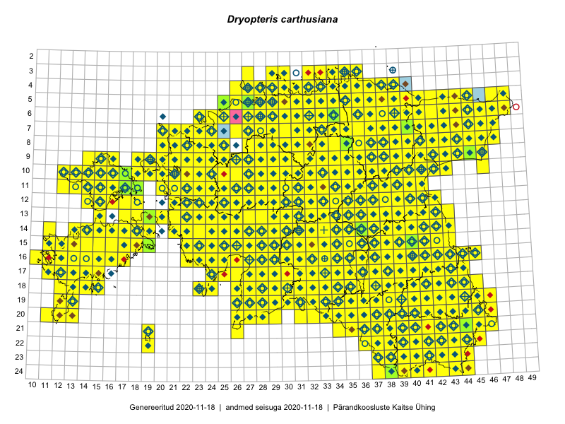

Dryopteris carthusiana — ohtene sõnajalg
Dryopteridaceae :: Dryopteris carthusiana (Vill.) H.P.Fuchs (1862); Dryopteris spinulosa (O.F. Müll.) Kuntze (717); Aspidium spinulosum (Retz.) Sw. (25)

Kaart põhineb 4940 kirjel:
vaatlusi 2371
herbaareksemplare 233
PKÜ kirjeid1 202
ELFi kirjeid2 2127
LVA kirjeid3 7
Taime kaasaegsed ja ajaloolised leiukohad asuvad 519 ruudus.
Tingmärgid ja leidudega ruutude arvud periooditi uues (u) ja 2005 andmestikus (v)
| █ | vahemik | u4 | v5 |
|---|---|---|---|
| █ | 2006–2020 | 511 | – |
| ◆/◇ | 1971–2005 | 432 | 441 |
| ○ | 1921–1970 | 178 | 17 |
| + | kuni 1920 | 28 | 0 |
| × | hävinud | – | 0 |
| ? | kaheldav | – | 0 |
| Ruut | Leidja(d) | Leiuaeg | Kirje |
|---|---|---|---|
| 16-39 | Berit Pedaste | 2020-11-08 | punkt: Dryopteris carthusiana (Vill.) H.P.Fuchs |
| 05-31 | Eerik Leibak | 2020-10-05 | ELF: 1143 |
| 20-40 | Toomas Kukk, Kersti Tambets, Sten Mander, Kristine Fenske | 2020-09-30 | ruut/ala: Dryopteris carthusiana (Vill.) H.P.Fuchs |
| 21-43 | Toomas Kukk, Kersti Tambets, Sten Mander, Kristine Fenske | 2020-09-30 | ruut/ala: Dryopteris carthusiana (Vill.) H.P.Fuchs |
| 13-31 | Toivo Sepp | 2020-09-25 | ELF: 14663 |
| 08-40 | Meeli Mesipuu | 2020-09-24 | punkt: Dryopteris carthusiana (Vill.) H.P.Fuchs |
| 06-34 | Meeli Mesipuu | 2020-09-24 | ruut/ala: Dryopteris carthusiana (Vill.) H.P.Fuchs |
| 08-31 | Meeli Mesipuu | 2020-09-15 | ruut/ala: Dryopteris carthusiana (Vill.) H.P.Fuchs |
| 13-19 | Meeli Mesipuu | 2020-09-13 | ruut/ala: Dryopteris carthusiana (Vill.) H.P.Fuchs |
| 16-15 | Ott Luuk, Meeli Mesipuu | 2020-09-11 | PKÜ: 21035 |
| 16-17 | Toomas Kukk | 2020-09-10 | ruut/ala: Dryopteris carthusiana (Vill.) H.P.Fuchs |
| 16-16 | Toomas Kukk | 2020-09-10 | ruut/ala: Dryopteris carthusiana (Vill.) H.P.Fuchs |
| 16-16;16-17 | Toomas Kukk | 2020-09-10 | PKÜ: 20959 |
| 16-17 | Toomas Kukk | 2020-09-10 | PKÜ: 20960 |
| 14-32 | Tiit Hallikma | 2020-09-10 | ELF: 23119 |
| 14-32 | Tiit Hallikma | 2020-09-10 | ELF: 24972 |
| 16-17 | Peedu Saar | 2020-09-10 | ruut/ala: Dryopteris carthusiana (Vill.) H.P.Fuchs |
| 16-28 | Ott Luuk, Meeli Mesipuu | 2020-09-10 | ruut/ala: Dryopteris carthusiana (Vill.) H.P.Fuchs |
| 14-16 | Ott Luuk, Meeli Mesipuu | 2020-09-10 | PKÜ: 20957 |
| 11-27 | Toivo Sepp | 2020-09-06 | ELF: 2411 |
| 16-14 | Mari Reitalu, Sirje Azarov | 2020-09-03 | ruut/ala: Dryopteris carthusiana (Vill.) H.P.Fuchs |
| 16-23 | Toomas Kukk | 2020-09-01 | PKÜ: 20993 |
| 16-30 | Ott Luuk, Meeli Mesipuu | 2020-09-01 | PKÜ: 20870 |
| 16-30 | Ott Luuk, Meeli Mesipuu | 2020-09-01 | PKÜ: 20873 |
| 16-30 | Ott Luuk, Meeli Mesipuu | 2020-09-01 | PKÜ: 20875 |
| 17-30 | Ott Luuk, Meeli Mesipuu | 2020-09-01 | PKÜ: 20878 |
| 17-30 | Meeli Mesipuu, Ott Luuk | 2020-09-01 | PKÜ: 21313 |
| 16-22 | Toomas Kukk | 2020-08-31 | PKÜ: 20704 |
| 16-22 | Peedu Saar | 2020-08-31 | ruut/ala: Dryopteris carthusiana (Vill.) H.P.Fuchs |
| 14-22 | Peedu Saar, Toomas Kukk | 2020-08-30 | ruut/ala: Dryopteris carthusiana (Vill.) H.P.Fuchs |
| 19-37 | Eerik Leibak | 2020-08-30 | ELF: 691 |
| 05-31 | Rein Kalamees | 2020-08-28 | ruut/ala: Dryopteris carthusiana (Vill.) H.P.Fuchs |
| 19-29 | Meeli Mesipuu | 2020-08-28 | ruut/ala: Dryopteris carthusiana (Vill.) H.P.Fuchs |
| 19-29 | Meeli Mesipuu | 2020-08-28 | ruut/ala: Dryopteris carthusiana (Vill.) H.P.Fuchs |
| 15-17 | Mari Reitalu, Sirje Azarov | 2020-08-27–2020-09-06 | ruut/ala: Dryopteris carthusiana (Vill.) H.P.Fuchs |
| 06-35 | Toomas Kukk, Peedu Saar | 2020-08-27 | ruut/ala: Dryopteris carthusiana (Vill.) H.P.Fuchs |
| 06-35 | Toomas Kukk | 2020-08-27 | PKÜ: 21010 |
| 06-34 | Peedu Saar | 2020-08-27 | ruut/ala: Dryopteris carthusiana (Vill.) H.P.Fuchs |
| 22-43 | Jaanus Paal, Taimi Paal | 2020-08-27 | ELF: 17303 |
| 04-37 | Peedu Saar | 2020-08-26 | PKÜ: 20909 |
| 10-36 | Peedu Saar | 2020-08-25 | ruut/ala: Dryopteris carthusiana (Vill.) H.P.Fuchs |
| 11-37 | Peedu Saar | 2020-08-25 | ruut/ala: Dryopteris carthusiana (Vill.) H.P.Fuchs |
| 10-32 | Ott Luuk | 2020-08-25 | PKÜ: 20583 |
| 09-29 | Toivo Sepp | 2020-08-24 | ELF: 24974 |
| 11-31 | Ott Luuk | 2020-08-24 | ruut/ala: Dryopteris carthusiana (Vill.) H.P.Fuchs |
| 10-30 | Ott Luuk | 2020-08-24 | ruut/ala: Dryopteris carthusiana (Vill.) H.P.Fuchs |
| 10-29 | Ott Luuk | 2020-08-24 | ruut/ala: Dryopteris carthusiana (Vill.) H.P.Fuchs |
| 09-29 | Toivo Sepp | 2020-08-23 | ELF: 24973 |
| 18-33 | Ott Luuk, Jaak-Albert Metsoja | 2020-08-21 | ruut/ala: Dryopteris carthusiana (Vill.) H.P.Fuchs |
| 19-33 | Tiit Hallikma | 2020-08-20 | ELF: 16536 |
| 14-16 | Mari Reitalu, Sirje Azarov | 2020-08-19–2020-08-20 | ruut/ala: Dryopteris carthusiana (Vill.) H.P.Fuchs |
| 17-14 | Triin Reitalu | 2020-08-19 | punkt: Dryopteris carthusiana (Vill.) H.P.Fuchs |
| 03-34 | Toomas Kukk, Ott Luuk, Kersti Tambets, Sten Mander, Kristine Fenske, Maie Itse | 2020-08-19 | ruut/ala: Dryopteris carthusiana (Vill.) H.P.Fuchs |
| 11-38 | Peedu Saar | 2020-08-19 | ruut/ala: Dryopteris carthusiana (Vill.) H.P.Fuchs |
| 12-39 | Peedu Saar | 2020-08-19 | ruut/ala: Dryopteris carthusiana (Vill.) H.P.Fuchs |
| 19-36 | Meeli Mesipuu | 2020-08-19 | ruut/ala: Dryopteris carthusiana (Vill.) H.P.Fuchs |
| 19-35 | Meeli Mesipuu | 2020-08-19 | ruut/ala: Dryopteris carthusiana (Vill.) H.P.Fuchs |
| 22-38 | Eerik Leibak | 2020-08-19 | ELF: 24892 |
| 16-36 | Peedu Saar | 2020-08-17 | ruut/ala: Dryopteris carthusiana (Vill.) H.P.Fuchs |
| 20-37 | Eerik Leibak | 2020-08-17 | ELF: 22709 |
| 21-37 | Eerik Leibak | 2020-08-17 | ELF: 22710 |
| 14-19 | Meeli Mesipuu | 2020-08-12 | ruut/ala: Dryopteris carthusiana (Vill.) H.P.Fuchs |
| 15-36 | Art Villem Adojaan | 2020-08-12 | punkt: Dryopteris spinulosa (O.F. Müll.) Kuntze |
| 07-30 | Eerik Leibak | 2020-08-10 | ELF: 1207 |
| 20-34 | Tiit Hallikma | 2020-08-09 | ELF: 24957 |
| 16-17 | Mari Reitalu, Sirje Azarov | 2020-08-08–2020-08-29 | ruut/ala: Dryopteris carthusiana (Vill.) H.P.Fuchs |
| 21-35 | Tiit Hallikma | 2020-08-08 | ELF: 16041 |
| 15-43 | Peedu Saar | 2020-08-08 | ruut/ala: Dryopteris carthusiana (Vill.) H.P.Fuchs |
| 15-42 | Peedu Saar | 2020-08-08 | ruut/ala: Dryopteris carthusiana (Vill.) H.P.Fuchs |
| 09-21 | Ott Luuk | 2020-08-07 | ruut/ala: Dryopteris carthusiana (Vill.) H.P.Fuchs |
| 15-15 | Mari Reitalu, Sirje Azarov | 2020-08-07 | ruut/ala: Dryopteris carthusiana (Vill.) H.P.Fuchs |
| 17-38 | Jaak Pärtel | 2020-08-07 | punkt: Dryopteris carthusiana (Vill.) H.P.Fuchs |
| 17-38 | Jaak Pärtel | 2020-08-07 | punkt: Dryopteris carthusiana (Vill.) H.P.Fuchs |
| 24-42 | Toomas Kukk, Eerik Leibak | 2020-08-06 | ruut/ala: Dryopteris carthusiana (Vill.) H.P.Fuchs |
| 22-40 | Toomas Kukk, Eerik Leibak | 2020-08-06 | ruut/ala: Dryopteris carthusiana (Vill.) H.P.Fuchs |
| 11-17 | Peedu Saar | 2020-08-06 | ruut/ala: Dryopteris carthusiana (Vill.) H.P.Fuchs |
| 11-17 | Peedu Saar | 2020-08-06 | PKÜ: 20618 |
| 11-17 | Peedu Saar | 2020-08-06 | PKÜ: 20617 |
| 17-35 | Tiit Hallikma | 2020-08-05 | ELF: 18377 |
| 10-23 | Ott Luuk | 2020-08-05 | ruut/ala: Dryopteris carthusiana (Vill.) H.P.Fuchs |
| 22-41 | Eerik Leibak | 2020-08-05 | ELF: 24924 |
| 22-42 | Eerik Leibak | 2020-08-05 | ELF: 10433 |
| 14-40 | Peedu Saar | 2020-08-03 | ruut/ala: Dryopteris carthusiana (Vill.) H.P.Fuchs |
| 07-45 | Toomas Kukk | 2020-07-29 | ruut/ala: Dryopteris carthusiana (Vill.) H.P.Fuchs |
| 15-36 | Amaranta Põld, Art Villem Adojaan | 2020-07-29 | punkt: Dryopteris spinulosa (O.F. Müll.) Kuntze |
| 08-43 | Peedu Saar | 2020-07-28 | ruut/ala: Dryopteris carthusiana (Vill.) H.P.Fuchs |
| 13-38 | Peedu Saar | 2020-07-28 | ruut/ala: Dryopteris carthusiana (Vill.) H.P.Fuchs |
| 14-38 | Peedu Saar | 2020-07-28 | ruut/ala: Dryopteris carthusiana (Vill.) H.P.Fuchs |
| 19-43 | Silvia Pihu | 2020-07-27 | ELF: 2310 |
| 14-35 | Tiit Hallikma | 2020-07-26 | ELF: 12790 |
| 14-14 | Mari Reitalu, Sirje Azarov, Aira Alasi | 2020-07-23 | ruut/ala: Dryopteris carthusiana (Vill.) H.P.Fuchs |
| 08-25 | Ott Luuk | 2020-07-22–2020-07-23 | ruut/ala: Dryopteris carthusiana (Vill.) H.P.Fuchs |
| 15-14 | Mari Reitalu, Sirje Azarov | 2020-07-21 | ruut/ala: Dryopteris carthusiana (Vill.) H.P.Fuchs |
| 04-35;04-36 | Jaan Spiegel | 2020-07-21 | ELF: 13775 |
| 04-36 | Jaan Spiegel | 2020-07-21 | ELF: 13782 |
| 03-35 | Jaan Spiegel | 2020-07-21 | ELF: 2640 |
| 16-41;17-41 | Silvia Pihu | 2020-07-16 | ELF: 721 |
| 16-39 | Toomas Kukk, Peedu Saar, Art Villem Adojaan | 2020-07-15 | ruut/ala: Dryopteris carthusiana (Vill.) H.P.Fuchs |
| 20-37 | Jaanus Paal, Taimi Paal | 2020-07-15 | ELF: 22722 |
| 20-38 | Jaanus Paal, Taimi Paal | 2020-07-15 | ELF: 10663 |
| 05-36 | Jaan Spiegel | 2020-07-15 | ELF: 11989 |
| 19-39 | Jaanus Paal, Taimi Paal | 2020-07-09 | ELF: 24866 |
| 19-39 | Jaanus Paal, Taimi Paal | 2020-07-08 | ELF: 13901 |
| 20-46 | Toomas Kukk, Eerik Leibak | 2020-07-07 | ruut/ala: Dryopteris carthusiana (Vill.) H.P.Fuchs |
| 19-38 | Mari Reitalu, Sirje Azarov, Riine Latserus | 2020-07-05 | ruut/ala: Dryopteris carthusiana (Vill.) H.P.Fuchs |
| 17-15 | Peedu Saar | 2020-07-03 | PKÜ: 21195 |
| 19-39 | Jaanus Paal, Taimi Paal | 2020-07-02 | ELF: 9976 |
| 08-23 | Thea Kull | 2020-06-28 | punkt: Dryopteris carthusiana (Vill.) H.P.Fuchs |
| 08-23 | Thea Kull | 2020-06-28 | punkt: Dryopteris carthusiana (Vill.) H.P.Fuchs |
| 04-33 | Rein Kalamees | 2020-06-26 | PKÜ: 20248 |
| 04-33 | Rein Kalamees | 2020-06-26 | PKÜ: 20239 |
| 04-33 | Rein Kalamees | 2020-06-22 | PKÜ: 20241 |
| 04-33 | Rein Kalamees | 2020-06-22 | PKÜ: 20246 |
| 04-33 | Rein Kalamees | 2020-06-22 | PKÜ: 20251 |
| 04-28 | Ott Luuk | 2020-06-22 | ruut/ala: Dryopteris carthusiana (Vill.) H.P.Fuchs |
| 08-28 | Ott Luuk | 2020-06-21 | ruut/ala: Dryopteris carthusiana (Vill.) H.P.Fuchs |
| 07-28 | Ott Luuk | 2020-06-21 | ruut/ala: Dryopteris carthusiana (Vill.) H.P.Fuchs |
| 05-29 | Peedu Saar, Mart Meriste | 2020-06-19 | ruut/ala: Dryopteris carthusiana (Vill.) H.P.Fuchs |
| 06-26 | Toomas Kukk, Martin Tikk | 2020-06-17 | PKÜ: 20782 |
| 11-22 | Meeli Mesipuu, Ott Luuk | 2020-06-17 | PKÜ: 21119 |
| 05-26 | Toomas Kukk, Martin Tikk | 2020-06-16 | PKÜ: 20848 |
| 09-28 | Toomas Kukk, Rein Kalamees | 2020-06-15 | PKÜ: 20465 |
| 13-31 | Meeli Mesipuu | 2020-06-15 | PKÜ: 21128 |
| 13-31 | Meeli Mesipuu | 2020-06-15 | PKÜ: 21136 |
| 05-31 | Rein Kalamees | 2020-06-13 | ruut/ala: Dryopteris carthusiana (Vill.) H.P.Fuchs |
| 04-32 | Peedu Saar, Ene Kook | 2020-06-11 | PKÜ: 20371 |
| 03-33 | Toomas Kukk, Meeli Mesipuu | 2020-06-10 | ruut/ala: Dryopteris carthusiana (Vill.) H.P.Fuchs |
| 04-33 | Peedu Saar | 2020-06-10 | ruut/ala: Dryopteris carthusiana (Vill.) H.P.Fuchs |
| 04-33 | Peedu Saar | 2020-06-10 | PKÜ: 20353 |
| 04-33 | Peedu Saar | 2020-06-10 | PKÜ: 20360 |
| 04-33 | Toomas Kukk | 2020-06-09 | PKÜ: 20828 |
| 04-33;04-34 | Meeli Mesipuu, Toomas Kukk | 2020-06-09 | PKÜ: 20811 |
| 04-33 | Meeli Mesipuu | 2020-06-09 | PKÜ: 21054 |
| 03-34 | Ene Kook | 2020-06-09 | PKÜ: 20322 |
| 07-36 | Toomas Kukk, Meeli Mesipuu | 2020-06-08 | ruut/ala: Dryopteris carthusiana (Vill.) H.P.Fuchs |
| 04-34 | Ene Kook, Peedu Saar | 2020-06-08 | PKÜ: 20287 |
| 17-13 | Mari Reitalu | 2020-06-07 | ruut/ala: Dryopteris carthusiana (Vill.) H.P.Fuchs |
| 23-40 | Taavi Tatsi, Jaak-Albert Metsoja | 2020-06-06 | punkt: Dryopteris carthusiana (Vill.) H.P.Fuchs |
| 19-41 | Külli Kalamees | 2020-06-06 | punkt: Dryopteris spinulosa (O.F. Müll.) Kuntze |
| 10-28 | Aat Sarv, Lemmelill Sarv | 2020-06-06 | punkt: Dryopteris carthusiana (Vill.) H.P.Fuchs |
| 17-15 | Mari Reitalu, Sirje Azarov, Triin Reitalu | 2020-05-28 | ruut/ala: Dryopteris carthusiana (Vill.) H.P.Fuchs |
| 17-36 | Meeli Mesipuu | 2020-04-11 | punkt: Dryopteris carthusiana (Vill.) H.P.Fuchs |
| 11-17 | Toomas Kukk, Rein Kalamees | 2019-10-05 | ruut/ala: Dryopteris carthusiana (Vill.) H.P.Fuchs |
| 05-29 | Vello Keppart | 2019-10-04 | punkt: Dryopteris spinulosa (O.F. Müll.) Kuntze |
| 05-29 | Vello Keppart | 2019-10-04 | punkt: Dryopteris carthusiana (Vill.) H.P.Fuchs |
| 05-29 | Vello Keppart | 2019-10-03 | punkt: Dryopteris spinulosa (O.F. Müll.) Kuntze |
| 05-29 | Vello Keppart | 2019-10-03 | punkt: Dryopteris spinulosa (O.F. Müll.) Kuntze |
| 05-29 | Vello Keppart | 2019-10-03 | punkt: Dryopteris carthusiana (Vill.) H.P.Fuchs |
| 05-29 | Vello Keppart | 2019-10-03 | punkt: Dryopteris spinulosa (O.F. Müll.) Kuntze |
| 16-13 | Mari Reitalu | 2019-09-30 | ruut/ala: Dryopteris carthusiana (Vill.) H.P.Fuchs |
| 09-31 | Toivo Sepp | 2019-09-29 | ELF: 1066 |
| 12-27 | Toivo Sepp | 2019-09-29 | ELF: 24749 |
| 09-44 | Ott Luuk | 2019-09-28 | ruut/ala: Dryopteris carthusiana (Vill.) H.P.Fuchs |
| 09-44 | Ott Luuk | 2019-09-28 | ELF: 827 |
| 15-14 | Peedu Saar, Toomas Kukk | 2019-09-27 | ruut/ala: Dryopteris carthusiana (Vill.) H.P.Fuchs |
| 09-45 | Ott Luuk | 2019-09-27 | ruut/ala: Dryopteris carthusiana (Vill.) H.P.Fuchs |
| 15-17 | Peedu Saar, Toomas Kukk | 2019-09-26 | ruut/ala: Dryopteris carthusiana (Vill.) H.P.Fuchs |
| 13-19 | Peedu Saar, Toomas Kukk | 2019-09-26 | ruut/ala: Dryopteris carthusiana (Vill.) H.P.Fuchs |
| 21-46 | Peedu Saar, Ott Luuk | 2019-09-24 | ruut/ala: Dryopteris carthusiana (Vill.) H.P.Fuchs |
| 10-21 | Ott Luuk | 2019-09-19 | ruut/ala: Dryopteris carthusiana (Vill.) H.P.Fuchs |
| 07-31 | Eerik Leibak | 2019-09-19 | ELF: 1352 |
| 10-19 | Peedu Saar, Toomas Kukk | 2019-09-18 | ruut/ala: Dryopteris carthusiana (Vill.) H.P.Fuchs |
| 10-20 | Ott Luuk | 2019-09-18 | ruut/ala: Dryopteris carthusiana (Vill.) H.P.Fuchs |
| 09-20 | Ott Luuk | 2019-09-18 | ruut/ala: Dryopteris carthusiana (Vill.) H.P.Fuchs |
| 09-19 | Toomas Kukk, Peedu Saar | 2019-09-17 | ruut/ala: Dryopteris carthusiana (Vill.) H.P.Fuchs |
| 09-19 | Toomas Kukk, Peedu Saar | 2019-09-17 | ELF: 13732 |
| 10-18 | Ott Luuk | 2019-09-17 | ruut/ala: Dryopteris carthusiana (Vill.) H.P.Fuchs |
| 09-18 | Ott Luuk | 2019-09-17 | ruut/ala: Dryopteris carthusiana (Vill.) H.P.Fuchs |
| 08-45 | Toomas Kukk, Thea Kull | 2019-09-12 | ruut/ala: Dryopteris carthusiana (Vill.) H.P.Fuchs |
| 08-44 | Thea Kull, Toomas Kukk | 2019-09-12 | ruut/ala: Dryopteris carthusiana (Vill.) H.P.Fuchs |
| 07-45 | Thea Kull, Toomas Kukk | 2019-09-12 | ruut/ala: Dryopteris carthusiana (Vill.) H.P.Fuchs |
| 06-47 | Peedu Saar, Timo Luhamäe | 2019-09-12 | ruut/ala: Dryopteris carthusiana (Vill.) H.P.Fuchs |
| 05-48 | Peedu Saar, Timo Luhamäe | 2019-09-12 | ruut/ala: Dryopteris carthusiana (Vill.) H.P.Fuchs |
| 05-47 | Peedu Saar, Timo Luhamäe | 2019-09-12 | ruut/ala: Dryopteris carthusiana (Vill.) H.P.Fuchs |
| 07-44 | Meeli Mesipuu, Ott Luuk | 2019-09-12 | ruut/ala: Dryopteris carthusiana (Vill.) H.P.Fuchs |
| 06-46 | Toomas Kukk, Thea Kull | 2019-09-11 | ruut/ala: Dryopteris carthusiana (Vill.) H.P.Fuchs |
| 06-45 | Thea Kull, Toomas Kukk | 2019-09-11 | punkt: Dryopteris carthusiana (Vill.) H.P.Fuchs |
| 10-46 | Peedu Saar, Timo Luhamäe | 2019-09-11 | ruut/ala: Dryopteris carthusiana (Vill.) H.P.Fuchs |
| 06-44 | Ott Luuk, Meeli Mesipuu | 2019-09-11 | ruut/ala: Dryopteris carthusiana (Vill.) H.P.Fuchs |
| 05-43 | Ott Luuk, Meeli Mesipuu | 2019-09-11 | ruut/ala: Dryopteris carthusiana (Vill.) H.P.Fuchs |
| 05-44 | Meeli Mesipuu, Ott Luuk | 2019-09-11 | ruut/ala: Dryopteris carthusiana (Vill.) H.P.Fuchs |
| 10-39 | Toomas Kukk, Thea Kull | 2019-09-10 | ruut/ala: Dryopteris carthusiana (Vill.) H.P.Fuchs |
| 10-40 | Toomas Kukk, Thea Kull | 2019-09-10 | ruut/ala: Dryopteris carthusiana (Vill.) H.P.Fuchs |
| 08-41 | Peedu Saar, Timo Luhamäe | 2019-09-10 | ruut/ala: Dryopteris carthusiana (Vill.) H.P.Fuchs |
| 09-41 | Peedu Saar, Timo Luhamäe | 2019-09-10 | ruut/ala: Dryopteris carthusiana (Vill.) H.P.Fuchs |
| 08-43 | Ott Luuk, Meeli Mesipuu | 2019-09-10 | ruut/ala: Dryopteris carthusiana (Vill.) H.P.Fuchs |
| 08-25 | Ott Luuk, Peedu Saar | 2019-09-05 | ruut/ala: Dryopteris carthusiana (Vill.) H.P.Fuchs |
| 14-14 | Mari Reitalu, Sirje Azarov, Anne Teigamägi | 2019-09-04 | ruut/ala: Dryopteris carthusiana (Vill.) H.P.Fuchs |
| 09-22 | Ott Luuk | 2019-09-03–2019-09-04 | ruut/ala: Dryopteris carthusiana (Vill.) H.P.Fuchs |
| 09-23 | Ott Luuk | 2019-09-03 | ruut/ala: Dryopteris carthusiana (Vill.) H.P.Fuchs |
| 09-22 | Ott Luuk | 2019-09-03 | ELF: 21058 |
| 05-26 | Ott Luuk, Peedu Saar | 2019-09-02 | ruut/ala: Dryopteris carthusiana (Vill.) H.P.Fuchs |
| 07-27 | Eerik Leibak | 2019-09-02 | ELF: 3092 |
| 07-27 | Eerik Leibak | 2019-09-02 | ELF: 24761 |
| 07-27 | Eerik Leibak | 2019-09-02 | ELF: 24762 |
| 08-30 | Ott Luuk, Toivo Sepp | 2019-08-30 | ruut/ala: Dryopteris carthusiana (Vill.) H.P.Fuchs |
| 15-29 | Peedu Saar, Toomas Kukk | 2019-08-29 | ruut/ala: Dryopteris carthusiana (Vill.) H.P.Fuchs |
| 13-32 | Ott Luuk, Eerik Leibak | 2019-08-29 | ruut/ala: Dryopteris carthusiana (Vill.) H.P.Fuchs |
| 13-31 | Ott Luuk, Eerik Leibak | 2019-08-29 | ruut/ala: Dryopteris carthusiana (Vill.) H.P.Fuchs |
| 14-32 | Meeli Mesipuu, Timo Luhamäe | 2019-08-29 | ruut/ala: Dryopteris carthusiana (Vill.) H.P.Fuchs |
| 14-33 | Meeli Mesipuu, Timo Luhamäe | 2019-08-29 | ruut/ala: Dryopteris carthusiana (Vill.) H.P.Fuchs |
| 15-32 | Mari Reitalu, Thea Kull, Martin Tikk | 2019-08-29 | ruut/ala: Dryopteris carthusiana (Vill.) H.P.Fuchs |
| 16-32 | Mari Reitalu, Thea Kull, Martin Tikk | 2019-08-29 | ruut/ala: Dryopteris carthusiana (Vill.) H.P.Fuchs |
| 16-31 | Toomas Kukk, Peedu Saar, Martin Tikk | 2019-08-28 | ruut/ala: Dryopteris carthusiana (Vill.) H.P.Fuchs |
| 16-30 | Peedu Saar, Martin Tikk, Toomas Kukk | 2019-08-28 | ruut/ala: Dryopteris carthusiana (Vill.) H.P.Fuchs |
| 14-31 | Ott Luuk, Eerik Leibak | 2019-08-28 | ruut/ala: Dryopteris carthusiana (Vill.) H.P.Fuchs |
| 14-30 | Ott Luuk, Eerik Leibak | 2019-08-28 | ruut/ala: Dryopteris carthusiana (Vill.) H.P.Fuchs |
| 15-31 | Meeli Mesipuu, Timo Luhamäe | 2019-08-28 | ruut/ala: Dryopteris carthusiana (Vill.) H.P.Fuchs |
| 15-30 | Meeli Mesipuu, Timo Luhamäe | 2019-08-28 | ruut/ala: Dryopteris carthusiana (Vill.) H.P.Fuchs |
| 13-30 | Mari Reitalu, Thea Kull | 2019-08-28 | ruut/ala: Dryopteris carthusiana (Vill.) H.P.Fuchs |
| 14-29 | Mari Reitalu, Thea Kull | 2019-08-28 | ruut/ala: Dryopteris carthusiana (Vill.) H.P.Fuchs |
| 17-32 | Peedu Saar, Martin Tikk, Toomas Kukk | 2019-08-27 | ruut/ala: Dryopteris carthusiana (Vill.) H.P.Fuchs |
| 13-36 | Ott Luuk, Eerik Leibak | 2019-08-27 | ruut/ala: Dryopteris carthusiana (Vill.) H.P.Fuchs |
| 12-34 | Ott Luuk, Eerik Leibak | 2019-08-27 | ruut/ala: Dryopteris carthusiana (Vill.) H.P.Fuchs |
| 15-35 | Meeli Mesipuu, Timo Luhamäe | 2019-08-27 | ruut/ala: Dryopteris carthusiana (Vill.) H.P.Fuchs |
| 16-33 | Mari Reitalu, Thea Kull | 2019-08-27 | ruut/ala: Dryopteris carthusiana (Vill.) H.P.Fuchs |
| 16-32 | Mari Reitalu, Thea Kull | 2019-08-27 | ruut/ala: Dryopteris carthusiana (Vill.) H.P.Fuchs |
| 09-24 | Peedu Saar | 2019-08-17 | ELF: 267 |
| 09-22 | Peedu Saar | 2019-08-16 | ruut/ala: Dryopteris carthusiana (Vill.) H.P.Fuchs |
| 10-21 | Tõnu Ploompuu | 2019-08-15 | ELF: 222 |
| 11-36 | Peedu Saar | 2019-08-10 | ruut/ala: Dryopteris carthusiana (Vill.) H.P.Fuchs |
| 09-40 | Rein Kalamees, Toomas Kukk | 2019-08-09 | ruut/ala: Dryopteris carthusiana (Vill.) H.P.Fuchs |
| 08-39 | Rein Kalamees, Toomas Kukk | 2019-08-08 | ruut/ala: Dryopteris carthusiana (Vill.) H.P.Fuchs |
| 09-39 | Rein Kalamees, Toomas Kukk | 2019-08-08 | ruut/ala: Dryopteris carthusiana (Vill.) H.P.Fuchs |
| 10-36 | Peedu Saar, Timo Luhamäe | 2019-08-08 | ruut/ala: Dryopteris carthusiana (Vill.) H.P.Fuchs |
| 10-34 | Peedu Saar, Timo Luhamäe | 2019-08-08 | ruut/ala: Dryopteris carthusiana (Vill.) H.P.Fuchs |
| 08-33 | Ott Luuk, Jaak-Albert Metsoja | 2019-08-08 | ruut/ala: Dryopteris carthusiana (Vill.) H.P.Fuchs |
| 07-33 | Ott Luuk, Jaak-Albert Metsoja | 2019-08-08 | ruut/ala: Dryopteris carthusiana (Vill.) H.P.Fuchs |
| 04-35 | Meeli Mesipuu | 2019-08-08 | ruut/ala: Dryopteris carthusiana (Vill.) H.P.Fuchs |
| 07-35 | Toomas Kukk, Rein Kalamees, Kaur Maran | 2019-08-07 | ruut/ala: Dryopteris carthusiana (Vill.) H.P.Fuchs |
| 07-34 | Toomas Kukk, Rein Kalamees, Kaur Maran | 2019-08-07 | ruut/ala: Dryopteris carthusiana (Vill.) H.P.Fuchs |
| 03-32 | Ott Luuk, Jaak-Albert Metsoja | 2019-08-07 | ruut/ala: Dryopteris carthusiana (Vill.) H.P.Fuchs |
| 04-33 | Ott Luuk, Jaak-Albert Metsoja | 2019-08-07 | ruut/ala: Dryopteris carthusiana (Vill.) H.P.Fuchs |
| 03-32 | Ott Luuk, Jaak-Albert Metsoja | 2019-08-07 | punkt: Dryopteris carthusiana (Vill.) H.P.Fuchs |
| 04-36 | Meeli Mesipuu | 2019-08-06–2019-08-07 | ruut/ala: Dryopteris carthusiana (Vill.) H.P.Fuchs |
| 03-34 | Rein Kalamees, Toomas Kukk | 2019-08-06 | ruut/ala: Dryopteris carthusiana (Vill.) H.P.Fuchs |
| 04-34 | Rein Kalamees, Toomas Kukk | 2019-08-06 | ruut/ala: Dryopteris carthusiana (Vill.) H.P.Fuchs |
| 04-38 | Ott Luuk, Jaak-Albert Metsoja | 2019-08-06 | ruut/ala: Dryopteris carthusiana (Vill.) H.P.Fuchs |
| 12-24 | Tõnu Ploompuu, Arvo Talalaev | 2019-08-05 | ELF: 23253 |
| 06-32 | Toomas Kukk, Rein Kalamees | 2019-08-05 | ruut/ala: Dryopteris carthusiana (Vill.) H.P.Fuchs |
| 05-32 | Rein Kalamees, Toomas Kukk | 2019-08-05 | ruut/ala: Dryopteris carthusiana (Vill.) H.P.Fuchs |
| 04-32 | Rein Kalamees, Toomas Kukk | 2019-08-05 | ruut/ala: Dryopteris carthusiana (Vill.) H.P.Fuchs |
| 06-31 | Peedu Saar, Timo Luhamäe | 2019-08-05 | ruut/ala: Dryopteris carthusiana (Vill.) H.P.Fuchs |
| 06-39 | Meeli Mesipuu | 2019-08-05 | ruut/ala: Dryopteris carthusiana (Vill.) H.P.Fuchs |
| 12-30 | Toivo Sepp | 2019-08-03 | ELF: 2347 |
| 12-30 | Toivo Sepp | 2019-08-03 | ELF: 24744 |
| 04-27 | Ott Luuk | 2019-08-02 | ruut/ala: Dryopteris carthusiana (Vill.) H.P.Fuchs |
| 19-38 | Toomas Kukk, Peedu Saar | 2019-08-01 | ruut/ala: Dryopteris carthusiana (Vill.) H.P.Fuchs |
| 12-29;13-29 | Toivo Sepp | 2019-07-31 | ELF: 24741 |
| 10-33 | Ott Luuk | 2019-07-31 | ruut/ala: Dryopteris carthusiana (Vill.) H.P.Fuchs |
| 10-32 | Ott Luuk | 2019-07-31 | ruut/ala: Dryopteris carthusiana (Vill.) H.P.Fuchs |
| 07-47 | Thea Kull | 2019-07-28 | punkt: Dryopteris carthusiana (Vill.) H.P.Fuchs |
| 08-44 | Thea Kull | 2019-07-26 | punkt: Dryopteris carthusiana (Vill.) H.P.Fuchs |
| 08-21 | Peedu Saar | 2019-07-26 | ruut/ala: Dryopteris carthusiana (Vill.) H.P.Fuchs |
| 08-21 | Peedu Saar | 2019-07-26 | ELF: 21028 |
| 09-31 | Ott Luuk, Toivo Sepp | 2019-07-25 | ruut/ala: Dryopteris carthusiana (Vill.) H.P.Fuchs |
| 08-32;09-32 | Toivo Sepp, Ott Luuk | 2019-07-24 | ELF: 1414 |
| 07-21 | Peedu Saar | 2019-07-24 | ruut/ala: Dryopteris carthusiana (Vill.) H.P.Fuchs |
| 08-31 | Ott Luuk, Toivo Sepp | 2019-07-24 | ruut/ala: Dryopteris carthusiana (Vill.) H.P.Fuchs |
| 09-31 | Ott Luuk, Toivo Sepp | 2019-07-24 | ELF: 15838 |
| 08-22 | Peedu Saar | 2019-07-23 | ruut/ala: Dryopteris carthusiana (Vill.) H.P.Fuchs |
| 11-30 | Ott Luuk, Toivo Sepp | 2019-07-23 | ruut/ala: Dryopteris carthusiana (Vill.) H.P.Fuchs |
| 17-38 | Meeli Mesipuu | 2019-07-23 | ruut/ala: Dryopteris carthusiana (Vill.) H.P.Fuchs |
| 11-22 | Tõnu Ploompuu, Eliko Kõiv | 2019-07-21 | ELF: 238 |
| 14-27 | Meeli Mesipuu | 2019-07-19 | ruut/ala: Dryopteris carthusiana (Vill.) H.P.Fuchs |
| 10-26 | Rein Kalamees | 2019-07-17 | ruut/ala: Dryopteris carthusiana (Vill.) H.P.Fuchs |
| 16-40 | Meeli Mesipuu | 2019-07-17 | ruut/ala: Dryopteris carthusiana (Vill.) H.P.Fuchs |
| 18-36 | Ott Luuk, Peedu Saar | 2019-07-16 | ruut/ala: Dryopteris carthusiana (Vill.) H.P.Fuchs |
| 19-35 | Ott Luuk, Peedu Saar | 2019-07-16 | ruut/ala: Dryopteris carthusiana (Vill.) H.P.Fuchs |
| 04-33 | Rein Kalamees | 2019-07-14 | ruut/ala: Dryopteris carthusiana (Vill.) H.P.Fuchs |
| 17-12 | Mari Reitalu | 2019-07-14 | ELF: 24782 |
| 03-32 | Rein Kalamees | 2019-07-13 | ruut/ala: Dryopteris carthusiana (Vill.) H.P.Fuchs |
| 23-41 | Toomas Kukk, Indrek Tammekänd | 2019-07-12 | ruut/ala: Dryopteris carthusiana (Vill.) H.P.Fuchs |
| 23-42 | Toomas Kukk, Indrek Tammekänd | 2019-07-12 | ruut/ala: Dryopteris carthusiana (Vill.) H.P.Fuchs |
| 17-39 | Thea Kull | 2019-07-12 | ruut/ala: Dryopteris carthusiana (Vill.) H.P.Fuchs |
| 20-40 | Peedu Saar, Timo Luhamäe | 2019-07-12 | ruut/ala: Dryopteris carthusiana (Vill.) H.P.Fuchs |
| 23-38 | Peedu Saar, Timo Luhamäe | 2019-07-12 | ruut/ala: Dryopteris carthusiana (Vill.) H.P.Fuchs |
| 24-37 | Peedu Saar, Timo Luhamäe | 2019-07-12 | ruut/ala: Dryopteris carthusiana (Vill.) H.P.Fuchs |
| 22-44 | Ott Luuk, Tiit Hallikma | 2019-07-12 | ruut/ala: Dryopteris carthusiana (Vill.) H.P.Fuchs |
| 19-40 | Meeli Mesipuu | 2019-07-12 | ruut/ala: Dryopteris carthusiana (Vill.) H.P.Fuchs |
| 22-40 | Toomas Kukk, Indrek Tammekänd | 2019-07-11 | ruut/ala: Dryopteris carthusiana (Vill.) H.P.Fuchs |
| 19-38 | Thea Kull | 2019-07-11 | ruut/ala: Dryopteris carthusiana (Vill.) H.P.Fuchs |
| 23-44 | Ott Luuk, Tiit Hallikma | 2019-07-11 | ruut/ala: Dryopteris carthusiana (Vill.) H.P.Fuchs |
| 24-44 | Ott Luuk, Tiit Hallikma | 2019-07-11 | ruut/ala: Dryopteris carthusiana (Vill.) H.P.Fuchs |
| 24-43 | Ott Luuk, Tiit Hallikma | 2019-07-11 | ruut/ala: Dryopteris carthusiana (Vill.) H.P.Fuchs |
| 23-43 | Ott Luuk, Tiit Hallikma | 2019-07-11 | ruut/ala: Dryopteris carthusiana (Vill.) H.P.Fuchs |
| 19-41 | Meeli Mesipuu | 2019-07-11 | ruut/ala: Dryopteris carthusiana (Vill.) H.P.Fuchs |
| 21-40 | Toomas Kukk, Indrek Tammekänd | 2019-07-10 | ruut/ala: Dryopteris carthusiana (Vill.) H.P.Fuchs |
| 21-41 | Toomas Kukk, Indrek Tammekänd | 2019-07-10 | ruut/ala: Dryopteris carthusiana (Vill.) H.P.Fuchs |
| 21-42 | Toomas Kukk, Indrek Tammekänd | 2019-07-10 | ruut/ala: Dryopteris carthusiana (Vill.) H.P.Fuchs |
| 19-39 | Thea Kull | 2019-07-10 | ruut/ala: Dryopteris carthusiana (Vill.) H.P.Fuchs |
| 16-11 | Sirje Azarov, Mari Reitalu | 2019-07-10 | ELF: 24779 |
| 20-46 | Ott Luuk, Tiit Hallikma | 2019-07-10 | ruut/ala: Dryopteris carthusiana (Vill.) H.P.Fuchs |
| 20-45 | Ott Luuk, Tiit Hallikma | 2019-07-10 | ruut/ala: Dryopteris carthusiana (Vill.) H.P.Fuchs |
| 18-41 | Meeli Mesipuu | 2019-07-10 | ruut/ala: Dryopteris carthusiana (Vill.) H.P.Fuchs |
| 20-40 | Toomas Kukk, Indrek Tammekänd | 2019-07-09 | ruut/ala: Dryopteris carthusiana (Vill.) H.P.Fuchs |
| 20-41 | Toomas Kukk, Indrek Tammekänd | 2019-07-09 | ruut/ala: Dryopteris carthusiana (Vill.) H.P.Fuchs |
| 18-42 | Thea Kull, Meeli Mesipuu | 2019-07-09 | ruut/ala: Dryopteris carthusiana (Vill.) H.P.Fuchs |
| 20-43 | Ott Luuk, Tiit Hallikma | 2019-07-09 | ruut/ala: Dryopteris carthusiana (Vill.) H.P.Fuchs |
| 20-44 | Ott Luuk, Tiit Hallikma | 2019-07-09 | ruut/ala: Dryopteris carthusiana (Vill.) H.P.Fuchs |
| 15-15 | Toomas Kukk, Eerik Leibak | 2019-07-05 | ruut/ala: Dryopteris carthusiana (Vill.) H.P.Fuchs |
| 11-36 | Jaanus Paal, Elo Raspel | 2019-07-05 | ELF: 24707 |
| 11-36 | Jaanus Paal, Elo Raspel | 2019-07-05 | ELF: 24709 |
| 11-36 | Jaanus Paal, Elo Raspel | 2019-07-05 | ELF: 24712 |
| 10-13 | Toomas Kukk | 2019-07-04 | ruut/ala: Dryopteris carthusiana (Vill.) H.P.Fuchs |
| 12-41 | Peedu Saar, Ott Luuk | 2019-07-04 | ruut/ala: Dryopteris carthusiana (Vill.) H.P.Fuchs |
| 12-15 | Eerik Leibak, Toomas Kukk | 2019-07-04 | ruut/ala: Dryopteris carthusiana (Vill.) H.P.Fuchs |
| 10-15 | Toomas Kukk | 2019-07-03 | ruut/ala: Dryopteris carthusiana (Vill.) H.P.Fuchs |
| 10-16 | Toomas Kukk | 2019-07-03 | ruut/ala: Dryopteris carthusiana (Vill.) H.P.Fuchs |
| 11-16 | Eerik Leibak | 2019-07-03 | ruut/ala: Dryopteris carthusiana (Vill.) H.P.Fuchs |
| 11-14 | Toomas Kukk | 2019-07-02 | ruut/ala: Dryopteris carthusiana (Vill.) H.P.Fuchs |
| 10-16 | Eerik Leibak, Toomas Kukk | 2019-07-01 | ruut/ala: Dryopteris carthusiana (Vill.) H.P.Fuchs |
| 05-28 | Meeli Mesipuu | 2019-06-30 | ruut/ala: Dryopteris carthusiana (Vill.) H.P.Fuchs |
| 18-38 | Meeli Mesipuu | 2019-06-20 | ruut/ala: Dryopteris carthusiana (Vill.) H.P.Fuchs |
| 10-28 | Ott Luuk | 2019-06-14 | punkt: Dryopteris carthusiana (Vill.) H.P.Fuchs |
| 05-29 | Thea Kull | 2019-06-12 | ruut/ala: Dryopteris carthusiana (Vill.) H.P.Fuchs |
| 08-37 | Ott Luuk, Peedu Saar | 2019-06-12 | ruut/ala: Dryopteris carthusiana (Vill.) H.P.Fuchs |
| 05-33 | Ott Luuk, Peedu Saar | 2019-06-11 | ruut/ala: Dryopteris carthusiana (Vill.) H.P.Fuchs |
| 10-38 | Peedu Saar, Ott Luuk | 2019-06-10 | ruut/ala: Dryopteris carthusiana (Vill.) H.P.Fuchs |
| 11-37 | Ott Luuk, Peedu Saar | 2019-06-10 | ruut/ala: Dryopteris carthusiana (Vill.) H.P.Fuchs |
| 17-30 | Indrek Tammekänd | 2019-06-10 | ruut/ala: Dryopteris carthusiana (Vill.) H.P.Fuchs |
| 16-43 | Peedu Saar | 2019-06-07 | ruut/ala: Dryopteris carthusiana (Vill.) H.P.Fuchs |
| 16-45 | Ott Luuk | 2019-06-07 | punkt: Dryopteris carthusiana (Vill.) H.P.Fuchs |
| 17-13 | Mari Reitalu | 2019-06-05 | ruut/ala: Dryopteris carthusiana (Vill.) H.P.Fuchs |
| 17-15 | Meeli Mesipuu | 2019-06-04 | ruut/ala: Dryopteris carthusiana (Vill.) H.P.Fuchs |
| 12-16 | Toomas Kukk, Indrek Tammekänd | 2019-06-03 | ruut/ala: Dryopteris carthusiana (Vill.) H.P.Fuchs |
| 15-18 | Meeli Mesipuu | 2019-06-03 | ruut/ala: Dryopteris carthusiana (Vill.) H.P.Fuchs |
| 10-13 | Toomas Kukk, Indrek Tammekänd | 2019-06-02 | ruut/ala: Dryopteris carthusiana (Vill.) H.P.Fuchs |
| 12-17 | Toomas Kukk, Indrek Tammekänd | 2019-06-01 | ruut/ala: Dryopteris carthusiana (Vill.) H.P.Fuchs |
| 18-32 | Meeli Mesipuu | 2019-05-31 | ruut/ala: Dryopteris carthusiana (Vill.) H.P.Fuchs |
| 15-40 | Ott Luuk, Thea Kull, Meeli Mesipuu | 2019-05-30 | ruut/ala: Dryopteris carthusiana (Vill.) H.P.Fuchs |
| 15-40 | Ott Luuk, Thea Kull, Meeli Mesipuu | 2019-05-30 | ruut/ala: Dryopteris carthusiana (Vill.) H.P.Fuchs |
| 07-35 | Meeli Mesipuu | 2019-05-13 | ruut/ala: Dryopteris carthusiana (Vill.) H.P.Fuchs |
| 17-15 | Mari Reitalu, Sirje Azarov | 2019-04-23 | ruut/ala: Dryopteris carthusiana (Vill.) H.P.Fuchs |
| 12-37 | Ott Luuk, Meeli Mesipuu | 2018-09-20 | ruut/ala: Dryopteris carthusiana (Vill.) H.P.Fuchs |
| 17-38 | Ott Luuk, Meeli Mesipuu | 2018-09-20 | ruut/ala: Dryopteris carthusiana (Vill.) H.P.Fuchs |
| 15-42 | Ott Luuk, Meeli Mesipuu | 2018-09-19 | ruut/ala: Dryopteris carthusiana (Vill.) H.P.Fuchs |
| 12-18 | Toomas Kukk, Peeter Pärn | 2018-09-15 | ruut/ala: Dryopteris carthusiana (Vill.) H.P.Fuchs |
| 04-28 | Ott Luuk | 2018-09-07 | ruut/ala: Dryopteris carthusiana (Vill.) H.P.Fuchs |
| 09-25 | Ott Luuk, Thea Kull | 2018-09-06 | ruut/ala: Dryopteris carthusiana (Vill.) H.P.Fuchs |
| 17-43 | Peedu Saar | 2018-09-05 | ruut/ala: Dryopteris carthusiana (Vill.) H.P.Fuchs |
| 09-42 | Peedu Saar, Toomas Kukk | 2018-09-04 | ruut/ala: Dryopteris carthusiana (Vill.) H.P.Fuchs |
| 05-41 | Peedu Saar, Toomas Kukk | 2018-09-03 | ruut/ala: Dryopteris carthusiana (Vill.) H.P.Fuchs |
| 12-25 | Indrek Tammekänd | 2018-09-02 | ELF: 2947 |
| 14-24 | Indrek Tammekänd | 2018-09-02 | ELF: 24498 |
| 10-32 | Ott Luuk | 2018-08-29 | ruut/ala: Dryopteris carthusiana (Vill.) H.P.Fuchs |
| 10-32 | Ott Luuk | 2018-08-28 | ruut/ala: Dryopteris carthusiana (Vill.) H.P.Fuchs |
| 10-31 | Ott Luuk | 2018-08-28 | ruut/ala: Dryopteris carthusiana (Vill.) H.P.Fuchs |
| 20-44 | Toomas Kukk, Eerik Leibak, Timo Luhamäe | 2018-08-27 | ruut/ala: Dryopteris carthusiana (Vill.) H.P.Fuchs |
| 19-44 | Toomas Kukk, Eerik Leibak, Timo Luhamäe | 2018-08-27 | ruut/ala: Dryopteris carthusiana (Vill.) H.P.Fuchs |
| 10-30 | Ott Luuk, Toivo Sepp | 2018-08-27 | ruut/ala: Dryopteris carthusiana (Vill.) H.P.Fuchs |
| 14-38 | Peedu Saar | 2018-08-23 | ruut/ala: Dryopteris carthusiana (Vill.) H.P.Fuchs |
| 14-37 | Peedu Saar | 2018-08-23 | ruut/ala: Dryopteris carthusiana (Vill.) H.P.Fuchs |
| 11-31 | Ott Luuk | 2018-08-23 | ruut/ala: Dryopteris carthusiana (Vill.) H.P.Fuchs |
| 10-22 | Tõnu Ploompuu, Laura Paju | 2018-08-22 | ELF: 203 |
| 12-32 | Ott Luuk, Toivo Sepp | 2018-08-22 | ruut/ala: Dryopteris carthusiana (Vill.) H.P.Fuchs |
| 11-33 | Ott Luuk, Toivo Sepp | 2018-08-22 | ruut/ala: Dryopteris carthusiana (Vill.) H.P.Fuchs |
| 13-22 | Indrek Tammekänd, Silvia Lotman | 2018-08-21 | ELF: 1764 |
| 13-21 | Indrek Tammekänd | 2018-08-21 | ELF: 24583 |
| 14-31 | Toomas Kukk | 2018-08-18 | ruut/ala: Dryopteris carthusiana (Vill.) H.P.Fuchs |
| 14-32 | Toomas Kukk | 2018-08-18 | ruut/ala: Dryopteris carthusiana (Vill.) H.P.Fuchs |
| 07-47 | Meeli Mesipuu | 2018-08-18 | ruut/ala: Dryopteris carthusiana (Vill.) H.P.Fuchs |
| 13-31 | Eerik Leibak | 2018-08-18 | ELF: 24497 |
| 12-25 | Toomas Kukk, Ott Luuk, Peedu Saar | 2018-08-17 | ruut/ala: Dryopteris carthusiana (Vill.) H.P.Fuchs |
| 13-23 | Peedu Saar, Toomas Kukk, Ott Luuk, Kersti Tambets, Sten Mander | 2018-08-17 | ruut/ala: Dryopteris carthusiana (Vill.) H.P.Fuchs |
| 10-27 | Peedu Saar, Toomas Kukk, Ott Luuk, Kersti Tambets, Sten Mander | 2018-08-16 | ruut/ala: Dryopteris carthusiana (Vill.) H.P.Fuchs |
| 17-31 | Peedu Saar, Polina Degtjarenko | 2018-08-14 | ruut/ala: Dryopteris carthusiana (Vill.) H.P.Fuchs |
| 19-28 | Peedu Saar, Polina Degtjarenko | 2018-08-14 | ruut/ala: Dryopteris carthusiana (Vill.) H.P.Fuchs |
| 17-12 | Triin Reitalu, Mari Reitalu | 2018-08-11 | punkt: Dryopteris carthusiana (Vill.) H.P.Fuchs |
| 05-43 | Indrek Tammekänd | 2018-08-11 | ruut/ala: Dryopteris carthusiana (Vill.) H.P.Fuchs |
| 05-44 | Indrek Tammekänd | 2018-08-10–2018-08-11 | ruut/ala: Dryopteris carthusiana (Vill.) H.P.Fuchs |
| 05-48 | Vello Keppart | 2018-08-10 | punkt: Dryopteris carthusiana (Vill.) H.P.Fuchs |
| 05-48 | Vello Keppart | 2018-08-10 | punkt: Dryopteris carthusiana (Vill.) H.P.Fuchs |
| 04-34 | Peedu Saar, Toomas Kukk | 2018-08-08 | ruut/ala: Dryopteris carthusiana (Vill.) H.P.Fuchs |
| 07-28 | Peedu Saar, Toomas Kukk | 2018-08-07 | ruut/ala: Dryopteris carthusiana (Vill.) H.P.Fuchs |
| 14-14 | Mari Reitalu, Sirje Azarov | 2018-08-07 | ELF: 1290 |
| 13-19 | Mari Reitalu, Sirje Azarov | 2018-08-07 | ELF: 1421 |
| 14-16;14-17 | Mari Reitalu, Sirje Azarov | 2018-08-07 | ELF: 2585 |
| 14-14 | Mari Reitalu, Sirje Azarov | 2018-08-07 | ELF: 24665 |
| 16-43 | Peedu Saar | 2018-08-06 | ruut/ala: Dryopteris carthusiana (Vill.) H.P.Fuchs |
| 16-43 | Peedu Saar | 2018-08-06 | ELF: 24452 |
| 17-15 | Mari Reitalu, Sirje Azarov | 2018-08-06 | ELF: 2984 |
| 11-23;11-24 | Tõnu Ploompuu, Mart Tartlan, Helen Valts, Tanel Pihelgas | 2018-08-03 | ELF: 24591 |
| 19-31 | Peedu Saar | 2018-08-03 | ruut/ala: Dryopteris carthusiana (Vill.) H.P.Fuchs |
| 20-33 | Peedu Saar | 2018-08-03 | ruut/ala: Dryopteris carthusiana (Vill.) H.P.Fuchs |
| 19-33 | Peedu Saar | 2018-08-03 | ELF: 16535 |
| 19-31 | Peedu Saar | 2018-08-03 | ELF: 24656 |
| 19-31 | Peedu Saar | 2018-08-03 | ELF: 24657 |
| 09-30 | Ott Luuk, Toivo Sepp | 2018-08-02 | ELF: 24570 |
| 08-28 | Tiina Elvisto, Riima Niidas | 2018-08-01 | punkt: Dryopteris carthusiana (Vill.) H.P.Fuchs |
| 18-33 | Peedu Saar | 2018-08-01 | ruut/ala: Dryopteris carthusiana (Vill.) H.P.Fuchs |
| 19-34 | Peedu Saar | 2018-08-01 | ruut/ala: Dryopteris carthusiana (Vill.) H.P.Fuchs |
| 17-33 | Peedu Saar | 2018-08-01 | ruut/ala: Dryopteris carthusiana (Vill.) H.P.Fuchs |
| 19-34 | Peedu Saar | 2018-08-01 | ELF: 19224 |
| 10-31 | Ott Luuk | 2018-08-01 | ruut/ala: Dryopteris carthusiana (Vill.) H.P.Fuchs |
| 10-38 | Alar Soppe | 2018-07-27 | ELF: 2808 |
| 07-45 | Alar Soppe | 2018-07-25 | ELF: 24051 |
| 08-39 | Alar Soppe | 2018-07-23 | ELF: 772 |
| 20-34 | Eerik Leibak | 2018-07-21 | ELF: 16099 |
| 14-40 | Peedu Saar | 2018-07-20 | ruut/ala: Dryopteris carthusiana (Vill.) H.P.Fuchs |
| 15-42 | Peedu Saar | 2018-07-20 | ruut/ala: Dryopteris carthusiana (Vill.) H.P.Fuchs |
| 15-43 | Peedu Saar | 2018-07-20 | ruut/ala: Dryopteris carthusiana (Vill.) H.P.Fuchs |
| 15-43 | Peedu Saar | 2018-07-20 | ELF: 3026 |
| 12-40 | Peedu Saar | 2018-07-20 | ELF: 13322 |
| 09-45 | Peedu Saar | 2018-07-19 | ruut/ala: Dryopteris carthusiana (Vill.) H.P.Fuchs |
| 12-40 | Peedu Saar | 2018-07-19 | ruut/ala: Dryopteris carthusiana (Vill.) H.P.Fuchs |
| 12-40 | Peedu Saar | 2018-07-19 | ELF: 24650 |
| 23-42 | Toomas Kukk, Eerik Leibak | 2018-07-18 | ruut/ala: Dryopteris carthusiana (Vill.) H.P.Fuchs |
| 22-42 | Toomas Kukk | 2018-07-18 | ruut/ala: Dryopteris carthusiana (Vill.) H.P.Fuchs |
| 23-42 | Toomas Kukk | 2018-07-18 | ELF: 14477 |
| 23-42 | Toomas Kukk | 2018-07-18 | ELF: 24675 |
| 23-41 | Eerik Leibak | 2018-07-18 | ELF: 18451 |
| 23-41 | Eerik Leibak | 2018-07-18 | ELF: 24677 |
| 09-44 | Toomas Kukk | 2018-07-17 | ruut/ala: Dryopteris carthusiana (Vill.) H.P.Fuchs |
| 09-43 | Toomas Kukk | 2018-07-17 | ruut/ala: Dryopteris carthusiana (Vill.) H.P.Fuchs |
| 08-44 | Peedu Saar | 2018-07-17 | ruut/ala: Dryopteris carthusiana (Vill.) H.P.Fuchs |
| 09-45 | Peedu Saar | 2018-07-17 | ruut/ala: Dryopteris carthusiana (Vill.) H.P.Fuchs |
| 04-34 | Alar Soppe | 2018-07-17 | ELF: 13768 |
| 18-30 | Indrek Tammekänd | 2018-07-15 | ELF: 23106 |
| 22-38 | Eerik Leibak | 2018-07-15 | ELF: 13646 |
| 16-12 | Triin Reitalu, Ansis Blaus | 2018-07-13 | punkt: Dryopteris carthusiana (Vill.) H.P.Fuchs |
| 15-12 | Triin Reitalu, Ansis Blaus | 2018-07-12 | punkt: Dryopteris carthusiana (Vill.) H.P.Fuchs |
| 12-24 | Meeli Mesipuu | 2018-07-12 | ruut/ala: Dryopteris carthusiana (Vill.) H.P.Fuchs |
| 10-17 | Toomas Kukk | 2018-07-10 | TAA0146566: Dryopteris carthusiana (Vill.) H.P.Fuchs |
| 10-17 | Toomas Kukk | 2018-07-10 | TAA0146567: Dryopteris carthusiana (Vill.) H.P.Fuchs |
| 14-14 | Triin Reitalu, Ansis Blaus | 2018-07-09 | punkt: Dryopteris carthusiana (Vill.) H.P.Fuchs |
| 14-14 | Triin Reitalu, Ansis Blaus | 2018-07-09 | punkt: Dryopteris carthusiana (Vill.) H.P.Fuchs |
| 11-18 | Toomas Kukk | 2018-07-09 | TAA0146560: Dryopteris carthusiana (Vill.) H.P.Fuchs |
| 11-18 | Toomas Kukk | 2018-07-09 | TAA0146561: Dryopteris carthusiana (Vill.) H.P.Fuchs |
| 11-18 | Meeli Mesipuu | 2018-07-09 | ruut/ala: Dryopteris carthusiana (Vill.) H.P.Fuchs |
| 04-36 | Alar Soppe | 2018-07-09 | ELF: 2060 |
| 06-24 | Peedu Saar, Jaak-Albert Metsoja, Mari Metsoja | 2018-07-06 | punkt: Dryopteris carthusiana (Vill.) H.P.Fuchs |
| 06-24 | Peedu Saar, Jaak-Albert Metsoja, Mari Metsoja | 2018-07-06 | ruut/ala: Dryopteris carthusiana (Vill.) H.P.Fuchs |
| 06-23 | Peedu Saar | 2018-07-05 | ruut/ala: Dryopteris carthusiana (Vill.) H.P.Fuchs |
| 06-23 | Ott Luuk, Meeli Mesipuu, Jaak-Albert Metsoja, Mari Metsoja, Peedu Saar | 2018-07-04–2018-07-06 | ruut/ala: Dryopteris carthusiana (Vill.) H.P.Fuchs |
| 06-23 | Peedu Saar | 2018-07-04 | ruut/ala: Dryopteris carthusiana (Vill.) H.P.Fuchs |
| 08-27 | Mari Reitalu, Sirje Azarov | 2018-07-01 | ruut/ala: Dryopteris carthusiana (Vill.) H.P.Fuchs |
| 09-27 | Mari Reitalu, Sirje Azarov | 2018-07-01 | ruut/ala: Dryopteris carthusiana (Vill.) H.P.Fuchs |
| 07-28 | Mari Reitalu, Sirje Azarov | 2018-06-30 | ruut/ala: Dryopteris carthusiana (Vill.) H.P.Fuchs |
| 23-38 | Eerik Leibak | 2018-06-28 | ELF: 24667 |
| 23-38 | Eerik Leibak | 2018-06-28 | ELF: 24668 |
| 06-44;07-44 | Alar Soppe | 2018-06-28 | ELF: 839 |
| 06-47;06-48 | Alar Soppe | 2018-06-28 | ELF: 844 |
| 21-39 | Eerik Leibak | 2018-06-27 | ELF: 19137 |
| 16-40 | Liisa Oks | 2018-06-23 | LVA: -315611926 |
| 20-46 | Rein Kalamees | 2018-06-19 | ruut/ala: Dryopteris carthusiana (Vill.) H.P.Fuchs |
| 13-42 | Toomas Kukk, Ilmar Uibopuu | 2018-06-17 | ruut/ala: Dryopteris carthusiana (Vill.) H.P.Fuchs |
| 17-40 | Margus Ots, Sigrid Ots, Ekke Rikka | 2018-06-16 | punkt: Dryopteris carthusiana (Vill.) H.P.Fuchs |
| 19-26 | Iris Reinula | 2018-06-15 | punkt: Dryopteris spinulosa (O.F. Müll.) Kuntze |
| 07-33 | Indrek Tammekänd, Eike Tammekänd, Murel Truu | 2018-06-09–2018-06-10 | ruut/ala: Dryopteris carthusiana (Vill.) H.P.Fuchs |
| 17-30 | Indrek Tammekänd | 2018-06-06 | ruut/ala: Dryopteris carthusiana (Vill.) H.P.Fuchs |
| 16-31 | Indrek Tammekänd | 2018-06-04–2018-06-05 | ruut/ala: Dryopteris carthusiana (Vill.) H.P.Fuchs |
| 17-33 | Mari Reitalu, Leena Gerz | 2018-06-03 | ruut/ala: Dryopteris carthusiana (Vill.) H.P.Fuchs |
| 19-34 | Mari Reitalu, Elle Roosaluste | 2018-06-02 | ruut/ala: Dryopteris carthusiana (Vill.) H.P.Fuchs |
| 18-23 | Indrek Tammekänd | 2018-05-31–2018-06-02 | ruut/ala: Dryopteris carthusiana (Vill.) H.P.Fuchs |
| 18-24 | Indrek Tammekänd | 2018-05-31–2018-06-02 | ruut/ala: Dryopteris carthusiana (Vill.) H.P.Fuchs |
| 14-16 | Ireene Roman | 2018-05-31 | LVA: -1490648974 |
| 11-37 | Indrek Tammekänd, Jaak Tammekänd, Alar Soppe, Margus Pensa | 2018-05-26 | ruut/ala: Dryopteris carthusiana (Vill.) H.P.Fuchs |
| 11-36 | Indrek Tammekänd, Jaak Tammekänd, Agu Leivits, Meelis Leivits, Alar Soppe, Triin Leetmaa, Margus Pensa | 2018-05-25–2018-05-27 | ruut/ala: Dryopteris carthusiana (Vill.) H.P.Fuchs |
| 05-39 | Meeli Mesipuu | 2018-05-25 | ruut/ala: Dryopteris carthusiana (Vill.) H.P.Fuchs |
| 17-38 | Oliver Veske | 2018-05-23 | LVA: -522075496 |
| 16-23 | Indrek Tammekänd | 2017-10-19 | ruut/ala: Dryopteris carthusiana (Vill.) H.P.Fuchs |
| 19-13 | Mari Reitalu, Triin Reitalu | 2017-10-11 | ruut/ala: Dryopteris carthusiana (Vill.) H.P.Fuchs |
| 03-29 | Toomas Kukk | 2017-09-29 | ruut/ala: Dryopteris carthusiana (Vill.) H.P.Fuchs |
| 03-30 | Peedu Saar | 2017-09-29 | ruut/ala: Dryopteris carthusiana (Vill.) H.P.Fuchs |
| 09-40 | Toomas Kukk, Peedu Saar | 2017-09-28 | ruut/ala: Dryopteris carthusiana (Vill.) H.P.Fuchs |
| 10-14 | Peedu Saar, Ott Luuk | 2017-09-14 | ruut/ala: Dryopteris carthusiana (Vill.) H.P.Fuchs |
| 10-15 | Ott Luuk, Peedu Saar | 2017-09-14 | ruut/ala: Dryopteris carthusiana (Vill.) H.P.Fuchs |
| 10-13 | Ott Luuk, Peedu Saar | 2017-09-14 | ruut/ala: Dryopteris carthusiana (Vill.) H.P.Fuchs |
| 12-14 | Toomas Kukk, Indrek Tammekänd | 2017-09-13 | ruut/ala: Dryopteris carthusiana (Vill.) H.P.Fuchs |
| 11-15 | Peedu Saar, Ott Luuk | 2017-09-13 | ruut/ala: Dryopteris carthusiana (Vill.) H.P.Fuchs |
| 11-14 | Ott Luuk, Peedu Saar | 2017-09-13 | ruut/ala: Dryopteris carthusiana (Vill.) H.P.Fuchs |
| 11-16 | Ott Luuk, Peedu Saar | 2017-09-13 | ruut/ala: Dryopteris carthusiana (Vill.) H.P.Fuchs |
| 11-12 | Toomas Kukk, Indrek Tammekänd | 2017-09-12 | ruut/ala: Dryopteris carthusiana (Vill.) H.P.Fuchs |
| 11-13 | Toomas Kukk, Indrek Tammekänd | 2017-09-12 | ruut/ala: Dryopteris carthusiana (Vill.) H.P.Fuchs |
| 10-12 | Toomas Kukk, Indrek Tammekänd | 2017-09-12 | ruut/ala: Dryopteris carthusiana (Vill.) H.P.Fuchs |
| 10-18 | Ott Luuk, Peedu Saar | 2017-09-12 | ruut/ala: Dryopteris carthusiana (Vill.) H.P.Fuchs |
| 12-17 | Toomas Kukk, Indrek Tammekänd | 2017-09-11 | ruut/ala: Dryopteris carthusiana (Vill.) H.P.Fuchs |
| 11-17 | Toomas Kukk, Indrek Tammekänd | 2017-09-11 | ruut/ala: Dryopteris carthusiana (Vill.) H.P.Fuchs |
| 10-16 | Peedu Saar, Ott Luuk | 2017-09-11 | ruut/ala: Dryopteris carthusiana (Vill.) H.P.Fuchs |
| 11-24 | Peedu Saar, Toomas Kukk | 2017-09-07 | ruut/ala: Dryopteris carthusiana (Vill.) H.P.Fuchs |
| 06-35 | Eerik Leibak | 2017-09-07 | ELF: 24505 |
| 06-35 | Eerik Leibak | 2017-09-07 | ELF: 24508 |
| 08-31 | Rein Kalamees | 2017-09-06 | ruut/ala: Dryopteris carthusiana (Vill.) H.P.Fuchs |
| 18-27 | Peedu Saar, Toomas Kukk | 2017-09-06 | ruut/ala: Dryopteris carthusiana (Vill.) H.P.Fuchs |
| 17-31 | Peedu Saar, Toomas Kukk | 2017-09-06 | ruut/ala: Dryopteris carthusiana (Vill.) H.P.Fuchs |
| 14-26 | Indrek Tammekänd | 2017-09-04 | ruut/ala: Dryopteris spinulosa (O.F. Müll.) Kuntze |
| 06-34 | Rein Kalamees | 2017-08-31 | ruut/ala: Dryopteris carthusiana (Vill.) H.P.Fuchs |
| 20-29 | Toomas Kukk, Ott Luuk, Kersti Tambets, Timo Luhamäe, Sten Mander | 2017-08-30 | ruut/ala: Dryopteris carthusiana (Vill.) H.P.Fuchs |
| 18-31 | Toomas Kukk, Ott Luuk, Kersti Tambets, Timo Luhamäe, Sten Mander | 2017-08-29 | ruut/ala: Dryopteris carthusiana (Vill.) H.P.Fuchs |
| 14-35 | Meeli Mesipuu, Ott Luuk, Helen Toom | 2017-08-28 | ruut/ala: Dryopteris carthusiana (Vill.) H.P.Fuchs |
| 13-20 | Toomas Kukk, Peedu Saar, Ott Luuk | 2017-08-26 | ruut/ala: Dryopteris carthusiana (Vill.) H.P.Fuchs |
| 14-15 | Mari Reitalu | 2017-08-24 | ruut/ala: Dryopteris carthusiana (Vill.) H.P.Fuchs |
| 11-40 | Peedu Saar, Ott Luuk | 2017-08-23 | ruut/ala: Dryopteris carthusiana (Vill.) H.P.Fuchs |
| 12-41 | Ott Luuk, Peedu Saar | 2017-08-23 | ruut/ala: Dryopteris carthusiana (Vill.) H.P.Fuchs |
| 15-37 | Meeli Mesipuu | 2017-08-22 | ruut/ala: Dryopteris carthusiana (Vill.) H.P.Fuchs |
| 14-43 | Peedu Saar, Ott Luuk | 2017-08-21 | ruut/ala: Dryopteris carthusiana (Vill.) H.P.Fuchs |
| 14-37 | Indrek Tammekänd | 2017-08-17–2017-08-18 | ruut/ala: Dryopteris spinulosa (O.F. Müll.) Kuntze |
| 15-38 | Indrek Tammekänd | 2017-08-17 | ruut/ala: Dryopteris carthusiana (Vill.) H.P.Fuchs |
| 14-36 | Indrek Tammekänd | 2017-08-16 | ruut/ala: Dryopteris spinulosa (O.F. Müll.) Kuntze |
| 14-35 | Peedu Saar | 2017-08-15–2017-09-16 | ruut/ala: Dryopteris carthusiana (Vill.) H.P.Fuchs |
| 14-36 | Ott Luuk | 2017-08-15 | ruut/ala: Dryopteris carthusiana (Vill.) H.P.Fuchs |
| 14-36 | Meeli Mesipuu, Helen Toom | 2017-08-15 | ruut/ala: Dryopteris carthusiana (Vill.) H.P.Fuchs |
| 14-37 | Peedu Saar | 2017-08-14 | ruut/ala: Dryopteris carthusiana (Vill.) H.P.Fuchs |
| 14-37 | Meeli Mesipuu, Helen Toom | 2017-08-14 | ruut/ala: Dryopteris carthusiana (Vill.) H.P.Fuchs |
| 16-28 | Peedu Saar, Timo Luhamäe | 2017-08-11 | ruut/ala: Dryopteris carthusiana (Vill.) H.P.Fuchs |
| 15-28 | Peedu Saar, Timo Luhamäe | 2017-08-11 | ruut/ala: Dryopteris carthusiana (Vill.) H.P.Fuchs |
| 14-27 | Ott Luuk, Indrek Tammekänd | 2017-08-11 | ruut/ala: Dryopteris carthusiana (Vill.) H.P.Fuchs |
| 09-24 | Mari Reitalu, Eerik Leibak | 2017-08-11 | ruut/ala: Dryopteris carthusiana (Vill.) H.P.Fuchs |
| 15-29 | Ilmar Uibopuu, Toomas Kukk | 2017-08-11 | ruut/ala: Dryopteris carthusiana (Vill.) H.P.Fuchs |
| 11-25 | Toomas Kukk, Eerik Leibak | 2017-08-10 | ruut/ala: Dryopteris carthusiana (Vill.) H.P.Fuchs |
| 05-27 | Peedu Saar, Timo Luhamäe | 2017-08-10 | ruut/ala: Dryopteris carthusiana (Vill.) H.P.Fuchs |
| 05-26 | Peedu Saar, Timo Luhamäe | 2017-08-10 | ruut/ala: Dryopteris carthusiana (Vill.) H.P.Fuchs |
| 11-20 | Ott Luuk, Ilmar Uibopuu | 2017-08-10 | ruut/ala: Dryopteris carthusiana (Vill.) H.P.Fuchs |
| 07-23 | Mari Reitalu, Indrek Tammekänd | 2017-08-10 | ruut/ala: Dryopteris carthusiana (Vill.) H.P.Fuchs |
| 11-24 | Eerik Leibak, Toomas Kukk | 2017-08-10 | ruut/ala: Dryopteris carthusiana (Vill.) H.P.Fuchs |
| 09-29 | Toomas Kukk, Ilmar Uibopuu, Kadri Kuusksalu | 2017-08-09 | ruut/ala: Dryopteris carthusiana (Vill.) H.P.Fuchs |
| 08-30 | Thea Kull, Ott Luuk | 2017-08-09 | ruut/ala: Dryopteris carthusiana (Vill.) H.P.Fuchs |
| 12-24 | Peedu Saar, Timo Luhamäe | 2017-08-09 | ruut/ala: Dryopteris carthusiana (Vill.) H.P.Fuchs |
| 12-25 | Peedu Saar, Timo Luhamäe | 2017-08-09 | ruut/ala: Dryopteris carthusiana (Vill.) H.P.Fuchs |
| 08-29 | Ott Luuk, Thea Kull | 2017-08-09 | ruut/ala: Dryopteris carthusiana (Vill.) H.P.Fuchs |
| 12-29 | Meeli Mesipuu, Indrek Tammekänd | 2017-08-09 | ruut/ala: Dryopteris carthusiana (Vill.) H.P.Fuchs |
| 12-30 | Meeli Mesipuu, Indrek Tammekänd | 2017-08-09 | ruut/ala: Dryopteris carthusiana (Vill.) H.P.Fuchs |
| 12-27 | Mari Reitalu, Eerik Leibak | 2017-08-09 | ruut/ala: Dryopteris carthusiana (Vill.) H.P.Fuchs |
| 12-26 | Mari Reitalu, Eerik Leibak | 2017-08-09 | ruut/ala: Dryopteris carthusiana (Vill.) H.P.Fuchs |
| 12-29 | Indrek Tammekänd | 2017-08-09 | ruut/ala: Dryopteris carthusiana (Vill.) H.P.Fuchs |
| 09-28 | Ilmar Uibopuu, Kadri Kuusksalu, Toomas Kukk, Ott Luuk | 2017-08-09 | ruut/ala: Dryopteris carthusiana (Vill.) H.P.Fuchs |
| 07-26 | Toomas Kukk, Ilmar Uibopuu, Kadri Kuusksalu | 2017-08-08 | ruut/ala: Dryopteris carthusiana (Vill.) H.P.Fuchs |
| 10-28 | Thea Kull, Ott Luuk | 2017-08-08 | ruut/ala: Dryopteris carthusiana (Vill.) H.P.Fuchs |
| 07-28 | Peedu Saar, Timo Luhamäe | 2017-08-08 | ruut/ala: Dryopteris carthusiana (Vill.) H.P.Fuchs |
| 07-27 | Peedu Saar, Timo Luhamäe | 2017-08-08 | ruut/ala: Dryopteris carthusiana (Vill.) H.P.Fuchs |
| 11-28 | Ott Luuk, Thea Kull | 2017-08-08 | ruut/ala: Dryopteris carthusiana (Vill.) H.P.Fuchs |
| 09-27 | Meeli Mesipuu, Indrek Tammekänd | 2017-08-08 | ruut/ala: Dryopteris carthusiana (Vill.) H.P.Fuchs |
| 09-26 | Meeli Mesipuu, Indrek Tammekänd | 2017-08-08 | ruut/ala: Dryopteris carthusiana (Vill.) H.P.Fuchs |
| 08-27 | Mari Reitalu, Eerik Leibak | 2017-08-08 | ruut/ala: Dryopteris carthusiana (Vill.) H.P.Fuchs |
| 08-28 | Mari Reitalu, Eerik Leibak | 2017-08-08 | ruut/ala: Dryopteris carthusiana (Vill.) H.P.Fuchs |
| 08-27 | Mari Reitalu, Eerik Leibak | 2017-08-08 | ELF: 9924 |
| 13-37 | Toomas Kukk, Ilmar Uibopuu | 2017-08-07 | ruut/ala: Dryopteris carthusiana (Vill.) H.P.Fuchs |
| 13-33 | Toomas Kukk, Ilmar Uibopuu | 2017-08-07 | ruut/ala: Dryopteris carthusiana (Vill.) H.P.Fuchs |
| 12-33 | Thea Kull, Ott Luuk | 2017-08-07 | ruut/ala: Dryopteris carthusiana (Vill.) H.P.Fuchs |
| 14-34 | Peedu Saar, Timo Luhamäe | 2017-08-07 | ruut/ala: Dryopteris carthusiana (Vill.) H.P.Fuchs |
| 13-34 | Peedu Saar, Timo Luhamäe | 2017-08-07 | ruut/ala: Dryopteris carthusiana (Vill.) H.P.Fuchs |
| 12-32 | Ott Luuk, Thea Kull | 2017-08-07 | ruut/ala: Dryopteris carthusiana (Vill.) H.P.Fuchs |
| 13-18 | Meeli Mesipuu | 2017-08-06 | ruut/ala: Dryopteris carthusiana (Vill.) H.P.Fuchs |
| 18-27 | Peedu Saar, Polina Degtjarenko | 2017-08-05 | ruut/ala: Dryopteris carthusiana (Vill.) H.P.Fuchs |
| 15-37 | Peedu Saar | 2017-08-03–2017-08-04 | ruut/ala: Dryopteris carthusiana (Vill.) H.P.Fuchs |
| 07-20 | Toomas Kukk | 2017-08-03 | ruut/ala: Dryopteris carthusiana (Vill.) H.P.Fuchs |
| 11-34 | Thea Kull, Ott Luuk | 2017-08-03 | ruut/ala: Dryopteris carthusiana (Vill.) H.P.Fuchs |
| 11-33 | Ott Luuk, Thea Kull | 2017-08-03 | ruut/ala: Dryopteris carthusiana (Vill.) H.P.Fuchs |
| 12-34 | Ott Luuk, Thea Kull | 2017-08-03 | ruut/ala: Dryopteris carthusiana (Vill.) H.P.Fuchs |
| 11-25 | Meeli Mesipuu | 2017-08-03 | punkt: Dryopteris carthusiana (Vill.) H.P.Fuchs |
| 16-39 | Thea Kull, Ott Luuk | 2017-08-01 | ruut/ala: Dryopteris carthusiana (Vill.) H.P.Fuchs |
| 16-37 | Ott Luuk, Thea Kull | 2017-08-01 | ruut/ala: Dryopteris carthusiana (Vill.) H.P.Fuchs |
| 20-39 | Ilmar Uibopuu | 2017-08-01 | ruut/ala: Dryopteris carthusiana (Vill.) H.P.Fuchs |
| 24-43 | Meeli Mesipuu | 2017-07-31 | punkt: Dryopteris carthusiana (Vill.) H.P.Fuchs |
| 24-43 | Meeli Mesipuu | 2017-07-31 | ruut/ala: Dryopteris carthusiana (Vill.) H.P.Fuchs |
| 07-24 | Toomas Kukk, Ilmar Uibopuu | 2017-07-30 | ruut/ala: Dryopteris carthusiana (Vill.) H.P.Fuchs |
| 08-23 | Toomas Kukk, Ilmar Uibopuu | 2017-07-30 | ruut/ala: Dryopteris carthusiana (Vill.) H.P.Fuchs |
| 08-22 | Toomas Kukk, Ilmar Uibopuu | 2017-07-29 | ruut/ala: Dryopteris carthusiana (Vill.) H.P.Fuchs |
| 07-21 | Toomas Kukk, Ilmar Uibopuu | 2017-07-28 | ruut/ala: Dryopteris carthusiana (Vill.) H.P.Fuchs |
| 08-20 | Toomas Kukk, Ilmar Uibopuu | 2017-07-28 | ruut/ala: Dryopteris carthusiana (Vill.) H.P.Fuchs |
| 21-36 | Peedu Saar, Ott Luuk | 2017-07-28 | ruut/ala: Dryopteris carthusiana (Vill.) H.P.Fuchs |
| 22-36 | Ott Luuk, Peedu Saar | 2017-07-28 | ruut/ala: Dryopteris carthusiana (Vill.) H.P.Fuchs |
| 18-36 | Meeli Mesipuu | 2017-07-28 | ruut/ala: Dryopteris carthusiana (Vill.) H.P.Fuchs |
| 06-23 | Toomas Kukk | 2017-07-27 | ruut/ala: Dryopteris carthusiana (Vill.) H.P.Fuchs |
| 23-39 | Peedu Saar, Ott Luuk | 2017-07-27 | ruut/ala: Dryopteris carthusiana (Vill.) H.P.Fuchs |
| 22-39 | Ott Luuk, Peedu Saar | 2017-07-27 | ruut/ala: Dryopteris carthusiana (Vill.) H.P.Fuchs |
| 16-37 | Meeli Mesipuu | 2017-07-27 | ruut/ala: Dryopteris carthusiana (Vill.) H.P.Fuchs |
| 06-24 | Ilmar Uibopuu, Kadri Kuusksalu | 2017-07-27 | ruut/ala: Dryopteris carthusiana (Vill.) H.P.Fuchs |
| 06-24 | Toomas Kukk, Ilmar Uibopuu, Kadri Kuusksalu | 2017-07-26 | ruut/ala: Dryopteris carthusiana (Vill.) H.P.Fuchs |
| 06-23 | Toomas Kukk, Ilmar Uibopuu, Kadri Kuusksalu | 2017-07-26 | ruut/ala: Dryopteris carthusiana (Vill.) H.P.Fuchs |
| 14-39 | Peedu Saar | 2017-07-26 | ruut/ala: Dryopteris carthusiana (Vill.) H.P.Fuchs |
| 06-34 | Meeli Mesipuu | 2017-07-26 | ruut/ala: Dryopteris carthusiana (Vill.) H.P.Fuchs |
| 19-38 | Peedu Saar, Ott Luuk | 2017-07-25 | ruut/ala: Dryopteris carthusiana (Vill.) H.P.Fuchs |
| 20-38 | Ott Luuk, Peedu Saar | 2017-07-25 | ruut/ala: Dryopteris carthusiana (Vill.) H.P.Fuchs |
| 05-31 | Rein Kalamees | 2017-07-24 | ruut/ala: Dryopteris carthusiana (Vill.) H.P.Fuchs |
| 12-42 | Peedu Saar | 2017-07-24 | ruut/ala: Dryopteris carthusiana (Vill.) H.P.Fuchs |
| 13-43 | Peedu Saar | 2017-07-24 | ruut/ala: Dryopteris carthusiana (Vill.) H.P.Fuchs |
| 20-37 | Triin Reitalu, Ansis Blaus | 2017-07-23 | punkt: Dryopteris carthusiana (Vill.) H.P.Fuchs |
| 17-26 | Indrek Tammekänd | 2017-07-23 | ruut/ala: Dryopteris spinulosa (O.F. Müll.) Kuntze |
| 16-40 | Meeli Mesipuu | 2017-07-22–2017-07-30 | ruut/ala: Dryopteris carthusiana (Vill.) H.P.Fuchs |
| 20-39 | Triin Reitalu, Ansis Blaus | 2017-07-22 | punkt: Dryopteris carthusiana (Vill.) H.P.Fuchs |
| 06-31 | Peedu Saar, Ott Luuk | 2017-07-21 | ruut/ala: Dryopteris carthusiana (Vill.) H.P.Fuchs |
| 06-33 | Ott Luuk, Peedu Saar | 2017-07-21 | ruut/ala: Dryopteris carthusiana (Vill.) H.P.Fuchs |
| 04-27 | Peedu Saar | 2017-07-20 | ruut/ala: Dryopteris carthusiana (Vill.) H.P.Fuchs |
| 03-27 | Ott Luuk | 2017-07-20 | ruut/ala: Dryopteris carthusiana (Vill.) H.P.Fuchs |
| 04-26 | Ott Luuk | 2017-07-20 | ruut/ala: Dryopteris carthusiana (Vill.) H.P.Fuchs |
| 06-34 | Peedu Saar, Ott Luuk | 2017-07-19 | ruut/ala: Dryopteris carthusiana (Vill.) H.P.Fuchs |
| 06-35 | Ott Luuk, Peedu Saar | 2017-07-19 | ruut/ala: Dryopteris carthusiana (Vill.) H.P.Fuchs |
| 08-40 | Peedu Saar, Ott Luuk | 2017-07-18 | ruut/ala: Dryopteris carthusiana (Vill.) H.P.Fuchs |
| 08-38 | Ott Luuk, Peedu Saar | 2017-07-18 | ruut/ala: Dryopteris carthusiana (Vill.) H.P.Fuchs |
| 22-38 | Triin Reitalu, Ansis Blaus | 2017-07-17 | punkt: Dryopteris carthusiana (Vill.) H.P.Fuchs |
| 22-38 | Triin Reitalu, Ansis Blaus | 2017-07-17 | punkt: Dryopteris carthusiana (Vill.) H.P.Fuchs |
| 20-45 | Meeli Mesipuu | 2017-07-12–2017-07-18 | ruut/ala: Dryopteris carthusiana (Vill.) H.P.Fuchs |
| 21-45 | Meeli Mesipuu | 2017-07-12–2017-07-13 | ruut/ala: Dryopteris carthusiana (Vill.) H.P.Fuchs |
| 07-40 | Kai Vellak | 2017-07-12 | TU284250: Dryopteris carthusiana (Vill.) H.P.Fuchs |
| 16-40 | Peedu Saar | 2017-07-10–2017-07-11 | ruut/ala: Dryopteris carthusiana (Vill.) H.P.Fuchs |
| 18-29 | Indrek Tammekänd | 2017-07-05 | ruut/ala: Dryopteris spinulosa (O.F. Müll.) Kuntze |
| 04-32 | Rein Kalamees | 2017-07-04 | ruut/ala: Dryopteris carthusiana (Vill.) H.P.Fuchs |
| 16-41 | Peedu Saar, Ott Luuk | 2017-07-03–2017-07-04 | ruut/ala: Dryopteris carthusiana (Vill.) H.P.Fuchs |
| 10-15 | Ott Luuk, Toomas Kukk, Peedu Saar, Sander Laherand | 2017-06-30–2017-07-01 | ruut/ala: Dryopteris carthusiana (Vill.) H.P.Fuchs |
| 18-39 | Peedu Saar | 2017-06-25 | punkt: Dryopteris carthusiana (Vill.) H.P.Fuchs |
| 11-15 | Sander Laherand | 2017-06-23 | punkt: Dryopteris carthusiana (Vill.) H.P.Fuchs |
| 16-34 | Thea Kull, Ott Luuk | 2017-06-22 | ruut/ala: Dryopteris carthusiana (Vill.) H.P.Fuchs |
| 15-41 | Peedu Saar | 2017-06-22 | ruut/ala: Dryopteris carthusiana (Vill.) H.P.Fuchs |
| 16-35 | Ott Luuk, Thea Kull | 2017-06-22 | ruut/ala: Dryopteris carthusiana (Vill.) H.P.Fuchs |
| 15-40 | Peedu Saar | 2017-06-21–2017-06-22 | ruut/ala: Dryopteris carthusiana (Vill.) H.P.Fuchs |
| 17-37 | Thea Kull, Ott Luuk | 2017-06-21 | ruut/ala: Dryopteris carthusiana (Vill.) H.P.Fuchs |
| 16-36 | Ott Luuk, Thea Kull | 2017-06-21 | ruut/ala: Dryopteris carthusiana (Vill.) H.P.Fuchs |
| 15-37 | Meeli Mesipuu | 2017-06-21 | ruut/ala: Dryopteris spinulosa (O.F. Müll.) Kuntze |
| 15-37 | Meeli Mesipuu | 2017-06-21 | punkt: Dryopteris carthusiana (Vill.) H.P.Fuchs |
| 05-35 | Eerik Leibak | 2017-06-21 | ELF: 24439 |
| 14-35 | Peedu Saar, Ott Luuk | 2017-06-20 | ruut/ala: Dryopteris carthusiana (Vill.) H.P.Fuchs |
| 15-35 | Ott Luuk, Peedu Saar | 2017-06-20 | ruut/ala: Dryopteris carthusiana (Vill.) H.P.Fuchs |
| 14-37 | Thea Kull, Meeli Mesipuu | 2017-06-19 | ruut/ala: Dryopteris carthusiana (Vill.) H.P.Fuchs |
| 12-18 | Toomas Kukk, Peeter Pärn | 2017-06-15 | ruut/ala: Dryopteris carthusiana (Vill.) H.P.Fuchs |
| 12-18 | Toomas Kukk, Peeter Pärn | 2017-06-15 | ruut/ala: Dryopteris carthusiana (Vill.) H.P.Fuchs |
| 17-38 | Ott Luuk | 2017-06-11 | ruut/ala: Dryopteris carthusiana (Vill.) H.P.Fuchs |
| 18-39 | Avo Veermäe | 2017-06-10 | LVA: -235721108 |
| 13-31 | Ott Luuk | 2017-05-27 | ruut/ala: Dryopteris carthusiana (Vill.) H.P.Fuchs |
| 06-45 | Tõnu Ploompuu | 2017-05-13 | ruut/ala: Dryopteris carthusiana (Vill.) H.P.Fuchs |
| 21-45 | Thea Kull, Peedu Saar | 2017-05-05 | punkt: Dryopteris carthusiana (Vill.) H.P.Fuchs |
| 17-38 | Meeli Mesipuu | 2016-10-15 | punkt: Dryopteris carthusiana (Vill.) H.P.Fuchs |
| 15-12 | Toomas Kukk, Meeli Mesipuu | 2016-10-08 | ruut/ala: Dryopteris carthusiana (Vill.) H.P.Fuchs |
| 17-13 | Ott Luuk, Peedu Saar | 2016-10-08 | ruut/ala: Dryopteris carthusiana (Vill.) H.P.Fuchs |
| 19-12 | Ott Luuk, Peedu Saar | 2016-10-07 | ruut/ala: Dryopteris carthusiana (Vill.) H.P.Fuchs |
| 14-13 | Toomas Kukk, Meeli Mesipuu, Mari Reitalu | 2016-10-06 | ruut/ala: Dryopteris carthusiana (Vill.) H.P.Fuchs |
| 19-30 | Peedu Saar, Ott Luuk | 2016-10-06 | ruut/ala: Dryopteris carthusiana (Vill.) H.P.Fuchs |
| 20-31 | Ott Luuk, Peedu Saar | 2016-10-06 | ruut/ala: Dryopteris carthusiana (Vill.) H.P.Fuchs |
| 19-31 | Ott Luuk, Peedu Saar | 2016-10-06 | ruut/ala: Dryopteris carthusiana (Vill.) H.P.Fuchs |
| 16-13 | Toomas Kukk, Meeli Mesipuu | 2016-10-05 | ruut/ala: Dryopteris carthusiana (Vill.) H.P.Fuchs |
| 07-32 | Peedu Saar, Ott Luuk | 2016-09-28 | ruut/ala: Dryopteris carthusiana (Vill.) H.P.Fuchs |
| 08-32 | Ott Luuk, Peedu Saar | 2016-09-28 | ruut/ala: Dryopteris carthusiana (Vill.) H.P.Fuchs |
| 04-35 | Eerik Leibak | 2016-09-27 | ELF: 24473 |
| 16-14 | Meeli Mesipuu | 2016-09-26 | ruut/ala: Dryopteris carthusiana (Vill.) H.P.Fuchs |
| 15-15 | Meeli Mesipuu | 2016-09-23 | ruut/ala: Dryopteris carthusiana (Vill.) H.P.Fuchs |
| 17-27 | Indrek Tammekänd | 2016-09-23 | ruut/ala: Dryopteris carthusiana (Vill.) H.P.Fuchs |
| 18-27 | Indrek Tammekänd | 2016-09-23 | ruut/ala: Dryopteris carthusiana (Vill.) H.P.Fuchs |
| 21-34 | Peedu Saar, Ott Luuk | 2016-09-22 | ruut/ala: Dryopteris carthusiana (Vill.) H.P.Fuchs |
| 21-35 | Ott Luuk, Peedu Saar | 2016-09-22 | ruut/ala: Dryopteris carthusiana (Vill.) H.P.Fuchs |
| 18-23 | Ott Luuk, Peedu Saar | 2016-09-21 | ruut/ala: Dryopteris carthusiana (Vill.) H.P.Fuchs |
| 19-36 | Sander Laherand | 2016-09-20 | punkt: Dryopteris carthusiana (Vill.) H.P.Fuchs |
| 20-32 | Meeli Mesipuu, Ott Luuk | 2016-09-18 | ruut/ala: Dryopteris carthusiana (Vill.) H.P.Fuchs |
| 09-32 | Toomas Kukk, Peedu Saar | 2016-09-16 | ruut/ala: Dryopteris carthusiana (Vill.) H.P.Fuchs |
| 09-18 | Ott Luuk, Meeli Mesipuu | 2016-09-16 | ruut/ala: Dryopteris carthusiana (Vill.) H.P.Fuchs |
| 09-19 | Meeli Mesipuu, Ott Luuk | 2016-09-16 | ruut/ala: Dryopteris carthusiana (Vill.) H.P.Fuchs |
| 08-33 | Peedu Saar, Toomas Kukk | 2016-09-15 | ruut/ala: Dryopteris carthusiana (Vill.) H.P.Fuchs |
| 10-19 | Ott Luuk, Meeli Mesipuu | 2016-09-15 | ruut/ala: Dryopteris carthusiana (Vill.) H.P.Fuchs |
| 06-33 | Peedu Saar, Toomas Kukk | 2016-09-14 | ruut/ala: Dryopteris carthusiana (Vill.) H.P.Fuchs |
| 05-43 | Peedu Saar, Toomas Kukk | 2016-09-13 | ruut/ala: Dryopteris carthusiana (Vill.) H.P.Fuchs |
| 07-33 | Peedu Saar, Toomas Kukk | 2016-09-13 | ruut/ala: Dryopteris carthusiana (Vill.) H.P.Fuchs |
| 05-44 | Peedu Saar, Toomas Kukk | 2016-09-13 | ruut/ala: Dryopteris carthusiana (Vill.) H.P.Fuchs |
| 22-19 | Ott Luuk, Meeli Mesipuu | 2016-09-10–2016-09-11 | ruut/ala: Dryopteris carthusiana (Vill.) H.P.Fuchs |
| 21-19 | Meeli Mesipuu, Ott Luuk | 2016-09-10 | ruut/ala: Dryopteris carthusiana (Vill.) H.P.Fuchs |
| 07-30 | Toomas Kukk, Peedu Saar | 2016-09-09 | ruut/ala: Dryopteris carthusiana (Vill.) H.P.Fuchs |
| 08-30 | Peedu Saar, Toomas Kukk | 2016-09-09 | ruut/ala: Dryopteris carthusiana (Vill.) H.P.Fuchs |
| 06-32 | Toomas Kukk, Peedu Saar | 2016-09-08 | ruut/ala: Dryopteris carthusiana (Vill.) H.P.Fuchs |
| 06-31 | Peedu Saar, Toomas Kukk | 2016-09-08 | ruut/ala: Dryopteris carthusiana (Vill.) H.P.Fuchs |
| 20-44 | Meeli Mesipuu | 2016-09-08 | ruut/ala: Dryopteris carthusiana (Vill.) H.P.Fuchs |
| 09-31 | Peedu Saar, Ott Luuk | 2016-09-07 | ruut/ala: Dryopteris carthusiana (Vill.) H.P.Fuchs |
| 09-30 | Ott Luuk, Peedu Saar | 2016-09-06–2016-09-07 | ruut/ala: Dryopteris carthusiana (Vill.) H.P.Fuchs |
| 05-38 | Thea Kull, Toomas Kukk | 2016-09-06 | ruut/ala: Dryopteris carthusiana (Vill.) H.P.Fuchs |
| 05-38 | Thea Kull, Toomas Kukk | 2016-09-05 | ruut/ala: Dryopteris carthusiana (Vill.) H.P.Fuchs |
| 09-23 | Peedu Saar, Ott Luuk | 2016-09-05 | ruut/ala: Dryopteris carthusiana (Vill.) H.P.Fuchs |
| 10-25 | Peedu Saar, Ott Luuk | 2016-09-05 | ruut/ala: Dryopteris carthusiana (Vill.) H.P.Fuchs |
| 19-13 | Karin Kaljund | 2016-09-03 | punkt: Dryopteris carthusiana (Vill.) H.P.Fuchs |
| 17-43 | Meeli Mesipuu | 2016-09-02 | ruut/ala: Dryopteris carthusiana (Vill.) H.P.Fuchs |
| 16-17 | Peedu Saar, Ott Luuk | 2016-09-01 | ruut/ala: Dryopteris carthusiana (Vill.) H.P.Fuchs |
| 05-32 | Toomas Kukk, Sander Laherand | 2016-08-31 | ruut/ala: Dryopteris carthusiana (Vill.) H.P.Fuchs |
| 04-31 | Sander Laherand, Toomas Kukk | 2016-08-31 | ruut/ala: Dryopteris carthusiana (Vill.) H.P.Fuchs |
| 14-16 | Ott Luuk, Peedu Saar | 2016-08-31 | ruut/ala: Dryopteris carthusiana (Vill.) H.P.Fuchs |
| 09-46 | Meeli Mesipuu, Karin Kikas | 2016-08-31 | ruut/ala: Dryopteris carthusiana (Vill.) H.P.Fuchs |
| 10-46 | Meeli Mesipuu, Karin Kikas | 2016-08-31 | ruut/ala: Dryopteris carthusiana (Vill.) H.P.Fuchs |
| 06-30 | Toomas Kukk, Sander Laherand | 2016-08-30 | ruut/ala: Dryopteris carthusiana (Vill.) H.P.Fuchs |
| 05-31 | Sander Laherand, Toomas Kukk | 2016-08-30 | ruut/ala: Dryopteris carthusiana (Vill.) H.P.Fuchs |
| 18-15 | Peedu Saar | 2016-08-30 | ruut/ala: Dryopteris carthusiana (Vill.) H.P.Fuchs |
| 18-14 | Ott Luuk | 2016-08-30 | ruut/ala: Dryopteris carthusiana (Vill.) H.P.Fuchs |
| 05-29 | Toomas Kukk, Sander Laherand | 2016-08-29 | ruut/ala: Dryopteris carthusiana (Vill.) H.P.Fuchs |
| 06-29 | Sander Laherand, Toomas Kukk | 2016-08-29 | ruut/ala: Dryopteris carthusiana (Vill.) H.P.Fuchs |
| 13-17 | Peedu Saar, Ott Luuk | 2016-08-29 | ruut/ala: Dryopteris carthusiana (Vill.) H.P.Fuchs |
| 22-42 | Kai Rünk | 2016-08-25 | punkt: Dryopteris carthusiana (Vill.) H.P.Fuchs |
| 17-44 | Peedu Saar | 2016-08-24 | ruut/ala: Dryopteris carthusiana (Vill.) H.P.Fuchs |
| 20-36 | Thea Kull, Ott Luuk | 2016-08-23 | ruut/ala: Dryopteris carthusiana (Vill.) H.P.Fuchs |
| 18-38 | Ott Luuk, Thea Kull | 2016-08-23 | ruut/ala: Dryopteris carthusiana (Vill.) H.P.Fuchs |
| 10-30 | Indrek Tammekänd, Janno Tammekänd, Üllar Tammekänd, Andreas Tammekänd, Tene Johanson | 2016-08-20–2016-08-21 | ruut/ala: Dryopteris spinulosa (O.F. Müll.) Kuntze |
| 22-44 | Peedu Saar, Karin Kikas | 2016-08-19 | ruut/ala: Dryopteris carthusiana (Vill.) H.P.Fuchs |
| 23-44 | Peedu Saar, Karin Kikas | 2016-08-19 | ruut/ala: Dryopteris carthusiana (Vill.) H.P.Fuchs |
| 22-45 | Peedu Saar, Karin Kikas | 2016-08-18 | ruut/ala: Dryopteris carthusiana (Vill.) H.P.Fuchs |
| 21-44 | Peedu Saar, Karin Kikas | 2016-08-18 | ruut/ala: Dryopteris carthusiana (Vill.) H.P.Fuchs |
| 14-19 | Mari Reitalu, Sirje Azarov | 2016-08-18 | ruut/ala: Dryopteris carthusiana (Vill.) H.P.Fuchs |
| 13-19 | Sirje Azarov, Mari Reitalu | 2016-08-16 | TAA0137808: Dryopteris carthusiana (Vill.) H.P.Fuchs |
| 13-19 | Sirje Azarov, Mari Reitalu | 2016-08-16 | TAA0137809: Dryopteris carthusiana (Vill.) H.P.Fuchs |
| 13-19 | Mari Reitalu, Sirje Azarov | 2016-08-16 | ruut/ala: Dryopteris carthusiana (Vill.) H.P.Fuchs |
| 19-27 | Ott Luuk, Meeli Mesipuu | 2016-08-15 | ruut/ala: Dryopteris carthusiana (Vill.) H.P.Fuchs |
| 14-18 | Mari Reitalu | 2016-08-15 | ruut/ala: Dryopteris carthusiana (Vill.) H.P.Fuchs |
| 15-19 | Triin Reitalu, Mari Reitalu | 2016-08-14 | TAA0137810: Dryopteris carthusiana (Vill.) H.P.Fuchs |
| 15-19 | Triin Reitalu, Mari Reitalu | 2016-08-14 | TAA0137811: Dryopteris carthusiana (Vill.) H.P.Fuchs |
| 15-19 | Mari Reitalu, Triin Reitalu | 2016-08-14 | ruut/ala: Dryopteris carthusiana (Vill.) H.P.Fuchs |
| 15-17 | Peedu Saar, Toomas Kukk | 2016-08-13 | ruut/ala: Dryopteris carthusiana (Vill.) H.P.Fuchs |
| 15-16 | Meeli Mesipuu, Maret Gerz | 2016-08-13 | ruut/ala: Dryopteris carthusiana (Vill.) H.P.Fuchs |
| 14-14 | Peedu Saar, Maret Gerz | 2016-08-12 | ruut/ala: Dryopteris carthusiana (Vill.) H.P.Fuchs |
| 15-14 | Maret Gerz, Peedu Saar | 2016-08-12 | ruut/ala: Dryopteris carthusiana (Vill.) H.P.Fuchs |
| 12-17 | Thea Kull, Sander Laherand | 2016-08-11 | ruut/ala: Dryopteris carthusiana (Vill.) H.P.Fuchs |
| 12-16 | Sander Laherand, Thea Kull, Nele Jõessar | 2016-08-11 | ruut/ala: Dryopteris carthusiana (Vill.) H.P.Fuchs |
| 04-39 | Ott Luuk, Kersti Tambets, Ülle Jõgar, Janika Sammasto, Sten Mander | 2016-08-11 | ruut/ala: Dryopteris carthusiana (Vill.) H.P.Fuchs |
| 13-15 | Maret Gerz, Peedu Saar | 2016-08-11 | ruut/ala: Dryopteris carthusiana (Vill.) H.P.Fuchs |
| 12-15 | Toomas Kukk, Meeli Mesipuu | 2016-08-10 | ruut/ala: Dryopteris carthusiana (Vill.) H.P.Fuchs |
| 12-14 | Toomas Kukk, Meeli Mesipuu | 2016-08-10 | ruut/ala: Dryopteris carthusiana (Vill.) H.P.Fuchs |
| 11-13 | Thea Kull, Peedu Saar | 2016-08-10 | ruut/ala: Dryopteris carthusiana (Vill.) H.P.Fuchs |
| 10-12 | Sander Laherand, Maret Gerz, Nele Jõessar | 2016-08-10 | ruut/ala: Dryopteris carthusiana (Vill.) H.P.Fuchs |
| 11-12 | Peedu Saar, Thea Kull | 2016-08-10 | ruut/ala: Dryopteris carthusiana (Vill.) H.P.Fuchs |
| 08-47 | Ott Luuk, Kersti Tambets, Janika Sammasto, Ülle Jõgar, Sten Mander | 2016-08-10 | ruut/ala: Dryopteris carthusiana (Vill.) H.P.Fuchs |
| 10-13 | Maret Gerz, Sander Laherand | 2016-08-10 | ruut/ala: Dryopteris carthusiana (Vill.) H.P.Fuchs |
| 14-18 | Mari Reitalu, Sirje Azarov | 2016-08-09–2016-08-10 | ruut/ala: Dryopteris carthusiana (Vill.) H.P.Fuchs |
| 10-15 | Toomas Kukk, Sander Laherand, Nele Jõessar | 2016-08-09 | ruut/ala: Dryopteris carthusiana (Vill.) H.P.Fuchs |
| 11-15 | Thea Kull, Peedu Saar | 2016-08-09 | ruut/ala: Dryopteris carthusiana (Vill.) H.P.Fuchs |
| 10-14 | Sander Laherand, Toomas Kukk, Nele Jõessar | 2016-08-09 | ruut/ala: Dryopteris carthusiana (Vill.) H.P.Fuchs |
| 11-14 | Peedu Saar, Thea Kull | 2016-08-09 | ruut/ala: Dryopteris carthusiana (Vill.) H.P.Fuchs |
| 09-40 | Ott Luuk, Eerik Leibak | 2016-08-09 | ruut/ala: Dryopteris carthusiana (Vill.) H.P.Fuchs |
| 09-39 | Ott Luuk, Eerik Leibak | 2016-08-09 | ruut/ala: Dryopteris carthusiana (Vill.) H.P.Fuchs |
| 10-16 | Meeli Mesipuu, Maret Gerz | 2016-08-09 | ruut/ala: Dryopteris carthusiana (Vill.) H.P.Fuchs |
| 14-15 | Mari Reitalu, Sirje Azarov | 2016-08-09 | ruut/ala: Dryopteris carthusiana (Vill.) H.P.Fuchs |
| 11-16 | Toomas Kukk, Thea Kull | 2016-08-08 | ruut/ala: Dryopteris carthusiana (Vill.) H.P.Fuchs |
| 10-38 | Ott Luuk, Eerik Leibak | 2016-08-08 | ruut/ala: Dryopteris carthusiana (Vill.) H.P.Fuchs |
| 09-38 | Ott Luuk, Eerik Leibak | 2016-08-08 | ruut/ala: Dryopteris carthusiana (Vill.) H.P.Fuchs |
| 11-17 | Meeli Mesipuu, Maret Gerz | 2016-08-08 | TAA0144063: Dryopteris carthusiana (Vill.) H.P.Fuchs |
| 11-17 | Meeli Mesipuu, Maret Gerz | 2016-08-08 | TAA0144064: Dryopteris carthusiana (Vill.) H.P.Fuchs |
| 20-12 | Mari Reitalu, Sirje Azarov | 2016-08-08 | ruut/ala: Dryopteris carthusiana (Vill.) H.P.Fuchs |
| 20-13 | Mari Reitalu, Sirje Azarov | 2016-08-08 | ruut/ala: Dryopteris carthusiana (Vill.) H.P.Fuchs |
| 11-17 | Maret Gerz, Meeli Mesipuu | 2016-08-08 | ruut/ala: Dryopteris carthusiana (Vill.) H.P.Fuchs |
| 21-43 | Thea Kull, Peedu Saar | 2016-08-05 | ruut/ala: Dryopteris carthusiana (Vill.) H.P.Fuchs |
| 20-43 | Peedu Saar, Thea Kull | 2016-08-05 | ruut/ala: Dryopteris carthusiana (Vill.) H.P.Fuchs |
| 09-42 | Ott Luuk, Eerik Leibak | 2016-08-05 | ruut/ala: Dryopteris carthusiana (Vill.) H.P.Fuchs |
| 09-41 | Ott Luuk, Eerik Leibak | 2016-08-05 | ruut/ala: Dryopteris carthusiana (Vill.) H.P.Fuchs |
| 22-42 | Thea Kull, Peedu Saar | 2016-08-04 | ruut/ala: Dryopteris carthusiana (Vill.) H.P.Fuchs |
| 22-43 | Peedu Saar, Thea Kull | 2016-08-04 | ruut/ala: Dryopteris carthusiana (Vill.) H.P.Fuchs |
| 10-41 | Ott Luuk, Eerik Leibak | 2016-08-04 | ruut/ala: Dryopteris carthusiana (Vill.) H.P.Fuchs |
| 10-42 | Ott Luuk, Eerik Leibak | 2016-08-04 | ruut/ala: Dryopteris carthusiana (Vill.) H.P.Fuchs |
| 10-39 | Ott Luuk, Eerik Leibak | 2016-08-03 | ruut/ala: Dryopteris carthusiana (Vill.) H.P.Fuchs |
| 10-40 | Ott Luuk, Eerik Leibak | 2016-08-03 | ruut/ala: Dryopteris carthusiana (Vill.) H.P.Fuchs |
| 13-36 | Kaili Kattai, Karin Kaljund | 2016-08-01 | punkt: Dryopteris carthusiana (Vill.) H.P.Fuchs |
| 13-39 | Kaili Kattai, Karin Kaljund | 2016-08-01 | punkt: Dryopteris carthusiana (Vill.) H.P.Fuchs |
| 19-13 | Mari Reitalu, Sirje Azarov | 2016-07-31 | ruut/ala: Dryopteris carthusiana (Vill.) H.P.Fuchs |
| 08-40 | Toomas Kukk, Tiit Hallikma | 2016-07-29 | ruut/ala: Dryopteris carthusiana (Vill.) H.P.Fuchs |
| 07-40 | Toomas Kukk, Tiit Hallikma | 2016-07-29 | ruut/ala: Dryopteris carthusiana (Vill.) H.P.Fuchs |
| 11-41 | Thea Kull | 2016-07-29 | punkt: Dryopteris carthusiana (Vill.) H.P.Fuchs |
| 11-41 | Thea Kull | 2016-07-29 | punkt: Dryopteris carthusiana (Vill.) H.P.Fuchs |
| 05-30 | Sander Laherand, Eerik Leibak | 2016-07-29 | ruut/ala: Dryopteris carthusiana (Vill.) H.P.Fuchs |
| 08-42 | Peedu Saar, Timo Luhamäe | 2016-07-29 | ruut/ala: Dryopteris carthusiana (Vill.) H.P.Fuchs |
| 08-41 | Peedu Saar, Timo Luhamäe | 2016-07-29 | ruut/ala: Dryopteris carthusiana (Vill.) H.P.Fuchs |
| 08-39 | Meeli Mesipuu, Liina Oja | 2016-07-29 | ruut/ala: Dryopteris carthusiana (Vill.) H.P.Fuchs |
| 07-39 | Meeli Mesipuu, Liina Oja | 2016-07-29 | ruut/ala: Dryopteris carthusiana (Vill.) H.P.Fuchs |
| 17-41 | Kersti Püssa, Rein Kalamees | 2016-07-29 | ruut/ala: Dryopteris carthusiana (Vill.) H.P.Fuchs |
| 15-36 | Karin Kaljund, Kaire Lanno | 2016-07-29 | ruut/ala: Dryopteris carthusiana (Vill.) H.P.Fuchs |
| 09-43 | Hannes Pehlak, Ott Luuk | 2016-07-29 | ruut/ala: Dryopteris carthusiana (Vill.) H.P.Fuchs |
| 10-43 | Hannes Pehlak, Ott Luuk | 2016-07-29 | ruut/ala: Dryopteris carthusiana (Vill.) H.P.Fuchs |
| 06-40 | Sander Laherand, Peedu Saar | 2016-07-28 | ruut/ala: Dryopteris carthusiana (Vill.) H.P.Fuchs |
| 05-40 | Peedu Saar, Sander Laherand | 2016-07-28 | ruut/ala: Dryopteris carthusiana (Vill.) H.P.Fuchs |
| 05-39 | Ott Luuk, Tiit Hallikma | 2016-07-28 | ruut/ala: Dryopteris carthusiana (Vill.) H.P.Fuchs |
| 04-33 | Meeli Mesipuu, Timo Luhamäe | 2016-07-28 | ruut/ala: Dryopteris carthusiana (Vill.) H.P.Fuchs |
| 03-32 | Meeli Mesipuu, Timo Luhamäe | 2016-07-28 | ruut/ala: Dryopteris carthusiana (Vill.) H.P.Fuchs |
| 07-38 | Liina Oja, Eerik Leibak | 2016-07-28 | ruut/ala: Dryopteris carthusiana (Vill.) H.P.Fuchs |
| 08-38 | Liina Oja, Eerik Leibak | 2016-07-28 | ruut/ala: Dryopteris carthusiana (Vill.) H.P.Fuchs |
| 17-40 | Kersti Püssa, Rein Kalamees | 2016-07-28 | ruut/ala: Dryopteris carthusiana (Vill.) H.P.Fuchs |
| 05-38 | Hannes Pehlak, Toomas Kukk, Susanna Vain | 2016-07-28 | ruut/ala: Dryopteris carthusiana (Vill.) H.P.Fuchs |
| 05-36 | Tõnu Ploompuu, Eerik Leibak | 2016-07-27 | ruut/ala: Dryopteris carthusiana (Vill.) H.P.Fuchs |
| 05-37 | Tõnu Ploompuu, Eerik Leibak | 2016-07-27 | ruut/ala: Dryopteris carthusiana (Vill.) H.P.Fuchs |
| 07-35 | Toomas Kukk, Sander Laherand, Nele Jõessar | 2016-07-27 | ruut/ala: Dryopteris carthusiana (Vill.) H.P.Fuchs |
| 08-36 | Thea Kull, Timo Luhamäe | 2016-07-27 | ruut/ala: Dryopteris carthusiana (Vill.) H.P.Fuchs |
| 07-36 | Thea Kull, Timo Luhamäe | 2016-07-27 | ruut/ala: Dryopteris carthusiana (Vill.) H.P.Fuchs |
| 08-35 | Sander Laherand, Toomas Kukk, Nele Jõessar | 2016-07-27 | ruut/ala: Dryopteris carthusiana (Vill.) H.P.Fuchs |
| 06-36 | Peedu Saar, Liina Oja, Susanna Vain | 2016-07-27 | ruut/ala: Dryopteris carthusiana (Vill.) H.P.Fuchs |
| 05-35 | Peedu Saar, Liina Oja, Susanna Vain | 2016-07-27 | ruut/ala: Dryopteris carthusiana (Vill.) H.P.Fuchs |
| 05-33 | Ott Luuk, Hannes Pehlak | 2016-07-27 | ruut/ala: Dryopteris carthusiana (Vill.) H.P.Fuchs |
| 05-34 | Ott Luuk, Hannes Pehlak | 2016-07-27 | ruut/ala: Dryopteris carthusiana (Vill.) H.P.Fuchs |
| 07-37 | Meeli Mesipuu, Tiit Hallikma | 2016-07-27 | ruut/ala: Dryopteris carthusiana (Vill.) H.P.Fuchs |
| 06-37 | Meeli Mesipuu, Tiit Hallikma | 2016-07-27 | ruut/ala: Dryopteris carthusiana (Vill.) H.P.Fuchs |
| 16-41 | Kersti Püssa, Rein Kalamees | 2016-07-27 | ruut/ala: Dryopteris carthusiana (Vill.) H.P.Fuchs |
| 18-23 | Karin Kaljund, Kaire Lanno, Indrek Melts | 2016-07-27 | ruut/ala: Dryopteris carthusiana (Vill.) H.P.Fuchs |
| 05-41 | Tiit Hallikma, Tõnu Ploompuu | 2016-07-26 | ruut/ala: Dryopteris carthusiana (Vill.) H.P.Fuchs |
| 04-38 | Thea Kull, Susanna Vain, Eerik Leibak | 2016-07-26 | ruut/ala: Dryopteris carthusiana (Vill.) H.P.Fuchs |
| 04-37 | Thea Kull, Eerik Leibak, Susanna Vain | 2016-07-26 | ruut/ala: Dryopteris carthusiana (Vill.) H.P.Fuchs |
| 04-35 | Sander Laherand, Ott Luuk, Nele Jõessar | 2016-07-26 | ruut/ala: Dryopteris carthusiana (Vill.) H.P.Fuchs |
| 04-32 | Peedu Saar, Timo Luhamäe | 2016-07-26 | ruut/ala: Dryopteris carthusiana (Vill.) H.P.Fuchs |
| 03-33 | Peedu Saar, Timo Luhamäe | 2016-07-26 | ruut/ala: Dryopteris carthusiana (Vill.) H.P.Fuchs |
| 03-35 | Ott Luuk, Sander Laherand, Nele Jõessar | 2016-07-26 | ruut/ala: Dryopteris carthusiana (Vill.) H.P.Fuchs |
| 04-36 | Meeli Mesipuu, Liina Oja | 2016-07-26 | ruut/ala: Dryopteris carthusiana (Vill.) H.P.Fuchs |
| 03-36 | Meeli Mesipuu, Liina Oja | 2016-07-26 | ruut/ala: Dryopteris carthusiana (Vill.) H.P.Fuchs |
| 14-14 | Mari Reitalu, Sirje Azarov | 2016-07-26 | ruut/ala: Dryopteris carthusiana (Vill.) H.P.Fuchs |
| 03-34 | Hannes Pehlak, Toomas Kukk | 2016-07-26 | ruut/ala: Dryopteris carthusiana (Vill.) H.P.Fuchs |
| 04-34 | Hannes Pehlak, Toomas Kukk | 2016-07-26 | ruut/ala: Dryopteris carthusiana (Vill.) H.P.Fuchs |
| 10-35 | Toomas Kukk, Tiit Hallikma | 2016-07-25 | ruut/ala: Dryopteris carthusiana (Vill.) H.P.Fuchs |
| 09-35 | Toomas Kukk, Tiit Hallikma | 2016-07-25 | ruut/ala: Dryopteris carthusiana (Vill.) H.P.Fuchs |
| 06-39 | Thea Kull, Hannes Pehlak | 2016-07-25 | ruut/ala: Dryopteris carthusiana (Vill.) H.P.Fuchs |
| 04-28 | Sander Laherand, Tõnu Ploompuu, Nele Jõessar | 2016-07-25 | ruut/ala: Dryopteris carthusiana (Vill.) H.P.Fuchs |
| 09-36 | Peedu Saar, Liina Oja, Susanna Vain | 2016-07-25 | ruut/ala: Dryopteris carthusiana (Vill.) H.P.Fuchs |
| 10-37 | Peedu Saar, Liina Oja, Susanna Vain | 2016-07-25 | ruut/ala: Dryopteris carthusiana (Vill.) H.P.Fuchs |
| 09-33 | Ott Luuk, Eerik Leibak | 2016-07-25 | ruut/ala: Dryopteris carthusiana (Vill.) H.P.Fuchs |
| 11-36 | Meeli Mesipuu, Timo Luhamäe | 2016-07-25 | ruut/ala: Dryopteris carthusiana (Vill.) H.P.Fuchs |
| 10-36 | Meeli Mesipuu, Timo Luhamäe | 2016-07-25 | ruut/ala: Dryopteris carthusiana (Vill.) H.P.Fuchs |
| 17-38 | Kersti Püssa, Rein Kalamees | 2016-07-25 | ruut/ala: Dryopteris carthusiana (Vill.) H.P.Fuchs |
| 15-37 | Karin Kaljund, Kaire Lanno | 2016-07-25 | ruut/ala: Dryopteris carthusiana (Vill.) H.P.Fuchs |
| 06-38 | Hannes Pehlak, Thea Kull | 2016-07-25 | ruut/ala: Dryopteris carthusiana (Vill.) H.P.Fuchs |
| 10-30 | Erkki Otsman, Sergei Smirnov | 2016-07-25 | ruut/ala: Dryopteris carthusiana (Vill.) H.P.Fuchs |
| 08-31 | Erkki Otsman, Sergei Smirnov | 2016-07-24 | ruut/ala: Dryopteris carthusiana (Vill.) H.P.Fuchs |
| 13-38 | Eeva-Maria Jeletsky, Tarmo Niitla | 2016-07-23 | ruut/ala: Dryopteris carthusiana (Vill.) H.P.Fuchs |
| 14-37 | Eeva-Maria Jeletsky, Tarmo Niitla | 2016-07-23 | ruut/ala: Dryopteris carthusiana (Vill.) H.P.Fuchs |
| 12-33 | Tõnu Ploompuu, Marko Veinbergs, Eerik Leibak | 2016-07-22 | ruut/ala: Dryopteris carthusiana (Vill.) H.P.Fuchs |
| 11-33 | Tõnu Ploompuu, Marko Veinbergs, Eerik Leibak | 2016-07-22 | ruut/ala: Dryopteris carthusiana (Vill.) H.P.Fuchs |
| 12-36 | Toomas Kukk, Raivo Kalle | 2016-07-22 | ruut/ala: Dryopteris carthusiana (Vill.) H.P.Fuchs |
| 13-36 | Toomas Kukk, Raivo Kalle | 2016-07-22 | ruut/ala: Dryopteris carthusiana (Vill.) H.P.Fuchs |
| 10-31 | Toivo Sepp, Peedu Saar | 2016-07-22 | ruut/ala: Dryopteris carthusiana (Vill.) H.P.Fuchs |
| 15-34 | Thea Kull, Tiit Hallikma | 2016-07-22 | ruut/ala: Dryopteris carthusiana (Vill.) H.P.Fuchs |
| 14-34 | Thea Kull, Tiit Hallikma | 2016-07-22 | ruut/ala: Dryopteris carthusiana (Vill.) H.P.Fuchs |
| 13-29 | Sirje Azarov, Oliver Parrest | 2016-07-22 | ruut/ala: Dryopteris carthusiana (Vill.) H.P.Fuchs |
| 14-29 | Sirje Azarov, Oliver Parrest | 2016-07-22 | ruut/ala: Dryopteris carthusiana (Vill.) H.P.Fuchs |
| 11-31 | Peedu Saar, Toivo Sepp | 2016-07-22 | ruut/ala: Dryopteris carthusiana (Vill.) H.P.Fuchs |
| 12-35 | Ott Luuk, Hannes Pehlak | 2016-07-22 | ruut/ala: Dryopteris carthusiana (Vill.) H.P.Fuchs |
| 13-35 | Ott Luuk, Hannes Pehlak | 2016-07-22 | ruut/ala: Dryopteris carthusiana (Vill.) H.P.Fuchs |
| 12-34 | Meeli Mesipuu, Timo Luhamäe | 2016-07-22 | ruut/ala: Dryopteris carthusiana (Vill.) H.P.Fuchs |
| 13-34 | Meeli Mesipuu, Timo Luhamäe | 2016-07-22 | ruut/ala: Dryopteris carthusiana (Vill.) H.P.Fuchs |
| 15-35 | Liina Oja, Susanna Vain, Elle Rajandu | 2016-07-22 | ruut/ala: Dryopteris carthusiana (Vill.) H.P.Fuchs |
| 14-35 | Liina Oja, Elle Rajandu, Susanna Vain | 2016-07-22 | ruut/ala: Dryopteris carthusiana (Vill.) H.P.Fuchs |
| 16-42 | Kaire Lanno, Karin Kaljund | 2016-07-22 | ruut/ala: Dryopteris carthusiana (Vill.) H.P.Fuchs |
| 15-33 | Jaak-Albert Metsoja, Mari Metsoja | 2016-07-22 | ruut/ala: Dryopteris carthusiana (Vill.) H.P.Fuchs |
| 07-33 | Ester Valdvee | 2016-07-22 | punkt: Dryopteris carthusiana (Vill.) H.P.Fuchs |
| 08-31 | Erkki Otsman, Sergei Smirnov | 2016-07-22 | ruut/ala: Dryopteris carthusiana (Vill.) H.P.Fuchs |
| 12-37 | Eeva-Maria Jeletsky, Tarmo Niitla | 2016-07-22 | ruut/ala: Dryopteris carthusiana (Vill.) H.P.Fuchs |
| 13-37 | Eeva-Maria Jeletsky, Tarmo Niitla | 2016-07-22 | ruut/ala: Dryopteris carthusiana (Vill.) H.P.Fuchs |
| 12-31 | Aat Sarv, Indrek Tammekänd | 2016-07-22 | ruut/ala: Dryopteris carthusiana (Vill.) H.P.Fuchs |
| 12-30 | Aat Sarv, Indrek Tammekänd | 2016-07-22 | ruut/ala: Dryopteris carthusiana (Vill.) H.P.Fuchs |
| 13-30 | Tõnu Ploompuu, Hannes Pehlak, Marko Veinbergs | 2016-07-21 | ruut/ala: Dryopteris carthusiana (Vill.) H.P.Fuchs |
| 14-32 | Toomas Kukk, Liina Oja | 2016-07-21 | ruut/ala: Dryopteris carthusiana (Vill.) H.P.Fuchs |
| 15-32 | Toomas Kukk, Liina Oja | 2016-07-21 | ruut/ala: Dryopteris carthusiana (Vill.) H.P.Fuchs |
| 14-31 | Toivo Sepp, Oliver Parrest | 2016-07-21 | ruut/ala: Dryopteris carthusiana (Vill.) H.P.Fuchs |
| 12-32 | Thea Kull, Raivo Kalle, Susanna Vain | 2016-07-21 | ruut/ala: Dryopteris carthusiana (Vill.) H.P.Fuchs |
| 13-32 | Thea Kull, Raivo Kalle, Susanna Vain | 2016-07-21 | ruut/ala: Dryopteris carthusiana (Vill.) H.P.Fuchs |
| 15-30 | Sirje Azarov, Meeli Mesipuu | 2016-07-21 | ruut/ala: Dryopteris carthusiana (Vill.) H.P.Fuchs |
| 17-39 | Rein Kalamees, Kersti Püssa | 2016-07-21 | ruut/ala: Dryopteris carthusiana (Vill.) H.P.Fuchs |
| 18-37 | Rein Kalamees, Kersti Püssa | 2016-07-21 | ruut/ala: Dryopteris carthusiana (Vill.) H.P.Fuchs |
| 11-34 | Peedu Saar, Timo Luhamäe | 2016-07-21 | ruut/ala: Dryopteris carthusiana (Vill.) H.P.Fuchs |
| 11-35 | Peedu Saar, Timo Luhamäe | 2016-07-21 | ruut/ala: Dryopteris carthusiana (Vill.) H.P.Fuchs |
| 13-33 | Ott Luuk, Indrek Tammekänd | 2016-07-21 | ruut/ala: Dryopteris carthusiana (Vill.) H.P.Fuchs |
| 14-33 | Ott Luuk, Indrek Tammekänd | 2016-07-21 | ruut/ala: Dryopteris carthusiana (Vill.) H.P.Fuchs |
| 13-31 | Oliver Parrest, Toivo Sepp | 2016-07-21 | ruut/ala: Dryopteris carthusiana (Vill.) H.P.Fuchs |
| 15-31 | Meeli Mesipuu, Sirje Azarov | 2016-07-21 | ruut/ala: Dryopteris carthusiana (Vill.) H.P.Fuchs |
| 10-34 | Mari Metsoja, Eerik Leibak | 2016-07-21 | ruut/ala: Dryopteris carthusiana (Vill.) H.P.Fuchs |
| 10-33 | Mari Metsoja, Eerik Leibak | 2016-07-21 | ruut/ala: Dryopteris carthusiana (Vill.) H.P.Fuchs |
| 15-41 | Kaire Lanno, Karin Kaljund | 2016-07-21 | ruut/ala: Dryopteris carthusiana (Vill.) H.P.Fuchs |
| 14-30 | Hannes Pehlak, Tõnu Ploompuu, Marko Veinbergs | 2016-07-21 | ruut/ala: Dryopteris carthusiana (Vill.) H.P.Fuchs |
| 15-28 | Elle Rajandu, Tiit Hallikma | 2016-07-21 | ruut/ala: Dryopteris carthusiana (Vill.) H.P.Fuchs |
| 15-29 | Elle Rajandu, Tiit Hallikma | 2016-07-21 | ruut/ala: Dryopteris carthusiana (Vill.) H.P.Fuchs |
| 14-42 | Eeva-Maria Jeletsky, Tarmo Niitla | 2016-07-21 | ruut/ala: Dryopteris carthusiana (Vill.) H.P.Fuchs |
| 14-41 | Eeva-Maria Jeletsky, Tarmo Niitla | 2016-07-21 | ruut/ala: Dryopteris carthusiana (Vill.) H.P.Fuchs |
| 11-32 | Aat Sarv, Jaak-Albert Metsoja | 2016-07-21 | ruut/ala: Dryopteris carthusiana (Vill.) H.P.Fuchs |
| 10-32 | Aat Sarv, Jaak-Albert Metsoja | 2016-07-21 | ruut/ala: Dryopteris carthusiana (Vill.) H.P.Fuchs |
| 17-32 | Toomas Kukk, Eerik Leibak | 2016-07-20 | ruut/ala: Dryopteris carthusiana (Vill.) H.P.Fuchs |
| 17-33 | Toomas Kukk, Eerik Leibak | 2016-07-20 | ruut/ala: Dryopteris carthusiana (Vill.) H.P.Fuchs |
| 17-34 | Toivo Sepp, Meeli Mesipuu, Susanna Vain | 2016-07-20 | ruut/ala: Dryopteris carthusiana (Vill.) H.P.Fuchs |
| 15-27 | Tiit Hallikma, Tõnu Ploompuu | 2016-07-20 | ruut/ala: Dryopteris carthusiana (Vill.) H.P.Fuchs |
| 16-29 | Thea Kull, Hannes Pehlak | 2016-07-20 | ruut/ala: Dryopteris carthusiana (Vill.) H.P.Fuchs |
| 17-36 | Rein Kalamees, Kersti Püssa | 2016-07-20 | ruut/ala: Dryopteris carthusiana (Vill.) H.P.Fuchs |
| 17-37 | Rein Kalamees, Kersti Püssa | 2016-07-20 | ruut/ala: Dryopteris carthusiana (Vill.) H.P.Fuchs |
| 17-28 | Ott Luuk, Liina Oja | 2016-07-20 | ruut/ala: Dryopteris carthusiana (Vill.) H.P.Fuchs |
| 16-28 | Ott Luuk, Liina Oja | 2016-07-20 | ruut/ala: Dryopteris carthusiana (Vill.) H.P.Fuchs |
| 17-30 | Oliver Parrest, Timo Luhamäe | 2016-07-20 | ruut/ala: Dryopteris carthusiana (Vill.) H.P.Fuchs |
| 17-31 | Oliver Parrest, Timo Luhamäe | 2016-07-20 | ruut/ala: Dryopteris carthusiana (Vill.) H.P.Fuchs |
| 17-35 | Meeli Mesipuu, Toivo Sepp, Susanna Vain | 2016-07-20 | ruut/ala: Dryopteris carthusiana (Vill.) H.P.Fuchs |
| 18-35 | Mari Metsoja, Peedu Saar | 2016-07-20 | ruut/ala: Dryopteris carthusiana (Vill.) H.P.Fuchs |
| 18-36 | Mari Metsoja, Peedu Saar | 2016-07-20 | ruut/ala: Dryopteris carthusiana (Vill.) H.P.Fuchs |
| 15-38 | Kaire Lanno, Karin Kaljund | 2016-07-20 | ruut/ala: Dryopteris carthusiana (Vill.) H.P.Fuchs |
| 16-35 | Jaak-Albert Metsoja, Lena Neuenkamp, Sirje Azarov | 2016-07-20 | ruut/ala: Dryopteris carthusiana (Vill.) H.P.Fuchs |
| 16-30 | Hannes Pehlak, Thea Kull | 2016-07-20 | ruut/ala: Dryopteris carthusiana (Vill.) H.P.Fuchs |
| 16-31 | Elle Rajandu, Indrek Tammekänd | 2016-07-20 | ruut/ala: Dryopteris carthusiana (Vill.) H.P.Fuchs |
| 16-32 | Elle Rajandu, Indrek Tammekänd | 2016-07-20 | ruut/ala: Dryopteris carthusiana (Vill.) H.P.Fuchs |
| 17-29 | Aat Sarv, Raivo Kalle | 2016-07-20 | ruut/ala: Dryopteris carthusiana (Vill.) H.P.Fuchs |
| 18-29 | Aat Sarv, Raivo Kalle | 2016-07-20 | ruut/ala: Dryopteris carthusiana (Vill.) H.P.Fuchs |
| 18-31 | Toomas Kukk, Hannes Pehlak | 2016-07-19 | ruut/ala: Dryopteris carthusiana (Vill.) H.P.Fuchs |
| 18-31 | Toomas Kukk, Hannes Pehlak | 2016-07-19 | ruut/ala: Dryopteris carthusiana (Vill.) H.P.Fuchs |
| 18-32 | Toomas Kukk, Hannes Pehlak | 2016-07-19 | ruut/ala: Dryopteris carthusiana (Vill.) H.P.Fuchs |
| 18-28 | Toivo Sepp, Liina Oja | 2016-07-19 | ruut/ala: Dryopteris carthusiana (Vill.) H.P.Fuchs |
| 19-28 | Toivo Sepp, Liina Oja | 2016-07-19 | ruut/ala: Dryopteris carthusiana (Vill.) H.P.Fuchs |
| 18-34 | Thea Kull, Indrek Tammekänd | 2016-07-19 | ruut/ala: Dryopteris carthusiana (Vill.) H.P.Fuchs |
| 18-33 | Thea Kull, Indrek Tammekänd | 2016-07-19 | ruut/ala: Dryopteris carthusiana (Vill.) H.P.Fuchs |
| 19-34 | Peedu Saar, Sirje Azarov | 2016-07-19 | ruut/ala: Dryopteris carthusiana (Vill.) H.P.Fuchs |
| 18-30 | Ott Luuk, Raivo Kalle, Susanna Vain | 2016-07-19 | ruut/ala: Dryopteris carthusiana (Vill.) H.P.Fuchs |
| 19-30 | Ott Luuk, Raivo Kalle, Susanna Vain | 2016-07-19 | ruut/ala: Dryopteris carthusiana (Vill.) H.P.Fuchs |
| 17-27 | Oliver Parrest, Elle Rajandu | 2016-07-19 | ruut/ala: Dryopteris carthusiana (Vill.) H.P.Fuchs |
| 19-31 | Meeli Mesipuu, Mari Metsoja | 2016-07-19 | ruut/ala: Dryopteris carthusiana (Vill.) H.P.Fuchs |
| 20-31 | Mari Metsoja, Meeli Mesipuu | 2016-07-19 | ruut/ala: Dryopteris carthusiana (Vill.) H.P.Fuchs |
| 15-39 | Kaire Lanno, Karin Kaljund | 2016-07-19 | ruut/ala: Dryopteris carthusiana (Vill.) H.P.Fuchs |
| 20-28 | Aat Sarv, Eerik Leibak | 2016-07-19 | ruut/ala: Dryopteris carthusiana (Vill.) H.P.Fuchs |
| 20-27 | Aat Sarv, Eerik Leibak | 2016-07-19 | ruut/ala: Dryopteris carthusiana (Vill.) H.P.Fuchs |
| 11-30 | Erkki Otsman, Sergei Smirnov | 2016-07-18–2016-07-25 | ruut/ala: Dryopteris carthusiana (Vill.) H.P.Fuchs |
| 21-34 | Toomas Kukk, Susanna Vain, Raivo Kalle | 2016-07-18 | ruut/ala: Dryopteris carthusiana (Vill.) H.P.Fuchs |
| 21-35 | Toomas Kukk, Susanna Vain, Raivo Kalle | 2016-07-18 | ruut/ala: Dryopteris carthusiana (Vill.) H.P.Fuchs |
| 08-31 | Toivo Sepp, Peedu Saar | 2016-07-18 | ruut/ala: Dryopteris carthusiana (Vill.) H.P.Fuchs |
| 20-35 | Thea Kull, Eerik Leibak | 2016-07-18 | ruut/ala: Dryopteris carthusiana (Vill.) H.P.Fuchs |
| 20-34 | Thea Kull, Eerik Leibak | 2016-07-18 | ruut/ala: Dryopteris carthusiana (Vill.) H.P.Fuchs |
| 20-26 | Sirje Azarov, Indrek Tammekänd | 2016-07-18 | ruut/ala: Dryopteris carthusiana (Vill.) H.P.Fuchs |
| 21-26 | Sirje Azarov, Indrek Tammekänd | 2016-07-18 | ruut/ala: Dryopteris carthusiana (Vill.) H.P.Fuchs |
| 07-31 | Peedu Saar, Toivo Sepp | 2016-07-18 | ruut/ala: Dryopteris carthusiana (Vill.) H.P.Fuchs |
| 19-27 | Ott Luuk, Hannes Pehlak | 2016-07-18 | ruut/ala: Dryopteris carthusiana (Vill.) H.P.Fuchs |
| 19-26 | Ott Luuk, Hannes Pehlak | 2016-07-18 | ruut/ala: Dryopteris carthusiana (Vill.) H.P.Fuchs |
| 17-26 | Meeli Mesipuu, Timo Luhamäe | 2016-07-18 | ruut/ala: Dryopteris carthusiana (Vill.) H.P.Fuchs |
| 19-33 | Liina Oja, Elle Rajandu | 2016-07-18 | ruut/ala: Dryopteris carthusiana (Vill.) H.P.Fuchs |
| 20-33 | Liina Oja, Elle Rajandu | 2016-07-18 | ruut/ala: Dryopteris carthusiana (Vill.) H.P.Fuchs |
| 15-40 | Kaire Lanno, Karin Kaljund | 2016-07-18 | ruut/ala: Dryopteris carthusiana (Vill.) H.P.Fuchs |
| 20-32 | Jaak-Albert Metsoja, Mari Metsoja, Lena Neuenkamp | 2016-07-18 | ruut/ala: Dryopteris carthusiana (Vill.) H.P.Fuchs |
| 19-32 | Jaak-Albert Metsoja, Mari Metsoja, Lena Neuenkamp | 2016-07-18 | ruut/ala: Dryopteris carthusiana (Vill.) H.P.Fuchs |
| 15-24 | Aat Sarv, Oliver Parrest | 2016-07-18 | ruut/ala: Dryopteris carthusiana (Vill.) H.P.Fuchs |
| 04-35 | Tõnu Ploompuu | 2016-07-16 | ruut/ala: Dryopteris carthusiana (Vill.) H.P.Fuchs |
| 07-28 | Erkki Otsman, Sergei Smirnov | 2016-07-15 | ruut/ala: Dryopteris carthusiana (Vill.) H.P.Fuchs |
| 08-40 | Thea Kull | 2016-07-14 | punkt: Dryopteris carthusiana (Vill.) H.P.Fuchs |
| 06-28 | Erkki Otsman, Sergei Smirnov | 2016-07-14 | ruut/ala: Dryopteris carthusiana (Vill.) H.P.Fuchs |
| 10-18 | Eeva-Maria Jeletsky, Tarmo Niitla | 2016-07-14 | ruut/ala: Dryopteris carthusiana (Vill.) H.P.Fuchs |
| 07-46 | Mare Leis | 2016-07-13 | punkt: Dryopteris carthusiana (Vill.) H.P.Fuchs |
| 07-46 | Mare Leis | 2016-07-13 | punkt: Dryopteris carthusiana (Vill.) H.P.Fuchs |
| 07-46 | Mare Leis | 2016-07-13 | punkt: Dryopteris carthusiana (Vill.) H.P.Fuchs |
| 16-39 | Kersti Püssa, Rein Kalamees | 2016-07-13 | ruut/ala: Dryopteris carthusiana (Vill.) H.P.Fuchs |
| 09-15 | Eeva-Maria Jeletsky, Tarmo Niitla | 2016-07-13 | ruut/ala: Dryopteris carthusiana (Vill.) H.P.Fuchs |
| 09-16 | Eeva-Maria Jeletsky, Tarmo Niitla | 2016-07-13 | ruut/ala: Dryopteris carthusiana (Vill.) H.P.Fuchs |
| 08-37 | Mari Reitalu, Triin Reitalu | 2016-07-12 | ruut/ala: Dryopteris carthusiana (Vill.) H.P.Fuchs |
| 06-45 | Mare Leis | 2016-07-12 | punkt: Dryopteris spinulosa (O.F. Müll.) Kuntze |
| 07-46 | Mare Leis | 2016-07-12 | punkt: Dryopteris carthusiana (Vill.) H.P.Fuchs |
| 17-27 | Indrek Tammekänd | 2016-07-12 | ruut/ala: Dryopteris carthusiana (Vill.) H.P.Fuchs |
| 06-27 | Erkki Otsman, Sergei Smirnov | 2016-07-12 | ruut/ala: Dryopteris carthusiana (Vill.) H.P.Fuchs |
| 09-37 | Mari Reitalu, Triin Reitalu | 2016-07-11 | ruut/ala: Dryopteris carthusiana (Vill.) H.P.Fuchs |
| 14-25 | Toomas Kukk, Oliver Parrest | 2016-07-08 | ruut/ala: Dryopteris carthusiana (Vill.) H.P.Fuchs |
| 15-25 | Toomas Kukk, Oliver Parrest | 2016-07-08 | ruut/ala: Dryopteris carthusiana (Vill.) H.P.Fuchs |
| 14-28 | Thea Kull, Tiit Hallikma | 2016-07-08 | ruut/ala: Dryopteris carthusiana (Vill.) H.P.Fuchs |
| 13-28 | Thea Kull, Tiit Hallikma | 2016-07-08 | ruut/ala: Dryopteris carthusiana (Vill.) H.P.Fuchs |
| 08-29 | Sander Laherand, Rein Kalamees | 2016-07-08 | ruut/ala: Dryopteris carthusiana (Vill.) H.P.Fuchs |
| 07-29 | Rein Kalamees, Sander Laherand | 2016-07-08 | ruut/ala: Dryopteris carthusiana (Vill.) H.P.Fuchs |
| 12-21 | Rein Kalamees, Liina Oja | 2016-07-08 | ruut/ala: Dryopteris carthusiana (Vill.) H.P.Fuchs |
| 13-27 | Peedu Saar, Timo Luhamäe | 2016-07-08 | ruut/ala: Dryopteris carthusiana (Vill.) H.P.Fuchs |
| 14-27 | Peedu Saar, Timo Luhamäe | 2016-07-08 | ruut/ala: Dryopteris carthusiana (Vill.) H.P.Fuchs |
| 11-27 | Meeli Mesipuu | 2016-07-08 | ruut/ala: Dryopteris carthusiana (Vill.) H.P.Fuchs |
| 14-26 | Maret Gerz, Liina Oja | 2016-07-08 | ruut/ala: Dryopteris carthusiana (Vill.) H.P.Fuchs |
| 13-26 | Maret Gerz, Liina Oja | 2016-07-08 | ruut/ala: Dryopteris carthusiana (Vill.) H.P.Fuchs |
| 09-24 | Jaak-Albert Metsoja, Mari Metsoja | 2016-07-08 | ruut/ala: Dryopteris carthusiana (Vill.) H.P.Fuchs |
| 07-23 | Aat Sarv, Helle Mäemets, Mari Reitalu, Sirje Azarov | 2016-07-08 | ruut/ala: Dryopteris carthusiana (Vill.) H.P.Fuchs |
| 08-23 | Aat Sarv, Helle Mäemets | 2016-07-08 | ruut/ala: Dryopteris carthusiana (Vill.) H.P.Fuchs |
| 08-20 | Tiit Hallikma, Tõnu Ploompuu | 2016-07-07 | ruut/ala: Dryopteris carthusiana (Vill.) H.P.Fuchs |
| 08-21 | Tiit Hallikma, Tõnu Ploompuu | 2016-07-07 | ruut/ala: Dryopteris carthusiana (Vill.) H.P.Fuchs |
| 06-24 | Thea Kull, Helle Mäemets | 2016-07-07 | ruut/ala: Dryopteris carthusiana (Vill.) H.P.Fuchs |
| 11-22 | Sirje Azarov, Oliver Parrest | 2016-07-07 | ruut/ala: Dryopteris carthusiana (Vill.) H.P.Fuchs |
| 10-18 | Sander Laherand, Toomas Kukk | 2016-07-07 | ruut/ala: Dryopteris carthusiana (Vill.) H.P.Fuchs |
| 10-19 | Rein Kalamees, Liina Oja | 2016-07-07 | ruut/ala: Dryopteris carthusiana (Vill.) H.P.Fuchs |
| 10-20 | Peedu Saar, Timo Luhamäe | 2016-07-07 | ruut/ala: Dryopteris carthusiana (Vill.) H.P.Fuchs |
| 09-20 | Peedu Saar, Timo Luhamäe | 2016-07-07 | ruut/ala: Dryopteris carthusiana (Vill.) H.P.Fuchs |
| 07-21 | Meeli Mesipuu | 2016-07-07 | ruut/ala: Dryopteris carthusiana (Vill.) H.P.Fuchs |
| 07-20 | Meeli Mesipuu | 2016-07-07 | ruut/ala: Dryopteris carthusiana (Vill.) H.P.Fuchs |
| 08-22 | Mari Reitalu, Eerik Leibak | 2016-07-07 | ruut/ala: Dryopteris carthusiana (Vill.) H.P.Fuchs |
| 11-21 | Aat Sarv, Maret Gerz | 2016-07-07 | ruut/ala: Dryopteris carthusiana (Vill.) H.P.Fuchs |
| 09-29 | Toomas Kukk, Sander Laherand | 2016-07-06 | ruut/ala: Dryopteris carthusiana (Vill.) H.P.Fuchs |
| 17-25 | Tiit Hallikma, Tõnu Ploompuu | 2016-07-06 | ruut/ala: Dryopteris carthusiana (Vill.) H.P.Fuchs |
| 09-25 | Thea Kull, Oliver Parrest | 2016-07-06 | ruut/ala: Dryopteris carthusiana (Vill.) H.P.Fuchs |
| 09-26 | Thea Kull, Oliver Parrest | 2016-07-06 | ruut/ala: Dryopteris carthusiana (Vill.) H.P.Fuchs |
| 09-30 | Sander Laherand, Toomas Kukk | 2016-07-06 | ruut/ala: Dryopteris carthusiana (Vill.) H.P.Fuchs |
| 10-27 | Peedu Saar, Timo Luhamäe, Johannes Kõdar | 2016-07-06 | ruut/ala: Dryopteris carthusiana (Vill.) H.P.Fuchs |
| 10-28 | Peedu Saar, Timo Luhamäe, Johannes Kõdar | 2016-07-06 | ruut/ala: Dryopteris carthusiana (Vill.) H.P.Fuchs |
| 12-28 | Mari Reitalu, Eerik Leibak | 2016-07-06 | ruut/ala: Dryopteris carthusiana (Vill.) H.P.Fuchs |
| 12-29 | Mari Reitalu, Eerik Leibak | 2016-07-06 | ruut/ala: Dryopteris carthusiana (Vill.) H.P.Fuchs |
| 09-23 | Jaak-Albert Metsoja, Mari Metsoja | 2016-07-06 | ruut/ala: Dryopteris carthusiana (Vill.) H.P.Fuchs |
| 11-24 | Helle Mäemets, Tiina Elvisto | 2016-07-06 | ruut/ala: Dryopteris carthusiana (Vill.) H.P.Fuchs |
| 11-23 | Aat Sarv, Maret Gerz | 2016-07-06 | ruut/ala: Dryopteris carthusiana (Vill.) H.P.Fuchs |
| 14-23 | Thea Kull, Eerik Leibak | 2016-07-05 | ruut/ala: Dryopteris carthusiana (Vill.) H.P.Fuchs |
| 12-24 | Sirje Azarov, Meeli Mesipuu | 2016-07-05 | ruut/ala: Dryopteris carthusiana (Vill.) H.P.Fuchs |
| 05-25 | Sander Laherand, Toomas Kukk | 2016-07-05 | ruut/ala: Dryopteris carthusiana (Vill.) H.P.Fuchs |
| 13-24 | Peedu Saar, Timo Luhamäe, Johannes Kõdar | 2016-07-05 | ruut/ala: Dryopteris carthusiana (Vill.) H.P.Fuchs |
| 13-25 | Peedu Saar, Timo Luhamäe, Johannes Kõdar | 2016-07-05 | ruut/ala: Dryopteris carthusiana (Vill.) H.P.Fuchs |
| 12-25 | Meeli Mesipuu, Sirje Azarov | 2016-07-05 | ruut/ala: Dryopteris carthusiana (Vill.) H.P.Fuchs |
| 12-22 | Mari Reitalu, Oliver Parrest | 2016-07-05 | ruut/ala: Dryopteris carthusiana (Vill.) H.P.Fuchs |
| 12-23 | Mari Reitalu, Oliver Parrest | 2016-07-05 | ruut/ala: Dryopteris carthusiana (Vill.) H.P.Fuchs |
| 06-42 | Mare Leis | 2016-07-05 | punkt: Dryopteris spinulosa (O.F. Müll.) Kuntze |
| 12-27 | Jaak-Albert Metsoja, Mari Metsoja | 2016-07-05 | ruut/ala: Dryopteris carthusiana (Vill.) H.P.Fuchs |
| 12-26 | Jaak-Albert Metsoja, Mari Metsoja | 2016-07-05 | ruut/ala: Dryopteris carthusiana (Vill.) H.P.Fuchs |
| 17-28 | Indrek Tammekänd | 2016-07-05 | ruut/ala: Dryopteris spinulosa (O.F. Müll.) Kuntze |
| 19-28 | Indrek Tammekänd | 2016-07-05 | ruut/ala: Dryopteris carthusiana (Vill.) H.P.Fuchs |
| 18-28 | Indrek Tammekänd | 2016-07-05 | ruut/ala: Dryopteris spinulosa (O.F. Müll.) Kuntze |
| 08-25 | Helle Mäemets, Tiina Elvisto | 2016-07-05 | ruut/ala: Dryopteris carthusiana (Vill.) H.P.Fuchs |
| 13-22 | Aat Sarv, Maret Gerz | 2016-07-05 | ruut/ala: Dryopteris carthusiana (Vill.) H.P.Fuchs |
| 05-26 | Tiina Elvisto, Eerik Leibak | 2016-07-04 | ruut/ala: Dryopteris carthusiana (Vill.) H.P.Fuchs |
| 16-25 | Thea Kull, Helle Mäemets | 2016-07-04 | ruut/ala: Dryopteris carthusiana (Vill.) H.P.Fuchs |
| 15-23 | Sirje Azarov, Meeli Mesipuu | 2016-07-04 | ruut/ala: Dryopteris carthusiana (Vill.) H.P.Fuchs |
| 07-30 | Rein Kalamees, Liina Oja | 2016-07-04 | ruut/ala: Dryopteris carthusiana (Vill.) H.P.Fuchs |
| 08-30 | Rein Kalamees, Liina Oja | 2016-07-04 | ruut/ala: Dryopteris carthusiana (Vill.) H.P.Fuchs |
| 16-23 | Peedu Saar, Timo Luhamäe, Johannes Kõdar | 2016-07-04 | ruut/ala: Dryopteris carthusiana (Vill.) H.P.Fuchs |
| 16-22 | Peedu Saar, Timo Luhamäe, Johannes Kõdar | 2016-07-04 | ruut/ala: Dryopteris carthusiana (Vill.) H.P.Fuchs |
| 15-22 | Meeli Mesipuu, Sirje Azarov | 2016-07-04 | ruut/ala: Dryopteris carthusiana (Vill.) H.P.Fuchs |
| 16-24 | Helle Mäemets, Thea Kull | 2016-07-04 | ruut/ala: Dryopteris carthusiana (Vill.) H.P.Fuchs |
| 15-26 | Aat Sarv, Maret Gerz | 2016-07-04 | ruut/ala: Dryopteris carthusiana (Vill.) H.P.Fuchs |
| 16-26 | Aat Sarv, Maret Gerz | 2016-07-04 | ruut/ala: Dryopteris carthusiana (Vill.) H.P.Fuchs |
| 08-23 | Jaak-Albert Metsoja, Mari Metsoja | 2016-07-02 | ruut/ala: Dryopteris carthusiana (Vill.) H.P.Fuchs |
| 19-28 | Indrek Tammekänd | 2016-07-02 | ruut/ala: Dryopteris spinulosa (O.F. Müll.) Kuntze |
| 19-28 | Indrek Tammekänd | 2016-07-02 | ruut/ala: Dryopteris spinulosa (O.F. Müll.) Kuntze |
| 14-40 | Karin Kikas, Elle Rajandu | 2016-07-01 | ruut/ala: Dryopteris carthusiana (Vill.) H.P.Fuchs |
| 10-36 | Karin Kikas, Elle Rajandu | 2016-06-30 | ruut/ala: Dryopteris carthusiana (Vill.) H.P.Fuchs |
| 07-23 | Jaak-Albert Metsoja, Mari Metsoja | 2016-06-30 | ruut/ala: Dryopteris carthusiana (Vill.) H.P.Fuchs |
| 07-20 | Jaak-Albert Metsoja, Mari Metsoja | 2016-06-30 | ruut/ala: Dryopteris carthusiana (Vill.) H.P.Fuchs |
| 19-34 | Ilmar Uibopuu | 2016-06-30 | LVA: -1560562484 |
| 09-45 | Eerik Leibak | 2016-06-30 | ruut/ala: Dryopteris carthusiana (Vill.) H.P.Fuchs |
| 10-43 | Rein Kalamees, Kersti Püssa | 2016-06-29 | ruut/ala: Dryopteris carthusiana (Vill.) H.P.Fuchs |
| 09-43 | Rein Kalamees, Kersti Püssa | 2016-06-29 | ruut/ala: Dryopteris carthusiana (Vill.) H.P.Fuchs |
| 14-19 | Meeli Mesipuu | 2016-06-29 | ruut/ala: Dryopteris carthusiana (Vill.) H.P.Fuchs |
| 06-35 | Karin Kikas, Elle Rajandu | 2016-06-29 | ruut/ala: Dryopteris carthusiana (Vill.) H.P.Fuchs |
| 07-35 | Karin Kikas, Elle Rajandu | 2016-06-29 | ruut/ala: Dryopteris carthusiana (Vill.) H.P.Fuchs |
| 19-26 | Indrek Tammekänd | 2016-06-29 | ruut/ala: Dryopteris carthusiana (Vill.) H.P.Fuchs |
| 05-26 | Erkki Otsman, Sergei Smirnov | 2016-06-29 | ruut/ala: Dryopteris carthusiana (Vill.) H.P.Fuchs |
| 10-46 | Rein Kalamees, Kersti Püssa | 2016-06-28 | ruut/ala: Dryopteris carthusiana (Vill.) H.P.Fuchs |
| 09-46 | Rein Kalamees, Kersti Püssa | 2016-06-28 | ruut/ala: Dryopteris carthusiana (Vill.) H.P.Fuchs |
| 16-15 | Meeli Mesipuu | 2016-06-28 | ruut/ala: Dryopteris carthusiana (Vill.) H.P.Fuchs |
| 06-37 | Karin Kikas, Elle Rajandu | 2016-06-28 | ruut/ala: Dryopteris carthusiana (Vill.) H.P.Fuchs |
| 06-36 | Karin Kikas, Elle Rajandu | 2016-06-28 | ruut/ala: Dryopteris carthusiana (Vill.) H.P.Fuchs |
| 12-39 | Eeva-Maria Jeletsky, Tarmo Niitla | 2016-06-26 | ruut/ala: Dryopteris carthusiana (Vill.) H.P.Fuchs |
| 12-40 | Eeva-Maria Jeletsky, Tarmo Niitla | 2016-06-26 | ruut/ala: Dryopteris carthusiana (Vill.) H.P.Fuchs |
| 15-23 | Indrek Tammekänd | 2016-06-25 | ruut/ala: Dryopteris spinulosa (O.F. Müll.) Kuntze |
| 07-32 | Rein Kalamees, Kersti Püssa | 2016-06-23 | ruut/ala: Dryopteris carthusiana (Vill.) H.P.Fuchs |
| 13-26 | Thea Kull | 2016-06-22 | ruut/ala: Dryopteris carthusiana (Vill.) H.P.Fuchs |
| 13-25 | Thea Kull | 2016-06-22 | ruut/ala: Dryopteris carthusiana (Vill.) H.P.Fuchs |
| 20-29 | Indrek Tammekänd | 2016-06-22 | ruut/ala: Dryopteris spinulosa (O.F. Müll.) Kuntze |
| 14-23 | Erkki Otsman, Sergei Smirnov | 2016-06-22 | ruut/ala: Dryopteris carthusiana (Vill.) H.P.Fuchs |
| 14-25 | Thea Kull | 2016-06-21 | ruut/ala: Dryopteris carthusiana (Vill.) H.P.Fuchs |
| 14-24 | Thea Kull | 2016-06-21 | ruut/ala: Dryopteris carthusiana (Vill.) H.P.Fuchs |
| 14-30 | Indrek Tammekänd, Marja-Liisa Meriste | 2016-06-21 | ruut/ala: Dryopteris spinulosa (O.F. Müll.) Kuntze |
| 16-27 | Tiit Hallikma, Tõnu Ploompuu | 2016-06-20 | ruut/ala: Dryopteris carthusiana (Vill.) H.P.Fuchs |
| 14-38 | Kai Rünk, Ülle Jõgar, Illi Tarmu | 2016-06-20 | ruut/ala: Dryopteris carthusiana (Vill.) H.P.Fuchs |
| 14-36 | Kai Rünk, Ülle Jõgar, Illi Tarmu | 2016-06-20 | ruut/ala: Dryopteris carthusiana (Vill.) H.P.Fuchs |
| 24-39 | Indrek Tammekänd | 2016-06-18 | ruut/ala: Dryopteris carthusiana (Vill.) H.P.Fuchs |
| 19-45 | Toomas Kukk, Tiit Hallikma | 2016-06-17 | ruut/ala: Dryopteris carthusiana (Vill.) H.P.Fuchs |
| 18-45 | Toomas Kukk, Tiit Hallikma | 2016-06-17 | ruut/ala: Dryopteris carthusiana (Vill.) H.P.Fuchs |
| 21-40 | Tarmo Niitla, Peedu Saar | 2016-06-17 | ruut/ala: Dryopteris carthusiana (Vill.) H.P.Fuchs |
| 19-43 | Sander Laherand, Ott Luuk | 2016-06-17 | ruut/ala: Dryopteris carthusiana (Vill.) H.P.Fuchs |
| 20-39 | Rein Kalamees, Eerik Leibak | 2016-06-17 | ruut/ala: Dryopteris carthusiana (Vill.) H.P.Fuchs |
| 20-40 | Peedu Saar, Tarmo Niitla | 2016-06-17 | ruut/ala: Dryopteris carthusiana (Vill.) H.P.Fuchs |
| 19-42 | Ott Luuk, Sander Laherand | 2016-06-17 | ruut/ala: Dryopteris carthusiana (Vill.) H.P.Fuchs |
| 21-43 | Meeli Mesipuu, Timo Luhamäe | 2016-06-17 | ruut/ala: Dryopteris carthusiana (Vill.) H.P.Fuchs |
| 20-43 | Meeli Mesipuu, Timo Luhamäe | 2016-06-17 | ruut/ala: Dryopteris carthusiana (Vill.) H.P.Fuchs |
| 18-44 | Maret Gerz, Liina Oja | 2016-06-17 | ruut/ala: Dryopteris carthusiana (Vill.) H.P.Fuchs |
| 18-43 | Maret Gerz, Liina Oja | 2016-06-17 | ruut/ala: Dryopteris carthusiana (Vill.) H.P.Fuchs |
| 05-43 | Erkki Otsman, Sergei Smirnov | 2016-06-17 | ruut/ala: Dryopteris carthusiana (Vill.) H.P.Fuchs |
| 22-40 | Toomas Kukk, Tiit Hallikma | 2016-06-16 | ruut/ala: Dryopteris carthusiana (Vill.) H.P.Fuchs |
| 22-41 | Toomas Kukk, Tiit Hallikma | 2016-06-16 | ruut/ala: Dryopteris carthusiana (Vill.) H.P.Fuchs |
| 20-42 | Tarmo Niitla, Peedu Saar | 2016-06-16 | ruut/ala: Dryopteris carthusiana (Vill.) H.P.Fuchs |
| 21-42 | Sander Laherand, Ott Luuk | 2016-06-16 | ruut/ala: Dryopteris carthusiana (Vill.) H.P.Fuchs |
| 22-38 | Rein Kalamees, Eerik Leibak | 2016-06-16 | ruut/ala: Dryopteris carthusiana (Vill.) H.P.Fuchs |
| 23-38 | Rein Kalamees, Eerik Leibak | 2016-06-16 | ruut/ala: Dryopteris carthusiana (Vill.) H.P.Fuchs |
| 20-41 | Peedu Saar, Tarmo Niitla | 2016-06-16 | ruut/ala: Dryopteris carthusiana (Vill.) H.P.Fuchs |
| 21-41 | Ott Luuk, Sander Laherand | 2016-06-16 | ruut/ala: Dryopteris carthusiana (Vill.) H.P.Fuchs |
| 22-39 | Meeli Mesipuu, Timo Luhamäe | 2016-06-16 | ruut/ala: Dryopteris carthusiana (Vill.) H.P.Fuchs |
| 23-39 | Meeli Mesipuu, Timo Luhamäe | 2016-06-16 | ruut/ala: Dryopteris carthusiana (Vill.) H.P.Fuchs |
| 19-37 | Maret Gerz, Liina Oja | 2016-06-16 | ruut/ala: Dryopteris carthusiana (Vill.) H.P.Fuchs |
| 20-37 | Maret Gerz, Liina Oja | 2016-06-16 | ruut/ala: Dryopteris carthusiana (Vill.) H.P.Fuchs |
| 22-37 | Jaak-Albert Metsoja, Mari Metsoja | 2016-06-16 | ruut/ala: Dryopteris carthusiana (Vill.) H.P.Fuchs |
| 22-42 | Toomas Kukk, Tiit Hallikma, Johannes Kõdar | 2016-06-15 | ruut/ala: Dryopteris carthusiana (Vill.) H.P.Fuchs |
| 22-43 | Toomas Kukk, Tiit Hallikma, Johannes Kõdar | 2016-06-15 | ruut/ala: Dryopteris carthusiana (Vill.) H.P.Fuchs |
| 19-44 | Tarmo Niitla, Peedu Saar | 2016-06-15 | ruut/ala: Dryopteris carthusiana (Vill.) H.P.Fuchs |
| 23-41 | Sander Laherand, Ott Luuk, Susanna Vain | 2016-06-15 | ruut/ala: Dryopteris carthusiana (Vill.) H.P.Fuchs |
| 23-44 | Rein Kalamees, Eerik Leibak | 2016-06-15 | ruut/ala: Dryopteris carthusiana (Vill.) H.P.Fuchs |
| 24-44 | Rein Kalamees, Eerik Leibak | 2016-06-15 | ruut/ala: Dryopteris carthusiana (Vill.) H.P.Fuchs |
| 20-44 | Peedu Saar, Tarmo Niitla | 2016-06-15 | ruut/ala: Dryopteris carthusiana (Vill.) H.P.Fuchs |
| 24-41 | Ott Luuk, Sander Laherand, Susanna Vain | 2016-06-15 | ruut/ala: Dryopteris carthusiana (Vill.) H.P.Fuchs |
| 24-43 | Meeli Mesipuu, Timo Luhamäe | 2016-06-15 | ruut/ala: Dryopteris carthusiana (Vill.) H.P.Fuchs |
| 23-43 | Meeli Mesipuu, Timo Luhamäe | 2016-06-15 | ruut/ala: Dryopteris carthusiana (Vill.) H.P.Fuchs |
| 23-37 | Maret Gerz, Liina Oja | 2016-06-15 | ruut/ala: Dryopteris carthusiana (Vill.) H.P.Fuchs |
| 24-37 | Maret Gerz, Liina Oja | 2016-06-15 | ruut/ala: Dryopteris carthusiana (Vill.) H.P.Fuchs |
| 09-40 | Kersti Püssa, Rein Kalamees | 2016-06-15 | ruut/ala: Dryopteris carthusiana (Vill.) H.P.Fuchs |
| 09-41 | Kersti Püssa, Rein Kalamees | 2016-06-15 | ruut/ala: Dryopteris carthusiana (Vill.) H.P.Fuchs |
| 21-36 | Kai Rünk, Ülle Jõgar, Illi Tarmu | 2016-06-15 | ruut/ala: Dryopteris carthusiana (Vill.) H.P.Fuchs |
| 22-36 | Kai Rünk, Ülle Jõgar, Illi Tarmu | 2016-06-15 | ruut/ala: Dryopteris carthusiana (Vill.) H.P.Fuchs |
| 22-44 | Jaak-Albert Metsoja, Mari Metsoja | 2016-06-15 | ruut/ala: Dryopteris carthusiana (Vill.) H.P.Fuchs |
| 19-29 | Indrek Tammekänd, Eike Vunk | 2016-06-15 | ruut/ala: Dryopteris carthusiana (Vill.) H.P.Fuchs |
| 21-44 | Toomas Kukk, Tiit Hallikma, Johannes Kõdar | 2016-06-14 | ruut/ala: Dryopteris carthusiana (Vill.) H.P.Fuchs |
| 21-45 | Toomas Kukk, Tiit Hallikma, Johannes Kõdar | 2016-06-14 | ruut/ala: Dryopteris carthusiana (Vill.) H.P.Fuchs |
| 20-46 | Timo Luhamäe, Meeli Mesipuu | 2016-06-14 | ruut/ala: Dryopteris carthusiana (Vill.) H.P.Fuchs |
| 21-46 | Timo Luhamäe, Meeli Mesipuu | 2016-06-14 | ruut/ala: Dryopteris carthusiana (Vill.) H.P.Fuchs |
| 17-43 | Thea Kull | 2016-06-14 | punkt: Dryopteris carthusiana (Vill.) H.P.Fuchs |
| 20-36 | Tarmo Niitla, Peedu Saar | 2016-06-14 | ruut/ala: Dryopteris carthusiana (Vill.) H.P.Fuchs |
| 23-40 | Sander Laherand, Ott Luuk, Susanna Vain | 2016-06-14 | ruut/ala: Dryopteris carthusiana (Vill.) H.P.Fuchs |
| 23-42 | Rein Kalamees, Eerik Leibak | 2016-06-14 | ruut/ala: Dryopteris carthusiana (Vill.) H.P.Fuchs |
| 24-42 | Rein Kalamees, Eerik Leibak | 2016-06-14 | ruut/ala: Dryopteris carthusiana (Vill.) H.P.Fuchs |
| 19-36 | Peedu Saar, Tarmo Niitla | 2016-06-14 | ruut/ala: Dryopteris carthusiana (Vill.) H.P.Fuchs |
| 24-40 | Ott Luuk, Sander Laherand, Susanna Vain | 2016-06-14 | ruut/ala: Dryopteris carthusiana (Vill.) H.P.Fuchs |
| 24-38 | Maret Gerz, Liina Oja | 2016-06-14 | ruut/ala: Dryopteris carthusiana (Vill.) H.P.Fuchs |
| 24-39 | Maret Gerz, Liina Oja | 2016-06-14 | ruut/ala: Dryopteris carthusiana (Vill.) H.P.Fuchs |
| 16-40 | Kai Rünk, Ülle Jõgar, Illi Tarmu | 2016-06-14 | ruut/ala: Dryopteris carthusiana (Vill.) H.P.Fuchs |
| 19-46 | Jaak-Albert Metsoja, Mari Metsoja | 2016-06-14 | ruut/ala: Dryopteris carthusiana (Vill.) H.P.Fuchs |
| 18-40 | Toomas Kukk, Tiit Hallikma, Johannes Kõdar | 2016-06-13 | ruut/ala: Dryopteris carthusiana (Vill.) H.P.Fuchs |
| 19-40 | Toomas Kukk, Tiit Hallikma, Johannes Kõdar | 2016-06-13 | ruut/ala: Dryopteris carthusiana (Vill.) H.P.Fuchs |
| 18-39 | Tarmo Niitla, Peedu Saar | 2016-06-13 | ruut/ala: Dryopteris carthusiana (Vill.) H.P.Fuchs |
| 17-43 | Rein Kalamees, Eerik Leibak | 2016-06-13 | ruut/ala: Dryopteris carthusiana (Vill.) H.P.Fuchs |
| 16-43 | Rein Kalamees, Eerik Leibak | 2016-06-13 | ruut/ala: Dryopteris carthusiana (Vill.) H.P.Fuchs |
| 19-39 | Peedu Saar, Tarmo Niitla | 2016-06-13 | ruut/ala: Dryopteris carthusiana (Vill.) H.P.Fuchs |
| 18-41 | Ott Luuk, Sander Laherand, Susanna Vain | 2016-06-13 | ruut/ala: Dryopteris carthusiana (Vill.) H.P.Fuchs |
| 19-41 | Ott Luuk, Sander Laherand, Susanna Vain | 2016-06-13 | ruut/ala: Dryopteris carthusiana (Vill.) H.P.Fuchs |
| 19-38 | Meeli Mesipuu, Timo Luhamäe | 2016-06-13 | ruut/ala: Dryopteris carthusiana (Vill.) H.P.Fuchs |
| 18-38 | Meeli Mesipuu, Timo Luhamäe | 2016-06-13 | ruut/ala: Dryopteris carthusiana (Vill.) H.P.Fuchs |
| 16-44 | Maret Gerz, Liina Oja | 2016-06-13 | ruut/ala: Dryopteris carthusiana (Vill.) H.P.Fuchs |
| 17-44 | Maret Gerz, Liina Oja | 2016-06-13 | ruut/ala: Dryopteris carthusiana (Vill.) H.P.Fuchs |
| 17-42 | Jaak-Albert Metsoja, Mari Metsoja | 2016-06-13 | ruut/ala: Dryopteris carthusiana (Vill.) H.P.Fuchs |
| 18-42 | Jaak-Albert Metsoja, Mari Metsoja | 2016-06-13 | ruut/ala: Dryopteris carthusiana (Vill.) H.P.Fuchs |
| 18-27 | Peedu Saar, Ott Luuk | 2016-06-10 | ruut/ala: Dryopteris carthusiana (Vill.) H.P.Fuchs |
| 18-26 | Ott Luuk, Peedu Saar | 2016-06-10 | ruut/ala: Dryopteris carthusiana (Vill.) H.P.Fuchs |
| 13-41 | Kai Rünk, Ülle Jõgar, Illi Tarmu | 2016-06-10 | ruut/ala: Dryopteris carthusiana (Vill.) H.P.Fuchs |
| 13-42 | Kai Rünk, Ülle Jõgar, Illi Tarmu | 2016-06-10 | ruut/ala: Dryopteris carthusiana (Vill.) H.P.Fuchs |
| 13-43 | Kai Rünk, Ülle Jõgar, Illi Tarmu | 2016-06-10 | ruut/ala: Dryopteris carthusiana (Vill.) H.P.Fuchs |
| 11-39 | Eeva-Maria Jeletsky, Tarmo Niitla | 2016-06-10 | ruut/ala: Dryopteris carthusiana (Vill.) H.P.Fuchs |
| 12-38 | Eeva-Maria Jeletsky, Tarmo Niitla | 2016-06-10 | ruut/ala: Dryopteris carthusiana (Vill.) H.P.Fuchs |
| 08-47 | Rein Kalamees, Kersti Püssa | 2016-06-09 | ruut/ala: Dryopteris carthusiana (Vill.) H.P.Fuchs |
| 20-28 | Peedu Saar, Ott Luuk | 2016-06-09 | ruut/ala: Dryopteris carthusiana (Vill.) H.P.Fuchs |
| 19-28 | Ott Luuk, Peedu Saar | 2016-06-09 | ruut/ala: Dryopteris carthusiana (Vill.) H.P.Fuchs |
| 11-37 | Eeva-Maria Jeletsky, Tarmo Niitla | 2016-06-09 | ruut/ala: Dryopteris carthusiana (Vill.) H.P.Fuchs |
| 11-38 | Eeva-Maria Jeletsky, Tarmo Niitla | 2016-06-09 | ruut/ala: Dryopteris carthusiana (Vill.) H.P.Fuchs |
| 13-39 | Kai Rünk, Ülle Jõgar, Illi Tarmu | 2016-06-08 | ruut/ala: Dryopteris carthusiana (Vill.) H.P.Fuchs |
| 13-40 | Kai Rünk, Ülle Jõgar, Illi Tarmu | 2016-06-08 | ruut/ala: Dryopteris carthusiana (Vill.) H.P.Fuchs |
| 16-30 | Indrek Tammekänd | 2016-06-08 | ruut/ala: Dryopteris carthusiana (Vill.) H.P.Fuchs |
| 08-42 | Rein Kalamees, Kersti Püssa | 2016-06-07 | ruut/ala: Dryopteris carthusiana (Vill.) H.P.Fuchs |
| 19-26 | Peedu Saar, Thea Kull | 2016-06-07 | ruut/ala: Dryopteris carthusiana (Vill.) H.P.Fuchs |
| 16-29 | Indrek Tammekänd | 2016-06-07 | ruut/ala: Dryopteris spinulosa (O.F. Müll.) Kuntze |
| 06-28 | Toomas Kukk | 2016-06-06 | ruut/ala: Dryopteris carthusiana (Vill.) H.P.Fuchs |
| 20-27 | Thea Kull, Peedu Saar | 2016-06-06 | ruut/ala: Dryopteris carthusiana (Vill.) H.P.Fuchs |
| 20-26 | Peedu Saar, Thea Kull | 2016-06-06 | ruut/ala: Dryopteris carthusiana (Vill.) H.P.Fuchs |
| 11-40 | Eeva-Maria Jeletsky, Tarmo Niitla | 2016-06-05 | ruut/ala: Dryopteris carthusiana (Vill.) H.P.Fuchs |
| 11-41 | Eeva-Maria Jeletsky, Tarmo Niitla | 2016-06-05 | ruut/ala: Dryopteris carthusiana (Vill.) H.P.Fuchs |
| 17-26 | Toomas Kukk, Tiit Hallikma | 2016-06-04 | ruut/ala: Dryopteris carthusiana (Vill.) H.P.Fuchs |
| 12-41 | Eeva-Maria Jeletsky, Tarmo Niitla | 2016-06-04 | ruut/ala: Dryopteris carthusiana (Vill.) H.P.Fuchs |
| 12-42 | Eeva-Maria Jeletsky, Tarmo Niitla | 2016-06-04 | ruut/ala: Dryopteris carthusiana (Vill.) H.P.Fuchs |
| 19-29 | Toomas Kukk, Tiit Hallikma | 2016-06-03 | ruut/ala: Dryopteris carthusiana (Vill.) H.P.Fuchs |
| 16-28 | Indrek Tammekänd | 2016-06-03 | ruut/ala: Dryopteris carthusiana (Vill.) H.P.Fuchs |
| 07-29 | Thea Kull, Meeli Mesipuu | 2016-06-02 | ruut/ala: Dryopteris carthusiana (Vill.) H.P.Fuchs |
| 07-28 | Meeli Mesipuu, Thea Kull | 2016-06-02 | ruut/ala: Dryopteris carthusiana (Vill.) H.P.Fuchs |
| 16-27 | Indrek Tammekänd | 2016-06-01 | ruut/ala: Dryopteris spinulosa (O.F. Müll.) Kuntze |
| 08-29 | Thea Kull, Ott Luuk | 2016-05-30 | ruut/ala: Dryopteris carthusiana (Vill.) H.P.Fuchs |
| 09-29 | Ott Luuk, Thea Kull | 2016-05-30 | ruut/ala: Dryopteris carthusiana (Vill.) H.P.Fuchs |
| 07-46 | Indrek Tammekänd | 2016-05-30 | ruut/ala: Dryopteris carthusiana (Vill.) H.P.Fuchs |
| 08-46 | Indrek Tammekänd | 2016-05-28–2016-05-29 | ruut/ala: Dryopteris spinulosa (O.F. Müll.) Kuntze |
| 15-23 | Indrek Tammekänd | 2016-05-26 | ruut/ala: Dryopteris spinulosa (O.F. Müll.) Kuntze |
| 04-27 | Toomas Kukk | 2016-05-25 | ruut/ala: Dryopteris carthusiana (Vill.) H.P.Fuchs |
| 04-26 | Peedu Saar, Thea Kull | 2016-05-25 | ruut/ala: Dryopteris carthusiana (Vill.) H.P.Fuchs |
| 09-44 | Eerik Leibak | 2016-05-18 | ruut/ala: Dryopteris carthusiana (Vill.) H.P.Fuchs |
| 13-24 | Indrek Tammekänd, Jana Galadi | 2016-05-17 | ruut/ala: Dryopteris carthusiana (Vill.) H.P.Fuchs |
| 15-22 | Toomas Kukk, Peedu Saar | 2016-05-14 | ruut/ala: Dryopteris carthusiana (Vill.) H.P.Fuchs |
| 10-18 | Toomas Kukk, Peedu Saar | 2016-05-13 | ruut/ala: Dryopteris carthusiana (Vill.) H.P.Fuchs |
| 09-19 | Toomas Kukk, Peedu Saar | 2016-05-13 | ruut/ala: Dryopteris carthusiana (Vill.) H.P.Fuchs |
| 10-19 | Toomas Kukk, Peedu Saar | 2016-05-12 | ruut/ala: Dryopteris carthusiana (Vill.) H.P.Fuchs |
| 08-46 | Eerik Leibak | 2016-05-12 | ruut/ala: Dryopteris carthusiana (Vill.) H.P.Fuchs |
| 16-45 | Peedu Saar | 2016-05-11 | ruut/ala: Dryopteris carthusiana (Vill.) H.P.Fuchs |
| 20-26 | Indrek Tammekänd | 2016-05-10 | ruut/ala: Dryopteris carthusiana (Vill.) H.P.Fuchs |
| 15-43 | Thea Kull, Peedu Saar | 2016-05-05 | ruut/ala: Dryopteris carthusiana (Vill.) H.P.Fuchs |
| 23-38 | Toomas Kukk, Eerik Leibak | 2016-04-27 | ruut/ala: Dryopteris carthusiana (Vill.) H.P.Fuchs |
| 24-37 | Toomas Kukk, Eerik Leibak | 2016-04-27 | ruut/ala: Dryopteris carthusiana (Vill.) H.P.Fuchs |
| 20-40 | Toomas Kukk, Eerik Leibak | 2016-04-25 | ruut/ala: Dryopteris carthusiana (Vill.) H.P.Fuchs |
| 20-36 | Ott Luuk, Tiit Hallikma | 2016-04-25 | ruut/ala: Dryopteris carthusiana (Vill.) H.P.Fuchs |
| 11-25;12-25 | Peedu Saar | 2015-11-06 | PKÜ: 19531 |
| 11-25 | Peedu Saar | 2015-11-05 | PKÜ: 19522 |
| 11-25 | Peedu Saar | 2015-11-05 | PKÜ: 19523 |
| 11-27 | Peedu Saar | 2015-11-04 | PKÜ: 19481 |
| 11-25 | Meeli Mesipuu | 2015-11-04 | PKÜ: 19908 |
| 11-25 | Meeli Mesipuu | 2015-11-04 | PKÜ: 19906 |
| 12-31 | Peedu Saar | 2015-11-03 | PKÜ: 19308 |
| 16-16 | Ott Luuk, Jaak-Albert Metsoja | 2015-10-30 | PKÜ: 19454 |
| 16-17 | Peedu Saar | 2015-10-28 | PKÜ: 19060 |
| 16-17 | Peedu Saar | 2015-10-28 | PKÜ: 19064 |
| 16-17 | Ott Luuk | 2015-10-28 | PKÜ: 19079 |
| 16-16 | Meeli Mesipuu | 2015-10-28 | PKÜ: 19318 |
| 15-30 | Meeli Mesipuu, Jaak-Albert Metsoja | 2015-10-27 | PKÜ: 19134 |
| 10-34 | Meeli Mesipuu | 2015-10-24 | PKÜ: 18747 |
| 08-42 | Peedu Saar, Ott Luuk | 2015-10-22 | ruut/ala: Dryopteris carthusiana (Vill.) H.P.Fuchs |
| 21-26 | Meeli Mesipuu | 2015-10-22 | PKÜ: 19661 |
| 21-26 | Meeli Mesipuu | 2015-10-22 | PKÜ: 19660 |
| 05-34 | Peedu Saar | 2015-10-21 | PKÜ: 19235 |
| 16-16 | Toomas Kukk, Eerik Leibak | 2015-10-16 | PKÜ: 19203 |
| 11-13 | Peedu Saar | 2015-10-16 | PKÜ: 19099 |
| 22-38 | Thea Kull, Jaak-Albert Metsoja | 2015-10-15 | PKÜ: 19429 |
| 22-38 | Thea Kull, Jaak-Albert Metsoja | 2015-10-15 | PKÜ: 19437 |
| 17-14 | Meeli Mesipuu | 2015-10-15 | PKÜ: 19913 |
| 17-15 | Eerik Leibak | 2015-10-15 | PKÜ: 19156 |
| 18-12 | Peedu Saar | 2015-10-14 | PKÜ: 18771 |
| 06-26 | Meeli Mesipuu | 2015-10-08 | PKÜ: 18795 |
| 06-26 | Ott Luuk, Peedu Saar | 2015-10-07 | PKÜ: 19700 |
| 06-26 | Meeli Mesipuu | 2015-10-07 | PKÜ: 18309 |
| 22-38 | Peedu Saar | 2015-10-01–2015-10-02 | ruut/ala: Dryopteris carthusiana (Vill.) H.P.Fuchs |
| 22-38 | Peedu Saar | 2015-10-01 | PKÜ: 18374 |
| 22-38 | Peedu Saar | 2015-10-01 | PKÜ: 18372 |
| 04-38 | Rein Kalamees, Kersti Püssa | 2015-09-24 | ruut/ala: Dryopteris carthusiana (Vill.) H.P.Fuchs |
| 23-42 | Peedu Saar, Ott Luuk | 2015-09-24 | PKÜ: 18420 |
| 14-26 | Indrek Tammekänd, Eike Tammekänd | 2015-09-24 | ruut/ala: Dryopteris carthusiana (Vill.) H.P.Fuchs |
| 04-33 | Toomas Kukk, Rein Kalamees | 2015-09-23 | PKÜ: 19557 |
| 21-44 | Peedu Saar, Ott Luuk | 2015-09-23 | PKÜ: 18407 |
| 16-25 | Indrek Tammekänd | 2015-09-18 | ruut/ala: Dryopteris spinulosa (O.F. Müll.) Kuntze |
| 15-11 | Meeli Mesipuu | 2015-09-15 | PKÜ: 18879 |
| 16-17 | Peedu Saar, Ott Luuk | 2015-09-14 | PKÜ: 18282 |
| 09-37 | Ulvi Selgis | 2015-09-13 | LVA: -936530898 |
| 06-31 | Rein Kalamees, Kersti Püssa | 2015-09-13 | ruut/ala: Dryopteris carthusiana (Vill.) H.P.Fuchs |
| 06-32 | Rein Kalamees, Kersti Püssa | 2015-09-13 | ruut/ala: Dryopteris carthusiana (Vill.) H.P.Fuchs |
| 04-33 | Rein Kalamees, Kersti Püssa | 2015-09-12 | ruut/ala: Dryopteris carthusiana (Vill.) H.P.Fuchs |
| 05-33 | Rein Kalamees, Kersti Püssa | 2015-09-12 | ruut/ala: Dryopteris carthusiana (Vill.) H.P.Fuchs |
| 06-34 | Rein Kalamees, Kersti Püssa | 2015-09-11 | ruut/ala: Dryopteris carthusiana (Vill.) H.P.Fuchs |
| 06-33 | Rein Kalamees, Kersti Püssa | 2015-09-11 | ruut/ala: Dryopteris carthusiana (Vill.) H.P.Fuchs |
| 06-46 | Karin Kaljund, Kaili Kattai | 2015-09-11 | punkt: Dryopteris carthusiana (Vill.) H.P.Fuchs |
| 05-43 | Karin Kaljund, Kaili Kattai | 2015-09-11 | punkt: Dryopteris carthusiana (Vill.) H.P.Fuchs |
| 07-41 | Thea Kull, Eerik Leibak | 2015-09-10 | ruut/ala: Dryopteris carthusiana (Vill.) H.P.Fuchs |
| 17-12 | Mari Reitalu | 2015-09-10 | ruut/ala: Dryopteris carthusiana (Vill.) H.P.Fuchs |
| 15-18 | Tiit Hallikma, Ott Luuk | 2015-09-09 | PKÜ: 18588 |
| 15-18 | Tiit Hallikma, Ott Luuk | 2015-09-09 | PKÜ: 18585 |
| 14-34 | Aat Sarv | 2015-09-09 | ruut/ala: Dryopteris carthusiana (Vill.) H.P.Fuchs |
| 03-32 | Rein Kalamees, Kersti Püssa | 2015-09-06 | ruut/ala: Dryopteris carthusiana (Vill.) H.P.Fuchs |
| 04-30 | Ott Luuk, Peedu Saar | 2015-09-04 | PKÜ: 19932 |
| 04-30 | Ott Luuk, Peedu Saar | 2015-09-04 | PKÜ: 19953 |
| 16-12 | Mari Reitalu | 2015-09-04 | ruut/ala: Dryopteris carthusiana (Vill.) H.P.Fuchs |
| 04-30 | Peedu Saar, Ott Luuk | 2015-09-03 | ruut/ala: Dryopteris carthusiana (Vill.) H.P.Fuchs |
| 04-30 | Peedu Saar, Ott Luuk | 2015-09-03 | PKÜ: 19980 |
| 03-30;04-30 | Peedu Saar, Ott Luuk | 2015-09-03 | PKÜ: 19981 |
| 03-30 | Peedu Saar, Ott Luuk | 2015-09-03 | PKÜ: 19985 |
| 03-30 | Peedu Saar, Ott Luuk | 2015-09-03 | PKÜ: 19986 |
| 03-30 | Ott Luuk, Peedu Saar | 2015-09-03 | ruut/ala: Dryopteris carthusiana (Vill.) H.P.Fuchs |
| 04-30 | Ott Luuk, Peedu Saar | 2015-09-03 | PKÜ: 19978 |
| 03-36 | Rein Kalamees, Kersti Püssa | 2015-09-02 | ruut/ala: Dryopteris carthusiana (Vill.) H.P.Fuchs |
| 04-36 | Rein Kalamees, Kersti Püssa | 2015-09-02 | ruut/ala: Dryopteris carthusiana (Vill.) H.P.Fuchs |
| 04-30 | Rein Kalamees, Kersti Püssa | 2015-09-01 | ruut/ala: Dryopteris carthusiana (Vill.) H.P.Fuchs |
| 05-30 | Rein Kalamees, Kersti Püssa | 2015-09-01 | ruut/ala: Dryopteris carthusiana (Vill.) H.P.Fuchs |
| 04-32 | Rein Kalamees, Kersti Püssa | 2015-08-31 | ruut/ala: Dryopteris carthusiana (Vill.) H.P.Fuchs |
| 16-22 | Indrek Tammekänd, Vilma Kuusk | 2015-08-30 | ruut/ala: Dryopteris carthusiana (Vill.) H.P.Fuchs |
| 16-13 | Mari Reitalu | 2015-08-29 | ruut/ala: Dryopteris carthusiana (Vill.) H.P.Fuchs |
| 12-21 | Tiit Hallikma, Toomas Kukk | 2015-08-27 | ruut/ala: Dryopteris carthusiana (Vill.) H.P.Fuchs |
| 09-28 | Aat Sarv | 2015-08-27 | ruut/ala: Dryopteris carthusiana (Vill.) H.P.Fuchs |
| 09-42 | Tõnu Ploompuu | 2015-08-26–2015-08-29 | ruut/ala: Dryopteris carthusiana (Vill.) H.P.Fuchs |
| 12-22 | Toomas Kukk, Tiit Hallikma | 2015-08-26 | PKÜ: 18597 |
| 12-23 | Thea Kull, Eerik Leibak | 2015-08-26 | ruut/ala: Dryopteris carthusiana (Vill.) H.P.Fuchs |
| 09-21 | Ott Luuk, Peedu Saar | 2015-08-26 | ruut/ala: Dryopteris carthusiana (Vill.) H.P.Fuchs |
| 03-35 | Rein Kalamees, Kersti Püssa | 2015-08-25 | ruut/ala: Dryopteris carthusiana (Vill.) H.P.Fuchs |
| 04-35 | Rein Kalamees, Kersti Püssa | 2015-08-25 | ruut/ala: Dryopteris carthusiana (Vill.) H.P.Fuchs |
| 12-22 | Peedu Saar, Ott Luuk | 2015-08-25 | PKÜ: 20054 |
| 12-24 | Tiit Hallikma, Toomas Kukk | 2015-08-24 | ruut/ala: Dryopteris carthusiana (Vill.) H.P.Fuchs |
| 04-37 | Rein Kalamees, Kersti Püssa | 2015-08-24 | ruut/ala: Dryopteris carthusiana (Vill.) H.P.Fuchs |
| 12-22 | Ott Luuk, Peedu Saar | 2015-08-24 | ruut/ala: Dryopteris carthusiana (Vill.) H.P.Fuchs |
| 12-23 | Meeli Mesipuu, Maret Gerz | 2015-08-24 | ruut/ala: Dryopteris carthusiana (Vill.) H.P.Fuchs |
| 03-34 | Rein Kalamees, Kersti Püssa | 2015-08-23 | ruut/ala: Dryopteris carthusiana (Vill.) H.P.Fuchs |
| 04-34 | Rein Kalamees, Kersti Püssa | 2015-08-23 | ruut/ala: Dryopteris carthusiana (Vill.) H.P.Fuchs |
| 16-10 | Sirje Azarov, Mari Reitalu | 2015-08-22 | ruut/ala: Dryopteris carthusiana (Vill.) H.P.Fuchs |
| 11-41 | Peedu Saar | 2015-08-22 | ruut/ala: Dryopteris carthusiana (Vill.) H.P.Fuchs |
| 20-27 | Indrek Tammekänd | 2015-08-22 | ruut/ala: Dryopteris spinulosa (O.F. Müll.) Kuntze |
| 11-22 | Tõnu Ploompuu | 2015-08-21–2015-08-23 | ruut/ala: Dryopteris carthusiana (Vill.) H.P.Fuchs |
| 10-21 | Tõnu Ploompuu | 2015-08-21–2015-08-23 | ruut/ala: Dryopteris carthusiana (Vill.) H.P.Fuchs |
| 10-22 | Tõnu Ploompuu | 2015-08-21 | ruut/ala: Dryopteris carthusiana (Vill.) H.P.Fuchs |
| 10-30 | Toivo Sepp, Ott Luuk | 2015-08-21 | ruut/ala: Dryopteris carthusiana (Vill.) H.P.Fuchs |
| 10-29 | Ott Luuk, Toivo Sepp | 2015-08-21 | ruut/ala: Dryopteris carthusiana (Vill.) H.P.Fuchs |
| 11-30 | Toivo Sepp, Ott Luuk | 2015-08-20 | ruut/ala: Dryopteris carthusiana (Vill.) H.P.Fuchs |
| 11-29 | Ott Luuk, Toivo Sepp | 2015-08-20 | ruut/ala: Dryopteris carthusiana (Vill.) H.P.Fuchs |
| 19-45 | Thea Kull, Meeli Mesipuu | 2015-08-19 | ruut/ala: Dryopteris carthusiana (Vill.) H.P.Fuchs |
| 19-46 | Meeli Mesipuu, Thea Kull | 2015-08-19 | ruut/ala: Dryopteris carthusiana (Vill.) H.P.Fuchs |
| 11-32 | Ott Luuk, Toivo Sepp | 2015-08-18–2015-08-19 | ruut/ala: Dryopteris carthusiana (Vill.) H.P.Fuchs |
| 09-24 | Tõnu Ploompuu, Sirje Lagle | 2015-08-18 | ruut/ala: Dryopteris carthusiana (Vill.) H.P.Fuchs |
| 08-24 | Sirje Lagle, Tõnu Ploompuu | 2015-08-18 | ruut/ala: Dryopteris carthusiana (Vill.) H.P.Fuchs |
| 11-39 | Peedu Saar, Eerik Leibak | 2015-08-18 | ruut/ala: Dryopteris carthusiana (Vill.) H.P.Fuchs |
| 11-38 | Peedu Saar, Eerik Leibak | 2015-08-18 | ruut/ala: Dryopteris carthusiana (Vill.) H.P.Fuchs |
| 09-32 | Ott Luuk, Toivo Sepp | 2015-08-18 | ruut/ala: Dryopteris carthusiana (Vill.) H.P.Fuchs |
| 19-12 | Oliver Parrest | 2015-08-18 | ruut/ala: Dryopteris carthusiana (Vill.) H.P.Fuchs |
| 14-30 | Karin Kaljund, Kaili Kattai | 2015-08-18 | punkt: Dryopteris carthusiana (Vill.) H.P.Fuchs |
| 14-30 | Karin Kaljund, Kaili Kattai | 2015-08-18 | punkt: Dryopteris carthusiana (Vill.) H.P.Fuchs |
| 14-30 | Karin Kaljund, Kaili Kattai | 2015-08-18 | punkt: Dryopteris carthusiana (Vill.) H.P.Fuchs |
| 22-42 | Kai Rünk | 2015-08-18 | punkt: Dryopteris carthusiana (Vill.) H.P.Fuchs |
| 09-25 | Meelis Muuga, Tõnu Ploompuu | 2015-08-17 | ruut/ala: Dryopteris carthusiana (Vill.) H.P.Fuchs |
| 08-25 | Meelis Muuga, Tõnu Ploompuu | 2015-08-17 | ruut/ala: Dryopteris carthusiana (Vill.) H.P.Fuchs |
| 05-34 | Rein Kalamees, Kersti Püssa | 2015-08-16 | ruut/ala: Dryopteris carthusiana (Vill.) H.P.Fuchs |
| 05-35 | Rein Kalamees, Kersti Püssa | 2015-08-16 | ruut/ala: Dryopteris carthusiana (Vill.) H.P.Fuchs |
| 12-40 | Peedu Saar, Eerik Leibak | 2015-08-16 | ruut/ala: Dryopteris carthusiana (Vill.) H.P.Fuchs |
| 12-39 | Peedu Saar, Eerik Leibak | 2015-08-16 | ruut/ala: Dryopteris carthusiana (Vill.) H.P.Fuchs |
| 16-23 | Maret Gerz, Leena Gerz | 2015-08-16 | ruut/ala: Dryopteris carthusiana (Vill.) H.P.Fuchs |
| 16-22 | Maret Gerz, Leena Gerz | 2015-08-16 | ruut/ala: Dryopteris carthusiana (Vill.) H.P.Fuchs |
| 05-36 | Rein Kalamees, Kersti Püssa | 2015-08-15 | ruut/ala: Dryopteris carthusiana (Vill.) H.P.Fuchs |
| 20-12 | Oliver Parrest | 2015-08-15 | ruut/ala: Dryopteris carthusiana (Vill.) H.P.Fuchs |
| 15-23 | Maret Gerz, Leena Gerz | 2015-08-15 | ruut/ala: Dryopteris carthusiana (Vill.) H.P.Fuchs |
| 15-22 | Maret Gerz, Leena Gerz | 2015-08-15 | ruut/ala: Dryopteris carthusiana (Vill.) H.P.Fuchs |
| 07-34 | Jana-Maria Habicht, Ester Valdvee | 2015-08-15 | ruut/ala: Dryopteris carthusiana (Vill.) H.P.Fuchs |
| 09-36 | Jana-Maria Habicht, Ester Valdvee | 2015-08-15 | ruut/ala: Dryopteris carthusiana (Vill.) H.P.Fuchs |
| 13-42 | Meeli Mesipuu, Thea Kull | 2015-08-14 | ruut/ala: Dryopteris carthusiana (Vill.) H.P.Fuchs |
| 14-13 | Mari Reitalu, Triin Reitalu | 2015-08-14 | ruut/ala: Dryopteris carthusiana (Vill.) H.P.Fuchs |
| 24-42 | Peedu Saar, Ott Luuk | 2015-08-13 | ruut/ala: Dryopteris carthusiana (Vill.) H.P.Fuchs |
| 24-44 | Ott Luuk, Peedu Saar | 2015-08-13 | ruut/ala: Dryopteris carthusiana (Vill.) H.P.Fuchs |
| 24-43 | Ott Luuk, Peedu Saar | 2015-08-13 | ruut/ala: Dryopteris carthusiana (Vill.) H.P.Fuchs |
| 11-21 | Hanna-Eliisa Luts, Tõnu Ploompuu | 2015-08-13 | ruut/ala: Dryopteris carthusiana (Vill.) H.P.Fuchs |
| 19-44 | Thea Kull, Meeli Mesipuu | 2015-08-12 | ruut/ala: Dryopteris carthusiana (Vill.) H.P.Fuchs |
| 16-43 | Thea Kull, Meeli Mesipuu | 2015-08-12 | ruut/ala: Dryopteris carthusiana (Vill.) H.P.Fuchs |
| 23-42 | Peedu Saar, Ott Luuk | 2015-08-12 | ruut/ala: Dryopteris carthusiana (Vill.) H.P.Fuchs |
| 23-43 | Ott Luuk, Peedu Saar | 2015-08-12 | ruut/ala: Dryopteris carthusiana (Vill.) H.P.Fuchs |
| 17-13 | Mari Reitalu, Oliver Parrest | 2015-08-12 | ruut/ala: Dryopteris carthusiana (Vill.) H.P.Fuchs |
| 17-24 | Maret Gerz, Leena Gerz | 2015-08-12 | ruut/ala: Dryopteris carthusiana (Vill.) H.P.Fuchs |
| 04-29 | Kadi-Liis Kesler, Tiina Elvisto | 2015-08-12 | ruut/ala: Dryopteris carthusiana (Vill.) H.P.Fuchs |
| 19-38 | Eeva-Maria Jeletsky, Tarmo Niitla | 2015-08-12 | ruut/ala: Dryopteris carthusiana (Vill.) H.P.Fuchs |
| 21-38 | Eeva-Maria Jeletsky, Tarmo Niitla | 2015-08-12 | ruut/ala: Dryopteris carthusiana (Vill.) H.P.Fuchs |
| 10-26 | Aat Sarv | 2015-08-12 | ruut/ala: Dryopteris carthusiana (Vill.) H.P.Fuchs |
| 06-27 | Tõnu Ploompuu | 2015-08-11 | ruut/ala: Dryopteris carthusiana (Vill.) H.P.Fuchs |
| 09-15 | Toomas Kukk, Eerik Leibak | 2015-08-11 | ruut/ala: Dryopteris carthusiana (Vill.) H.P.Fuchs |
| 09-16 | Toomas Kukk, Eerik Leibak | 2015-08-11 | ruut/ala: Dryopteris carthusiana (Vill.) H.P.Fuchs |
| 13-41 | Peedu Saar | 2015-08-11 | ruut/ala: Dryopteris carthusiana (Vill.) H.P.Fuchs |
| 05-38 | Kersti Püssa, Rein Kalamees | 2015-08-11 | ruut/ala: Dryopteris carthusiana (Vill.) H.P.Fuchs |
| 20-37 | Eeva-Maria Jeletsky, Tarmo Niitla | 2015-08-11 | ruut/ala: Dryopteris carthusiana (Vill.) H.P.Fuchs |
| 20-38 | Eeva-Maria Jeletsky, Tarmo Niitla | 2015-08-11 | ruut/ala: Dryopteris carthusiana (Vill.) H.P.Fuchs |
| 21-38 | Eeva-Maria Jeletsky, Tarmo Niitla | 2015-08-11 | ruut/ala: Dryopteris carthusiana (Vill.) H.P.Fuchs |
| 22-38 | Vivika Väli, Kaili Kattai | 2015-08-10 | ruut/ala: Dryopteris carthusiana (Vill.) H.P.Fuchs |
| 22-38 | Vivika Väli, Kaili Kattai | 2015-08-10 | ruut/ala: Dryopteris carthusiana (Vill.) H.P.Fuchs |
| 22-38 | Vivika Väli, Kaili Kattai | 2015-08-10 | ruut/ala: Dryopteris carthusiana (Vill.) H.P.Fuchs |
| 09-14 | Toomas Kukk, Eerik Leibak | 2015-08-10 | ruut/ala: Dryopteris carthusiana (Vill.) H.P.Fuchs |
| 13-40 | Peedu Saar | 2015-08-10 | ruut/ala: Dryopteris carthusiana (Vill.) H.P.Fuchs |
| 15-24 | Maret Gerz, Leena Gerz | 2015-08-10 | ruut/ala: Dryopteris carthusiana (Vill.) H.P.Fuchs |
| 19-37 | Eeva-Maria Jeletsky, Tarmo Niitla | 2015-08-10 | ruut/ala: Dryopteris carthusiana (Vill.) H.P.Fuchs |
| 20-37 | Eeva-Maria Jeletsky, Tarmo Niitla | 2015-08-10 | ruut/ala: Dryopteris carthusiana (Vill.) H.P.Fuchs |
| 16-11 | Triin Reitalu, Mari Reitalu | 2015-08-09–2015-08-10 | ruut/ala: Dryopteris carthusiana (Vill.) H.P.Fuchs |
| 16-11 | Mari Reitalu, Triin Reitalu | 2015-08-09–2015-08-10 | ruut/ala: Dryopteris carthusiana (Vill.) H.P.Fuchs |
| 13-15 | Toomas Kukk, Eerik Leibak | 2015-08-09 | ruut/ala: Dryopteris carthusiana (Vill.) H.P.Fuchs |
| 14-15 | Toomas Kukk, Eerik Leibak | 2015-08-09 | ruut/ala: Dryopteris carthusiana (Vill.) H.P.Fuchs |
| 04-28 | Tiina Elvisto, Maria Ksenofontov | 2015-08-09 | ruut/ala: Dryopteris carthusiana (Vill.) H.P.Fuchs |
| 16-24 | Maret Gerz, Leena Gerz | 2015-08-09 | ruut/ala: Dryopteris carthusiana (Vill.) H.P.Fuchs |
| 16-25 | Maret Gerz, Leena Gerz | 2015-08-09 | ruut/ala: Dryopteris carthusiana (Vill.) H.P.Fuchs |
| 15-25 | Maret Gerz, Leena Gerz | 2015-08-08 | ruut/ala: Dryopteris carthusiana (Vill.) H.P.Fuchs |
| 14-38 | Thea Kull | 2015-08-07 | ruut/ala: Dryopteris carthusiana (Vill.) H.P.Fuchs |
| 19-43 | Vivika Väli, Ülo Väli | 2015-08-05 | ruut/ala: Dryopteris carthusiana (Vill.) H.P.Fuchs |
| 17-11 | Mari Reitalu, Triin Reitalu | 2015-08-05 | ruut/ala: Dryopteris carthusiana (Vill.) H.P.Fuchs |
| 21-45 | Kersti Püssa, Rein Kalamees | 2015-08-05 | ruut/ala: Dryopteris carthusiana (Vill.) H.P.Fuchs |
| 22-40 | Eeva-Maria Jeletsky, Tarmo Niitla | 2015-08-05 | ruut/ala: Dryopteris carthusiana (Vill.) H.P.Fuchs |
| 23-40 | Eeva-Maria Jeletsky, Tarmo Niitla | 2015-08-05 | ruut/ala: Dryopteris carthusiana (Vill.) H.P.Fuchs |
| 03-33 | Rein Kalamees, Kersti Püssa | 2015-08-04 | ruut/ala: Dryopteris carthusiana (Vill.) H.P.Fuchs |
| 14-36 | Peedu Saar | 2015-08-04 | ruut/ala: Dryopteris carthusiana (Vill.) H.P.Fuchs |
| 17-13 | Mari Reitalu, Oliver Parrest | 2015-08-04 | ruut/ala: Dryopteris carthusiana (Vill.) H.P.Fuchs |
| 11-23 | Hanna-Eliisa Luts, Marian Hiie, Tõnu Ploompuu | 2015-08-04 | ruut/ala: Dryopteris carthusiana (Vill.) H.P.Fuchs |
| 23-40 | Eeva-Maria Jeletsky, Tarmo Niitla | 2015-08-04 | ruut/ala: Dryopteris carthusiana (Vill.) H.P.Fuchs |
| 24-41 | Eeva-Maria Jeletsky, Tarmo Niitla | 2015-08-04 | ruut/ala: Dryopteris carthusiana (Vill.) H.P.Fuchs |
| 10-32 | Ott Luuk | 2015-08-03–2015-08-10 | ruut/ala: Dryopteris carthusiana (Vill.) H.P.Fuchs |
| 13-39 | Thea Kull | 2015-08-03 | ruut/ala: Dryopteris carthusiana (Vill.) H.P.Fuchs |
| 23-41 | Eeva-Maria Jeletsky, Tarmo Niitla | 2015-08-03 | ruut/ala: Dryopteris carthusiana (Vill.) H.P.Fuchs |
| 08-28 | Aat Sarv | 2015-08-03 | ruut/ala: Dryopteris carthusiana (Vill.) H.P.Fuchs |
| 18-12 | Mari Reitalu, Sirje Azarov, Oliver Parrest | 2015-08-02 | ruut/ala: Dryopteris carthusiana (Vill.) H.P.Fuchs |
| 08-20 | Marju Erit | 2015-08-01 | ruut/ala: Dryopteris carthusiana (Vill.) H.P.Fuchs |
| 14-34 | Aat Sarv | 2015-08-01 | ruut/ala: Dryopteris carthusiana (Vill.) H.P.Fuchs |
| 18-41 | Vivika Väli, Ülo Väli | 2015-07-31 | ruut/ala: Dryopteris carthusiana (Vill.) H.P.Fuchs |
| 08-34 | Jana-Maria Habicht, Ester Valdvee | 2015-07-31 | ruut/ala: Dryopteris carthusiana (Vill.) H.P.Fuchs |
| 16-29 | Indrek Tammekänd | 2015-07-31 | ruut/ala: Dryopteris spinulosa (O.F. Müll.) Kuntze |
| 15-32 | Aat Sarv | 2015-07-31 | ruut/ala: Dryopteris carthusiana (Vill.) H.P.Fuchs |
| 15-42 | Peedu Saar, Eerik Leibak | 2015-07-30 | ruut/ala: Dryopteris carthusiana (Vill.) H.P.Fuchs |
| 16-41 | Peedu Saar, Eerik Leibak | 2015-07-30 | ruut/ala: Dryopteris carthusiana (Vill.) H.P.Fuchs |
| 06-46 | Kadi-Liis Kesler, Tiina Elvisto | 2015-07-30 | ruut/ala: Dryopteris carthusiana (Vill.) H.P.Fuchs |
| 09-35 | Jana-Maria Habicht, Ester Valdvee, Kirke Pilvik, Anu Nurk | 2015-07-30 | ruut/ala: Dryopteris carthusiana (Vill.) H.P.Fuchs |
| 12-25 | Aat Sarv | 2015-07-30 | ruut/ala: Dryopteris carthusiana (Vill.) H.P.Fuchs |
| 11-25 | Aat Sarv | 2015-07-30 | ruut/ala: Dryopteris carthusiana (Vill.) H.P.Fuchs |
| 19-42 | Kirsi Loide, Marje Loide | 2015-07-29–2015-07-30 | ruut/ala: Dryopteris carthusiana (Vill.) H.P.Fuchs |
| 16-44 | Toomas Kukk, Eerik Leibak | 2015-07-29 | ruut/ala: Dryopteris carthusiana (Vill.) H.P.Fuchs |
| 09-31 | Ott Luuk, Toivo Sepp | 2015-07-29 | ruut/ala: Dryopteris carthusiana (Vill.) H.P.Fuchs |
| 10-41 | Kai Rünk, Ülle Jõgar, Illi Tarmu | 2015-07-29 | ruut/ala: Dryopteris carthusiana (Vill.) H.P.Fuchs |
| 10-42 | Kai Rünk, Ülle Jõgar, Illi Tarmu | 2015-07-29 | ruut/ala: Dryopteris carthusiana (Vill.) H.P.Fuchs |
| 16-13 | Sirje Azarov, Aira Alasi | 2015-07-28 | ruut/ala: Dryopteris carthusiana (Vill.) H.P.Fuchs |
| 18-42 | Kirsi Loide, Marje Loide | 2015-07-28 | ruut/ala: Dryopteris carthusiana (Vill.) H.P.Fuchs |
| 15-26 | Kadi-Liis Kesler, Tiina Elvisto | 2015-07-28 | ruut/ala: Dryopteris carthusiana (Vill.) H.P.Fuchs |
| 15-27 | Kadi-Liis Kesler, Tiina Elvisto | 2015-07-28 | ruut/ala: Dryopteris carthusiana (Vill.) H.P.Fuchs |
| 18-26 | Indrek Tammekänd | 2015-07-28 | ruut/ala: Dryopteris spinulosa (O.F. Müll.) Kuntze |
| 11-25 | Hanna-Eliisa Luts, Tõnu Ploompuu | 2015-07-28 | ruut/ala: Dryopteris carthusiana (Vill.) H.P.Fuchs |
| 11-26 | Hanna-Eliisa Luts, Tõnu Ploompuu | 2015-07-28 | ruut/ala: Dryopteris carthusiana (Vill.) H.P.Fuchs |
| 20-42 | Vivika Väli, Ülo Väli | 2015-07-27 | ruut/ala: Dryopteris carthusiana (Vill.) H.P.Fuchs |
| 20-41 | Vivika Väli, Ülo Väli | 2015-07-27 | ruut/ala: Dryopteris carthusiana (Vill.) H.P.Fuchs |
| 10-35 | Peedu Saar, Ott Luuk | 2015-07-27 | ruut/ala: Dryopteris carthusiana (Vill.) H.P.Fuchs |
| 11-35 | Ott Luuk, Peedu Saar | 2015-07-27 | ruut/ala: Dryopteris carthusiana (Vill.) H.P.Fuchs |
| 16-13 | Mari Reitalu, Oliver Parrest | 2015-07-27 | ruut/ala: Dryopteris carthusiana (Vill.) H.P.Fuchs |
| 10-39 | Kai Rünk, Ülle Jõgar, Illi Tarmu | 2015-07-27 | ruut/ala: Dryopteris carthusiana (Vill.) H.P.Fuchs |
| 10-40 | Kai Rünk, Ülle Jõgar, Illi Tarmu | 2015-07-27 | ruut/ala: Dryopteris carthusiana (Vill.) H.P.Fuchs |
| 21-42 | Vivika Väli, Ülo Väli | 2015-07-26 | ruut/ala: Dryopteris carthusiana (Vill.) H.P.Fuchs |
| 21-39 | Eeva-Maria Jeletsky, Tarmo Niitla | 2015-07-26 | ruut/ala: Dryopteris carthusiana (Vill.) H.P.Fuchs |
| 24-40 | Eeva-Maria Jeletsky, Tarmo Niitla | 2015-07-26 | ruut/ala: Dryopteris carthusiana (Vill.) H.P.Fuchs |
| 09-34 | Jana-Maria Habicht, Ester Valdvee, Kirke Pilvik | 2015-07-25–2015-07-26 | ruut/ala: Dryopteris carthusiana (Vill.) H.P.Fuchs |
| 06-25 | Mari Metsoja, Jaak-Albert Metsoja | 2015-07-25 | ruut/ala: Dryopteris carthusiana (Vill.) H.P.Fuchs |
| 22-39 | Eeva-Maria Jeletsky, Tarmo Niitla | 2015-07-25 | ruut/ala: Dryopteris carthusiana (Vill.) H.P.Fuchs |
| 23-39 | Eeva-Maria Jeletsky, Tarmo Niitla | 2015-07-25 | ruut/ala: Dryopteris carthusiana (Vill.) H.P.Fuchs |
| 24-40 | Eeva-Maria Jeletsky, Tarmo Niitla | 2015-07-25 | ruut/ala: Dryopteris carthusiana (Vill.) H.P.Fuchs |
| 11-36 | Ülle Jõgar, Illi Tarmu, Kai Rünk | 2015-07-24 | ruut/ala: Dryopteris carthusiana (Vill.) H.P.Fuchs |
| 11-37 | Ülle Jõgar, Illi Tarmu, K. Rünk | 2015-07-24 | ruut/ala: Dryopteris carthusiana (Vill.) H.P.Fuchs |
| 06-41 | Toomas Kukk, Tiit Hallikma | 2015-07-24 | ruut/ala: Dryopteris carthusiana (Vill.) H.P.Fuchs |
| 08-43 | Thea Kull, Eerik Leibak | 2015-07-24 | ruut/ala: Dryopteris carthusiana (Vill.) H.P.Fuchs |
| 09-45 | Peedu Saar, Liina Oja | 2015-07-24 | ruut/ala: Dryopteris carthusiana (Vill.) H.P.Fuchs |
| 09-44 | Ott Luuk, Hannes Pehlak | 2015-07-24 | ruut/ala: Dryopteris carthusiana (Vill.) H.P.Fuchs |
| 05-41 | Meeli Mesipuu, Timo Luhamäe | 2015-07-24 | ruut/ala: Dryopteris carthusiana (Vill.) H.P.Fuchs |
| 18-34 | Maria Abakumova | 2015-07-24 | ruut/ala: Dryopteris carthusiana (Vill.) H.P.Fuchs |
| 15-13 | Mari Reitalu, Oliver Parrest | 2015-07-24 | ruut/ala: Dryopteris carthusiana (Vill.) H.P.Fuchs |
| 06-40 | Mari Metsoja, Jaak-Albert Metsoja | 2015-07-24 | ruut/ala: Dryopteris carthusiana (Vill.) H.P.Fuchs |
| 07-33 | Ester Valdvee | 2015-07-24 | punkt: Dryopteris carthusiana (Vill.) H.P.Fuchs |
| 21-39 | Eeva-Maria Jeletsky, Tarmo Niitla | 2015-07-24 | ruut/ala: Dryopteris carthusiana (Vill.) H.P.Fuchs |
| 22-39 | Eeva-Maria Jeletsky, Tarmo Niitla | 2015-07-24 | ruut/ala: Dryopteris carthusiana (Vill.) H.P.Fuchs |
| 23-39 | Eeva-Maria Jeletsky, Tarmo Niitla | 2015-07-24 | ruut/ala: Dryopteris carthusiana (Vill.) H.P.Fuchs |
| 13-37 | Ülle Jõgar, Illi Tarmu, Kai Rünk | 2015-07-23 | ruut/ala: Dryopteris carthusiana (Vill.) H.P.Fuchs |
| 12-37 | Ülle Jõgar, Illi Tarmu, K. Rünk | 2015-07-23 | ruut/ala: Dryopteris carthusiana (Vill.) H.P.Fuchs |
| 07-41 | Tiit Hallikma, Toomas Kukk | 2015-07-23 | ruut/ala: Dryopteris carthusiana (Vill.) H.P.Fuchs |
| 08-46 | Thea Kull, Eerik Leibak | 2015-07-23 | ruut/ala: Dryopteris carthusiana (Vill.) H.P.Fuchs |
| 07-40 | Ott Luuk, Hannes Pehlak | 2015-07-23 | ruut/ala: Dryopteris carthusiana (Vill.) H.P.Fuchs |
| 05-48 | Meeli Mesipuu, Timo Luhamäe | 2015-07-23 | ruut/ala: Dryopteris carthusiana (Vill.) H.P.Fuchs |
| 07-42 | Mari Metsoja, Jaak-Albert Metsoja | 2015-07-23 | ruut/ala: Dryopteris carthusiana (Vill.) H.P.Fuchs |
| 15-14 | Karin Kikas, Elle Rajandu | 2015-07-23 | ruut/ala: Dryopteris carthusiana (Vill.) H.P.Fuchs |
| 15-15 | Karin Kikas, Elle Rajandu | 2015-07-23 | ruut/ala: Dryopteris carthusiana (Vill.) H.P.Fuchs |
| 14-40 | Erkki Otsman, Sergei Smirnov | 2015-07-22–2015-07-23 | ruut/ala: Dryopteris carthusiana (Vill.) H.P.Fuchs |
| 05-47 | Tiit Hallikma, Toomas Kukk | 2015-07-22 | ruut/ala: Dryopteris carthusiana (Vill.) H.P.Fuchs |
| 05-42 | Thea Kull, Eerik Leibak | 2015-07-22 | ruut/ala: Dryopteris carthusiana (Vill.) H.P.Fuchs |
| 08-45 | Peedu Saar, Liina Oja | 2015-07-22 | ruut/ala: Dryopteris carthusiana (Vill.) H.P.Fuchs |
| 07-45 | Ott Luuk, Hannes Pehlak | 2015-07-22 | ruut/ala: Dryopteris carthusiana (Vill.) H.P.Fuchs |
| 07-43 | Meeli Mesipuu, Timo Luhamäe | 2015-07-22 | ruut/ala: Dryopteris carthusiana (Vill.) H.P.Fuchs |
| 06-47 | Mari Metsoja, Jaak-Albert Metsoja | 2015-07-22 | ruut/ala: Dryopteris carthusiana (Vill.) H.P.Fuchs |
| 18-28 | Indrek Tammekänd, Raivo Endrekson | 2015-07-21–2015-09-10 | ruut/ala: Dryopteris spinulosa (O.F. Müll.) Kuntze |
| 14-18 | Karin Kikas, Elle Rajandu | 2015-07-21–2015-07-24 | ruut/ala: Dryopteris carthusiana (Vill.) H.P.Fuchs |
| 15-17 | Karin Kikas, Elle Rajandu | 2015-07-21–2015-07-24 | ruut/ala: Dryopteris carthusiana (Vill.) H.P.Fuchs |
| 14-39 | Erkki Otsman, Sergei Smirnov | 2015-07-21–2015-07-23 | ruut/ala: Dryopteris carthusiana (Vill.) H.P.Fuchs |
| 05-44 | Tiit Hallikma, Toomas Kukk | 2015-07-21 | ruut/ala: Dryopteris carthusiana (Vill.) H.P.Fuchs |
| 05-45 | Tiit Hallikma, Toomas Kukk | 2015-07-21 | ruut/ala: Dryopteris carthusiana (Vill.) H.P.Fuchs |
| 07-47 | Thea Kull, Eerik Leibak | 2015-07-21 | ruut/ala: Dryopteris carthusiana (Vill.) H.P.Fuchs |
| 06-44 | Peedu Saar, Liina Oja | 2015-07-21 | ruut/ala: Dryopteris carthusiana (Vill.) H.P.Fuchs |
| 06-48 | Ott Luuk, Hannes Pehlak | 2015-07-21 | ruut/ala: Dryopteris carthusiana (Vill.) H.P.Fuchs |
| 08-46 | Meeli Mesipuu, Timo Luhamäe | 2015-07-21 | ruut/ala: Dryopteris carthusiana (Vill.) H.P.Fuchs |
| 08-47 | Meeli Mesipuu, Timo Luhamäe | 2015-07-21 | ruut/ala: Dryopteris carthusiana (Vill.) H.P.Fuchs |
| 08-47 | Meeli Mesipuu, Timo Luhamäe | 2015-07-21 | punkt: Dryopteris carthusiana (Vill.) H.P.Fuchs |
| 15-12 | Mari Reitalu, Oliver Parrest | 2015-07-21 | ruut/ala: Dryopteris carthusiana (Vill.) H.P.Fuchs |
| 05-40 | Kaili Orav, Silvia Pihu | 2015-07-21 | ruut/ala: Dryopteris carthusiana (Vill.) H.P.Fuchs |
| 03-30 | Kadi-Liis Kesler, Maria Ksenofontov | 2015-07-20–2015-07-21 | ruut/ala: Dryopteris carthusiana (Vill.) H.P.Fuchs |
| 10-20 | Tõnu Ploompuu, Anna-Grete Rebane, Hanna-Eliisa Luts | 2015-07-20 | ruut/ala: Dryopteris carthusiana (Vill.) H.P.Fuchs |
| 07-44 | Tiit Hallikma, Toomas Kukk | 2015-07-20 | ruut/ala: Dryopteris carthusiana (Vill.) H.P.Fuchs |
| 06-45 | Thea Kull, Eerik Leibak | 2015-07-20 | ruut/ala: Dryopteris carthusiana (Vill.) H.P.Fuchs |
| 06-34 | Thea Kull | 2015-07-20 | punkt: Dryopteris carthusiana (Vill.) H.P.Fuchs |
| 06-34 | Thea Kull | 2015-07-20 | punkt: Dryopteris carthusiana (Vill.) H.P.Fuchs |
| 08-44 | Peedu Saar, Liina Oja | 2015-07-20 | ruut/ala: Dryopteris carthusiana (Vill.) H.P.Fuchs |
| 09-41 | Ott Luuk, Meeli Mesipuu | 2015-07-20 | ruut/ala: Dryopteris carthusiana (Vill.) H.P.Fuchs |
| 10-31 | Ott Luuk, Meeli Mesipuu | 2015-07-20 | ruut/ala: Dryopteris carthusiana (Vill.) H.P.Fuchs |
| 08-41 | Ott Luuk, Meeli Mesipuu | 2015-07-20 | ruut/ala: Dryopteris carthusiana (Vill.) H.P.Fuchs |
| 09-32 | Meeli Mesipuu, Ott Luuk | 2015-07-20 | punkt: Dryopteris carthusiana (Vill.) H.P.Fuchs |
| 16-12 | Mari Reitalu, Triin Reitalu | 2015-07-20 | ruut/ala: Dryopteris carthusiana (Vill.) H.P.Fuchs |
| 06-43 | Mari Metsoja, Jaak-Albert Metsoja | 2015-07-20 | ruut/ala: Dryopteris carthusiana (Vill.) H.P.Fuchs |
| 16-15 | Karin Kikas, Elle Rajandu | 2015-07-20 | ruut/ala: Dryopteris carthusiana (Vill.) H.P.Fuchs |
| 06-39 | Kaili Orav, Silvia Pihu | 2015-07-20 | ruut/ala: Dryopteris carthusiana (Vill.) H.P.Fuchs |
| 03-29 | Kadi-Liis Kesler, Maria Ksenofontov | 2015-07-20 | ruut/ala: Dryopteris carthusiana (Vill.) H.P.Fuchs |
| 07-34 | Jana-Maria Habicht, Ester Valdvee | 2015-07-20 | ruut/ala: Dryopteris carthusiana (Vill.) H.P.Fuchs |
| 18-27 | Indrek Tammekänd | 2015-07-19–2015-09-10 | ruut/ala: Dryopteris carthusiana (Vill.) H.P.Fuchs |
| 17-12 | Mari Reitalu, Triin Reitalu | 2015-07-19 | ruut/ala: Dryopteris carthusiana (Vill.) H.P.Fuchs |
| 10-24 | Hanna-Eliisa Luts, Tõnu Ploompuu, Anna-Grete Rebane | 2015-07-19 | ruut/ala: Dryopteris carthusiana (Vill.) H.P.Fuchs |
| 19-40 | Malle Leht | 2015-07-18–2015-07-21 | ruut/ala: Dryopteris carthusiana (Vill.) H.P.Fuchs |
| 22-38 | Eeva-Maria Jeletsky, Tarmo Niitla | 2015-07-17 | ruut/ala: Dryopteris carthusiana (Vill.) H.P.Fuchs |
| 23-38 | Eeva-Maria Jeletsky, Tarmo Niitla | 2015-07-17 | ruut/ala: Dryopteris carthusiana (Vill.) H.P.Fuchs |
| 15-11 | Mari Reitalu, Oliver Parrest | 2015-07-16 | ruut/ala: Dryopteris carthusiana (Vill.) H.P.Fuchs |
| 09-23 | Hanna-Eliisa Luts, Tõnu Ploompuu | 2015-07-16 | ruut/ala: Dryopteris carthusiana (Vill.) H.P.Fuchs |
| 23-37 | Eeva-Maria Jeletsky, Tarmo Niitla | 2015-07-16 | ruut/ala: Dryopteris carthusiana (Vill.) H.P.Fuchs |
| 24-37 | Eeva-Maria Jeletsky, Tarmo Niitla | 2015-07-16 | ruut/ala: Dryopteris carthusiana (Vill.) H.P.Fuchs |
| 24-38 | Eeva-Maria Jeletsky, Tarmo Niitla | 2015-07-16 | ruut/ala: Dryopteris carthusiana (Vill.) H.P.Fuchs |
| 21-41 | Vivika Väli, Ülo Väli | 2015-07-15 | ruut/ala: Dryopteris carthusiana (Vill.) H.P.Fuchs |
| 15-39 | Peedu Saar | 2015-07-15 | ruut/ala: Dryopteris carthusiana (Vill.) H.P.Fuchs |
| 18-13 | Oliver Parrest | 2015-07-15 | ruut/ala: Dryopteris carthusiana (Vill.) H.P.Fuchs |
| 16-27 | Meeli Mesipuu | 2015-07-15 | ruut/ala: Dryopteris carthusiana (Vill.) H.P.Fuchs |
| 22-38 | Eeva-Maria Jeletsky, Tarmo Niitla | 2015-07-15 | ruut/ala: Dryopteris carthusiana (Vill.) H.P.Fuchs |
| 23-37 | Eeva-Maria Jeletsky, Tarmo Niitla | 2015-07-15 | ruut/ala: Dryopteris carthusiana (Vill.) H.P.Fuchs |
| 23-38 | Eeva-Maria Jeletsky, Tarmo Niitla | 2015-07-15 | ruut/ala: Dryopteris carthusiana (Vill.) H.P.Fuchs |
| 09-22 | Tõnu Ploompuu | 2015-07-14–2015-08-22 | ruut/ala: Dryopteris carthusiana (Vill.) H.P.Fuchs |
| 08-35 | Jana-Maria Habicht, Ester Valdvee, Kirke Pilvik | 2015-07-14–2015-07-26 | ruut/ala: Dryopteris carthusiana (Vill.) H.P.Fuchs |
| 18-43 | Vivika Väli, Ülo Väli | 2015-07-14 | ruut/ala: Dryopteris carthusiana (Vill.) H.P.Fuchs |
| 15-38 | Peedu Saar | 2015-07-14 | ruut/ala: Dryopteris carthusiana (Vill.) H.P.Fuchs |
| 19-27 | Meeli Mesipuu, Indrek Tammekänd | 2015-07-14 | ruut/ala: Dryopteris carthusiana (Vill.) H.P.Fuchs |
| 19-27 | Meeli Mesipuu, Indrek Tammekänd | 2015-07-14 | punkt: Dryopteris carthusiana (Vill.) H.P.Fuchs |
| 15-12 | Mari Reitalu, Oliver Parrest | 2015-07-14 | ruut/ala: Dryopteris carthusiana (Vill.) H.P.Fuchs |
| 08-35 | Jana-Maria Habicht | 2015-07-14 | TAM0117409: Dryopteris carthusiana (Vill.) H.P.Fuchs |
| 20-34 | Silvia Pihu, Illi Tarmu | 2015-07-13 | ruut/ala: Dryopteris carthusiana (Vill.) H.P.Fuchs |
| 05-29 | Erkki Otsman, Sergei Smirnov | 2015-07-12–2015-07-13 | ruut/ala: Dryopteris carthusiana (Vill.) H.P.Fuchs |
| 20-33 | Silvia Pihu, Illi Tarmu | 2015-07-12 | ruut/ala: Dryopteris carthusiana (Vill.) H.P.Fuchs |
| 10-31 | Ott Luuk, Toivo Sepp | 2015-07-12 | ruut/ala: Dryopteris carthusiana (Vill.) H.P.Fuchs |
| 11-31 | Ott Luuk, Toivo Sepp | 2015-07-12 | ruut/ala: Dryopteris carthusiana (Vill.) H.P.Fuchs |
| 11-37 | Thea Kull | 2015-07-11 | punkt: Dryopteris carthusiana (Vill.) H.P.Fuchs |
| 11-37 | Thea Kull | 2015-07-11 | punkt: Dryopteris carthusiana (Vill.) H.P.Fuchs |
| 19-34 | Silvia Pihu, Illi Tarmu | 2015-07-11 | punkt: Dryopteris carthusiana (Vill.) H.P.Fuchs |
| 14-19 | Meeli Mesipuu | 2015-07-11 | ruut/ala: Dryopteris carthusiana (Vill.) H.P.Fuchs |
| 18-33 | Maria Abakumova, Tiit Hallikma | 2015-07-11 | ruut/ala: Dryopteris carthusiana (Vill.) H.P.Fuchs |
| 19-32 | Maria Abakumova, Tiit Hallikma | 2015-07-11 | ruut/ala: Dryopteris carthusiana (Vill.) H.P.Fuchs |
| 19-33 | Silvia Pihu | 2015-07-10–2016-06-22 | ruut/ala: Dryopteris carthusiana (Vill.) H.P.Fuchs |
| 14-16 | Meeli Mesipuu | 2015-07-10 | ruut/ala: Dryopteris carthusiana (Vill.) H.P.Fuchs |
| 18-39 | Malle Leht | 2015-07-09–2015-07-19 | ruut/ala: Dryopteris carthusiana (Vill.) H.P.Fuchs |
| 17-32 | Maria Abakumova, Tiit Hallikma | 2015-07-09 | ruut/ala: Dryopteris carthusiana (Vill.) H.P.Fuchs |
| 19-29 | Indrek Tammekänd | 2015-07-09 | ruut/ala: Dryopteris spinulosa (O.F. Müll.) Kuntze |
| 07-46 | Eerik Leibak, Uudo Timm | 2015-07-09 | ruut/ala: Dryopteris carthusiana (Vill.) H.P.Fuchs |
| 07-47 | Eerik Leibak, Uudo Timm | 2015-07-09 | ruut/ala: Dryopteris carthusiana (Vill.) H.P.Fuchs |
| 14-17 | Meeli Mesipuu, Kadri Tali | 2015-07-08 | ruut/ala: Dryopteris carthusiana (Vill.) H.P.Fuchs |
| 19-39 | Malle Leht | 2015-07-08 | ruut/ala: Dryopteris carthusiana (Vill.) H.P.Fuchs |
| 05-27 | Erkki Otsman, Sergei Smirnov | 2015-07-08 | ruut/ala: Dryopteris carthusiana (Vill.) H.P.Fuchs |
| 16-40 | Thea Kull | 2015-07-07 | ruut/ala: Dryopteris carthusiana (Vill.) H.P.Fuchs |
| 16-32 | Maria Abakumova | 2015-07-07 | ruut/ala: Dryopteris carthusiana (Vill.) H.P.Fuchs |
| 09-35 | Jana-Maria Habicht, Ester Valdvee, Tiiu Liimets | 2015-07-07 | ruut/ala: Dryopteris carthusiana (Vill.) H.P.Fuchs |
| 14-43 | Thea Kull, Eerik Leibak | 2015-07-06 | ruut/ala: Dryopteris carthusiana (Vill.) H.P.Fuchs |
| 15-43 | Thea Kull, Eerik Leibak | 2015-07-06 | ruut/ala: Dryopteris carthusiana (Vill.) H.P.Fuchs |
| 15-36 | Helle Mäemets, Mare Leis | 2015-07-06 | ruut/ala: Dryopteris carthusiana (Vill.) H.P.Fuchs |
| 19-41 | Vivika Väli, Ülo Väli | 2015-07-05 | ruut/ala: Dryopteris carthusiana (Vill.) H.P.Fuchs |
| 16-42 | Thea Kull, Eerik Leibak | 2015-07-05 | ruut/ala: Dryopteris carthusiana (Vill.) H.P.Fuchs |
| 17-43 | Thea Kull, Eerik Leibak | 2015-07-05 | ruut/ala: Dryopteris carthusiana (Vill.) H.P.Fuchs |
| 15-37 | Helle Mäemets, Mare Leis, Jaak-Albert Metsoja | 2015-07-05 | ruut/ala: Dryopteris carthusiana (Vill.) H.P.Fuchs |
| 16-36 | Helle Mäemets, Mare Leis, Jaak-Albert Metsoja | 2015-07-05 | ruut/ala: Dryopteris carthusiana (Vill.) H.P.Fuchs |
| 12-38 | Ülle Jõgar, Illi Tarmu, K. Rünk | 2015-07-04 | ruut/ala: Dryopteris carthusiana (Vill.) H.P.Fuchs |
| 18-45 | Peedu Saar | 2015-07-04 | ruut/ala: Dryopteris carthusiana (Vill.) H.P.Fuchs |
| 18-44 | Peedu Saar | 2015-07-04 | ruut/ala: Dryopteris carthusiana (Vill.) H.P.Fuchs |
| 13-38 | Ülle Jõgar, Illi Tarmu, Kai Rünk | 2015-07-03 | ruut/ala: Dryopteris carthusiana (Vill.) H.P.Fuchs |
| 16-39 | Thea Kull, Eerik Leibak | 2015-07-03 | ruut/ala: Dryopteris carthusiana (Vill.) H.P.Fuchs |
| 16-38 | Thea Kull, Eerik Leibak | 2015-07-03 | ruut/ala: Dryopteris carthusiana (Vill.) H.P.Fuchs |
| 22-19 | Silvia Pihu | 2015-07-03 | ruut/ala: Dryopteris carthusiana (Vill.) H.P.Fuchs |
| 17-34 | Maria Abakumova, Helle Mäemets | 2015-07-03 | ruut/ala: Dryopteris carthusiana (Vill.) H.P.Fuchs |
| 08-33 | Erkki Otsman, Sergei Smirnov | 2015-07-02–2015-07-03 | ruut/ala: Dryopteris carthusiana (Vill.) H.P.Fuchs |
| 16-35 | Aat Sarv | 2015-07-01–2015-07-08 | ruut/ala: Dryopteris carthusiana (Vill.) H.P.Fuchs |
| 21-19 | Silvia Pihu | 2015-07-01 | ruut/ala: Dryopteris carthusiana (Vill.) H.P.Fuchs |
| 19-13 | Oliver Parrest | 2015-07-01 | ruut/ala: Dryopteris carthusiana (Vill.) H.P.Fuchs |
| 09-33 | Erkki Otsman, Sergei Smirnov | 2015-07-01 | ruut/ala: Dryopteris carthusiana (Vill.) H.P.Fuchs |
| 14-33 | Aat Sarv | 2015-07-01 | ruut/ala: Dryopteris carthusiana (Vill.) H.P.Fuchs |
| 16-34 | Aat Sarv | 2015-07-01 | ruut/ala: Dryopteris carthusiana (Vill.) H.P.Fuchs |
| 15-22 | Vilma Kuusk, Indrek Tammekänd | 2015-06-30 | ruut/ala: Dryopteris carthusiana (Vill.) H.P.Fuchs |
| 16-33 | Maria Abakumova | 2015-06-30 | ruut/ala: Dryopteris carthusiana (Vill.) H.P.Fuchs |
| 07-33 | Meeli Mesipuu | 2015-06-29 | ruut/ala: Dryopteris carthusiana (Vill.) H.P.Fuchs |
| 08-34 | Jana-Maria Habicht, Ester Valdvee | 2015-06-28–2015-07-26 | ruut/ala: Dryopteris carthusiana (Vill.) H.P.Fuchs |
| 21-36 | Silvia Pihu | 2015-06-28 | ruut/ala: Dryopteris carthusiana (Vill.) H.P.Fuchs |
| 21-37 | Silvia Pihu | 2015-06-28 | ruut/ala: Dryopteris carthusiana (Vill.) H.P.Fuchs |
| 13-26 | Ott Luuk | 2015-06-28 | ruut/ala: Dryopteris carthusiana (Vill.) H.P.Fuchs |
| 16-12 | Mari Reitalu | 2015-06-28 | ruut/ala: Dryopteris carthusiana (Vill.) H.P.Fuchs |
| 11-13 | Eeva-Maria Jeletsky, Tarmo Niitla | 2015-06-28 | ruut/ala: Dryopteris carthusiana (Vill.) H.P.Fuchs |
| 11-14 | Eeva-Maria Jeletsky, Tarmo Niitla | 2015-06-28 | ruut/ala: Dryopteris carthusiana (Vill.) H.P.Fuchs |
| 06-30 | Kadi-Liis Kesler, Tiina Elvisto, Maria Ksenofontov | 2015-06-27–2015-08-20 | ruut/ala: Dryopteris carthusiana (Vill.) H.P.Fuchs |
| 22-36 | Silvia Pihu | 2015-06-27 | ruut/ala: Dryopteris carthusiana (Vill.) H.P.Fuchs |
| 22-37 | Silvia Pihu | 2015-06-27 | ruut/ala: Dryopteris carthusiana (Vill.) H.P.Fuchs |
| 11-12 | Eeva-Maria Jeletsky, Tarmo Niitla | 2015-06-27 | ruut/ala: Dryopteris carthusiana (Vill.) H.P.Fuchs |
| 11-15 | Eeva-Maria Jeletsky, Tarmo Niitla | 2015-06-27 | ruut/ala: Dryopteris carthusiana (Vill.) H.P.Fuchs |
| 05-28 | Erkki Otsman, Sergei Smirnov | 2015-06-26–2015-06-30 | ruut/ala: Dryopteris carthusiana (Vill.) H.P.Fuchs |
| 17-12 | Mari Reitalu | 2015-06-26 | ruut/ala: Dryopteris carthusiana (Vill.) H.P.Fuchs |
| 10-12 | Eeva-Maria Jeletsky, Tarmo Niitla | 2015-06-26 | ruut/ala: Dryopteris carthusiana (Vill.) H.P.Fuchs |
| 12-15 | Eeva-Maria Jeletsky, Tarmo Niitla | 2015-06-26 | ruut/ala: Dryopteris carthusiana (Vill.) H.P.Fuchs |
| 09-20 | Kadi-Liis Kesler | 2015-06-25–2015-10-11 | ruut/ala: Dryopteris carthusiana (Vill.) H.P.Fuchs |
| 17-29 | Indrek Tammekänd | 2015-06-25–2015-06-28 | ruut/ala: Dryopteris spinulosa (O.F. Müll.) Kuntze |
| 17-30 | Indrek Tammekänd | 2015-06-25 | ruut/ala: Dryopteris spinulosa (O.F. Müll.) Kuntze |
| 17-36 | Helle Mäemets, Mare Leis, Malle Timm | 2015-06-25 | ruut/ala: Dryopteris carthusiana (Vill.) H.P.Fuchs |
| 12-14 | Eeva-Maria Jeletsky, Tarmo Niitla | 2015-06-25 | ruut/ala: Dryopteris carthusiana (Vill.) H.P.Fuchs |
| 11-24 | Aat Sarv | 2015-06-24–2015-06-29 | ruut/ala: Dryopteris carthusiana (Vill.) H.P.Fuchs |
| 18-35 | Helle Mäemets, Mare Leis | 2015-06-24 | ruut/ala: Dryopteris carthusiana (Vill.) H.P.Fuchs |
| 18-36 | Helle Mäemets, Mare Leis | 2015-06-24 | ruut/ala: Dryopteris carthusiana (Vill.) H.P.Fuchs |
| 17-35 | Helle Mäemets, Mare Leis | 2015-06-23 | ruut/ala: Dryopteris carthusiana (Vill.) H.P.Fuchs |
| 17-33 | Maria Abakumova | 2015-06-22 | ruut/ala: Dryopteris carthusiana (Vill.) H.P.Fuchs |
| 18-37 | Helle Mäemets, Mare Leis | 2015-06-22 | ruut/ala: Dryopteris carthusiana (Vill.) H.P.Fuchs |
| 11-16 | Eeva-Maria Jeletsky, Tarmo Niitla | 2015-06-22 | ruut/ala: Dryopteris carthusiana (Vill.) H.P.Fuchs |
| 15-41 | Thea Kull | 2015-06-21–2015-07-28 | ruut/ala: Dryopteris carthusiana (Vill.) H.P.Fuchs |
| 14-41 | Peedu Saar, Ott Luuk | 2015-06-21 | ruut/ala: Dryopteris carthusiana (Vill.) H.P.Fuchs |
| 14-42 | Peedu Saar, Ott Luuk | 2015-06-21 | ruut/ala: Dryopteris carthusiana (Vill.) H.P.Fuchs |
| 12-17 | Eeva-Maria Jeletsky, Tarmo Niitla | 2015-06-21 | ruut/ala: Dryopteris carthusiana (Vill.) H.P.Fuchs |
| 17-28 | Indrek Tammekänd | 2015-06-20–2015-08-24 | ruut/ala: Dryopteris spinulosa (O.F. Müll.) Kuntze |
| 19-41 | Vivika Väli, Ülo Väli | 2015-06-20 | ruut/ala: Dryopteris carthusiana (Vill.) H.P.Fuchs |
| 14-19 | Meeli Mesipuu | 2015-06-20 | ruut/ala: Dryopteris carthusiana (Vill.) H.P.Fuchs |
| 11-17 | Eeva-Maria Jeletsky, Tarmo Niitla | 2015-06-20 | ruut/ala: Dryopteris carthusiana (Vill.) H.P.Fuchs |
| 17-40 | Thea Kull, Peedu Saar | 2015-06-19 | ruut/ala: Dryopteris carthusiana (Vill.) H.P.Fuchs |
| 17-41 | Thea Kull, Peedu Saar | 2015-06-19 | ruut/ala: Dryopteris carthusiana (Vill.) H.P.Fuchs |
| 17-12 | Mari Reitalu | 2015-06-19 | ruut/ala: Dryopteris carthusiana (Vill.) H.P.Fuchs |
| 05-39 | Kaili Orav, Silvia Pihu | 2015-06-19 | ruut/ala: Dryopteris carthusiana (Vill.) H.P.Fuchs |
| 05-41 | Kaili Orav, Silvia Pihu | 2015-06-18 | ruut/ala: Dryopteris carthusiana (Vill.) H.P.Fuchs |
| 17-38 | Thea Kull, Peedu Saar | 2015-06-17 | ruut/ala: Dryopteris carthusiana (Vill.) H.P.Fuchs |
| 14-18 | Ott Luuk, Elle Roosaluste, Jaak-Albert Metsoja | 2015-06-17 | ruut/ala: Dryopteris carthusiana (Vill.) H.P.Fuchs |
| 16-32 | Maria Abakumova | 2015-06-17 | ruut/ala: Dryopteris carthusiana (Vill.) H.P.Fuchs |
| 07-39 | Kaili Orav, Silvia Pihu | 2015-06-17 | ruut/ala: Dryopteris carthusiana (Vill.) H.P.Fuchs |
| 07-38 | Kaili Orav, Silvia Pihu | 2015-06-17 | ruut/ala: Dryopteris carthusiana (Vill.) H.P.Fuchs |
| 18-15 | Ott Luuk, Elle Roosaluste, Jaak-Albert Metsoja | 2015-06-16 | ruut/ala: Dryopteris carthusiana (Vill.) H.P.Fuchs |
| 16-12 | Mari Reitalu | 2015-06-16 | ruut/ala: Dryopteris carthusiana (Vill.) H.P.Fuchs |
| 10-16 | Thea Kull | 2015-06-15 | ruut/ala: Dryopteris carthusiana (Vill.) H.P.Fuchs |
| 10-15 | Thea Kull | 2015-06-15 | ruut/ala: Dryopteris carthusiana (Vill.) H.P.Fuchs |
| 15-40 | Thea Kull | 2015-06-15 | ruut/ala: Dryopteris carthusiana (Vill.) H.P.Fuchs |
| 16-16 | Ott Luuk, Elle Roosaluste, Jaak-Albert Metsoja | 2015-06-15 | ruut/ala: Dryopteris carthusiana (Vill.) H.P.Fuchs |
| 10-13 | Thea Kull | 2015-06-14 | ruut/ala: Dryopteris carthusiana (Vill.) H.P.Fuchs |
| 12-34 | Toomas Kukk, Tiit Hallikma | 2015-06-12 | ruut/ala: Dryopteris carthusiana (Vill.) H.P.Fuchs |
| 12-35 | Toomas Kukk, Tiit Hallikma | 2015-06-12 | ruut/ala: Dryopteris carthusiana (Vill.) H.P.Fuchs |
| 04-30 | Rein Kalamees, Kersti Püssa | 2015-06-12 | ruut/ala: Dryopteris carthusiana (Vill.) H.P.Fuchs |
| 13-35 | Peedu Saar, Liina Oja | 2015-06-12 | ruut/ala: Dryopteris carthusiana (Vill.) H.P.Fuchs |
| 12-36 | Peedu Saar, Liina Oja | 2015-06-12 | ruut/ala: Dryopteris carthusiana (Vill.) H.P.Fuchs |
| 20-35 | Ott Luuk, Hannes Pehlak | 2015-06-12 | ruut/ala: Dryopteris carthusiana (Vill.) H.P.Fuchs |
| 19-35 | Ott Luuk, Hannes Pehlak | 2015-06-12 | ruut/ala: Dryopteris carthusiana (Vill.) H.P.Fuchs |
| 13-36 | Meeli Mesipuu, Timo Luhamäe | 2015-06-12 | ruut/ala: Dryopteris carthusiana (Vill.) H.P.Fuchs |
| 14-37 | Meeli Mesipuu, Timo Luhamäe | 2015-06-12 | ruut/ala: Dryopteris carthusiana (Vill.) H.P.Fuchs |
| 15-28 | Mari Metsoja, Jaak-Albert Metsoja | 2015-06-12 | ruut/ala: Dryopteris carthusiana (Vill.) H.P.Fuchs |
| 11-29 | Toomas Kukk, Tiit Hallikma | 2015-06-11 | ruut/ala: Dryopteris carthusiana (Vill.) H.P.Fuchs |
| 10-29 | Tiit Hallikma, Toomas Kukk | 2015-06-11 | ruut/ala: Dryopteris carthusiana (Vill.) H.P.Fuchs |
| 15-29 | Peedu Saar, Liina Oja | 2015-06-11 | ruut/ala: Dryopteris carthusiana (Vill.) H.P.Fuchs |
| 16-29 | Peedu Saar, Liina Oja | 2015-06-11 | ruut/ala: Dryopteris carthusiana (Vill.) H.P.Fuchs |
| 17-31 | Ott Luuk, Hannes Pehlak | 2015-06-11 | ruut/ala: Dryopteris carthusiana (Vill.) H.P.Fuchs |
| 17-30 | Ott Luuk, Hannes Pehlak | 2015-06-11 | ruut/ala: Dryopteris carthusiana (Vill.) H.P.Fuchs |
| 12-32 | Meeli Mesipuu, Timo Luhamäe | 2015-06-11 | ruut/ala: Dryopteris carthusiana (Vill.) H.P.Fuchs |
| 12-33 | Meeli Mesipuu, Timo Luhamäe | 2015-06-11 | ruut/ala: Dryopteris carthusiana (Vill.) H.P.Fuchs |
| 13-33 | Mari Metsoja, Jaak-Albert Metsoja | 2015-06-11 | ruut/ala: Dryopteris carthusiana (Vill.) H.P.Fuchs |
| 17-27 | Indrek Tammekänd, Eike Tammekänd, Raivo Endrekson | 2015-06-10–2015-09-01 | ruut/ala: Dryopteris spinulosa (O.F. Müll.) Kuntze |
| 15-31 | Toomas Kukk, Tiit Hallikma | 2015-06-10 | ruut/ala: Dryopteris carthusiana (Vill.) H.P.Fuchs |
| 15-30 | Tiit Hallikma, Toomas Kukk | 2015-06-10 | ruut/ala: Dryopteris carthusiana (Vill.) H.P.Fuchs |
| 14-30 | Peedu Saar, Liina Oja | 2015-06-10 | ruut/ala: Dryopteris carthusiana (Vill.) H.P.Fuchs |
| 14-31 | Peedu Saar, Liina Oja | 2015-06-10 | ruut/ala: Dryopteris carthusiana (Vill.) H.P.Fuchs |
| 14-28 | Ott Luuk, Hannes Pehlak | 2015-06-10 | ruut/ala: Dryopteris carthusiana (Vill.) H.P.Fuchs |
| 14-29 | Ott Luuk, Hannes Pehlak | 2015-06-10 | ruut/ala: Dryopteris carthusiana (Vill.) H.P.Fuchs |
| 13-29 | Meeli Mesipuu, Timo Luhamäe | 2015-06-10 | ruut/ala: Dryopteris carthusiana (Vill.) H.P.Fuchs |
| 13-30 | Meeli Mesipuu, Timo Luhamäe | 2015-06-10 | ruut/ala: Dryopteris carthusiana (Vill.) H.P.Fuchs |
| 13-27 | Mari Metsoja, Jaak-Albert Metsoja | 2015-06-10 | ruut/ala: Dryopteris carthusiana (Vill.) H.P.Fuchs |
| 12-28 | Tiit Hallikma, Toomas Kukk, Indrek Tammekänd | 2015-06-09 | ruut/ala: Dryopteris carthusiana (Vill.) H.P.Fuchs |
| 12-29 | Tiit Hallikma, Indrek Tammekänd, Toomas Kukk | 2015-06-09 | ruut/ala: Dryopteris carthusiana (Vill.) H.P.Fuchs |
| 17-28 | Peedu Saar, Liina Oja | 2015-06-09 | ruut/ala: Dryopteris carthusiana (Vill.) H.P.Fuchs |
| 12-30 | Ott Luuk, Hannes Pehlak | 2015-06-09 | ruut/ala: Dryopteris carthusiana (Vill.) H.P.Fuchs |
| 12-31 | Ott Luuk, Hannes Pehlak | 2015-06-09 | ruut/ala: Dryopteris carthusiana (Vill.) H.P.Fuchs |
| 17-29 | Meeli Mesipuu, Timo Luhamäe | 2015-06-09 | ruut/ala: Dryopteris carthusiana (Vill.) H.P.Fuchs |
| 18-28 | Meeli Mesipuu, Timo Luhamäe | 2015-06-09 | ruut/ala: Dryopteris carthusiana (Vill.) H.P.Fuchs |
| 14-26 | Tiit Hallikma, Indrek Tammekänd, Toomas Kukk | 2015-06-08 | ruut/ala: Dryopteris carthusiana (Vill.) H.P.Fuchs |
| 10-33 | Peedu Saar, Liina Oja | 2015-06-08 | ruut/ala: Dryopteris carthusiana (Vill.) H.P.Fuchs |
| 10-34 | Peedu Saar, Liina Oja | 2015-06-08 | ruut/ala: Dryopteris carthusiana (Vill.) H.P.Fuchs |
| 11-33 | Ott Luuk, Hannes Pehlak | 2015-06-08 | ruut/ala: Dryopteris carthusiana (Vill.) H.P.Fuchs |
| 11-34 | Ott Luuk, Hannes Pehlak | 2015-06-08 | ruut/ala: Dryopteris carthusiana (Vill.) H.P.Fuchs |
| 13-32 | Meeli Mesipuu, Timo Luhamäe | 2015-06-08 | ruut/ala: Dryopteris carthusiana (Vill.) H.P.Fuchs |
| 13-31 | Meeli Mesipuu, Timo Luhamäe | 2015-06-08 | ruut/ala: Dryopteris carthusiana (Vill.) H.P.Fuchs |
| 18-30 | Mari Metsoja, Jaak-Albert Metsoja | 2015-06-08 | ruut/ala: Dryopteris carthusiana (Vill.) H.P.Fuchs |
| 06-33 | Rein Kalamees, Kersti Püssa | 2015-06-07 | ruut/ala: Dryopteris carthusiana (Vill.) H.P.Fuchs |
| 06-32 | Rein Kalamees, Kersti Püssa | 2015-06-07 | ruut/ala: Dryopteris carthusiana (Vill.) H.P.Fuchs |
| 06-28 | Tõnu Ploompuu | 2015-06-06 | ruut/ala: Dryopteris carthusiana (Vill.) H.P.Fuchs |
| 08-39 | Karin Kikas, Elle Rajandu | 2015-06-05–2015-08-14 | ruut/ala: Dryopteris carthusiana (Vill.) H.P.Fuchs |
| 05-32 | Rein Kalamees | 2015-06-05 | ruut/ala: Dryopteris carthusiana (Vill.) H.P.Fuchs |
| 16-42 | Peedu Saar | 2015-06-05 | ruut/ala: Dryopteris carthusiana (Vill.) H.P.Fuchs |
| 08-40 | Karin Kikas, Elle Rajandu | 2015-06-05 | ruut/ala: Dryopteris carthusiana (Vill.) H.P.Fuchs |
| 15-22 | Indrek Tammekänd, Jana Galadi | 2015-06-03 | ruut/ala: Dryopteris carthusiana (Vill.) H.P.Fuchs |
| 10-38 | Karin Kikas, Elle Rajandu | 2015-06-02–2015-08-14 | ruut/ala: Dryopteris carthusiana (Vill.) H.P.Fuchs |
| 16-31 | Indrek Tammekänd | 2015-06-02 | ruut/ala: Dryopteris spinulosa (O.F. Müll.) Kuntze |
| 09-38 | Karin Kikas, Elle Rajandu | 2015-06-01–2016-06-03 | ruut/ala: Dryopteris carthusiana (Vill.) H.P.Fuchs |
| 09-39 | Karin Kikas, Elle Rajandu | 2015-06-01–2015-08-14 | ruut/ala: Dryopteris carthusiana (Vill.) H.P.Fuchs |
| 09-37 | Karin Kikas, Elle Rajandu | 2015-06-01–2015-08-13 | ruut/ala: Dryopteris carthusiana (Vill.) H.P.Fuchs |
| 10-37 | Karin Kikas, Elle Rajandu | 2015-06-01–2015-07-13 | ruut/ala: Dryopteris carthusiana (Vill.) H.P.Fuchs |
| 07-45 | Toomas Kukk, Tiit Hallikma | 2015-06-01 | ruut/ala: Dryopteris carthusiana (Vill.) H.P.Fuchs |
| 08-44 | Toomas Kukk, Tiit Hallikma | 2015-06-01 | ruut/ala: Dryopteris carthusiana (Vill.) H.P.Fuchs |
| 08-45 | Toomas Kukk, Tiit Hallikma | 2015-06-01 | ruut/ala: Dryopteris carthusiana (Vill.) H.P.Fuchs |
| 06-47 | Timo Luhamäe, Eerik Leibak | 2015-06-01 | ruut/ala: Dryopteris carthusiana (Vill.) H.P.Fuchs |
| 06-48 | Timo Luhamäe, Eerik Leibak | 2015-06-01 | ruut/ala: Dryopteris carthusiana (Vill.) H.P.Fuchs |
| 06-31 | Rein Kalamees, Kersti Püssa | 2015-06-01 | ruut/ala: Dryopteris carthusiana (Vill.) H.P.Fuchs |
| 07-41 | Peedu Saar, Sander Laherand | 2015-06-01 | ruut/ala: Dryopteris carthusiana (Vill.) H.P.Fuchs |
| 07-42 | Peedu Saar, Sander Laherand | 2015-06-01 | ruut/ala: Dryopteris carthusiana (Vill.) H.P.Fuchs |
| 05-44 | Meeli Mesipuu | 2015-06-01 | ruut/ala: Dryopteris carthusiana (Vill.) H.P.Fuchs |
| 16-22 | Indrek Tammekänd, Jaak Tammekänd, Raivo Endrekson | 2015-06-01 | ruut/ala: Dryopteris carthusiana (Vill.) H.P.Fuchs |
| 16-23 | Indrek Tammekänd, Jaak Tammekänd, Raivo Endrekson | 2015-06-01 | ruut/ala: Dryopteris carthusiana (Vill.) H.P.Fuchs |
| 06-46 | Toomas Kukk, Tiit Hallikma, Meeli Mesipuu | 2015-05-31 | ruut/ala: Dryopteris carthusiana (Vill.) H.P.Fuchs |
| 07-45 | Timo Luhamäe, Eerik Leibak | 2015-05-31 | ruut/ala: Dryopteris carthusiana (Vill.) H.P.Fuchs |
| 07-46 | Timo Luhamäe, Eerik Leibak | 2015-05-31 | ruut/ala: Dryopteris carthusiana (Vill.) H.P.Fuchs |
| 07-46 | Tiit Hallikma, Toomas Kukk, Meeli Mesipuu | 2015-05-31 | ruut/ala: Dryopteris carthusiana (Vill.) H.P.Fuchs |
| 03-35 | Rein Kalamees, Kersti Püssa | 2015-05-31 | ruut/ala: Dryopteris carthusiana (Vill.) H.P.Fuchs |
| 03-36 | Rein Kalamees, Kersti Püssa | 2015-05-31 | ruut/ala: Dryopteris carthusiana (Vill.) H.P.Fuchs |
| 04-35 | Rein Kalamees, Kersti Püssa | 2015-05-31 | ruut/ala: Dryopteris carthusiana (Vill.) H.P.Fuchs |
| 04-36 | Rein Kalamees, Kersti Püssa | 2015-05-31 | ruut/ala: Dryopteris carthusiana (Vill.) H.P.Fuchs |
| 07-47 | Peedu Saar, Sander Laherand | 2015-05-31 | ruut/ala: Dryopteris carthusiana (Vill.) H.P.Fuchs |
| 07-46 | Peedu Saar, Sander Laherand | 2015-05-31 | ruut/ala: Dryopteris carthusiana (Vill.) H.P.Fuchs |
| 14-22 | Indrek Tammekänd | 2015-05-31 | ruut/ala: Dryopteris spinulosa (O.F. Müll.) Kuntze |
| 07-44 | Timo Luhamäe, Eerik Leibak | 2015-05-30 | ruut/ala: Dryopteris carthusiana (Vill.) H.P.Fuchs |
| 06-42 | Peedu Saar, Sander Laherand | 2015-05-30 | ruut/ala: Dryopteris carthusiana (Vill.) H.P.Fuchs |
| 21-19 | Oliver Parrest | 2015-05-29–2015-05-31 | ruut/ala: Dryopteris carthusiana (Vill.) H.P.Fuchs |
| 22-19 | Oliver Parrest | 2015-05-29–2015-05-31 | ruut/ala: Dryopteris carthusiana (Vill.) H.P.Fuchs |
| 10-30 | Toivo Sepp | 2015-05-29 | ruut/ala: Dryopteris carthusiana (Vill.) H.P.Fuchs |
| 18-23 | Ott Luuk, Elle Roosaluste | 2015-05-29 | ruut/ala: Dryopteris carthusiana (Vill.) H.P.Fuchs |
| 06-24 | Erkki Otsman, Sergei Smirnov | 2015-05-29 | ruut/ala: Dryopteris carthusiana (Vill.) H.P.Fuchs |
| 20-46 | Rein Kalamees, Kersti Püssa | 2015-05-28 | ruut/ala: Dryopteris carthusiana (Vill.) H.P.Fuchs |
| 21-46 | Rein Kalamees, Kersti Püssa | 2015-05-28 | ruut/ala: Dryopteris carthusiana (Vill.) H.P.Fuchs |
| 11-17 | Peedu Saar, Toomas Kukk | 2015-05-28 | ruut/ala: Dryopteris carthusiana (Vill.) H.P.Fuchs |
| 12-16 | Meeli Mesipuu, Timo Luhamäe | 2015-05-28 | ruut/ala: Dryopteris carthusiana (Vill.) H.P.Fuchs |
| 09-15 | Peedu Saar, Toomas Kukk | 2015-05-27 | ruut/ala: Dryopteris carthusiana (Vill.) H.P.Fuchs |
| 11-12 | Meeli Mesipuu, Timo Luhamäe | 2015-05-27 | ruut/ala: Dryopteris carthusiana (Vill.) H.P.Fuchs |
| 11-13 | Meeli Mesipuu, Timo Luhamäe | 2015-05-27 | ruut/ala: Dryopteris carthusiana (Vill.) H.P.Fuchs |
| 17-34 | Maria Abakumova, Helle Mäemets | 2015-05-27 | ruut/ala: Dryopteris carthusiana (Vill.) H.P.Fuchs |
| 18-13 | Mari Reitalu, Oliver Parrest | 2015-05-27 | ruut/ala: Dryopteris carthusiana (Vill.) H.P.Fuchs |
| 10-18 | Meeli Mesipuu, Timo Luhamäe | 2015-05-26 | ruut/ala: Dryopteris carthusiana (Vill.) H.P.Fuchs |
| 20-13 | Mari Reitalu, Oliver Parrest | 2015-05-26 | ruut/ala: Dryopteris carthusiana (Vill.) H.P.Fuchs |
| 19-28 | Indrek Tammekänd | 2015-05-25–2015-07-13 | ruut/ala: Dryopteris spinulosa (O.F. Müll.) Kuntze |
| 22-42 | Karin Kikas, Elle Rajandu | 2015-05-25 | ruut/ala: Dryopteris carthusiana (Vill.) H.P.Fuchs |
| 14-11 | Mari Reitalu, Triin Reitalu | 2015-05-24 | ruut/ala: Dryopteris carthusiana (Vill.) H.P.Fuchs |
| 16-11 | Sirje Azarov, Mari Reitalu | 2015-05-23 | ruut/ala: Dryopteris carthusiana (Vill.) H.P.Fuchs |
| 16-10 | Sirje Azarov, Mari Reitalu | 2015-05-22–2015-05-23 | ruut/ala: Dryopteris carthusiana (Vill.) H.P.Fuchs |
| 18-31 | Ott Luuk, Indrek Tammekänd | 2015-05-22 | ruut/ala: Dryopteris carthusiana (Vill.) H.P.Fuchs |
| 20-31 | Ott Luuk, Indrek Tammekänd | 2015-05-22 | ruut/ala: Dryopteris carthusiana (Vill.) H.P.Fuchs |
| 18-29 | Meeli Mesipuu | 2015-05-22 | ruut/ala: Dryopteris carthusiana (Vill.) H.P.Fuchs |
| 06-34 | Kai Rünk, Ülle Jõgar, Illi Tarmu | 2015-05-22 | ruut/ala: Dryopteris carthusiana (Vill.) H.P.Fuchs |
| 07-34 | Kai Rünk, Ülle Jõgar, Illi Tarmu | 2015-05-22 | ruut/ala: Dryopteris carthusiana (Vill.) H.P.Fuchs |
| 17-26 | Meeli Mesipuu | 2015-05-21 | ruut/ala: Dryopteris carthusiana (Vill.) H.P.Fuchs |
| 17-27 | Meeli Mesipuu | 2015-05-21 | ruut/ala: Dryopteris carthusiana (Vill.) H.P.Fuchs |
| 10-22 | Tõnu Ploompuu | 2015-05-20–2015-06-03 | ruut/ala: Dryopteris carthusiana (Vill.) H.P.Fuchs |
| 18-27 | Peedu Saar, Liina Oja | 2015-05-20–2015-05-22 | ruut/ala: Dryopteris carthusiana (Vill.) H.P.Fuchs |
| 18-28 | Peedu Saar, Liina Oja | 2015-05-20 | ruut/ala: Dryopteris carthusiana (Vill.) H.P.Fuchs |
| 20-27 | Ott Luuk, Eerik Leibak, Liisa Rennel | 2015-05-20 | ruut/ala: Dryopteris carthusiana (Vill.) H.P.Fuchs |
| 20-26 | Ott Luuk, Eerik Leibak, Liisa Rennel | 2015-05-20 | ruut/ala: Dryopteris carthusiana (Vill.) H.P.Fuchs |
| 19-27 | Meeli Mesipuu | 2015-05-20 | ruut/ala: Dryopteris carthusiana (Vill.) H.P.Fuchs |
| 18-38 | Ülle Jõgar, Illi Tarmu, Kai Rünk | 2015-05-19 | ruut/ala: Dryopteris carthusiana (Vill.) H.P.Fuchs |
| 14-41 | Karin Kikas, Elle Rajandu | 2015-05-18 | ruut/ala: Dryopteris carthusiana (Vill.) H.P.Fuchs |
| 14-42 | Karin Kikas, Elle Rajandu | 2015-05-18 | ruut/ala: Dryopteris carthusiana (Vill.) H.P.Fuchs |
| 13-37 | Eeva-Maria Jeletsky, Tarmo Niitla | 2015-05-17 | ruut/ala: Dryopteris carthusiana (Vill.) H.P.Fuchs |
| 19-27 | Indrek Tammekänd, Raivo Endrekson | 2015-05-16–2015-07-14 | ruut/ala: Dryopteris carthusiana (Vill.) H.P.Fuchs |
| 09-21 | Sirje Lagle, Tõnu Ploompuu | 2015-05-16 | ruut/ala: Dryopteris carthusiana (Vill.) H.P.Fuchs |
| 19-35 | Kai Rünk, Ülle Jõgar, Illi Tarmu | 2015-05-16 | ruut/ala: Dryopteris carthusiana (Vill.) H.P.Fuchs |
| 20-35 | Kai Rünk, Ülle Jõgar, Illi Tarmu | 2015-05-16 | ruut/ala: Dryopteris carthusiana (Vill.) H.P.Fuchs |
| 13-38 | Eeva-Maria Jeletsky, Tarmo Niitla | 2015-05-16 | ruut/ala: Dryopteris carthusiana (Vill.) H.P.Fuchs |
| 03-32 | Rein Kalamees, Kersti Püssa | 2015-05-15 | ruut/ala: Dryopteris carthusiana (Vill.) H.P.Fuchs |
| 16-23 | Peedu Saar, Liina Oja | 2015-05-15 | ruut/ala: Dryopteris carthusiana (Vill.) H.P.Fuchs |
| 19-38 | Karin Kikas, Elle Rajandu | 2015-05-15 | ruut/ala: Dryopteris carthusiana (Vill.) H.P.Fuchs |
| 20-26 | Indrek Tammekänd | 2015-05-15 | ruut/ala: Dryopteris spinulosa (O.F. Müll.) Kuntze |
| 10-41 | Toomas Kukk, Raivo Kalle | 2015-05-14 | ruut/ala: Dryopteris carthusiana (Vill.) H.P.Fuchs |
| 08-41 | Timo Luhamäe, Liina Oja | 2015-05-14 | ruut/ala: Dryopteris carthusiana (Vill.) H.P.Fuchs |
| 09-31 | Ott Luuk, Toivo Sepp | 2015-05-14 | ruut/ala: Dryopteris carthusiana (Vill.) H.P.Fuchs |
| 17-41 | Karin Kikas, Elle Rajandu | 2015-05-14 | ruut/ala: Dryopteris carthusiana (Vill.) H.P.Fuchs |
| 16-27 | Indrek Tammekänd | 2015-05-13–2015-09-15 | ruut/ala: Dryopteris spinulosa (O.F. Müll.) Kuntze |
| 07-37 | Toomas Kukk, Raivo Kalle | 2015-05-13 | ruut/ala: Dryopteris carthusiana (Vill.) H.P.Fuchs |
| 06-37 | Ott Luuk, Liina Oja | 2015-05-13 | ruut/ala: Dryopteris carthusiana (Vill.) H.P.Fuchs |
| 10-39 | Toomas Kukk, Raivo Kalle | 2015-05-12 | ruut/ala: Dryopteris carthusiana (Vill.) H.P.Fuchs |
| 11-37 | Ott Luuk, Liina Oja | 2015-05-12 | ruut/ala: Dryopteris carthusiana (Vill.) H.P.Fuchs |
| 11-38 | Liina Oja, Ott Luuk | 2015-05-12 | ruut/ala: Dryopteris carthusiana (Vill.) H.P.Fuchs |
| 15-26 | Indrek Tammekänd | 2015-05-12 | ruut/ala: Dryopteris carthusiana (Vill.) H.P.Fuchs |
| 16-26 | Indrek Tammekänd | 2015-05-11–2015-07-27 | ruut/ala: Dryopteris carthusiana (Vill.) H.P.Fuchs |
| 20-28 | Indrek Tammekänd | 2015-05-10–2015-07-04 | ruut/ala: Dryopteris spinulosa (O.F. Müll.) Kuntze |
| 14-29 | Liina Oja, Ott Luuk | 2015-05-10 | ruut/ala: Dryopteris carthusiana (Vill.) H.P.Fuchs |
| 08-34 | Jana-Maria Habicht, Ester Valdvee | 2015-05-10 | ruut/ala: Dryopteris carthusiana (Vill.) H.P.Fuchs |
| 13-30 | Peedu Saar | 2015-05-09 | ruut/ala: Dryopteris carthusiana (Vill.) H.P.Fuchs |
| 09-33 | Jana-Maria Habicht, Ester Valdvee | 2015-05-09 | ruut/ala: Dryopteris carthusiana (Vill.) H.P.Fuchs |
| 15-37 | Eeva-Maria Jeletsky, Tarmo Niitla | 2015-05-05 | ruut/ala: Dryopteris carthusiana (Vill.) H.P.Fuchs |
| 15-38 | Eeva-Maria Jeletsky, Tarmo Niitla | 2015-05-05 | ruut/ala: Dryopteris carthusiana (Vill.) H.P.Fuchs |
| 07-21 | Marju Erit | 2015-05-03–2015-07-30 | ruut/ala: Dryopteris carthusiana (Vill.) H.P.Fuchs |
| 17-37 | Helle Mäemets | 2015-05-03–2015-07-14 | ruut/ala: Dryopteris carthusiana (Vill.) H.P.Fuchs |
| 13-39 | Eeva-Maria Jeletsky, Tarmo Niitla | 2015-05-03 | ruut/ala: Dryopteris carthusiana (Vill.) H.P.Fuchs |
| 07-22 | Marju Erit | 2015-05-01–2015-08-20 | ruut/ala: Dryopteris carthusiana (Vill.) H.P.Fuchs |
| 07-33 | Jana-Maria Habicht, Ester Valdvee | 2015-05-01 | ruut/ala: Dryopteris carthusiana (Vill.) H.P.Fuchs |
| 17-40 | Meeli Mesipuu, Kadri Tali | 2015-04-30 | ruut/ala: Dryopteris carthusiana (Vill.) H.P.Fuchs |
| 15-39 | Karin Kikas, Elle Rajandu | 2015-04-30 | ruut/ala: Dryopteris carthusiana (Vill.) H.P.Fuchs |
| 15-24 | Indrek Tammekänd, Liisa Rennel, Agu Leivits, Hannes Pehlak, Irja Tammekänd | 2015-04-27–2015-08-02 | ruut/ala: Dryopteris spinulosa (O.F. Müll.) Kuntze |
| 07-41 | Toomas Kukk, Eerik Leibak | 2015-04-27 | ruut/ala: Dryopteris carthusiana (Vill.) H.P.Fuchs |
| 07-42 | Toomas Kukk, Eerik Leibak | 2015-04-27 | ruut/ala: Dryopteris carthusiana (Vill.) H.P.Fuchs |
| 05-48 | Toomas Kukk, Eerik Leibak | 2015-04-26 | ruut/ala: Dryopteris carthusiana (Vill.) H.P.Fuchs |
| 06-45 | Thea Kull, Peedu Saar | 2015-04-26 | ruut/ala: Dryopteris carthusiana (Vill.) H.P.Fuchs |
| 10-31 | Ott Luuk, Toivo Sepp | 2015-04-26 | ruut/ala: Dryopteris carthusiana (Vill.) H.P.Fuchs |
| 09-30 | Ott Luuk, Toivo Sepp | 2015-04-26 | ruut/ala: Dryopteris carthusiana (Vill.) H.P.Fuchs |
| 06-43 | Meeli Mesipuu, Liina Oja | 2015-04-26 | ruut/ala: Dryopteris carthusiana (Vill.) H.P.Fuchs |
| 13-40 | Eeva-Maria Jeletsky, Tarmo Niitla | 2015-04-26 | ruut/ala: Dryopteris carthusiana (Vill.) H.P.Fuchs |
| 13-41 | Eeva-Maria Jeletsky, Tarmo Niitla | 2015-04-26 | ruut/ala: Dryopteris carthusiana (Vill.) H.P.Fuchs |
| 06-46 | Toomas Kukk, Eerik Leibak | 2015-04-25 | ruut/ala: Dryopteris carthusiana (Vill.) H.P.Fuchs |
| 05-44 | Liina Oja, Meeli Mesipuu | 2015-04-25 | ruut/ala: Dryopteris carthusiana (Vill.) H.P.Fuchs |
| 15-41 | Karin Kikas, Elle Rajandu | 2015-04-24 | ruut/ala: Dryopteris carthusiana (Vill.) H.P.Fuchs |
| 14-32 | Indrek Tammekänd | 2015-04-23–2015-06-23 | ruut/ala: Dryopteris spinulosa (O.F. Müll.) Kuntze |
| 16-41 | Karin Kikas, Elle Rajandu | 2015-04-23 | ruut/ala: Dryopteris carthusiana (Vill.) H.P.Fuchs |
| 18-37 | Karin Kikas, Elle Rajandu | 2015-04-22 | ruut/ala: Dryopteris carthusiana (Vill.) H.P.Fuchs |
| 16-39 | Karin Kikas, Elle Rajandu | 2015-04-21 | ruut/ala: Dryopteris carthusiana (Vill.) H.P.Fuchs |
| 14-40 | Karin Kikas, Elle Rajandu | 2015-04-20–2015-04-28 | ruut/ala: Dryopteris carthusiana (Vill.) H.P.Fuchs |
| 14-31 | Indrek Tammekänd | 2015-04-19 | ruut/ala: Dryopteris spinulosa (O.F. Müll.) Kuntze |
| 12-38 | Thea Kull, Meeli Mesipuu | 2015-04-16 | ruut/ala: Dryopteris carthusiana (Vill.) H.P.Fuchs |
| 15-23 | Indrek Tammekänd | 2015-04-06–2015-07-15 | ruut/ala: Dryopteris spinulosa (O.F. Müll.) Kuntze |
| 15-27 | Indrek Tammekänd | 2015-04-04–2015-07-03 | ruut/ala: Dryopteris carthusiana (Vill.) H.P.Fuchs |
| 10-16 | Ott Luuk, Peedu Saar | 2014-10-31 | ruut/ala: Dryopteris carthusiana (Vill.) H.P.Fuchs |
| 07-37 | Peedu Saar, Ott Luuk | 2014-10-08 | ruut/ala: Dryopteris carthusiana (Vill.) H.P.Fuchs |
| 07-42 | Toomas Kukk, Peedu Saar | 2014-09-25 | ruut/ala: Dryopteris carthusiana (Vill.) H.P.Fuchs |
| 07-42 | Toomas Kukk, Peedu Saar | 2014-09-25 | ELF: 24147 |
| 07-42 | Toomas Kukk, Peedu Saar | 2014-09-25 | ELF: 24148 |
| 07-42 | Toomas Kukk, Peedu Saar | 2014-09-25 | ELF: 24149 |
| 07-42 | Toomas Kukk, Peedu Saar | 2014-09-25 | ELF: 24150 |
| 07-42 | Toomas Kukk, Peedu Saar | 2014-09-25 | ELF: 24151 |
| 07-41 | Thea Kull, Meeli Mesipuu | 2014-09-25 | ELF: 24113 |
| 07-41 | Thea Kull, Meeli Mesipuu | 2014-09-25 | ELF: 24114 |
| 07-42 | Thea Kull, Meeli Mesipuu | 2014-09-25 | ELF: 24144 |
| 07-42 | Thea Kull, Meeli Mesipuu | 2014-09-25 | ELF: 24145 |
| 06-42;06-43 | Aat Sarv, Eerik Leibak | 2014-09-25 | ELF: 24165 |
| 06-42 | Aat Sarv, Eerik Leibak | 2014-09-25 | ELF: 24166 |
| 06-42 | Aat Sarv, Eerik Leibak | 2014-09-25 | ELF: 24167 |
| 06-43 | Aat Sarv, Eerik Leibak | 2014-09-25 | ELF: 24168 |
| 06-43 | Aat Sarv, Eerik Leibak | 2014-09-25 | ELF: 24169 |
| 06-43 | Aat Sarv, Eerik Leibak | 2014-09-25 | ELF: 24170 |
| 06-40 | Toomas Kukk, Peedu Saar | 2014-09-24 | ruut/ala: Dryopteris carthusiana (Vill.) H.P.Fuchs |
| 06-41 | Toomas Kukk, Peedu Saar | 2014-09-24 | ruut/ala: Dryopteris carthusiana (Vill.) H.P.Fuchs |
| 06-40 | Toomas Kukk, Peedu Saar | 2014-09-24 | ELF: 24066 |
| 06-40 | Toomas Kukk, Peedu Saar | 2014-09-24 | ELF: 24067 |
| 06-40 | Toomas Kukk, Peedu Saar | 2014-09-24 | ELF: 24068 |
| 06-40 | Toomas Kukk, Peedu Saar | 2014-09-24 | ELF: 24069 |
| 06-40 | Toomas Kukk, Peedu Saar | 2014-09-24 | ELF: 24070 |
| 06-41 | Toomas Kukk, Peedu Saar | 2014-09-24 | ELF: 24072 |
| 06-41 | Toomas Kukk, Peedu Saar | 2014-09-24 | ELF: 24073 |
| 07-41 | Thea Kull, Meeli Mesipuu | 2014-09-24 | ELF: 24106 |
| 07-41 | Thea Kull, Meeli Mesipuu | 2014-09-24 | ELF: 24107 |
| 07-41 | Thea Kull, Meeli Mesipuu | 2014-09-24 | ELF: 24109 |
| 07-41 | Thea Kull, Meeli Mesipuu | 2014-09-24 | ELF: 24110 |
| 07-41 | Thea Kull, Meeli Mesipuu | 2014-09-24 | ELF: 24111 |
| 06-43 | Aat Sarv, Eerik Leibak | 2014-09-24 | ELF: 7038 |
| 06-43 | Aat Sarv, Eerik Leibak | 2014-09-24 | ELF: 7039 |
| 06-43 | Aat Sarv, Eerik Leibak | 2014-09-24 | ELF: 24181 |
| 06-43 | Aat Sarv, Eerik Leibak | 2014-09-24 | ELF: 24182 |
| 06-43 | Aat Sarv, Eerik Leibak | 2014-09-24 | ELF: 24183 |
| 06-43 | Aat Sarv, Eerik Leibak | 2014-09-24 | ELF: 24184 |
| 06-43 | Aat Sarv, Eerik Leibak | 2014-09-24 | ELF: 24185 |
| 06-43 | Aat Sarv, Eerik Leibak | 2014-09-24 | ELF: 24179 |
| 06-43 | Aat Sarv, Eerik Leibak | 2014-09-24 | ELF: 24180 |
| 07-42 | Toomas Kukk, Peedu Saar | 2014-09-23 | ruut/ala: Dryopteris carthusiana (Vill.) H.P.Fuchs |
| 06-42 | Toomas Kukk, Peedu Saar | 2014-09-23 | ruut/ala: Dryopteris carthusiana (Vill.) H.P.Fuchs |
| 07-42 | Toomas Kukk, Peedu Saar | 2014-09-23 | ELF: 24138 |
| 07-42 | Toomas Kukk, Peedu Saar | 2014-09-23 | ELF: 24139 |
| 07-42 | Toomas Kukk, Peedu Saar | 2014-09-23 | ELF: 24140 |
| 07-42 | Toomas Kukk, Peedu Saar | 2014-09-23 | ELF: 24141 |
| 06-42 | Toomas Kukk, Peedu Saar | 2014-09-23 | ELF: 24142 |
| 06-40 | Aat Sarv, Eerik Leibak | 2014-09-23 | ELF: 24060 |
| 06-40 | Aat Sarv, Eerik Leibak | 2014-09-23 | ELF: 24061 |
| 06-40 | Aat Sarv, Eerik Leibak | 2014-09-23 | ELF: 24062 |
| 06-40 | Aat Sarv, Eerik Leibak | 2014-09-23 | ELF: 24063 |
| 06-40 | Aat Sarv, Eerik Leibak | 2014-09-23 | ELF: 24064 |
| 07-42 | Toomas Kukk, Peedu Saar | 2014-09-13 | ruut/ala: Dryopteris carthusiana (Vill.) H.P.Fuchs |
| 07-42 | Toomas Kukk, Peedu Saar | 2014-09-12 | ruut/ala: Dryopteris carthusiana (Vill.) H.P.Fuchs |
| 07-41 | Toomas Kukk, Peedu Saar | 2014-09-12 | ruut/ala: Dryopteris carthusiana (Vill.) H.P.Fuchs |
| 06-41 | Toomas Kukk, Peedu Saar | 2014-09-12 | ruut/ala: Dryopteris carthusiana (Vill.) H.P.Fuchs |
| 06-41;06-42 | Toomas Kukk, Peedu Saar | 2014-09-12 | ELF: 24130 |
| 06-41 | Toomas Kukk, Peedu Saar | 2014-09-12 | ELF: 24132 |
| 07-41 | Toomas Kukk, Peedu Saar | 2014-09-12 | ELF: 24135 |
| 07-41 | Toomas Kukk, Peedu Saar | 2014-09-12 | ELF: 24136 |
| 07-42 | Toomas Kukk, Peedu Saar | 2014-09-12 | ELF: 24137 |
| 07-41 | Thea Kull, Eerik Leibak | 2014-09-12 | ELF: 24083 |
| 06-41;07-41 | Thea Kull, Eerik Leibak | 2014-09-12 | ELF: 24085 |
| 07-40 | Thea Kull, Eerik Leibak | 2014-09-12 | ELF: 24086 |
| 07-40 | Thea Kull, Eerik Leibak | 2014-09-12 | ELF: 24087 |
| 07-40 | Thea Kull, Eerik Leibak | 2014-09-12 | ELF: 5043 |
| 07-40 | Thea Kull, Eerik Leibak | 2014-09-12 | ELF: 24089 |
| 07-41 | Thea Kull, Eerik Leibak | 2014-09-12 | ELF: 24090 |
| 06-41;07-41 | Thea Kull, Eerik Leibak | 2014-09-12 | ELF: 24091 |
| 06-44 | Toomas Kukk, Peedu Saar | 2014-09-11 | ruut/ala: Dryopteris carthusiana (Vill.) H.P.Fuchs |
| 06-43 | Toomas Kukk, Peedu Saar | 2014-09-11 | ruut/ala: Dryopteris carthusiana (Vill.) H.P.Fuchs |
| 06-43 | Toomas Kukk, Peedu Saar | 2014-09-11 | ELF: 24197 |
| 06-43 | Toomas Kukk, Peedu Saar | 2014-09-11 | ELF: 24199 |
| 06-43 | Toomas Kukk, Peedu Saar | 2014-09-11 | ELF: 24195 |
| 07-43 | Toomas Kukk, Peedu Saar | 2014-09-11 | ELF: 24208 |
| 07-42;07-43 | Toomas Kukk, Peedu Saar | 2014-09-11 | ELF: 24209 |
| 06-43;06-44 | Thea Kull, Eerik Leibak | 2014-09-11 | ELF: 24155 |
| 06-43 | Thea Kull, Eerik Leibak | 2014-09-11 | ELF: 24156 |
| 06-43 | Thea Kull, Eerik Leibak | 2014-09-11 | ELF: 24158 |
| 06-43 | Thea Kull, Eerik Leibak | 2014-09-11 | ELF: 24159 |
| 06-43 | Eerik Leibak, Thea Kull | 2014-09-11 | ruut/ala: Dryopteris carthusiana (Vill.) H.P.Fuchs |
| 07-43 | Toomas Kukk, Peedu Saar | 2014-09-10 | ruut/ala: Dryopteris carthusiana (Vill.) H.P.Fuchs |
| 07-43 | Toomas Kukk, Peedu Saar | 2014-09-10 | ELF: 24210 |
| 07-43 | Toomas Kukk, Peedu Saar | 2014-09-10 | ELF: 24211 |
| 07-43 | Toomas Kukk, Peedu Saar | 2014-09-10 | ELF: 24212 |
| 07-43 | Toomas Kukk, Peedu Saar | 2014-09-10 | ELF: 24214 |
| 07-43 | Toomas Kukk, Peedu Saar | 2014-09-10 | ELF: 24215 |
| 07-41 | Thea Kull, Eerik Leibak | 2014-09-10 | ELF: 24092 |
| 07-41 | Thea Kull, Eerik Leibak | 2014-09-10 | ELF: 24093 |
| 07-41 | Thea Kull, Eerik Leibak | 2014-09-10 | ELF: 24094 |
| 07-41 | Thea Kull, Eerik Leibak | 2014-09-10 | ELF: 24095 |
| 06-41;07-41 | Thea Kull, Eerik Leibak | 2014-09-10 | ELF: 24096 |
| 06-41 | Thea Kull, Eerik Leibak | 2014-09-10 | ELF: 24097 |
| 07-41 | Thea Kull, Eerik Leibak | 2014-09-10 | ELF: 24098 |
| 08-43 | Toomas Kukk, Peedu Saar | 2014-09-09 | ELF: 24277 |
| 22-42 | Kai Rünk | 2014-09-06 | punkt: Dryopteris carthusiana (Vill.) H.P.Fuchs |
| 16-29 | Indrek Tammekänd | 2014-09-04 | ruut/ala: Dryopteris spinulosa (O.F. Müll.) Kuntze |
| 08-35 | Peedu Saar, Ott Luuk | 2014-09-02 | ruut/ala: Dryopteris carthusiana (Vill.) H.P.Fuchs |
| 17-12 | Mari Reitalu | 2014-09-02 | ruut/ala: Dryopteris carthusiana (Vill.) H.P.Fuchs |
| 12-28 | Ott Luuk, Peedu Saar | 2014-08-29 | ruut/ala: Dryopteris carthusiana (Vill.) H.P.Fuchs |
| 19-27 | Thea Kull | 2014-08-28 | ruut/ala: Dryopteris carthusiana (Vill.) H.P.Fuchs |
| 11-15 | Peedu Saar | 2014-08-28 | ruut/ala: Dryopteris carthusiana (Vill.) H.P.Fuchs |
| 07-43 | Jaanus Paal | 2014-08-28 | ELF: 24269 |
| 07-43 | Jaanus Paal | 2014-08-23 | ELF: 24268 |
| 07-43 | Jaanus Paal | 2014-08-23 | ELF: 24271 |
| 07-44 | Jaanus Paal | 2014-08-23 | ELF: 24292 |
| 08-44 | Jaanus Paal | 2014-08-23 | ELF: 24294 |
| 08-44 | Jaanus Paal | 2014-08-23 | ELF: 24295 |
| 10-23 | Toomas Kukk, Thea Kull | 2014-08-22 | ruut/ala: Dryopteris carthusiana (Vill.) H.P.Fuchs |
| 07-44 | Jaanus Paal | 2014-08-22 | ELF: 24290 |
| 07-44 | Jaanus Paal | 2014-08-22 | ELF: 24291 |
| 08-43 | Jaanus Paal | 2014-08-21 | ELF: 24242 |
| 07-43;08-43 | Jaanus Paal | 2014-08-21 | ELF: 24243 |
| 07-43 | Jaanus Paal | 2014-08-21 | ELF: 24245 |
| 07-43 | Jaanus Paal | 2014-08-21 | ELF: 24246 |
| 07-43 | Jaanus Paal | 2014-08-21 | ELF: 24247 |
| 06-44 | Jaanus Paal | 2014-08-21 | ELF: 24260 |
| 07-44 | Jaanus Paal | 2014-08-21 | ELF: 24261 |
| 07-29 | Toomas Kukk, Thea Kull | 2014-08-20 | ruut/ala: Dryopteris carthusiana (Vill.) H.P.Fuchs |
| 20-12 | Maris Rattur, Andres Rattur | 2014-08-19–2014-09-27 | punkt: Dryopteris carthusiana (Vill.) H.P.Fuchs |
| 06-44 | Elle Rajandu | 2014-08-19 | ELF: 24253 |
| 06-44 | Elle Rajandu | 2014-08-19 | ELF: 24254 |
| 06-44 | Elle Rajandu | 2014-08-19 | ELF: 24255 |
| 07-44 | Elle Rajandu | 2014-08-19 | ELF: 24257 |
| 07-44 | Elle Rajandu | 2014-08-18 | ELF: 24250 |
| 07-44 | Elle Rajandu | 2014-08-18 | ELF: 24251 |
| 07-44 | Elle Rajandu | 2014-08-18 | ELF: 24252 |
| 07-44 | Elle Rajandu | 2014-08-18 | ELF: 24370 |
| 07-44 | Elle Rajandu | 2014-08-18 | ELF: 24371 |
| 20-11 | Mari Reitalu, Triin Reitalu | 2014-08-15–2014-08-17 | ruut/ala: Dryopteris carthusiana (Vill.) H.P.Fuchs |
| 13-43 | Meeli Mesipuu, Thea Kull | 2014-08-14 | ruut/ala: Dryopteris carthusiana (Vill.) H.P.Fuchs |
| 07-44 | Elle Rajandu | 2014-08-14 | ELF: 24248 |
| 07-44 | Elle Rajandu | 2014-08-14 | ELF: 24249 |
| 07-44 | Elle Rajandu | 2014-08-14 | ELF: 24368 |
| 07-44 | Elle Rajandu | 2014-08-14 | ELF: 24369 |
| 07-44 | Elle Rajandu | 2014-08-13 | ELF: 24363 |
| 07-44 | Elle Rajandu | 2014-08-13 | ELF: 24364 |
| 07-44 | Elle Rajandu | 2014-08-13 | ELF: 24365 |
| 07-44 | Elle Rajandu | 2014-08-13 | ELF: 24366 |
| 07-44 | Elle Rajandu | 2014-08-13 | ELF: 24367 |
| 20-12 | Maris Rattur, Andres Rattur | 2014-08-12 | punkt: Dryopteris carthusiana (Vill.) H.P.Fuchs |
| 07-44 | Elle Rajandu | 2014-08-12 | ELF: 24359 |
| 07-44 | Elle Rajandu | 2014-08-12 | ELF: 24360 |
| 07-44 | Elle Rajandu | 2014-08-12 | ELF: 24361 |
| 07-44 | Elle Rajandu | 2014-08-12 | ELF: 24362 |
| 07-44 | Elle Rajandu | 2014-08-09 | ELF: 24288 |
| 07-44 | Elle Rajandu | 2014-08-09 | ELF: 24289 |
| 08-44 | Elle Rajandu | 2014-08-09 | ELF: 24328 |
| 07-44 | Elle Rajandu | 2014-08-08 | ELF: 24285 |
| 07-44 | Elle Rajandu | 2014-08-08 | ELF: 24286 |
| 07-44 | Elle Rajandu | 2014-08-08 | ELF: 24287 |
| 08-44 | Elle Rajandu | 2014-08-07 | ELF: 24323 |
| 08-44 | Elle Rajandu | 2014-08-07 | ELF: 24325 |
| 20-37 | Jaanus Paal, Kaarin Parts, Mare Leis, Piret Lõhmus, Indrek Sell | 2014-08-06 | ELF: 24055 |
| 08-44 | Elle Rajandu | 2014-08-06 | ELF: 24316 |
| 08-44 | Elle Rajandu | 2014-08-06 | ELF: 24319 |
| 08-44 | Elle Rajandu | 2014-08-06 | ELF: 24320 |
| 07-44 | Elle Rajandu | 2014-08-05 | ELF: 24356 |
| 07-44 | Elle Rajandu | 2014-08-05 | ELF: 24357 |
| 07-44 | Elle Rajandu | 2014-08-05 | ELF: 24358 |
| 07-44 | Elle Rajandu | 2014-08-04 | ELF: 24350 |
| 07-44 | Elle Rajandu | 2014-08-04 | ELF: 24351 |
| 07-44 | Elle Rajandu | 2014-08-04 | ELF: 24352 |
| 07-44 | Elle Rajandu | 2014-08-04 | ELF: 24353 |
| 07-44 | Elle Rajandu | 2014-08-04 | ELF: 24354 |
| 07-44 | Elle Rajandu | 2014-08-02 | ELF: 24347 |
| 07-44 | Elle Rajandu | 2014-08-02 | ELF: 24348 |
| 07-44 | Elle Rajandu | 2014-08-02 | ELF: 24349 |
| 07-44 | Elle Rajandu | 2014-08-01 | ELF: 24346 |
| 07-44 | Elle Rajandu | 2014-08-01 | ELF: 24409 |
| 07-44 | Elle Rajandu | 2014-08-01 | ELF: 24410 |
| 07-44 | Elle Rajandu | 2014-07-31 | ELF: 24405 |
| 07-44 | Elle Rajandu | 2014-07-31 | ELF: 24406 |
| 07-44 | Elle Rajandu | 2014-07-31 | ELF: 24407 |
| 07-44 | Elle Rajandu | 2014-07-31 | ELF: 24408 |
| 21-45 | Toomas Kukk, Timo Luhamäe, Kersti Tambets, Sten Mander, Janika Sammasto | 2014-07-30 | ruut/ala: Dryopteris carthusiana (Vill.) H.P.Fuchs |
| 17-15 | Meeli Mesipuu | 2014-07-30 | PKÜ: 17571 |
| 07-44 | Elle Rajandu | 2014-07-30 | ELF: 24400 |
| 07-44 | Elle Rajandu | 2014-07-30 | ELF: 24402 |
| 07-44 | Elle Rajandu | 2014-07-30 | ELF: 24403 |
| 07-44 | Elle Rajandu | 2014-07-30 | ELF: 24404 |
| 18-42 | Toomas Kukk, Kersti Tambets, Timo Luhamäe, Janika Sammasto, Sten Mander | 2014-07-29 | ruut/ala: Dryopteris carthusiana (Vill.) H.P.Fuchs |
| 07-44 | Elle Rajandu | 2014-07-29 | ELF: 24394 |
| 07-44 | Elle Rajandu | 2014-07-29 | ELF: 24395 |
| 07-44 | Elle Rajandu | 2014-07-29 | ELF: 24396 |
| 07-44 | Elle Rajandu | 2014-07-29 | ELF: 24397 |
| 07-44 | Elle Rajandu | 2014-07-29 | ELF: 24398 |
| 07-44 | Elle Rajandu | 2014-07-29 | ELF: 24399 |
| 08-47 | Thea Kull, Peedu Saar | 2014-07-26 | ruut/ala: Dryopteris carthusiana (Vill.) H.P.Fuchs |
| 07-45 | Elle Rajandu | 2014-07-26 | ELF: 24392 |
| 06-47 | Thea Kull, Peedu Saar | 2014-07-25 | ruut/ala: Dryopteris carthusiana (Vill.) H.P.Fuchs |
| 07-44;08-44 | Elle Rajandu | 2014-07-25 | ELF: 24387 |
| 07-44;08-44 | Elle Rajandu | 2014-07-25 | ELF: 24388 |
| 07-44 | Elle Rajandu | 2014-07-25 | ELF: 24389 |
| 07-44 | Elle Rajandu | 2014-07-25 | ELF: 24390 |
| 07-47 | Peedu Saar, Thea Kull | 2014-07-24–2014-07-25 | ruut/ala: Dryopteris carthusiana (Vill.) H.P.Fuchs |
| 07-44 | Elle Rajandu | 2014-07-24 | ELF: 24382 |
| 07-44 | Elle Rajandu | 2014-07-24 | ELF: 24383 |
| 07-44;08-44 | Elle Rajandu | 2014-07-24 | ELF: 24384 |
| 07-44 | Elle Rajandu | 2014-07-24 | ELF: 24385 |
| 07-44 | Elle Rajandu | 2014-07-24 | ELF: 24386 |
| 08-44 | Elle Rajandu | 2014-07-23 | ELF: 24378 |
| 07-44 | Elle Rajandu | 2014-07-23 | ELF: 24379 |
| 07-44 | Elle Rajandu | 2014-07-23 | ELF: 24380 |
| 07-44 | Elle Rajandu | 2014-07-23 | ELF: 24381 |
| 18-14 | Mari Reitalu, Triin Reitalu | 2014-07-17–2014-07-18 | ruut/ala: Dryopteris carthusiana (Vill.) H.P.Fuchs |
| 08-31 | Thea Kull | 2014-07-17 | ruut/ala: Dryopteris carthusiana (Vill.) H.P.Fuchs |
| 09-33 | Thea Kull | 2014-07-14 | ruut/ala: Dryopteris carthusiana (Vill.) H.P.Fuchs |
| 09-44 | Toomas Kukk | 2014-07-12 | ruut/ala: Dryopteris carthusiana (Vill.) H.P.Fuchs |
| 07-43 | Toomas Kukk, Peedu Saar | 2014-07-11 | ELF: 24279 |
| 07-43 | Toomas Kukk, Peedu Saar | 2014-07-11 | ELF: 24280 |
| 07-43 | Toomas Kukk, Peedu Saar | 2014-07-11 | ELF: 24281 |
| 08-43 | Toomas Kukk, Peedu Saar | 2014-07-11 | ELF: 24283 |
| 07-43;08-43 | Toomas Kukk, Peedu Saar | 2014-07-11 | ELF: 24284 |
| 06-44 | Toomas Kukk, Meeli Mesipuu, Thea Kull, Eerik Leibak, Peedu Saar | 2014-07-11 | ruut/ala: Dryopteris carthusiana (Vill.) H.P.Fuchs |
| 06-40 | Thea Kull, Meeli Mesipuu, Eerik Leibak | 2014-07-11 | ruut/ala: Dryopteris carthusiana (Vill.) H.P.Fuchs |
| 07-40 | Thea Kull, Eerik Leibak | 2014-07-11 | ruut/ala: Dryopteris carthusiana (Vill.) H.P.Fuchs |
| 06-40 | Thea Kull, Eerik Leibak | 2014-07-11 | ELF: 24079 |
| 06-40 | Thea Kull | 2014-07-11 | ELF: 24078 |
| 07-40 | Thea Kull | 2014-07-11 | ELF: 24081 |
| 06-40 | Meeli Mesipuu | 2014-07-11 | ELF: 24074 |
| 06-40 | Meeli Mesipuu | 2014-07-11 | ELF: 24075 |
| 06-40 | Meeli Mesipuu | 2014-07-11 | ELF: 24076 |
| 07-40 | Meeli Mesipuu | 2014-07-11 | ELF: 24080 |
| 07-41 | Toomas Kukk, Peedu Saar | 2014-07-10 | ruut/ala: Dryopteris carthusiana (Vill.) H.P.Fuchs |
| 06-41 | Toomas Kukk, Peedu Saar | 2014-07-10 | ELF: 24119 |
| 06-41 | Toomas Kukk, Peedu Saar | 2014-07-10 | ELF: 24120 |
| 07-41 | Toomas Kukk, Peedu Saar | 2014-07-10 | ELF: 24121 |
| 07-41 | Toomas Kukk, Peedu Saar | 2014-07-10 | ELF: 24122 |
| 06-43 | Meeli Mesipuu, Thea Kull, Eerik Leibak | 2014-07-10 | ELF: 24187 |
| 06-43 | Meeli Mesipuu, Thea Kull, Eerik Leibak | 2014-07-10 | ELF: 24189 |
| 06-43 | Meeli Mesipuu, Thea Kull, Eerik Leibak | 2014-07-10 | ELF: 24190 |
| 06-43 | Meeli Mesipuu, Thea Kull, Eerik Leibak | 2014-07-10 | ELF: 24191 |
| 06-43 | Meeli Mesipuu, Thea Kull | 2014-07-10 | ELF: 24153 |
| 06-43 | Meeli Mesipuu, Thea Kull | 2014-07-10 | ELF: 24154 |
| 06-45 | Jaanus Paal | 2014-07-10 | ELF: 24340 |
| 07-44 | Jaanus Paal | 2014-07-10 | ELF: 24343 |
| 07-44 | Jaanus Paal | 2014-07-10 | ELF: 24344 |
| 07-44 | Jaanus Paal | 2014-07-10 | ELF: 24345 |
| 06-43 | Eerik Leibak | 2014-07-10 | ELF: 24194 |
| 07-43 | Toomas Kukk, Peedu Saar | 2014-07-09–2014-07-11 | ruut/ala: Dryopteris carthusiana (Vill.) H.P.Fuchs |
| 08-44 | Toomas Kukk, Peedu Saar | 2014-07-09–2014-07-11 | ruut/ala: Dryopteris carthusiana (Vill.) H.P.Fuchs |
| 06-43 | Thea Kull, Meeli Mesipuu, Eerik Leibak | 2014-07-09–2014-07-10 | ruut/ala: Dryopteris carthusiana (Vill.) H.P.Fuchs |
| 08-43 | Toomas Kukk, Peedu Saar | 2014-07-09 | ruut/ala: Dryopteris carthusiana (Vill.) H.P.Fuchs |
| 08-43 | Toomas Kukk, Peedu Saar | 2014-07-09 | ELF: 24274 |
| 08-43 | Toomas Kukk, Peedu Saar | 2014-07-09 | ELF: 24276 |
| 08-43 | Toomas Kukk, Peedu Saar | 2014-07-09 | ELF: 24278 |
| 08-44 | Meeli Mesipuu, Toomas Kukk, Thea Kull, Peedu Saar, Eerik Leibak | 2014-07-09 | ELF: 24272 |
| 08-44 | Meeli Mesipuu, Toomas Kukk, Thea Kull, Peedu Saar, Eerik Leibak | 2014-07-09 | ELF: 24273 |
| 06-43 | Meeli Mesipuu, Thea Kull, Eerik Leibak | 2014-07-09 | ELF: 24172 |
| 06-43 | Meeli Mesipuu, Thea Kull, Eerik Leibak | 2014-07-09 | ELF: 24173 |
| 06-43 | Meeli Mesipuu, Thea Kull, Eerik Leibak | 2014-07-09 | ELF: 24174 |
| 06-43 | Meeli Mesipuu, Thea Kull, Eerik Leibak | 2014-07-09 | ELF: 24175 |
| 06-43 | Meeli Mesipuu, Thea Kull | 2014-07-09 | ELF: 24178 |
| 06-43 | Meeli Mesipuu | 2014-07-09 | punkt: Dryopteris carthusiana (Vill.) H.P.Fuchs |
| 07-43 | Jaanus Paal | 2014-07-09 | ELF: 24200 |
| 07-43 | Jaanus Paal | 2014-07-09 | ELF: 24201 |
| 07-43 | Jaanus Paal | 2014-07-09 | ELF: 24202 |
| 07-43 | Jaanus Paal | 2014-07-09 | ELF: 24203 |
| 07-43 | Jaanus Paal | 2014-07-09 | ELF: 24204 |
| 07-43 | Jaanus Paal | 2014-07-09 | ELF: 24205 |
| 07-43 | Jaanus Paal | 2014-07-09 | ELF: 24207 |
| 07-43 | Jaanus Paal | 2014-07-09 | ELF: 24265 |
| 06-43 | Eerik Leibak | 2014-07-09 | ELF: 24176 |
| 08-45 | Jaanus Paal | 2014-07-08 | ELF: 24411 |
| 07-45 | Jaanus Paal | 2014-07-08 | ELF: 24414 |
| 08-45 | Jaanus Paal | 2014-07-08 | ELF: 24417 |
| 08-45 | Jaanus Paal | 2014-07-05 | ELF: 24337 |
| 08-44;08-45 | Jaanus Paal | 2014-07-05 | ELF: 24338 |
| 08-45 | Jaanus Paal | 2014-07-05 | ELF: 24426 |
| 08-45 | Jaanus Paal | 2014-07-05 | ELF: 24427 |
| 08-45 | Jaanus Paal | 2014-07-05 | ELF: 24428 |
| 08-45 | Jaanus Paal | 2014-07-05 | ELF: 24433 |
| 08-45 | Jaanus Paal | 2014-07-05 | ELF: 24436 |
| 07-44 | Elle Rajandu | 2014-07-05 | ELF: 24375 |
| 07-44 | Elle Rajandu | 2014-07-05 | ELF: 24376 |
| 07-44;08-44 | Elle Rajandu | 2014-07-05 | ELF: 24377 |
| 08-44 | Jaanus Paal | 2014-07-04 | ELF: 24332 |
| 08-44 | Jaanus Paal | 2014-07-04 | ELF: 24333 |
| 08-45 | Jaanus Paal | 2014-07-04 | ELF: 24334 |
| 08-45 | Jaanus Paal | 2014-07-04 | ELF: 24335 |
| 08-45 | Jaanus Paal | 2014-07-04 | ELF: 24419 |
| 08-45 | Jaanus Paal | 2014-07-04 | ELF: 24420 |
| 08-45 | Jaanus Paal | 2014-07-04 | ELF: 24421 |
| 08-45 | Jaanus Paal | 2014-07-04 | ELF: 24422 |
| 08-45 | Jaanus Paal | 2014-07-04 | ELF: 24423 |
| 08-45 | Jaanus Paal | 2014-07-04 | ELF: 24424 |
| 08-44 | Elle Rajandu | 2014-07-04 | ELF: 24373 |
| 07-44;08-44 | Elle Rajandu | 2014-07-04 | ELF: 24374 |
| 08-44 | Jaanus Paal | 2014-07-03 | ELF: 24329 |
| 08-44 | Jaanus Paal | 2014-07-03 | ELF: 24330 |
| 08-44 | Jaanus Paal | 2014-07-03 | ELF: 24331 |
| 08-44 | Elle Rajandu | 2014-07-03 | ELF: 24372 |
| 07-43 | Jaanus Paal, Elle Rajandu | 2014-06-28 | ELF: 24226 |
| 07-43 | Jaanus Paal, Elle Rajandu | 2014-06-28 | ELF: 24227 |
| 07-43 | Jaanus Paal, Elle Rajandu | 2014-06-28 | ELF: 24228 |
| 07-43 | Jaanus Paal, Elle Rajandu | 2014-06-28 | ELF: 24229 |
| 07-43 | Jaanus Paal, Elle Rajandu | 2014-06-28 | ELF: 24230 |
| 07-43 | Jaanus Paal, Elle Rajandu | 2014-06-28 | ELF: 24231 |
| 08-44 | Jaanus Paal, Elle Rajandu | 2014-06-28 | ELF: 24306 |
| 08-43 | Jaanus Paal, Elle Rajandu | 2014-06-28 | ELF: 24308 |
| 07-42 | Jaanus Paal, Elle Rajandu | 2014-06-27 | ELF: 24218 |
| 07-42 | Jaanus Paal, Elle Rajandu | 2014-06-27 | ELF: 24219 |
| 07-42 | Jaanus Paal, Elle Rajandu | 2014-06-27 | ELF: 24220 |
| 07-42 | Jaanus Paal, Elle Rajandu | 2014-06-27 | ELF: 24221 |
| 07-42 | Jaanus Paal, Elle Rajandu | 2014-06-27 | ELF: 24224 |
| 07-43 | Jaanus Paal, Elle Rajandu | 2014-06-27 | ELF: 24232 |
| 07-43 | Jaanus Paal, Elle Rajandu | 2014-06-27 | ELF: 24233 |
| 06-34 | Leida Ojasoo | 2014-06-26 | TALL C011492: Dryopteris carthusiana (Vill.) H.P.Fuchs |
| 06-34 | Leida Ojasoo | 2014-06-26 | TALL C011498: Dryopteris carthusiana (Vill.) H.P.Fuchs |
| 08-44 | Jaanus Paal, Elle Rajandu | 2014-06-26 | ELF: 24309 |
| 08-44 | Jaanus Paal, Elle Rajandu | 2014-06-26 | ELF: 24310 |
| 08-44 | Jaanus Paal, Elle Rajandu | 2014-06-26 | ELF: 24311 |
| 08-44 | Jaanus Paal, Elle Rajandu | 2014-06-26 | ELF: 24312 |
| 08-44 | Jaanus Paal, Elle Rajandu | 2014-06-26 | ELF: 24313 |
| 08-44 | Jaanus Paal, Elle Rajandu | 2014-06-26 | ELF: 24314 |
| 16-40 | Maret Gerz, Ott Luuk | 2014-06-25 | ruut/ala: Dryopteris carthusiana (Vill.) H.P.Fuchs |
| 07-43 | Jaanus Paal | 2014-06-19 | ELF: 24234 |
| 07-43 | Jaanus Paal | 2014-06-19 | ELF: 24236 |
| 07-43 | Jaanus Paal | 2014-06-19 | ELF: 24238 |
| 07-43 | Jaanus Paal | 2014-06-19 | ELF: 24239 |
| 07-43 | Jaanus Paal | 2014-06-19 | ELF: 24240 |
| 06-41 | Jaanus Paal | 2014-06-18 | ELF: 24124 |
| 06-41 | Jaanus Paal | 2014-06-18 | ELF: 24126 |
| 06-41 | Jaanus Paal | 2014-06-18 | ELF: 24127 |
| 06-41 | Jaanus Paal, Eerik Leibak | 2014-06-17 | ELF: 24099 |
| 06-41 | Jaanus Paal, Eerik Leibak | 2014-06-17 | ELF: 24100 |
| 06-41 | Jaanus Paal, Eerik Leibak | 2014-06-17 | ELF: 24101 |
| 06-41 | Jaanus Paal, Eerik Leibak | 2014-06-17 | ELF: 24103 |
| 06-41 | Jaanus Paal, Eerik Leibak | 2014-06-17 | ELF: 24104 |
| 08-43;08-44 | Jaanus Paal, Eerik Leibak | 2014-06-16 | ELF: 24296 |
| 08-43;08-44 | Jaanus Paal, Eerik Leibak | 2014-06-16 | ELF: 24297 |
| 08-44 | Jaanus Paal, Eerik Leibak | 2014-06-16 | ELF: 24298 |
| 08-44 | Jaanus Paal, Eerik Leibak | 2014-06-16 | ELF: 24299 |
| 08-44 | Jaanus Paal, Eerik Leibak | 2014-06-16 | ELF: 24300 |
| 08-44 | Jaanus Paal, Eerik Leibak | 2014-06-16 | ELF: 24301 |
| 08-43 | Jaanus Paal, Eerik Leibak | 2014-06-16 | ELF: 24302 |
| 08-43 | Jaanus Paal, Eerik Leibak | 2014-06-16 | ELF: 24303 |
| 08-43 | Jaanus Paal, Eerik Leibak | 2014-06-16 | ELF: 24304 |
| 08-43 | Jaanus Paal, Eerik Leibak | 2014-06-16 | ELF: 24305 |
| 18-13 | Mari Reitalu | 2014-06-14 | ruut/ala: Dryopteris carthusiana (Vill.) H.P.Fuchs |
| 15-31 | Priit Voolaid, Ants Animägi, Eerik Leibak | 2014-06-13 | ELF: 24045 |
| 09-26 | Peedu Saar, Kersti Püssa, Rein Kalamees, Toomas Kukk | 2014-06-11 | ruut/ala: Dryopteris carthusiana (Vill.) H.P.Fuchs |
| 10-26 | Jaak-Albert Metsoja, Ott Luuk, Maret Gerz | 2014-06-11 | ruut/ala: Dryopteris carthusiana (Vill.) H.P.Fuchs |
| 10-29 | Peedu Saar, Ott Luuk, Meeli Mesipuu, Thea Kull, Kersti Püssa, Rein Kalamees, Toomas Kukk | 2014-06-10 | ruut/ala: Dryopteris carthusiana (Vill.) H.P.Fuchs |
| 24-39 | Toomas Kukk, Peedu Saar, Kersti Püssa, Rein Kalamees | 2014-06-09 | ruut/ala: Dryopteris carthusiana (Vill.) H.P.Fuchs |
| 24-39 | Meeli Mesipuu, Thea Kull, Eerik Leibak | 2014-06-09 | ruut/ala: Dryopteris carthusiana (Vill.) H.P.Fuchs |
| 24-39 | Maret Gerz, Jaak-Albert Metsoja, Ott Luuk, Toomas Kukk, Meeli Mesipuu, Thea Kull | 2014-06-09 | ruut/ala: Dryopteris carthusiana (Vill.) H.P.Fuchs |
| 03-29 | Ott Luuk, Mari Reitalu, Tõnu Ploompuu | 2014-06-01 | ruut/ala: Dryopteris carthusiana (Vill.) H.P.Fuchs |
| 03-30 | Mari Reitalu, Tõnu Ploompuu, Ott Luuk, Peedu Saar | 2014-06-01 | ruut/ala: Dryopteris carthusiana (Vill.) H.P.Fuchs |
| 04-30 | Elle Roosaluste, Ott Luuk, Peedu Saar, Tõnu Ploompuu | 2014-05-31 | ruut/ala: Dryopteris carthusiana (Vill.) H.P.Fuchs |
| 15-18 | Mari Reitalu | 2014-05-24 | ruut/ala: Dryopteris carthusiana (Vill.) H.P.Fuchs |
| 19-36 | Eerik Leibak | 2014-04-19 | ELF: 24043 |
| 06-40;06-41 | Toomas Kukk, Peedu Saar | 2014-03-24 | ELF: 24071 |
| 15-28;16-28 | Eerik Leibak | 2013-09-25 | ELF: 24032 |
| 22-42 | Kai Rünk | 2013-08-27 | punkt: Dryopteris carthusiana (Vill.) H.P.Fuchs |
| 16-12 | Aat Sarv | 2013-08-17 | punkt: Dryopteris carthusiana (Vill.) H.P.Fuchs |
| 03-30 | Thea Kull | 2013-08-13 | punkt: Dryopteris carthusiana (Vill.) H.P.Fuchs |
| 18-14 | Mari Reitalu | 2013-08-13 | punkt: Dryopteris carthusiana (Vill.) H.P.Fuchs |
| 18-14 | Mari Reitalu | 2013-08-13 | punkt: Dryopteris carthusiana (Vill.) H.P.Fuchs |
| 11-25 | Lauri Lutsar, Kaarin Parts | 2013-08-07 | ELF: 24022 |
| 09-28 | Lauri Lutsar, Kaarin Parts | 2013-08-07 | ELF: 24023 |
| 04-36 | Katrin Jürgens | 2013-08-01 | punkt: Dryopteris carthusiana (Vill.) H.P.Fuchs |
| 15-39 | Kaarin Parts, Eerik Leibak | 2013-07-17 | ELF: 24019 |
| 14-39 | Kaarin Parts, Eerik Leibak | 2013-07-17 | ELF: 24020 |
| 13-39 | Kaarin Parts, Eerik Leibak | 2013-07-17 | ELF: 24021 |
| 15-42;16-42 | Kaarin Parts, Eerik Leibak | 2013-07-16 | ELF: 24014 |
| 15-42 | Kaarin Parts, Eerik Leibak | 2013-07-16 | ELF: 24015 |
| 14-42 | Kaarin Parts, Eerik Leibak | 2013-07-16 | ELF: 24016 |
| 14-41 | Kaarin Parts, Eerik Leibak | 2013-07-16 | ELF: 24017 |
| 14-41 | Kaarin Parts, Eerik Leibak | 2013-07-16 | ELF: 24018 |
| 05-29 | Peedu Saar, Sander Laherand | 2013-07-07 | ruut/ala: Dryopteris carthusiana (Vill.) H.P.Fuchs |
| 18-35 | Lauri Lutsar, Kaarin Parts | 2013-06-27 | ELF: 5501 |
| 17-40 | Lauri Lutsar, Kaarin Parts | 2013-06-27 | ELF: 5666 |
| 07-38 | Lauri Lutsar, Kaarin Parts | 2013-06-26 | ELF: 9192 |
| 22-38 | Helen Toom, Eerik Leibak | 2012-11-16 | ELF: 23878 |
| 06-45 | Alar Soppe | 2012-09-13 | ELF: 2577 |
| 13-40 | Alar Soppe | 2012-09-11 | ELF: 23192 |
| 04-36 | Alar Soppe | 2012-09-03 | ELF: 9994 |
| 09-24 | Tõnu Ploompuu | 2012-08-30 | ELF: 22947 |
| 15-30 | Peedu Saar | 2012-08-28 | ELF: 23117 |
| 15-30 | Peedu Saar | 2012-08-28 | ELF: 23112 |
| 17-29 | Indrek Tammekänd | 2012-08-12 | ELF: 23479 |
| 19-33 | Peedu Saar | 2012-08-08 | ELF: 23123 |
| 19-34 | Peedu Saar | 2012-08-08 | ELF: 23497 |
| 18-38 | Peedu Saar | 2012-07-30 | ELF: 23303 |
| 09-43 | Alar Soppe | 2012-07-06 | ELF: 23416 |
| 20-43 | Eerik Leibak | 2012-07-03 | ELF: 23405 |
| 12-23 | Eerik Leibak | 2012-06-27 | ELF: 2383 |
| 20-38 | Peedu Saar | 2012-06-07 | ELF: 23148 |
| 05-25 | Jana-Maria Habicht | 2012-05-31 | TAM0121185: Dryopteris carthusiana (Vill.) H.P.Fuchs |
| 18-44 | Indrek Tammekänd, Ain Nurmla | 2012-05-19 | ELF: 23155 |
| 19-37 | Eerik Leibak | 2011-10-27 | ELF: 22788 |
| 18-36 | Ott Luuk, Peedu Saar | 2011-10-12 | ELF: 23739 |
| 18-36 | Ott Luuk, Peedu Saar | 2011-10-12 | ELF: 23740 |
| 18-36 | Ott Luuk, Peedu Saar | 2011-10-12 | ELF: 23741 |
| 18-36 | Ott Luuk, Peedu Saar | 2011-10-12 | ELF: 23742 |
| 18-36 | Ott Luuk, Peedu Saar | 2011-10-12 | ELF: 23743 |
| 18-36 | Ott Luuk, Peedu Saar | 2011-10-12 | ELF: 23744 |
| 18-36 | Ott Luuk, Peedu Saar | 2011-10-12 | ELF: 23745 |
| 18-36 | Ott Luuk, Peedu Saar | 2011-10-12 | ELF: 23746 |
| 18-36 | Ott Luuk, Peedu Saar | 2011-10-12 | ELF: 23747 |
| 18-36 | Ott Luuk, Peedu Saar | 2011-10-12 | ELF: 23751 |
| 18-36 | Ott Luuk, Peedu Saar | 2011-10-12 | ELF: 23752 |
| 18-36 | Ott Luuk, Peedu Saar | 2011-10-12 | ELF: 23753 |
| 17-36;18-36 | Peedu Saar, Ott Luuk | 2011-10-11 | ELF: 23718 |
| 17-36 | Peedu Saar, Ott Luuk | 2011-10-11 | ELF: 23719 |
| 17-36 | Peedu Saar, Ott Luuk | 2011-10-11 | ELF: 23720 |
| 17-36;18-36 | Peedu Saar, Ott Luuk | 2011-10-11 | ELF: 23722 |
| 18-36 | Peedu Saar, Ott Luuk | 2011-10-11 | ELF: 23728 |
| 19-38 | Eerik Leibak | 2011-10-09 | ELF: 23366 |
| 19-38 | Eerik Leibak | 2011-10-09 | ELF: 23370 |
| 11-36 | Eerik Leibak | 2011-10-05 | ELF: 23318 |
| 19-38 | Eerik Leibak | 2011-10-02 | ELF: 23363 |
| 19-39 | Eerik Leibak | 2011-10-02 | ELF: 23365 |
| 17-36 | Peedu Saar, Ott Luuk | 2011-09-30 | ELF: 23680 |
| 18-36 | Ott Luuk, Peedu Saar | 2011-09-27 | ELF: 23706 |
| 18-36 | Ott Luuk, Peedu Saar | 2011-09-27 | ELF: 23707 |
| 18-36 | Ott Luuk, Peedu Saar | 2011-09-27 | ELF: 23708 |
| 18-36 | Ott Luuk, Peedu Saar | 2011-09-27 | ELF: 23709 |
| 18-36 | Ott Luuk, Peedu Saar | 2011-09-27 | ELF: 23710 |
| 18-36 | Ott Luuk, Peedu Saar | 2011-09-27 | ELF: 23714 |
| 15-40 | Thea Kull, Eerik Leibak | 2011-09-23 | ELF: 23618 |
| 15-40 | Thea Kull, Eerik Leibak | 2011-09-23 | ELF: 23619 |
| 15-40 | Thea Kull, Eerik Leibak | 2011-09-23 | ELF: 23620 |
| 15-40 | Thea Kull, Eerik Leibak | 2011-09-23 | ELF: 23621 |
| 19-35 | Toomas Kukk, Eerik Leibak | 2011-09-21 | ELF: 23625 |
| 19-35 | Toomas Kukk, Eerik Leibak | 2011-09-21 | ELF: 23627 |
| 19-35 | Toomas Kukk, Eerik Leibak | 2011-09-21 | ELF: 23628 |
| 19-35 | Toomas Kukk, Eerik Leibak | 2011-09-21 | ELF: 23630 |
| 19-35 | Toomas Kukk, Eerik Leibak | 2011-09-21 | ELF: 23632 |
| 19-35 | Toomas Kukk, Eerik Leibak | 2011-09-21 | ELF: 23634 |
| 19-35 | Toomas Kukk, Eerik Leibak | 2011-09-21 | ELF: 23638 |
| 17-36 | Peedu Saar, Ott Luuk | 2011-09-21 | ELF: 23690 |
| 17-36 | Peedu Saar, Ott Luuk | 2011-09-21 | ELF: 23691 |
| 17-36 | Peedu Saar, Ott Luuk | 2011-09-21 | ELF: 23699 |
| 17-36 | Peedu Saar, Ott Luuk | 2011-09-21 | ELF: 23700 |
| 19-35 | Eerik Leibak | 2011-09-21 | ELF: 23633 |
| 19-35 | Toomas Kukk, Eerik Leibak | 2011-09-20 | ELF: 23622 |
| 19-35 | Toomas Kukk, Eerik Leibak | 2011-09-20 | ELF: 23623 |
| 19-35 | Toomas Kukk, Eerik Leibak | 2011-09-20 | ELF: 23650 |
| 17-36 | Peedu Saar, Ott Luuk | 2011-09-20 | ELF: 23668 |
| 17-36 | Peedu Saar, Ott Luuk | 2011-09-20 | ELF: 23669 |
| 17-36 | Peedu Saar, Ott Luuk | 2011-09-20 | ELF: 23670 |
| 17-36 | Peedu Saar, Ott Luuk | 2011-09-20 | ELF: 23671 |
| 17-36 | Peedu Saar, Ott Luuk | 2011-09-20 | ELF: 23672 |
| 17-36 | Peedu Saar, Ott Luuk | 2011-09-20 | ELF: 23678 |
| 17-36 | Peedu Saar, Ott Luuk | 2011-09-20 | ELF: 23679 |
| 17-36 | Peedu Saar, Ott Luuk | 2011-09-20 | ELF: 23681 |
| 17-36 | Peedu Saar, Ott Luuk | 2011-09-20 | ELF: 23682 |
| 17-36 | Ott Luuk, Peedu Saar | 2011-09-20 | ELF: 23687 |
| 15-41 | Eerik Leibak | 2011-09-18 | ELF: 23605 |
| 15-41 | Eerik Leibak | 2011-09-18 | ELF: 23606 |
| 15-40;15-41 | Eerik Leibak | 2011-09-18 | ELF: 23607 |
| 15-41 | Eerik Leibak | 2011-09-18 | ELF: 23608 |
| 15-41 | Eerik Leibak | 2011-09-18 | ELF: 23609 |
| 15-40 | Eerik Leibak | 2011-09-18 | ELF: 23610 |
| 15-40;15-41 | Eerik Leibak | 2011-09-18 | ELF: 23611 |
| 15-41 | Eerik Leibak | 2011-09-18 | ELF: 23613 |
| 03-35;03-36 | Ott Luuk, Peedu Saar | 2011-09-16 | PKÜ: 17333 |
| 03-35;03-36 | Ott Luuk, Peedu Saar | 2011-09-16 | PKÜ: 17332 |
| 17-36 | Ott Luuk, Peedu Saar | 2011-09-12 | ELF: 23651 |
| 17-36 | Ott Luuk, Peedu Saar | 2011-09-12 | ELF: 23652 |
| 17-36;17-37 | Ott Luuk, Peedu Saar | 2011-09-12 | ELF: 23662 |
| 17-36 | Ott Luuk, Peedu Saar | 2011-09-12 | ELF: 23664 |
| 17-36 | Ott Luuk, Peedu Saar | 2011-09-12 | ELF: 23666 |
| 17-36 | Ott Luuk, Peedu Saar | 2011-09-12 | ELF: 23667 |
| 15-41 | Thea Kull, Eerik Leibak | 2011-09-11 | ELF: 23594 |
| 15-41 | Thea Kull, Eerik Leibak | 2011-09-11 | ELF: 23595 |
| 15-41 | Thea Kull, Eerik Leibak | 2011-09-11 | ELF: 23596 |
| 15-41 | Thea Kull, Eerik Leibak | 2011-09-11 | ELF: 23597 |
| 15-41 | Thea Kull, Eerik Leibak | 2011-09-11 | ELF: 23599 |
| 15-41 | Thea Kull, Eerik Leibak | 2011-09-11 | ELF: 23600 |
| 15-41 | Thea Kull, Eerik Leibak | 2011-09-11 | ELF: 23602 |
| 15-41 | Thea Kull, Eerik Leibak | 2011-09-11 | ELF: 23603 |
| 15-41 | Thea Kull, Eerik Leibak | 2011-09-11 | ELF: 23604 |
| 19-38 | Eerik Leibak | 2011-09-10 | ELF: 13873 |
| 15-41 | Toomas Kukk, Eerik Leibak | 2011-09-07 | ELF: 23580 |
| 15-41 | Toomas Kukk, Eerik Leibak | 2011-09-07 | ELF: 23581 |
| 15-41 | Eerik Leibak | 2011-09-07 | ELF: 23584 |
| 15-41 | Eerik Leibak | 2011-09-07 | ELF: 23585 |
| 15-41 | Eerik Leibak | 2011-09-07 | ELF: 23586 |
| 15-41 | Eerik Leibak | 2011-09-07 | ELF: 23587 |
| 15-41 | Eerik Leibak | 2011-09-07 | ELF: 23588 |
| 15-41 | Eerik Leibak | 2011-09-07 | ELF: 23589 |
| 15-41 | Eerik Leibak | 2011-09-07 | ELF: 23590 |
| 15-41 | Eerik Leibak | 2011-09-07 | ELF: 23591 |
| 15-41 | Eerik Leibak | 2011-09-07 | ELF: 23593 |
| 03-34 | Meeli Mesipuu | 2011-09-06 | PKÜ: 16954 |
| 04-35 | Meeli Mesipuu | 2011-09-05 | PKÜ: 16927 |
| 15-41 | Toomas Kukk, Eerik Leibak | 2011-09-04 | ELF: 687 |
| 15-41 | Toomas Kukk, Eerik Leibak | 2011-09-04 | ELF: 23567 |
| 15-41 | Toomas Kukk, Eerik Leibak | 2011-09-04 | ELF: 23568 |
| 15-41 | Toomas Kukk, Eerik Leibak | 2011-09-04 | ELF: 23569 |
| 15-41 | Toomas Kukk, Eerik Leibak | 2011-09-04 | ELF: 23572 |
| 15-41 | Toomas Kukk, Eerik Leibak | 2011-09-04 | ELF: 23573 |
| 15-41 | Toomas Kukk, Eerik Leibak | 2011-09-04 | ELF: 23574 |
| 15-41 | Toomas Kukk, Eerik Leibak | 2011-09-04 | ELF: 23576 |
| 15-41 | Toomas Kukk, Eerik Leibak | 2011-09-04 | ELF: 23577 |
| 15-41 | Toomas Kukk, Eerik Leibak | 2011-09-04 | ELF: 23578 |
| 15-41 | Toomas Kukk, Eerik Leibak | 2011-09-04 | ELF: 23579 |
| 04-35 | Meeli Mesipuu | 2011-08-31 | PKÜ: 17046 |
| 03-36 | Meeli Mesipuu, Thea Kull | 2011-08-30 | PKÜ: 17078 |
| 18-38 | Eerik Leibak | 2011-08-27 | ELF: 23296 |
| 15-41 | Thea Kull, Eerik Leibak | 2011-08-25 | ELF: 23552 |
| 15-41 | Thea Kull, Eerik Leibak | 2011-08-25 | ELF: 23554 |
| 15-41 | Thea Kull, Eerik Leibak | 2011-08-25 | ELF: 23555 |
| 15-41 | Thea Kull, Eerik Leibak | 2011-08-25 | ELF: 23558 |
| 15-41 | Thea Kull, Eerik Leibak | 2011-08-25 | ELF: 23559 |
| 15-41 | Thea Kull, Eerik Leibak | 2011-08-25 | ELF: 23560 |
| 15-41 | Thea Kull, Eerik Leibak | 2011-08-25 | ELF: 23563 |
| 15-41 | Thea Kull, Eerik Leibak | 2011-08-25 | ELF: 23564 |
| 15-41 | Thea Kull, Eerik Leibak | 2011-08-25 | ELF: 23565 |
| 19-38 | Eerik Leibak | 2011-08-21 | ELF: 13295 |
| 04-36 | Meeli Mesipuu | 2011-08-17 | PKÜ: 17091 |
| 03-36 | Meeli Mesipuu | 2011-08-17 | PKÜ: 17092 |
| 19-38 | Eerik Leibak | 2011-08-10 | ELF: 23145 |
| 19-38 | Eerik Leibak | 2011-08-10 | ELF: 17988 |
| 04-36 | Peedu Saar, Ott Luuk | 2011-08-04 | PKÜ: 16879 |
| 04-34 | Ott Luuk, Peedu Saar | 2011-07-25 | PKÜ: 16820 |
| 04-34 | Ott Luuk, Peedu Saar | 2011-07-25 | PKÜ: 16843 |
| 05-34 | Ott Luuk, Peedu Saar | 2011-07-24 | PKÜ: 16842 |
| 04-34 | Ott Luuk, Peedu Saar | 2011-07-24 | PKÜ: 16826 |
| 20-45 | Jaanus Paal | 2011-07-07 | ELF: 23167 |
| 21-44 | Jaanus Paal | 2011-07-07 | ELF: 23307 |
| 04-35 | Meeli Mesipuu | 2011-07-06 | PKÜ: 17133 |
| 20-45 | Jaanus Paal | 2011-07-06 | ELF: 23173 |
| 20-45 | Jaanus Paal | 2011-07-06 | ELF: 23309 |
| 19-39 | Eerik Leibak | 2011-06-29 | ELF: 13893 |
| 16-30 | Thea Kull | 2011-06-27 | punkt: Dryopteris carthusiana (Vill.) H.P.Fuchs |
| 04-37 | Meeli Mesipuu | 2011-06-16 | PKÜ: 17108 |
| 20-40 | Ilmar Uibopuu | 2011-06-01 | LVA: 1994951403 |
| 15-22 | Marika Kose, Epp Hunt | 2010-11-19 | ELF: 21683 |
| 15-23;15-24 | Marika Kose | 2010-11-07 | ELF: 21641 |
| 16-23 | Marika Kose | 2010-11-07 | ELF: 21644 |
| 16-23 | Marika Kose | 2010-11-07 | ELF: 21645 |
| 11-23 | Tõnu Ploompuu | 2010-11-06 | ELF: 17905 |
| 10-23 | Tõnu Ploompuu | 2010-11-02 | ELF: 17876 |
| 12-28 | Eerik Leibak | 2010-11-01 | ELF: 19120 |
| 13-28 | Meeli Mesipuu, Meelis Sepp | 2010-10-31 | ELF: 19051 |
| 11-23 | Tõnu Ploompuu | 2010-10-30 | ELF: 17894 |
| 11-23 | Tõnu Ploompuu | 2010-10-30 | ELF: 17895 |
| 11-23 | Tõnu Ploompuu | 2010-10-30 | ELF: 17897 |
| 13-28 | Peedu Saar | 2010-10-30 | ELF: 19097 |
| 13-28 | Meelis Sepp, Meeli Mesipuu | 2010-10-30 | ELF: 19041 |
| 13-28 | Meelis Sepp, Meeli Mesipuu | 2010-10-30 | ELF: 19042 |
| 15-22 | Marika Kose, Marten Kose | 2010-10-30 | ELF: 21661 |
| 07-22 | Kaupo Kohv | 2010-10-30 | ELF: 3270 |
| 07-22 | Kaupo Kohv | 2010-10-30 | ELF: 20018 |
| 10-24 | Tõnu Ploompuu | 2010-10-28 | ELF: 17884 |
| 12-23 | Tõnu Ploompuu | 2010-10-26 | ELF: 17907 |
| 07-38 | Jaan Spiegel | 2010-10-26 | ELF: 17649 |
| 07-38;07-39 | Jaan Spiegel | 2010-10-26 | ELF: 17650 |
| 07-38 | Jaan Spiegel | 2010-10-26 | ELF: 17651 |
| 07-39 | Jaan Spiegel | 2010-10-26 | ELF: 17652 |
| 07-39 | Jaan Spiegel | 2010-10-25 | ELF: 17647 |
| 07-39 | Jaan Spiegel | 2010-10-25 | ELF: 17648 |
| 07-39 | Jaan Spiegel | 2010-10-25 | ELF: 3080 |
| 11-21 | Tõnu Ploompuu | 2010-10-20 | ELF: 17887 |
| 07-39 | Jaan Spiegel | 2010-10-19 | ELF: 17642 |
| 07-39 | Jaan Spiegel | 2010-10-19 | ELF: 17643 |
| 07-39 | Jaan Spiegel | 2010-10-19 | ELF: 17645 |
| 07-39 | Jaan Spiegel | 2010-10-19 | ELF: 2704 |
| 07-39 | Jaan Spiegel | 2010-10-18 | ELF: 17641 |
| 07-38 | Jaan Spiegel | 2010-10-18 | ELF: 2881 |
| 17-39 | Silvia Pihu | 2010-10-17 | ELF: 17237 |
| 17-39 | Silvia Pihu | 2010-10-17 | ELF: 17239 |
| 17-39 | Silvia Pihu | 2010-10-17 | ELF: 17240 |
| 17-39 | Silvia Pihu | 2010-10-17 | ELF: 17241 |
| 17-39 | Silvia Pihu | 2010-10-17 | ELF: 17243 |
| 16-24 | Marika Kose | 2010-10-16 | ELF: 21626 |
| 12-24;12-25 | Meelis Leivits | 2010-10-13 | ELF: 21782 |
| 04-38 | Jaan Spiegel | 2010-10-13 | ELF: 17591 |
| 06-38 | Jaan Spiegel | 2010-10-13 | ELF: 17632 |
| 06-38 | Jaan Spiegel | 2010-10-13 | ELF: 17633 |
| 05-40;06-40 | Jaan Spiegel | 2010-10-12 | ELF: 17624 |
| 05-40 | Jaan Spiegel | 2010-10-12 | ELF: 17626 |
| 05-40 | Jaan Spiegel | 2010-10-12 | ELF: 17627 |
| 05-40 | Jaan Spiegel | 2010-10-12 | ELF: 17628 |
| 06-39 | Jaan Spiegel | 2010-10-10 | ELF: 17622 |
| 06-39 | Jaan Spiegel | 2010-10-10 | ELF: 2833 |
| 06-39 | Jaan Spiegel | 2010-10-10 | ELF: 2871 |
| 17-38 | Silvia Pihu | 2010-10-09 | ELF: 17228 |
| 18-38 | Silvia Pihu | 2010-10-09 | ELF: 17229 |
| 17-40 | Silvia Pihu | 2010-10-09 | ELF: 2966 |
| 04-40 | Jaan Spiegel | 2010-10-07 | ELF: 17618 |
| 04-40 | Jaan Spiegel | 2010-10-07 | ELF: 17619 |
| 05-38 | Jaan Spiegel | 2010-10-06 | ELF: 17615 |
| 05-38 | Jaan Spiegel | 2010-10-05 | ELF: 17608 |
| 05-38 | Jaan Spiegel | 2010-10-05 | ELF: 17609 |
| 05-38 | Jaan Spiegel | 2010-10-05 | ELF: 17610 |
| 05-38 | Jaan Spiegel | 2010-10-05 | ELF: 17617 |
| 17-33 | Toivo Sepp | 2010-10-04 | ELF: 22369 |
| 13-41;14-41 | Meelis Sepp | 2010-10-04 | ELF: 17025 |
| 04-36 | Jaan Spiegel | 2010-10-04 | ELF: 17630 |
| 17-33 | Toivo Sepp | 2010-10-03 | ELF: 22363 |
| 17-33 | Toivo Sepp | 2010-10-03 | ELF: 22364 |
| 05-36 | Jaan Spiegel | 2010-10-03 | ELF: 17601 |
| 05-36 | Jaan Spiegel | 2010-10-03 | ELF: 17602 |
| 05-36 | Jaan Spiegel | 2010-10-03 | ELF: 17603 |
| 15-37 | Ülo Väli, Vivika Meltsov | 2010-10-02 | ELF: 22104 |
| 17-33 | Toivo Sepp | 2010-10-02 | ELF: 22362 |
| 18-39 | Silvia Pihu | 2010-10-02 | ELF: 18195 |
| 17-39 | Silvia Pihu | 2010-10-02 | ELF: 18196 |
| 20-36 | Kertu Lõhmus, Maarja Kukk | 2010-10-02 | ELF: 18488 |
| 20-36 | Kertu Lõhmus, Maarja Kukk | 2010-10-02 | ELF: 18494 |
| 17-33 | Toivo Sepp | 2010-10-01 | ELF: 2422 |
| 14-41 | Meelis Sepp | 2010-10-01 | ELF: 17013 |
| 14-41 | Meelis Sepp | 2010-10-01 | ELF: 17015 |
| 14-41 | Meelis Sepp | 2010-10-01 | ELF: 17016 |
| 19-36 | Kertu Lõhmus, Maarja Kukk | 2010-10-01 | ELF: 18480 |
| 20-36 | Kertu Lõhmus, Maarja Kukk | 2010-10-01 | ELF: 18482 |
| 20-36 | Kertu Lõhmus, Maarja Kukk | 2010-10-01 | ELF: 18489 |
| 09-33 | Indrek Hiiesalu | 2010-10-01 | ELF: 18962 |
| 14-23 | Heidi Öövel, Tiit Hallikma | 2010-10-01 | ELF: 15964 |
| 15-12;16-12 | Mari Reitalu | 2010-09-30 | ELF: 17087 |
| 06-34 | Vallo Valdmann, Ene Valdmann | 2010-09-29 | ELF: 22249 |
| 17-34 | Toivo Sepp | 2010-09-29 | ELF: 22344 |
| 11-39 | Alar Soppe | 2010-09-29 | ELF: 17775 |
| 11-38 | Alar Soppe | 2010-09-29 | ELF: 17778 |
| 11-38 | Alar Soppe | 2010-09-29 | ELF: 17779 |
| 11-23 | Tõnu Ploompuu | 2010-09-28 | ELF: 17899 |
| 15-12 | Mari Reitalu | 2010-09-28 | ELF: 17067 |
| 15-12 | Mari Reitalu | 2010-09-28 | ELF: 17069 |
| 15-12 | Mari Reitalu | 2010-09-28 | ELF: 17070 |
| 06-34 | Vallo Valdmann, Ene Valdmann | 2010-09-27 | ELF: 22291 |
| 12-40 | Alar Soppe | 2010-09-27 | ELF: 17785 |
| 14-19 | Meeli Mesipuu | 2010-09-26 | ELF: 18258 |
| 09-33 | Indrek Hiiesalu | 2010-09-26 | ELF: 18983 |
| 18-33 | Toivo Sepp | 2010-09-25 | ELF: 22326 |
| 18-34 | Toivo Sepp | 2010-09-25 | ELF: 22331 |
| 18-39 | Silvia Pihu | 2010-09-25 | ELF: 18173 |
| 19-37 | Peedu Saar | 2010-09-25 | ELF: 18105 |
| 19-37 | Peedu Saar | 2010-09-25 | ELF: 18106 |
| 19-37 | Peedu Saar | 2010-09-25 | ELF: 18107 |
| 19-37 | Peedu Saar | 2010-09-25 | ELF: 18112 |
| 09-34 | Indrek Hiiesalu | 2010-09-25 | ELF: 18964 |
| 09-34 | Indrek Hiiesalu | 2010-09-25 | ELF: 18965 |
| 19-37 | Peedu Saar | 2010-09-24 | ELF: 18097 |
| 19-36;19-37 | Peedu Saar | 2010-09-24 | ELF: 18098 |
| 19-37 | Peedu Saar | 2010-09-24 | ELF: 18100 |
| 13-43 | Meelis Sepp | 2010-09-24 | ELF: 16993 |
| 23-38 | Eerik Leibak | 2010-09-24 | ELF: 19854 |
| 22-39 | Eerik Leibak | 2010-09-24 | ELF: 19912 |
| 22-39 | Eerik Leibak | 2010-09-24 | ELF: 19914 |
| 22-39 | Eerik Leibak | 2010-09-24 | ELF: 19916 |
| 22-39 | Eerik Leibak | 2010-09-24 | ELF: 19917 |
| 22-39 | Eerik Leibak | 2010-09-24 | ELF: 19918 |
| 22-39 | Eerik Leibak | 2010-09-24 | ELF: 19953 |
| 18-34 | Alar Soppe | 2010-09-24 | ELF: 18396 |
| 18-33 | Toivo Sepp | 2010-09-23 | ELF: 22315 |
| 13-42 | Meelis Sepp | 2010-09-23 | ELF: 16980 |
| 13-42 | Meelis Sepp | 2010-09-23 | ELF: 16984 |
| 13-42 | Meelis Sepp | 2010-09-23 | ELF: 16985 |
| 13-42 | Meelis Sepp | 2010-09-23 | ELF: 16987 |
| 13-42 | Meelis Sepp | 2010-09-23 | ELF: 16988 |
| 13-42 | Meelis Sepp | 2010-09-23 | ELF: 16990 |
| 22-39 | Eerik Leibak | 2010-09-23 | ELF: 19910 |
| 22-39 | Eerik Leibak | 2010-09-23 | ELF: 19941 |
| 22-39 | Eerik Leibak | 2010-09-23 | ELF: 19945 |
| 18-34 | Alar Soppe | 2010-09-23 | ELF: 18352 |
| 18-34 | Alar Soppe | 2010-09-23 | ELF: 18354 |
| 22-39 | Toomas Kukk | 2010-09-22 | ELF: 19894 |
| 22-39 | Toomas Kukk | 2010-09-22 | ELF: 19895 |
| 22-39 | Toomas Kukk | 2010-09-22 | ELF: 19933 |
| 05-34;06-34 | Peedu Saar | 2010-09-22 | ELF: 18129 |
| 22-39 | Eerik Leibak | 2010-09-22 | ELF: 19905 |
| 22-38;22-39 | Eerik Leibak | 2010-09-22 | ELF: 19906 |
| 22-39 | Eerik Leibak | 2010-09-22 | ELF: 19935 |
| 22-39 | Toomas Kukk, Eerik Leibak | 2010-09-21 | ELF: 19902 |
| 22-39 | Toomas Kukk, Eerik Leibak | 2010-09-21 | ELF: 19904 |
| 22-39 | Toomas Kukk, Eerik Leibak | 2010-09-21 | ELF: 19932 |
| 22-39 | Toomas Kukk | 2010-09-21 | ELF: 19886 |
| 22-39 | Toomas Kukk | 2010-09-21 | ELF: 19887 |
| 23-38 | Toomas Kukk, Eerik Leibak | 2010-09-20 | ELF: 19851 |
| 23-38 | Toomas Kukk | 2010-09-20 | ELF: 2374 |
| 23-38 | Toomas Kukk | 2010-09-20 | ELF: 19847 |
| 17-35 | Alar Soppe | 2010-09-20 | ELF: 18345 |
| 17-34 | Alar Soppe | 2010-09-20 | ELF: 18356 |
| 18-35 | Alar Soppe | 2010-09-20 | ELF: 18363 |
| 17-34 | Alar Soppe | 2010-09-20 | ELF: 2235 |
| 22-36 | Riinu Ots | 2010-09-19 | ELF: 20126 |
| 09-33 | Indrek Hiiesalu | 2010-09-19 | ELF: 18976 |
| 09-33 | Indrek Hiiesalu | 2010-09-19 | ELF: 18979 |
| 20-33 | Silver Sisask | 2010-09-18 | ELF: 21849 |
| 20-33 | Silver Sisask | 2010-09-18 | ELF: 21850 |
| 20-33 | Silver Sisask | 2010-09-18 | ELF: 21851 |
| 19-32;20-32 | Margit Turb, Tarmo Evestus | 2010-09-18 | ELF: 20105 |
| 20-33 | Silver Sisask | 2010-09-17 | ELF: 21824 |
| 20-33 | Silver Sisask | 2010-09-17 | ELF: 21830 |
| 20-33 | Silver Sisask | 2010-09-17 | ELF: 21831 |
| 20-33 | Silver Sisask | 2010-09-17 | ELF: 21833 |
| 20-33 | Silver Sisask | 2010-09-17 | ELF: 21835 |
| 20-33 | Silver Sisask | 2010-09-17 | ELF: 21836 |
| 20-33 | Silver Sisask | 2010-09-17 | ELF: 21838 |
| 19-33 | Kertu Lõhmus, Maarja Kukk | 2010-09-17 | ELF: 16541 |
| 15-37 | Kairi Sepp, Sille Tammik | 2010-09-17 | ELF: 19440 |
| 20-32 | Margit Turb, Tarmo Evestus | 2010-09-16 | ELF: 20116 |
| 17-34 | Alar Soppe | 2010-09-16 | ELF: 18339 |
| 15-41 | Ott Luuk, Peedu Saar | 2010-09-15 | ELF: 19810 |
| 18-34 | Alar Soppe | 2010-09-15 | ELF: 18322 |
| 18-34 | Alar Soppe | 2010-09-15 | ELF: 18326 |
| 22-40;22-41 | Peedu Saar | 2010-09-14 | ELF: 18116 |
| 22-40;22-41 | Peedu Saar | 2010-09-14 | ELF: 18117 |
| 22-41 | Peedu Saar | 2010-09-14 | ELF: 18122 |
| 22-41 | Peedu Saar | 2010-09-14 | ELF: 18124 |
| 19-41 | Liina Remm | 2010-09-14 | ELF: 17220 |
| 20-34 | Alar Soppe | 2010-09-14 | ELF: 16204 |
| 20-34 | Alar Soppe | 2010-09-14 | ELF: 16205 |
| 20-34 | Alar Soppe | 2010-09-14 | ELF: 16206 |
| 20-34 | Alar Soppe | 2010-09-14 | ELF: 16207 |
| 20-34 | Alar Soppe | 2010-09-14 | ELF: 16209 |
| 20-34 | Alar Soppe | 2010-09-14 | ELF: 16210 |
| 04-39 | Jaan Spiegel | 2010-09-13 | ELF: 17594 |
| 19-33 | Alar Soppe | 2010-09-13 | ELF: 16191 |
| 19-33 | Tiit Hallikma | 2010-09-12 | ELF: 17033 |
| 19-33 | Kertu Lõhmus, Maarja Kukk | 2010-09-12 | ELF: 16529 |
| 21-46 | Silver Sisask | 2010-09-11 | ELF: 21898 |
| 19-33 | Kertu Lõhmus, Maarja Kukk | 2010-09-11 | ELF: 16519 |
| 21-46 | Silver Sisask | 2010-09-10 | ELF: 21865 |
| 21-46 | Silver Sisask | 2010-09-10 | ELF: 21872 |
| 23-42 | Meelis Sepp | 2010-09-10 | ELF: 15290 |
| 19-41 | Liina Remm | 2010-09-10 | ELF: 17215 |
| 19-41 | Liina Remm | 2010-09-10 | ELF: 17219 |
| 19-41 | Liina Remm | 2010-09-10 | ELF: 1790 |
| 06-30 | Kuldar Pärn | 2010-09-10 | ELF: 21410 |
| 22-43 | Kairi Sepp, Sille Tammik | 2010-09-10 | ELF: 19361 |
| 05-37 | Jaan Spiegel | 2010-09-10 | ELF: 17583 |
| 05-37 | Jaan Spiegel | 2010-09-10 | ELF: 17585 |
| 05-37 | Jaan Spiegel | 2010-09-10 | ELF: 2567 |
| 23-39 | Eerik Leibak | 2010-09-10 | ELF: 19862 |
| 23-39 | Eerik Leibak | 2010-09-10 | ELF: 19874 |
| 23-39 | Eerik Leibak | 2010-09-10 | ELF: 19875 |
| 22-39 | Eerik Leibak | 2010-09-10 | ELF: 19881 |
| 22-39 | Eerik Leibak | 2010-09-10 | ELF: 19883 |
| 23-42 | Meelis Sepp | 2010-09-09 | ELF: 15279 |
| 23-42 | Meelis Sepp | 2010-09-09 | ELF: 15282 |
| 05-37 | Jaan Spiegel | 2010-09-09 | ELF: 17584 |
| 04-37 | Jaan Spiegel | 2010-09-09 | ELF: 17586 |
| 04-37 | Jaan Spiegel | 2010-09-09 | ELF: 17589 |
| 04-37 | Jaan Spiegel | 2010-09-09 | ELF: 3043 |
| 09-33 | Indrek Hiiesalu | 2010-09-09 | ELF: 18993 |
| 23-39 | Eerik Leibak | 2010-09-09 | ELF: 19860 |
| 23-39 | Eerik Leibak | 2010-09-09 | ELF: 19861 |
| 23-39 | Eerik Leibak | 2010-09-09 | ELF: 19863 |
| 23-39 | Eerik Leibak | 2010-09-09 | ELF: 19864 |
| 23-38;23-39 | Eerik Leibak | 2010-09-09 | ELF: 19865 |
| 23-39 | Eerik Leibak | 2010-09-09 | ELF: 19867 |
| 23-39 | Eerik Leibak | 2010-09-09 | ELF: 19868 |
| 23-38;23-39 | Eerik Leibak | 2010-09-09 | ELF: 19871 |
| 23-39 | Eerik Leibak | 2010-09-09 | ELF: 19872 |
| 17-35 | Alar Soppe | 2010-09-09 | ELF: 18367 |
| 23-43 | Meelis Sepp | 2010-09-08 | ELF: 15268 |
| 08-33 | Indrek Hiiesalu | 2010-09-08 | ELF: 19002 |
| 08-33 | Indrek Hiiesalu | 2010-09-08 | ELF: 19005 |
| 22-39 | Eerik Leibak | 2010-09-08 | ELF: 19921 |
| 22-39 | Eerik Leibak | 2010-09-08 | ELF: 19925 |
| 22-39 | Eerik Leibak | 2010-09-08 | ELF: 19926 |
| 19-35 | Alar Soppe | 2010-09-08 | ELF: 16161 |
| 19-35 | Alar Soppe | 2010-09-08 | ELF: 16166 |
| 19-35 | Alar Soppe | 2010-09-08 | ELF: 16167 |
| 19-35 | Alar Soppe | 2010-09-08 | ELF: 16168 |
| 19-35 | Alar Soppe | 2010-09-08 | ELF: 16169 |
| 19-35 | Alar Soppe | 2010-09-08 | ELF: 16175 |
| 19-35 | Alar Soppe | 2010-09-08 | ELF: 16177 |
| 19-35 | Alar Soppe | 2010-09-08 | ELF: 2649 |
| 22-43 | Meelis Sepp | 2010-09-07 | ELF: 15252 |
| 23-43 | Meelis Sepp | 2010-09-07 | ELF: 15255 |
| 23-43 | Meelis Sepp | 2010-09-07 | ELF: 15258 |
| 23-43 | Meelis Sepp | 2010-09-07 | ELF: 15259 |
| 23-43 | Meelis Sepp | 2010-09-07 | ELF: 15261 |
| 05-39 | Jaan Spiegel | 2010-09-07 | ELF: 17581 |
| 05-38;05-39 | Jaan Spiegel | 2010-09-07 | ELF: 2304 |
| 09-33 | Indrek Hiiesalu | 2010-09-07 | ELF: 18960 |
| 09-33 | Indrek Hiiesalu | 2010-09-07 | ELF: 18961 |
| 20-35 | Alar Soppe | 2010-09-07 | ELF: 16141 |
| 20-35 | Alar Soppe | 2010-09-07 | ELF: 16147 |
| 20-35 | Alar Soppe | 2010-09-07 | ELF: 16151 |
| 20-35 | Alar Soppe | 2010-09-07 | ELF: 16153 |
| 07-33 | Vallo Valdmann, Ene Valdmann | 2010-09-06 | ELF: 22219 |
| 23-42 | Raili Hansen, Eva-Stina Kerner | 2010-09-06 | ELF: 15691 |
| 23-42 | Raili Hansen, Eva-Stina Kerner | 2010-09-06 | ELF: 15692 |
| 16-41 | Ott Luuk, Peedu Saar | 2010-09-06 | ELF: 19799 |
| 15-41;16-41 | Ott Luuk, Peedu Saar | 2010-09-06 | ELF: 19800 |
| 22-44 | Kairi Sepp, Sille Tammik | 2010-09-06 | ELF: 19357 |
| 22-44 | Kairi Sepp, Sille Tammik | 2010-09-06 | ELF: 19358 |
| 08-37 | Jaan Spiegel | 2010-09-06 | ELF: 2789 |
| 20-36 | Alar Soppe | 2010-09-06 | ELF: 16134 |
| 20-35 | Alar Soppe | 2010-09-06 | ELF: 16136 |
| 20-35 | Alar Soppe | 2010-09-06 | ELF: 16138 |
| 20-35 | Alar Soppe | 2010-09-06 | ELF: 16158 |
| 07-21 | Karin Kaja | 2010-09-05 | ELF: 21009 |
| 09-33 | Indrek Hiiesalu | 2010-09-05 | ELF: 18987 |
| 09-33 | Indrek Hiiesalu | 2010-09-05 | ELF: 18989 |
| 19-36 | Peedu Saar | 2010-09-04 | ELF: 18087 |
| 19-36 | Peedu Saar | 2010-09-04 | ELF: 18090 |
| 19-41 | Liina Remm | 2010-09-04 | ELF: 17212 |
| 19-41 | Liina Remm | 2010-09-04 | ELF: 17213 |
| 19-41 | Liina Remm | 2010-09-04 | ELF: 17214 |
| 23-40 | Meelis Sepp, Siim Nettan | 2010-09-03 | ELF: 15238 |
| 23-40 | Meelis Sepp, Siim Nettan | 2010-09-03 | ELF: 15239 |
| 23-40 | Meelis Sepp, Siim Nettan | 2010-09-03 | ELF: 15243 |
| 06-33 | Vallo Valdmann, Ene Valdmann | 2010-09-02 | ELF: 22188 |
| 22-39 | Meelis Sepp, Siim Nettan | 2010-09-02 | ELF: 15234 |
| 20-34 | Alar Soppe | 2010-09-02 | ELF: 16126 |
| 22-40 | Meelis Sepp, Siim Nettan | 2010-09-01 | ELF: 15215 |
| 21-40;22-40 | Meelis Sepp, Siim Nettan | 2010-09-01 | ELF: 15220 |
| 21-40 | Meelis Sepp, Siim Nettan | 2010-09-01 | ELF: 15221 |
| 21-40 | Meelis Sepp | 2010-09-01 | ELF: 15223 |
| 08-33 | Indrek Hiiesalu | 2010-09-01 | ELF: 19001 |
| 20-33 | Alar Soppe | 2010-09-01 | ELF: 16078 |
| 20-34 | Alar Soppe | 2010-09-01 | ELF: 16081 |
| 20-34 | Alar Soppe | 2010-09-01 | ELF: 16092 |
| 11-28 | Toivo Sepp | 2010-08-31 | ELF: 20522 |
| 16-40 | Ott Luuk, Peedu Saar | 2010-08-31 | ELF: 19785 |
| 22-42 | Meelis Sepp, Siim Nettan | 2010-08-31 | ELF: 15206 |
| 22-42 | Meelis Sepp, Siim Nettan | 2010-08-31 | ELF: 15207 |
| 22-42 | Meelis Sepp, Siim Nettan | 2010-08-31 | ELF: 15209 |
| 22-42 | Meelis Sepp, Siim Nettan | 2010-08-31 | ELF: 15210 |
| 22-42 | Meelis Sepp, Siim Nettan | 2010-08-31 | ELF: 15211 |
| 09-37 | Jaan Spiegel | 2010-08-31 | ELF: 17567 |
| 09-37 | Jaan Spiegel | 2010-08-31 | ELF: 17568 |
| 08-37 | Jaan Spiegel | 2010-08-31 | ELF: 17571 |
| 20-34 | Alar Soppe | 2010-08-31 | ELF: 16086 |
| 20-34 | Alar Soppe | 2010-08-31 | ELF: 16088 |
| 20-34 | Alar Soppe | 2010-08-31 | ELF: 16106 |
| 20-34 | Alar Soppe | 2010-08-31 | ELF: 16107 |
| 20-34 | Alar Soppe | 2010-08-31 | ELF: 16111 |
| 18-32 | Maria Knüpffer | 2010-08-30 | ELF: 22509 |
| 07-22 | Liis Multer, Teisi Lindvest | 2010-08-30 | ELF: 21101 |
| 08-22 | Liis Multer, Teisi Lindvest | 2010-08-30 | ELF: 21103 |
| 22-43 | Kairi Sepp, Sille Tammik | 2010-08-30 | ELF: 19344 |
| 09-37 | Jaan Spiegel | 2010-08-30 | ELF: 17556 |
| 20-34 | Alar Soppe | 2010-08-30 | ELF: 16098 |
| 20-34 | Alar Soppe | 2010-08-30 | ELF: 16103 |
| 20-34 | Alar Soppe | 2010-08-30 | ELF: 16104 |
| 09-37 | Jaan Spiegel | 2010-08-29 | ELF: 17564 |
| 09-36 | Jaan Spiegel | 2010-08-29 | ELF: 17566 |
| 09-36 | Indrek Hiiesalu | 2010-08-29 | ELF: 18849 |
| 09-36 | Indrek Hiiesalu | 2010-08-29 | ELF: 18850 |
| 14-39 | Raili Hansen, Eva-Stina Kerner | 2010-08-28 | ELF: 3008 |
| 19-36 | Peedu Saar | 2010-08-28 | ELF: 18082 |
| 22-42 | Meelis Sepp | 2010-08-28 | ELF: 15186 |
| 21-44 | Kairi Sepp, Sille Tammik | 2010-08-27 | ELF: 19295 |
| 22-44 | Kairi Sepp, Sille Tammik | 2010-08-27 | ELF: 19322 |
| 22-44 | Kairi Sepp, Sille Tammik | 2010-08-27 | ELF: 19327 |
| 19-34 | Alar Soppe | 2010-08-27 | ELF: 16055 |
| 19-34 | Alar Soppe | 2010-08-27 | ELF: 16058 |
| 19-34 | Alar Soppe | 2010-08-27 | ELF: 16059 |
| 19-34 | Alar Soppe | 2010-08-27 | ELF: 16060 |
| 22-44 | Kairi Sepp, Sille Tammik | 2010-08-26 | ELF: 19311 |
| 09-37 | Jaan Spiegel | 2010-08-26 | ELF: 17558 |
| 09-37 | Jaan Spiegel | 2010-08-26 | ELF: 17560 |
| 09-37 | Jaan Spiegel | 2010-08-26 | ELF: 17561 |
| 09-37 | Jaan Spiegel | 2010-08-26 | ELF: 17562 |
| 19-34 | Alar Soppe | 2010-08-26 | ELF: 16062 |
| 19-34 | Alar Soppe | 2010-08-26 | ELF: 16063 |
| 19-34;19-35 | Alar Soppe | 2010-08-26 | ELF: 16064 |
| 19-35 | Alar Soppe | 2010-08-26 | ELF: 16068 |
| 24-39 | Tiit Hallikma, Heidi Öövel | 2010-08-25 | ELF: 14803 |
| 22-42 | Meelis Sepp | 2010-08-25 | ELF: 15181 |
| 22-42 | Meelis Sepp | 2010-08-25 | ELF: 15182 |
| 09-37 | Jaan Spiegel | 2010-08-25 | ELF: 17554 |
| 09-37 | Jaan Spiegel | 2010-08-25 | ELF: 17555 |
| 21-35 | Alar Soppe | 2010-08-25 | ELF: 16041 |
| 21-35 | Alar Soppe | 2010-08-25 | ELF: 16042 |
| 21-35 | Alar Soppe | 2010-08-25 | ELF: 16043 |
| 05-48 | Triin Tekko | 2010-08-24 | ELF: 15424 |
| 05-48 | Triin Tekko | 2010-08-24 | ELF: 15425 |
| 22-40 | Meelis Sepp | 2010-08-24 | ELF: 15173 |
| 22-40 | Meelis Sepp | 2010-08-24 | ELF: 15178 |
| 22-44 | Kairi Sepp, Sille Tammik | 2010-08-24 | ELF: 19297 |
| 22-44 | Kairi Sepp, Sille Tammik | 2010-08-24 | ELF: 19299 |
| 22-44 | Kairi Sepp, Sille Tammik | 2010-08-24 | ELF: 19303 |
| 22-44 | Kairi Sepp, Sille Tammik | 2010-08-24 | ELF: 19306 |
| 06-33 | Vallo Valdmann, Ene Valdmann | 2010-08-23 | ELF: 22229 |
| 06-34 | Vallo Valdmann, Ene Valdmann | 2010-08-23 | ELF: 22232 |
| 06-33 | Vallo Valdmann, Ene Valdmann | 2010-08-23 | ELF: 22233 |
| 06-34 | Vallo Valdmann, Ene Valdmann | 2010-08-23 | ELF: 22253 |
| 05-47 | Triin Tekko | 2010-08-23 | ELF: 15421 |
| 05-47;05-48 | Triin Tekko | 2010-08-23 | ELF: 15422 |
| 05-48 | Triin Tekko | 2010-08-23 | ELF: 15423 |
| 05-33 | Silver Sisask | 2010-08-23 | ELF: 21921 |
| 09-36 | Jaan Spiegel | 2010-08-23 | ELF: 17551 |
| 09-36 | Jaan Spiegel | 2010-08-23 | ELF: 17552 |
| 09-36 | Jaan Spiegel | 2010-08-23 | ELF: 17553 |
| 09-36 | Jaan Spiegel | 2010-08-23 | ELF: 2107 |
| 21-35 | Alar Soppe | 2010-08-23 | ELF: 16033 |
| 21-35 | Alar Soppe | 2010-08-23 | ELF: 16034 |
| 21-35 | Alar Soppe | 2010-08-23 | ELF: 16035 |
| 05-48 | Triin Tekko | 2010-08-22 | ELF: 15428 |
| 05-48 | Triin Tekko | 2010-08-22 | ELF: 15429 |
| 05-48 | Triin Tekko | 2010-08-22 | ELF: 15430 |
| 05-33 | Silver Sisask | 2010-08-22 | ELF: 21916 |
| 10-34 | Indrek Hiiesalu | 2010-08-22 | ELF: 18828 |
| 10-34 | Indrek Hiiesalu | 2010-08-22 | ELF: 18829 |
| 11-21 | Tõnu Ploompuu | 2010-08-21 | ELF: 17866 |
| 05-33 | Silver Sisask | 2010-08-21 | ELF: 21900 |
| 22-43 | Kai Koppel | 2010-08-21 | ELF: 19184 |
| 18-39 | Silvia Pihu | 2010-08-20 | ELF: 18153 |
| 18-40 | Silvia Pihu | 2010-08-20 | ELF: 18158 |
| 17-39;18-39 | Silvia Pihu | 2010-08-20 | ELF: 18161 |
| 20-36 | Peedu Saar | 2010-08-20 | ELF: 18144 |
| 14-41 | Kaupo Kohv | 2010-08-20 | ELF: 19970 |
| 14-41 | Kaupo Kohv | 2010-08-20 | ELF: 19972 |
| 08-21 | Karin Kaja | 2010-08-20 | ELF: 21022 |
| 09-36 | Jaan Spiegel | 2010-08-20 | ELF: 17547 |
| 09-36 | Jaan Spiegel | 2010-08-20 | ELF: 17548 |
| 09-36 | Jaan Spiegel | 2010-08-20 | ELF: 3018 |
| 08-33;09-33 | Indrek Hiiesalu | 2010-08-20 | ELF: 18946 |
| 10-22 | Tõnu Ploompuu | 2010-08-19 | ELF: 17855 |
| 09-37 | Jaan Spiegel | 2010-08-19 | ELF: 17545 |
| 09-37 | Jaan Spiegel | 2010-08-19 | ELF: 17546 |
| 08-33 | Indrek Hiiesalu | 2010-08-19 | ELF: 18940 |
| 08-33 | Indrek Hiiesalu | 2010-08-19 | ELF: 18942 |
| 06-34 | Vallo Valdmann, Ene Valdmann | 2010-08-18 | ELF: 22237 |
| 06-34 | Vallo Valdmann, Ene Valdmann | 2010-08-18 | ELF: 22269 |
| 08-29;09-29 | Silver Sisask, Robert Laanpere | 2010-08-18 | ELF: 22931 |
| 08-35 | Anne Palm | 2010-08-18 | ELF: 19458 |
| 21-36 | Alar Soppe | 2010-08-18 | ELF: 16015 |
| 21-36 | Alar Soppe | 2010-08-18 | ELF: 16028 |
| 10-30 | Toivo Sepp | 2010-08-17 | ELF: 20486 |
| 20-36 | Riinu Ots | 2010-08-17 | ELF: 20132 |
| 20-36 | Riinu Ots | 2010-08-17 | ELF: 20135 |
| 22-43 | Kai Koppel | 2010-08-17 | ELF: 19168 |
| 20-35 | Alar Soppe | 2010-08-17 | ELF: 15988 |
| 20-34 | Alar Soppe | 2010-08-17 | ELF: 16004 |
| 20-34;20-35 | Alar Soppe | 2010-08-17 | ELF: 16005 |
| 20-35 | Alar Soppe | 2010-08-17 | ELF: 16009 |
| 22-39 | Kai Koppel | 2010-08-16 | ELF: 19158 |
| 22-39 | Kai Koppel | 2010-08-16 | ELF: 19159 |
| 09-32 | Indrek Hiiesalu | 2010-08-16 | ELF: 18932 |
| 20-35 | Alar Soppe | 2010-08-16 | ELF: 15994 |
| 20-35 | Alar Soppe | 2010-08-16 | ELF: 15995 |
| 20-35 | Alar Soppe | 2010-08-16 | ELF: 15997 |
| 06-33 | Vallo Valdmann, Ene Valdmann | 2010-08-15 | ELF: 22183 |
| 06-33 | Vallo Valdmann, Ene Valdmann | 2010-08-15 | ELF: 22186 |
| 15-33 | Triin Tekko | 2010-08-15 | ELF: 19427 |
| 23-38 | Tiit Hallikma | 2010-08-15 | ELF: 14793 |
| 17-40 | Silvia Pihu, Raul Pihu | 2010-08-15 | ELF: 15112 |
| 18-40 | Silvia Pihu, Raul Pihu | 2010-08-15 | ELF: 15113 |
| 22-39 | Kai Koppel | 2010-08-15 | ELF: 19157 |
| 09-32;09-33 | Indrek Hiiesalu | 2010-08-15 | ELF: 18930 |
| 11-41 | Peedu Saar | 2010-08-14 | ELF: 18056 |
| 08-32;08-33 | Indrek Hiiesalu | 2010-08-14 | ELF: 18924 |
| 08-32 | Indrek Hiiesalu | 2010-08-13 | ELF: 18920 |
| 19-35 | Alar Soppe | 2010-08-13 | ELF: 15052 |
| 19-35 | Alar Soppe | 2010-08-13 | ELF: 15056 |
| 15-32 | Triin Tekko | 2010-08-12 | ELF: 19412 |
| 21-39 | Kai Koppel | 2010-08-12 | ELF: 19139 |
| 19-35 | Alar Soppe | 2010-08-12 | ELF: 15033 |
| 19-35 | Alar Soppe | 2010-08-12 | ELF: 15034 |
| 19-35 | Alar Soppe | 2010-08-12 | ELF: 15036 |
| 19-35 | Alar Soppe | 2010-08-12 | ELF: 15037 |
| 19-35 | Alar Soppe | 2010-08-12 | ELF: 15040 |
| 23-41 | Tiit Hallikma | 2010-08-11 | ELF: 14787 |
| 08-29 | Silver Sisask, Robert Laanpere | 2010-08-11 | ELF: 22911 |
| 03-29 | Liis Multer | 2010-08-11 | ELF: 15328 |
| 08-32 | Indrek Hiiesalu | 2010-08-11 | ELF: 18911 |
| 08-24 | Eerik Leibak | 2010-08-11 | ELF: 15771 |
| 20-36 | Alar Soppe | 2010-08-11 | ELF: 15015 |
| 20-35 | Alar Soppe | 2010-08-11 | ELF: 15017 |
| 20-36 | Alar Soppe | 2010-08-11 | ELF: 15022 |
| 20-36 | Alar Soppe | 2010-08-11 | ELF: 15023 |
| 20-36 | Alar Soppe | 2010-08-11 | ELF: 15030 |
| 15-34 | Triin Tekko | 2010-08-10 | ELF: 19400 |
| 08-29 | Silver Sisask, Robert Laanpere | 2010-08-10 | ELF: 21986 |
| 14-35 | Eerik Leibak | 2010-08-10 | ELF: 16887 |
| 20-36 | Alar Soppe | 2010-08-10 | ELF: 14998 |
| 20-36 | Alar Soppe | 2010-08-10 | ELF: 15000 |
| 20-36 | Alar Soppe | 2010-08-10 | ELF: 15001 |
| 20-36;21-36 | Alar Soppe | 2010-08-10 | ELF: 15003 |
| 15-34 | Triin Tekko | 2010-08-09 | ELF: 19391 |
| 07-29 | Silver Sisask, Robert Laanpere | 2010-08-09 | ELF: 22907 |
| 17-41 | Maarja Kukk, Kertu Lõhmus, Tiina Orason | 2010-08-09 | ELF: 18479 |
| 17-41 | Kertu Lõhmus, Tiina Orason | 2010-08-09 | ELF: 18474 |
| 18-28 | Indrek Tammekänd | 2010-08-09 | ELF: 21489 |
| 06-34 | Vallo Valdmann, Ene Valdmann | 2010-08-07 | ELF: 22024 |
| 06-34 | Vallo Valdmann, Ene Valdmann | 2010-08-07 | ELF: 22025 |
| 06-34 | Vallo Valdmann, Ene Valdmann | 2010-08-07 | ELF: 22026 |
| 16-40 | Maarja Kukk | 2010-08-07 | ELF: 19814 |
| 14-32 | Eike Vunk | 2010-08-06 | ELF: 22419 |
| 21-35 | Alar Soppe | 2010-08-06 | ELF: 14958 |
| 21-35 | Alar Soppe | 2010-08-06 | ELF: 14976 |
| 21-36 | Alar Soppe | 2010-08-06 | ELF: 15009 |
| 21-36 | Alar Soppe | 2010-08-06 | ELF: 15014 |
| 06-34 | Vallo Valdmann, Ene Valdmann | 2010-08-05 | ELF: 22002 |
| 22-42 | Meelis Sepp | 2010-08-05 | ELF: 16969 |
| 22-42 | Meelis Sepp | 2010-08-05 | ELF: 16970 |
| 20-35 | Alar Soppe | 2010-08-05 | ELF: 14986 |
| 20-35 | Alar Soppe | 2010-08-05 | ELF: 14987 |
| 20-35 | Alar Soppe | 2010-08-05 | ELF: 14993 |
| 20-35 | Alar Soppe | 2010-08-05 | ELF: 14994 |
| 20-35 | Alar Soppe | 2010-08-05 | ELF: 14995 |
| 20-35 | Alar Soppe | 2010-08-05 | ELF: 14996 |
| 20-35;21-35 | Alar Soppe | 2010-08-05 | ELF: 14997 |
| 21-35 | Alar Soppe | 2010-08-05 | ELF: 15005 |
| 10-21 | Tõnu Ploompuu | 2010-08-04 | ELF: 17846 |
| 10-21 | Tõnu Ploompuu | 2010-08-04 | ELF: 17848 |
| 22-42 | Meelis Sepp | 2010-08-04 | ELF: 16963 |
| 22-42 | Meelis Sepp | 2010-08-04 | ELF: 16965 |
| 10-34 | Indrek Hiiesalu | 2010-08-04 | ELF: 18842 |
| 20-35 | Alar Soppe | 2010-08-04 | ELF: 14972 |
| 20-35 | Alar Soppe | 2010-08-04 | ELF: 14973 |
| 21-35 | Alar Soppe | 2010-08-04 | ELF: 14979 |
| 20-35 | Alar Soppe | 2010-08-04 | ELF: 14982 |
| 20-35 | Alar Soppe | 2010-08-04 | ELF: 14990 |
| 22-41 | Meelis Sepp | 2010-08-03 | ELF: 16945 |
| 22-41 | Meelis Sepp | 2010-08-03 | ELF: 16946 |
| 22-41 | Meelis Sepp | 2010-08-03 | ELF: 16947 |
| 22-41 | Meelis Sepp | 2010-08-03 | ELF: 16948 |
| 04-33 | Meeli Mesipuu, Thea Kull | 2010-08-03 | PKÜ: 16544 |
| 04-33 | Meeli Mesipuu, Thea Kull | 2010-08-03 | PKÜ: 16548 |
| 20-45 | Kairi Sepp, Sille Tammik | 2010-08-03 | ELF: 19276 |
| 10-34 | Indrek Hiiesalu | 2010-08-03 | ELF: 18837 |
| 21-35 | Alar Soppe | 2010-08-03 | ELF: 2290 |
| 21-35 | Alar Soppe | 2010-08-03 | ELF: 14959 |
| 21-35 | Alar Soppe | 2010-08-03 | ELF: 14961 |
| 21-35 | Alar Soppe | 2010-08-03 | ELF: 14963 |
| 21-35 | Alar Soppe | 2010-08-03 | ELF: 14966 |
| 04-33 | Ott Luuk, Peedu Saar | 2010-08-02 | PKÜ: 16454 |
| 22-41 | Meelis Sepp | 2010-08-02 | ELF: 16927 |
| 22-41 | Meelis Sepp | 2010-08-02 | ELF: 16930 |
| 04-33 | Maarja Kukk, Kertu Lõhmus | 2010-08-02 | PKÜ: 16468 |
| 04-34 | Jaak-Albert Metsoja, Mari Metsoja | 2010-08-02 | PKÜ: 16512 |
| 10-34 | Indrek Hiiesalu | 2010-08-02 | ELF: 18834 |
| 10-34;10-35 | Indrek Hiiesalu | 2010-08-02 | ELF: 18833 |
| 21-35 | Alar Soppe | 2010-08-02 | ELF: 14944 |
| 08-32 | Indrek Hiiesalu | 2010-08-01 | ELF: 18909 |
| 14-36 | Raivo Kalle | 2010-08 | TAA0114383: Dryopteris carthusiana (Vill.) H.P.Fuchs |
| 08-33 | Indrek Hiiesalu | 2010-07-31 | ELF: 18895 |
| 08-33 | Indrek Hiiesalu | 2010-07-31 | ELF: 18896 |
| 08-33 | Indrek Hiiesalu | 2010-07-31 | ELF: 18897 |
| 08-33 | Indrek Hiiesalu | 2010-07-31 | ELF: 18907 |
| 08-33 | Indrek Hiiesalu | 2010-07-31 | ELF: 18908 |
| 20-45 | Kairi Sepp, Sille Tammik | 2010-07-30 | ELF: 19250 |
| 23-40 | Tiit Hallikma | 2010-07-29 | ELF: 14738 |
| 22-43 | Kai Koppel, Jaana Luik | 2010-07-29 | ELF: 20075 |
| 22-43 | Kai Koppel, Jaana Luik | 2010-07-29 | ELF: 20077 |
| 07-33 | Indrek Hiiesalu | 2010-07-29 | ELF: 18888 |
| 07-33 | Indrek Hiiesalu | 2010-07-29 | ELF: 18889 |
| 06-40 | Alar Soppe | 2010-07-29 | ELF: 17664 |
| 06-40 | Alar Soppe | 2010-07-29 | ELF: 17668 |
| 19-41 | Maris Kelner, Allar Annusver | 2010-07-28 | ELF: 15566 |
| 22-43 | Kai Koppel, Jaana Luik | 2010-07-28 | ELF: 20071 |
| 07-33 | Indrek Hiiesalu | 2010-07-28 | ELF: 2094 |
| 14-33 | Triin Tekko | 2010-07-27 | ELF: 19365 |
| 19-45 | Kairi Sepp, Sille Tammik | 2010-07-27 | ELF: 19233 |
| 19-45 | Kairi Sepp, Sille Tammik | 2010-07-27 | ELF: 19234 |
| 19-45 | Kairi Sepp, Sille Tammik | 2010-07-27 | ELF: 19237 |
| 07-33 | Indrek Hiiesalu | 2010-07-27 | ELF: 18880 |
| 07-33 | Indrek Hiiesalu | 2010-07-27 | ELF: 18885 |
| 14-14 | Eerik Leibak, Katre Halliko, Vilge Lahtmets | 2010-07-27 | ELF: 15784 |
| 10-40 | Alar Soppe | 2010-07-27 | ELF: 17735 |
| 10-40 | Alar Soppe | 2010-07-27 | ELF: 17742 |
| 11-40 | Alar Soppe | 2010-07-27 | ELF: 17755 |
| 23-39 | Tiit Hallikma | 2010-07-26 | ELF: 14726 |
| 13-32 | Mari Uudelt, Helen Liiva | 2010-07-24 | ELF: 22387 |
| 07-33 | Indrek Hiiesalu | 2010-07-23 | ELF: 18878 |
| 23-40 | Tiit Hallikma | 2010-07-22 | ELF: 14722 |
| 22-41 | Meelis Sepp, Mark Zirk | 2010-07-22 | ELF: 16912 |
| 18-40 | Kairi Sepp, Sille Tammik | 2010-07-22 | ELF: 14920 |
| 07-33 | Indrek Hiiesalu | 2010-07-22 | ELF: 18872 |
| 07-33 | Indrek Hiiesalu | 2010-07-22 | ELF: 18873 |
| 07-33 | Indrek Hiiesalu | 2010-07-22 | ELF: 18877 |
| 24-39 | Tiit Hallikma | 2010-07-21 | ELF: 14716 |
| 24-39 | Tiit Hallikma | 2010-07-21 | ELF: 14717 |
| 22-41 | Meelis Sepp | 2010-07-21 | ELF: 16896 |
| 22-41 | Meelis Sepp | 2010-07-21 | ELF: 16897 |
| 22-41 | Meelis Sepp | 2010-07-21 | ELF: 16898 |
| 22-41 | Meelis Sepp | 2010-07-21 | ELF: 16907 |
| 22-41 | Meelis Sepp | 2010-07-21 | ELF: 2981 |
| 06-30 | Kuldar Pärn, Liis Multer | 2010-07-21 | ELF: 15310 |
| 18-40 | Kairi Sepp, Sille Tammik | 2010-07-21 | ELF: 14878 |
| 07-33 | Indrek Hiiesalu | 2010-07-21 | ELF: 18864 |
| 07-33 | Indrek Hiiesalu | 2010-07-21 | ELF: 18865 |
| 07-33 | Indrek Hiiesalu | 2010-07-21 | ELF: 18868 |
| 07-33 | Indrek Hiiesalu | 2010-07-21 | ELF: 18870 |
| 10-32 | Helen Liiva, Mari Uudelt | 2010-07-21 | ELF: 22370 |
| 09-45 | Alar Soppe | 2010-07-21 | ELF: 17726 |
| 24-39 | Tiit Hallikma | 2010-07-20 | ELF: 14713 |
| 14-33;14-34 | Mari Uudelt | 2010-07-20 | ELF: 22394 |
| 09-24 | Johanna-Iisebel Järvelill, Sirje Sildever | 2010-07-20 | ELF: 21287 |
| 07-33 | Indrek Hiiesalu | 2010-07-20 | ELF: 18859 |
| 07-33 | Indrek Hiiesalu | 2010-07-20 | ELF: 18860 |
| 07-33 | Indrek Hiiesalu | 2010-07-20 | ELF: 18861 |
| 07-33 | Indrek Hiiesalu | 2010-07-20 | ELF: 18862 |
| 07-33 | Indrek Hiiesalu | 2010-07-20 | ELF: 18863 |
| 24-39 | Tiit Hallikma | 2010-07-19 | ELF: 14707 |
| 18-40 | Kairi Sepp, Sille Tammik | 2010-07-19 | ELF: 14932 |
| 18-40 | Kairi Sepp, Sille Tammik | 2010-07-19 | ELF: 14933 |
| 18-40 | Kairi Sepp, Sille Tammik | 2010-07-19 | ELF: 14938 |
| 18-40 | Kairi Sepp, Sille Tammik | 2010-07-19 | ELF: 14941 |
| 07-33 | Indrek Hiiesalu | 2010-07-19 | ELF: 18858 |
| 22-36 | Riinu Ots | 2010-07-17 | ELF: 20123 |
| 23-42 | Raili Hansen, Eva-Stina Kerner | 2010-07-17 | ELF: 15669 |
| 10-22 | Tõnu Ploompuu | 2010-07-16 | ELF: 17844 |
| 08-40 | Thea Kull | 2010-07-16 | punkt: Dryopteris carthusiana (Vill.) H.P.Fuchs |
| 08-33 | Indrek Hiiesalu | 2010-07-16 | ELF: 14446 |
| 08-33 | Indrek Hiiesalu | 2010-07-16 | ELF: 14450 |
| 07-25;08-25 | Eerik Leibak | 2010-07-16 | ELF: 15749 |
| 19-35 | Alar Soppe | 2010-07-16 | ELF: 18047 |
| 10-22 | Tõnu Ploompuu | 2010-07-15 | ELF: 17843 |
| 08-33 | Indrek Hiiesalu | 2010-07-15 | ELF: 14441 |
| 19-35;19-36 | Alar Soppe | 2010-07-15 | ELF: 18033 |
| 19-36 | Alar Soppe | 2010-07-15 | ELF: 18034 |
| 20-36 | Alar Soppe | 2010-07-15 | ELF: 18044 |
| 23-41 | Meelis Sepp | 2010-07-14 | ELF: 18455 |
| 23-42 | Meelis Sepp | 2010-07-14 | ELF: 18458 |
| 22-42 | Meelis Sepp | 2010-07-14 | ELF: 18460 |
| 18-40 | Kairi Sepp, Sille Tammik | 2010-07-14 | ELF: 14912 |
| 08-33 | Indrek Hiiesalu | 2010-07-14 | ELF: 14433 |
| 19-36 | Alar Soppe | 2010-07-14 | ELF: 18028 |
| 19-36 | Alar Soppe | 2010-07-14 | ELF: 18029 |
| 23-41 | Meelis Sepp | 2010-07-13 | ELF: 18440 |
| 23-41 | Meelis Sepp | 2010-07-13 | ELF: 18441 |
| 23-42 | Meelis Sepp | 2010-07-13 | ELF: 18444 |
| 23-42 | Meelis Sepp | 2010-07-13 | ELF: 18445 |
| 23-41 | Meelis Sepp | 2010-07-13 | ELF: 18451 |
| 09-15 | Liina Remm, Liis Keerberg | 2010-07-13 | ELF: 17275 |
| 18-40 | Kairi Sepp, Sille Tammik | 2010-07-13 | ELF: 14899 |
| 18-40 | Kairi Sepp, Sille Tammik | 2010-07-13 | ELF: 14899 |
| 18-40 | Kairi Sepp, Sille Tammik | 2010-07-13 | ELF: 14900 |
| 18-40 | Kairi Sepp, Sille Tammik | 2010-07-13 | ELF: 14901 |
| 18-40 | Kairi Sepp, Sille Tammik | 2010-07-13 | ELF: 14904 |
| 07-33;08-33 | Indrek Hiiesalu | 2010-07-13 | ELF: 14431 |
| 04-33 | Meeli Mesipuu, Thea Kull | 2010-07-12 | PKÜ: 16249 |
| 19-38 | Margit Turb, Tarmo Evestus | 2010-07-12 | ELF: 13868 |
| 19-38 | Margit Turb, Tarmo Evestus | 2010-07-12 | ELF: 20098 |
| 12-32 | Helen Liiva, Mari Uudelt | 2010-07-12 | ELF: 22383 |
| 05-34 | Peedu Saar, Maarja Kukk | 2010-07-11 | PKÜ: 16254 |
| 09-15 | Liina Remm | 2010-07-11 | ELF: 17259 |
| 04-34 | Jaak-Albert Metsoja, Mari Metsoja | 2010-07-11 | PKÜ: 16355 |
| 07-33 | Indrek Hiiesalu, Maireet Müür | 2010-07-11 | ELF: 14426 |
| 07-32 | Indrek Hiiesalu | 2010-07-11 | ELF: 11496 |
| 04-34 | Peedu Saar, Maarja Kukk | 2010-07-10 | PKÜ: 16230 |
| 05-33 | Jaak-Albert Metsoja, Mari Metsoja | 2010-07-10 | PKÜ: 16375 |
| 09-45;09-46 | Helle Kaasik, Laila Kaasik, Aage Raud | 2010-07-10 | ELF: 20835 |
| 18-40 | Kairi Sepp, Sille Tammik | 2010-07-09 | ELF: 14892 |
| 18-40 | Kairi Sepp, Sille Tammik | 2010-07-09 | ELF: 14894 |
| 09-24 | Johanna-Iisebel Järvelill, Sirje Sildever | 2010-07-09 | ELF: 21271 |
| 09-15 | Liina Remm | 2010-07-08 | ELF: 17263 |
| 19-40 | Kairi Sepp, Sille Tammik | 2010-07-08 | ELF: 14883 |
| 10-33 | Helen Liiva, Mari Uudelt | 2010-07-08 | ELF: 14520 |
| 09-30 | Toivo Sepp | 2010-07-07 | ELF: 20451 |
| 13-39 | Raili Hansen, Eva-Stina Kerner | 2010-07-07 | ELF: 14679 |
| 22-42 | Merit Mandel | 2010-07-07 | ELF: 14512 |
| 09-15 | Liina Remm | 2010-07-07 | ELF: 17282 |
| 18-41 | Kairi Sepp, Sille Tammik | 2010-07-07 | ELF: 14874 |
| 07-33;08-33 | Indrek Hiiesalu | 2010-07-07 | ELF: 14435 |
| 07-33;08-33 | Indrek Hiiesalu | 2010-07-07 | ELF: 14436 |
| 08-33 | Indrek Hiiesalu | 2010-07-07 | ELF: 14437 |
| 18-40 | Kairi Sepp, Sille Tammik | 2010-07-06 | ELF: 14865 |
| 18-40 | Kairi Sepp, Sille Tammik | 2010-07-06 | ELF: 14866 |
| 18-41 | Kairi Sepp, Sille Tammik | 2010-07-06 | ELF: 14867 |
| 18-40 | Kairi Sepp, Sille Tammik | 2010-07-06 | ELF: 14868 |
| 18-40 | Kairi Sepp, Sille Tammik | 2010-07-06 | ELF: 14870 |
| 09-24 | Johanna-Iisebel Järvelill, Sirje Sildever | 2010-07-06 | ELF: 21262 |
| 09-23 | Johanna-Iisebel Järvelill, Sirje Sildever | 2010-07-06 | ELF: 21263 |
| 07-33;08-33 | Indrek Hiiesalu | 2010-07-06 | ELF: 14423 |
| 08-33 | Indrek Hiiesalu | 2010-07-05 | ELF: 2159 |
| 14-40 | Toomas Kukk | 2010-07-04 | ELF: 19807 |
| 14-22;14-23 | Heidi Öövel, Mihkel Tiido | 2010-07-04 | ELF: 18282 |
| 05-34 | Ott Luuk, Peedu Saar | 2010-07-03 | PKÜ: 16328 |
| 05-34 | Meeli Mesipuu, Thea Kull | 2010-07-02 | PKÜ: 16390 |
| 19-41 | Maris Kelner, Allar Annusver | 2010-07-02 | ELF: 15545 |
| 18-40 | Kairi Sepp, Sille Tammik | 2010-07-02 | ELF: 14850 |
| 18-40 | Kairi Sepp, Sille Tammik | 2010-07-02 | ELF: 14854 |
| 18-40 | Kairi Sepp, Sille Tammik | 2010-07-02 | ELF: 14856 |
| 18-40 | Kairi Sepp, Sille Tammik | 2010-07-02 | ELF: 14857 |
| 18-40 | Kairi Sepp, Sille Tammik | 2010-07-02 | ELF: 14858 |
| 18-40 | Kairi Sepp, Sille Tammik | 2010-07-02 | ELF: 14859 |
| 09-30 | Toivo Sepp | 2010-07-01 | ELF: 20443 |
| 23-42 | Raili Hansen, Eva-Stina Kerner | 2010-07-01 | ELF: 15657 |
| 23-42 | Raili Hansen, Eva-Stina Kerner | 2010-07-01 | ELF: 15659 |
| 09-45 | Alar Soppe | 2010-07-01 | ELF: 17718 |
| 09-45 | Alar Soppe | 2010-07-01 | ELF: 17721 |
| 18-41 | Kairi Sepp, Sille Tammik | 2010-06-30 | ELF: 14839 |
| 18-41 | Kairi Sepp, Sille Tammik | 2010-06-30 | ELF: 14841 |
| 18-41 | Kairi Sepp, Sille Tammik | 2010-06-30 | ELF: 14847 |
| 18-41 | Kairi Sepp, Sille Tammik | 2010-06-30 | ELF: 14848 |
| 24-43;24-44 | Jaanus Paal | 2010-06-30 | ELF: 14312 |
| 06-40 | Alar Soppe | 2010-06-30 | ELF: 17662 |
| 23-41 | Meelis Sepp | 2010-06-29 | ELF: 18428 |
| 07-33 | Indrek Hiiesalu | 2010-06-29 | ELF: 14412 |
| 07-33 | Indrek Hiiesalu | 2010-06-29 | ELF: 14413 |
| 23-42 | Daniel Savka, Ardo Aamer | 2010-06-29 | ELF: 17414 |
| 23-41 | Meelis Sepp | 2010-06-28 | ELF: 18423 |
| 20-43 | Maris Kelner, Allar Annusver | 2010-06-28 | ELF: 14103 |
| 19-38 | Margit Turb, Tarmo Evestus | 2010-06-28 | ELF: 20085 |
| 19-38 | Margit Turb, Tarmo Evestus | 2010-06-28 | ELF: 20086 |
| 19-38 | Margit Turb, Tarmo Evestus | 2010-06-28 | ELF: 20087 |
| 19-38 | Margit Turb, Tarmo Evestus | 2010-06-28 | ELF: 20088 |
| 07-33 | Indrek Hiiesalu | 2010-06-28 | ELF: 14411 |
| 13-31 | Hannes Sirkel | 2010-06-28 | ELF: 14656 |
| 13-31 | Hannes Sirkel | 2010-06-28 | ELF: 14658 |
| 13-31 | Hannes Sirkel | 2010-06-28 | ELF: 14660 |
| 13-31 | Hannes Sirkel | 2010-06-28 | ELF: 14664 |
| 13-31 | Hannes Sirkel | 2010-06-28 | ELF: 14665 |
| 12-31 | Hannes Sirkel | 2010-06-28 | ELF: 14667 |
| 23-42 | Daniel Savka, Ardo Aamer | 2010-06-28 | ELF: 17407 |
| 17-40 | Silvia Pihu | 2010-06-27 | ELF: 15108 |
| 23-41 | Meelis Sepp, Liis Kuresoo | 2010-06-27 | ELF: 18417 |
| 23-41 | Meelis Sepp, Liis Kuresoo | 2010-06-26 | ELF: 18406 |
| 23-41 | Meelis Sepp, Liis Kuresoo | 2010-06-26 | ELF: 18407 |
| 09-29 | Toivo Sepp | 2010-06-25 | ELF: 20427 |
| 18-42 | Kairi Sepp, Sille Tammik | 2010-06-25 | ELF: 14831 |
| 18-41 | Kairi Sepp, Sille Tammik | 2010-06-25 | ELF: 14837 |
| 18-41 | Kairi Sepp, Sille Tammik | 2010-06-25 | ELF: 14838 |
| 04-33 | Kalle Sõber, Virve Sõber | 2010-06-24 | PKÜ: 16310 |
| 04-33 | Kalle Sõber, Virve Sõber | 2010-06-23 | PKÜ: 16308 |
| 06-46 | Triin Tekko, Anne Palm | 2010-06-20 | ELF: 15411 |
| 23-39 | Tiit Hallikma, Heidi Öövel | 2010-06-20 | ELF: 14699 |
| 23-39 | Tiit Hallikma, Heidi Öövel | 2010-06-20 | ELF: 14701 |
| 23-39 | Tiit Hallikma, Heidi Öövel | 2010-06-20 | ELF: 14702 |
| 05-45;05-46 | Triin Tekko, Anne Palm | 2010-06-19 | ELF: 15409 |
| 05-46 | Triin Tekko, Anne Palm | 2010-06-19 | ELF: 15410 |
| 23-39 | Tiit Hallikma, Heidi Öövel | 2010-06-19 | ELF: 14693 |
| 19-41 | Kairi Sepp, Sille Tammik | 2010-06-18 | ELF: 14824 |
| 13-33 | Hannes Sirkel | 2010-06-18 | ELF: 14644 |
| 13-33 | Hannes Sirkel | 2010-06-18 | ELF: 14645 |
| 24-43 | Jaanus Paal | 2010-06-17 | ELF: 14301 |
| 13-33 | Hannes Sirkel | 2010-06-17 | ELF: 14643 |
| 13-41 | Peedu Saar | 2010-06-16 | ELF: 18585 |
| 13-41 | Peedu Saar | 2010-06-16 | ELF: 18588 |
| 24-43 | Jaanus Paal | 2010-06-16 | ELF: 14309 |
| 18-41 | Kairi Sepp, Sille Tammik | 2010-06-15 | ELF: 14816 |
| 18-42 | Kairi Sepp, Sille Tammik | 2010-06-15 | ELF: 14818 |
| 23-43 | Jaanus Paal | 2010-06-15 | ELF: 14237 |
| 24-43 | Jaanus Paal | 2010-06-15 | ELF: 14245 |
| 17-40 | Silvia Pihu, Raul Pihu | 2010-06-14 | ELF: 15082 |
| 13-41 | Peedu Saar | 2010-06-14 | ELF: 18582 |
| 22-42 | Daniel Savka, Ardo Aamer | 2010-06-14 | ELF: 17357 |
| 18-40 | Silvia Pihu, Raul Pihu | 2010-06-13 | ELF: 15070 |
| 23-43 | Jaanus Paal | 2010-06-12 | ELF: 14171 |
| 22-43 | Daniel Savka, Ardo Aamer | 2010-06-12 | ELF: 17347 |
| 22-43 | Daniel Savka, Ardo Aamer | 2010-06-12 | ELF: 17349 |
| 11-28 | Toivo Sepp | 2010-06-11 | ELF: 20408 |
| 13-39 | Raili Hansen, Eva-Stina Kerner | 2010-06-10 | ELF: 3059 |
| 13-39 | Raili Hansen, Eva-Stina Kerner | 2010-06-10 | ELF: 14676 |
| 22-43 | Daniel Savka, Ardo Aamer | 2010-06-10 | ELF: 17321 |
| 22-43 | Daniel Savka, Ardo Aamer | 2010-06-10 | ELF: 17322 |
| 22-43 | Daniel Savka, Ardo Aamer | 2010-06-10 | ELF: 17323 |
| 22-43 | Daniel Savka, Ardo Aamer | 2010-06-10 | ELF: 17333 |
| 10-30;10-31 | Toivo Sepp, Eha Metsallik, Ants Tekko | 2010-06-09 | ELF: 2832 |
| 05-27 | J.-M. Habicht | 2010-06-09 | TAM0020962: Dryopteris carthusiana (Vill.) H.P.Fuchs |
| 22-43 | Daniel Savka, Ardo Aamer | 2010-06-09 | ELF: 17303 |
| 22-43 | Daniel Savka, Ardo Aamer | 2010-06-09 | ELF: 17305 |
| 22-43 | Daniel Savka, Ardo Aamer | 2010-06-09 | ELF: 17306 |
| 22-43 | Daniel Savka, Ardo Aamer | 2010-06-09 | ELF: 17307 |
| 22-43 | Daniel Savka, Ardo Aamer | 2010-06-09 | ELF: 17308 |
| 22-43 | Daniel Savka, Ardo Aamer | 2010-06-09 | ELF: 17311 |
| 22-43 | Daniel Savka | 2010-06-09 | ELF: 17318 |
| 13-40 | Peedu Saar | 2010-06-08 | ELF: 18566 |
| 05-26 | Liina Remm, Aleksander Tukk | 2010-06-07 | ELF: 10483 |
| 06-25 | Liina Remm | 2010-06-05 | ELF: 10488 |
| 23-38 | Eerik Leibak | 2010-06-05 | ELF: 13984 |
| 23-37 | Eerik Leibak | 2010-06-05 | ELF: 13985 |
| 23-38 | Eerik Leibak | 2010-06-05 | ELF: 13988 |
| 23-37 | Eerik Leibak | 2010-06-05 | ELF: 13989 |
| 23-38 | Eerik Leibak | 2010-06-04 | ELF: 13972 |
| 23-38 | Eerik Leibak | 2010-06-04 | ELF: 13974 |
| 23-38 | Eerik Leibak | 2010-06-04 | ELF: 13979 |
| 10-30 | Toivo Sepp | 2010-06-03 | ELF: 20387 |
| 12-41 | Peedu Saar | 2010-06-02 | ELF: 18536 |
| 22-42 | Meelis Sepp, Liis Kuresoo | 2010-06-02 | ELF: 10443 |
| 10-30 | Toivo Sepp | 2010-06-01 | ELF: 20383 |
| 12-41 | Peedu Saar | 2010-06-01 | ELF: 18528 |
| 07-26 | Eerik Leibak | 2010-06-01 | ELF: 2565 |
| 13-40 | Peedu Saar | 2010-05-31 | ELF: 18518 |
| 11-30 | Toivo Sepp | 2010-05-29 | ELF: 20374 |
| 11-30 | Toivo Sepp | 2010-05-29 | ELF: 20375 |
| 11-30 | Toivo Sepp | 2010-05-29 | ELF: 20376 |
| 14-40 | Peedu Saar | 2010-05-28 | ELF: 18507 |
| 14-40 | Peedu Saar | 2010-05-28 | ELF: 18508 |
| 14-40 | Peedu Saar | 2010-05-28 | ELF: 18510 |
| 14-40 | Peedu Saar | 2010-05-27 | ELF: 18500 |
| 14-40 | Peedu Saar | 2010-05-27 | ELF: 18501 |
| 14-40 | Peedu Saar | 2010-05-27 | ELF: 18502 |
| 14-40 | Peedu Saar | 2010-05-27 | ELF: 18504 |
| 14-40 | Peedu Saar | 2010-05-27 | ELF: 18505 |
| 13-40 | Peedu Saar | 2010-05-26 | ELF: 18497 |
| 13-40 | Peedu Saar | 2010-05-26 | ELF: 18499 |
| 17-40 | Ülo Väli, Liina Remm, Triin Tekko, Peedu Saar, Liis Keerberg | 2010-05-25 | ELF: 18467 |
| 22-40 | Meelis Sepp, Siim Nettan | 2010-04-01 | ELF: 15216 |
| 17-43 | Thea Kull | 2010 | punkt: Dryopteris carthusiana (Vill.) H.P.Fuchs |
| 11-41 | Thea Kull | 2010 | punkt: Dryopteris carthusiana (Vill.) H.P.Fuchs |
| 23-38 | Karin Kikas, Martti Rohusaar | 2009-11-11 | ELF: 13676 |
| 23-38 | Karin Kikas, Martti Rohusaar | 2009-11-11 | ELF: 13677 |
| 23-38 | Karin Kikas, Martti Rohusaar | 2009-11-10 | ELF: 13710 |
| 23-38 | Karin Kikas, Martti Rohusaar | 2009-11-10 | ELF: 13712 |
| 23-38 | Karin Kikas, Martti Rohusaar | 2009-11-10 | ELF: 13714 |
| 23-38 | Karin Kikas, Martti Rohusaar | 2009-11-10 | ELF: 13715 |
| 23-37 | Karin Kikas, Martti Rohusaar | 2009-11-10 | ELF: 13718 |
| 23-38 | Karin Kikas, Martti Rohusaar | 2009-11-10 | ELF: 13719 |
| 23-38 | Karin Kikas, Martti Rohusaar | 2009-11-10 | ELF: 13720 |
| 23-37 | Karin Kikas, Martti Rohusaar | 2009-11-10 | ELF: 13727 |
| 23-37 | Karin Kikas, Martti Rohusaar | 2009-11-10 | ELF: 13728 |
| 23-37 | Karin Kikas, Martti Rohusaar | 2009-11-10 | ELF: 13729 |
| 22-38 | Karin Kikas, Martti Rohusaar | 2009-10-6 | ELF: 10083 |
| 22-37 | Karin Kikas, Martti Rohusaar | 2009-10-30 | ELF: 11818 |
| 22-38;23-38 | Karin Kikas, Martti Rohusaar | 2009-10-26 | ELF: 13679 |
| 23-38 | Karin Kikas, Martti Rohusaar | 2009-10-25 | ELF: 13671 |
| 23-38 | Karin Kikas, Martti Rohusaar | 2009-10-25 | ELF: 13672 |
| 22-38 | Karin Kikas, Martti Rohusaar | 2009-10-25 | ELF: 13673 |
| 22-38;23-38 | Karin Kikas, Martti Rohusaar | 2009-10-25 | ELF: 13674 |
| 22-38 | Karin Kikas, Martti Rohusaar | 2009-10-25 | ELF: 13675 |
| 23-38 | Karin Kikas, Martti Rohusaar | 2009-10-24 | ELF: 13666 |
| 23-38 | Karin Kikas, Martti Rohusaar | 2009-10-24 | ELF: 13667 |
| 23-38 | Karin Kikas, Martti Rohusaar | 2009-10-24 | ELF: 13668 |
| 23-38 | Karin Kikas, Martti Rohusaar | 2009-10-24 | ELF: 13669 |
| 23-38 | Karin Kikas, Martti Rohusaar | 2009-10-24 | ELF: 13670 |
| 23-38 | Karin Kikas, Martti Rohusaar | 2009-10-23 | ELF: 13665 |
| 22-38 | Karin Kikas, Martti Rohusaar | 2009-10-22 | ELF: 13698 |
| 22-38 | Karin Kikas, Martti Rohusaar | 2009-10-21 | ELF: 13695 |
| 07-33 | Kadri Koorem, Virve Sõber | 2009-10-21 | PKÜ: 15798 |
| 22-38 | Karin Kikas, Martti Rohusaar | 2009-10-20 | ELF: 13706 |
| 22-37 | Karin Kikas | 2009-10-19 | ELF: 11844 |
| 22-37 | Karin Kikas | 2009-10-19 | ELF: 11853 |
| 22-37 | Karin Kikas | 2009-10-19 | ELF: 11855 |
| 22-37 | Karin Kikas | 2009-10-18 | ELF: 11849 |
| 22-37 | Karin Kikas | 2009-10-18 | ELF: 11850 |
| 22-37 | Karin Kikas | 2009-10-18 | ELF: 11854 |
| 22-37 | Karin Kikas | 2009-10-18 | ELF: 11857 |
| 22-37 | Karin Kikas | 2009-10-17 | ELF: 11842 |
| 22-37 | Karin Kikas | 2009-10-17 | ELF: 11843 |
| 22-38 | Karin Kikas | 2009-10-16 | ELF: 11873 |
| 22-38 | Karin Kikas | 2009-10-16 | ELF: 11874 |
| 22-38 | Karin Kikas | 2009-10-16 | ELF: 11875 |
| 22-38 | Karin Kikas | 2009-10-16 | ELF: 11878 |
| 22-38 | Karin Kikas | 2009-10-16 | ELF: 11880 |
| 22-38 | Karin Kikas | 2009-10-16 | ELF: 11881 |
| 22-38 | Karin Kikas | 2009-10-16 | ELF: 11886 |
| 06-36 | Jaan Spiegel | 2009-10-16 | ELF: 2574 |
| 22-38 | Karin Kikas | 2009-10-15 | ELF: 11895 |
| 22-38 | Karin Kikas | 2009-10-14 | ELF: 11883 |
| 22-38 | Karin Kikas | 2009-10-14 | ELF: 11887 |
| 22-38 | Karin Kikas | 2009-10-14 | ELF: 11891 |
| 22-38 | Karin Kikas | 2009-10-14 | ELF: 11892 |
| 22-38 | Karin Kikas | 2009-10-14 | ELF: 11893 |
| 22-38 | Karin Kikas | 2009-10-14 | ELF: 11894 |
| 22-38 | Karin Kikas | 2009-10-13 | ELF: 11900 |
| 22-38 | Karin Kikas | 2009-10-13 | ELF: 11901 |
| 22-38 | Karin Kikas | 2009-10-13 | ELF: 11902 |
| 22-38 | Karin Kikas | 2009-10-13 | ELF: 11903 |
| 22-38 | Karin Kikas | 2009-10-13 | ELF: 11904 |
| 23-37 | Karin Kikas | 2009-10-12 | ELF: 13635 |
| 23-37 | Karin Kikas | 2009-10-12 | ELF: 13637 |
| 23-37;23-38 | Karin Kikas | 2009-10-12 | ELF: 13655 |
| 23-38 | Karin Kikas | 2009-10-12 | ELF: 13656 |
| 23-38 | Karin Kikas | 2009-10-12 | ELF: 13657 |
| 23-37 | Karin Kikas | 2009-10-12 | ELF: 13660 |
| 22-37 | Karin Kikas | 2009-10-11 | ELF: 11815 |
| 20-39 | Maris Kelner | 2009-10-10 | ELF: 11679 |
| 20-39 | Maris Kelner | 2009-10-10 | ELF: 11680 |
| 20-39 | Maris Kelner | 2009-10-10 | ELF: 11681 |
| 20-39 | Maris Kelner | 2009-10-10 | ELF: 11682 |
| 22-38 | Karin Kikas | 2009-10-10 | ELF: 11882 |
| 22-38 | Karin Kikas | 2009-10-10 | ELF: 11888 |
| 22-38 | Karin Kikas | 2009-10-10 | ELF: 11889 |
| 22-38 | Karin Kikas | 2009-10-10 | ELF: 13683 |
| 07-35 | Vallo Valdmann | 2009-10-08 | ELF: 10537 |
| 07-35 | Vallo Valdmann | 2009-10-08 | ELF: 10547 |
| 07-35 | Vallo Valdmann | 2009-10-08 | ELF: 10553 |
| 07-35 | Vallo Valdmann | 2009-10-08 | ELF: 10554 |
| 19-38 | Rein Kuresoo | 2009-10-07 | ELF: 13279 |
| 22-38 | Karin Kikas, Martti Rohusaar | 2009-10-07 | ELF: 10088 |
| 22-38 | Karin Kikas, Martti Rohusaar | 2009-10-07 | ELF: 10089 |
| 22-38 | Karin Kikas, Martti Rohusaar | 2009-10-07 | ELF: 10091 |
| 18-42 | Kairi Sepp, Sille Tammik | 2009-10-07 | ELF: 12321 |
| 18-42 | Kairi Sepp, Sille Tammik | 2009-10-07 | ELF: 12322 |
| 18-42 | Kairi Sepp, Sille Tammik | 2009-10-07 | ELF: 12328 |
| 22-38 | Karin Kikas, Martti Rohusaar | 2009-10-06 | ELF: 10081 |
| 22-38 | Karin Kikas, Martti Rohusaar | 2009-10-06 | ELF: 10082 |
| 06-35;07-35 | Vallo Valdmann | 2009-10-04 | ELF: 10524 |
| 22-37;23-37 | Karin Kikas | 2009-10-04 | ELF: 12865 |
| 22-38;23-38 | Karin Kikas | 2009-10-04 | ELF: 12866 |
| 22-38 | Karin Kikas | 2009-10-04 | ELF: 12867 |
| 22-38 | Karin Kikas | 2009-10-04 | ELF: 12870 |
| 06-35 | Vallo Valdmann | 2009-10-03 | ELF: 10520 |
| 22-37 | Karin Kikas, Martti Rohusaar | 2009-10-03 | ELF: 11812 |
| 22-38 | Karin Kikas, Martti Rohusaar | 2009-10-03 | ELF: 11870 |
| 22-37 | Karin Kikas, Martti Rohumaa | 2009-10-03 | ELF: 12849 |
| 22-38 | Karin Kikas, Martti Rohusaar | 2009-10-02 | ELF: 12841 |
| 22-37 | Karin Kikas, Martti Rohusaar | 2009-10-02 | ELF: 12842 |
| 22-38 | Karin Kikas, Martti Rohusaar | 2009-10-02 | ELF: 12844 |
| 22-38 | Karin Kikas, Martti Rohusaar | 2009-10-02 | ELF: 12847 |
| 21-37 | Karin Kikas, Martti Rohumaa | 2009-10-02 | ELF: 12859 |
| 22-38 | Karin Kikas | 2009-10-02 | ELF: 12845 |
| 04-35 | Vallo Valdmann | 2009-10-01 | ELF: 11958 |
| 04-35 | Vallo Valdmann | 2009-10-01 | ELF: 11961 |
| 05-35 | Vallo Valdmann | 2009-10-01 | ELF: 11962 |
| 18-26 | Meeli Mesipuu | 2009-10-01 | PKÜ: 15522 |
| 18-26 | Meeli Mesipuu | 2009-10-01 | PKÜ: 15523 |
| 22-37 | Karin Kikas, Martti Rohusaar | 2009-10-01 | ELF: 11821 |
| 22-37 | Karin Kikas, Martti Rohusaar | 2009-10-01 | ELF: 11823 |
| 22-37 | Karin Kikas, Martti Rohusaar | 2009-10-01 | ELF: 11825 |
| 05-36 | Jaan Spiegel | 2009-10-01 | ELF: 13146 |
| 05-36 | Jaan Spiegel | 2009-10-01 | ELF: 13148 |
| 22-37 | Karin Kikas, Martti Rohusaar | 2009-09-30 | ELF: 11828 |
| 22-36 | Karin Kikas, Martti Rohusaar | 2009-09-30 | ELF: 11830 |
| 22-37 | Karin Kikas, Martti Rohusaar | 2009-09-30 | ELF: 11832 |
| 22-37 | Karin Kikas, Martti Rohusaar | 2009-09-30 | ELF: 11833 |
| 22-37 | Karin Kikas, Martti Rohusaar | 2009-09-30 | ELF: 11834 |
| 23-37 | Karin Kikas, Martti Rohusaar | 2009-09-29 | ELF: 13629 |
| 23-37 | Karin Kikas | 2009-09-29 | ELF: 12860 |
| 23-37 | Karin Kikas | 2009-09-29 | ELF: 13631 |
| 23-37 | Karin Kikas | 2009-09-29 | ELF: 13632 |
| 23-37 | Karin Kikas | 2009-09-29 | ELF: 13633 |
| 05-36 | Jaan Spiegel | 2009-09-29 | ELF: 13140 |
| 05-36 | Jaan Spiegel | 2009-09-29 | ELF: 13141 |
| 05-36 | Jaan Spiegel | 2009-09-29 | ELF: 13142 |
| 05-36 | Jaan Spiegel | 2009-09-29 | ELF: 13145 |
| 05-36 | Jaan Spiegel | 2009-09-29 | ELF: 13149 |
| 05-36 | Jaan Spiegel | 2009-09-29 | ELF: 13150 |
| 11-37 | Meeli Mesipuu | 2009-09-28 | PKÜ: 15421 |
| 23-37 | Karin Kikas, Martti Rohusaar | 2009-09-28 | ELF: 13654 |
| 23-37 | Karin Kikas, Martti Rohusaar | 2009-09-28 | ELF: 13661 |
| 23-37 | Karin Kikas, Martti Rohusaar | 2009-09-28 | ELF: 13663 |
| 22-38 | Karin Kikas, Martti Rohusaar | 2009-09-27 | ELF: 13645 |
| 22-38 | Karin Kikas, Martti Rohusaar | 2009-09-27 | ELF: 13649 |
| 21-41 | Kairi Sepp, Sille Tammik | 2009-09-27 | ELF: 12140 |
| 22-38 | Karin Kikas, Martti Rohusaar | 2009-09-26 | ELF: 11898 |
| 22-38 | Karin Kikas, Martti Rohusaar | 2009-09-26 | ELF: 10070 |
| 22-38 | Karin Kikas, Martti Rohusaar | 2009-09-26 | ELF: 10071 |
| 22-38 | Karin Kikas, Martti Rohusaar | 2009-09-26 | ELF: 10079 |
| 22-38 | Karin Kikas, Martti Rohusaar | 2009-09-26 | ELF: 10080 |
| 23-37 | Karin Kikas, Martti Rohusaar | 2009-09-25 | ELF: 13650 |
| 23-37 | Karin Kikas, Martti Rohusaar | 2009-09-25 | ELF: 13651 |
| 23-37 | Karin Kikas, Martti Rohusaar | 2009-09-25 | ELF: 13653 |
| 24-40 | Kaupo Kohv | 2009-09-24 | ELF: 13240 |
| 22-38 | Karin Kikas, Martti Rohusaar | 2009-09-24 | ELF: 11858 |
| 22-38 | Karin Kikas, Martti Rohusaar | 2009-09-24 | ELF: 11859 |
| 22-38 | Karin Kikas, Martti Rohusaar | 2009-09-24 | ELF: 11863 |
| 22-38 | Karin Kikas, Martti Rohusaar | 2009-09-24 | ELF: 11864 |
| 22-38 | Karin Kikas, Martti Rohusaar | 2009-09-24 | ELF: 11865 |
| 22-38 | Karin Kikas, Martti Rohusaar | 2009-09-24 | ELF: 11866 |
| 22-38 | Karin Kikas, Martti Rohusaar | 2009-09-24 | ELF: 11867 |
| 22-38 | Karin Kikas, Martti Rohusaar | 2009-09-24 | ELF: 11868 |
| 05-35;06-35 | Vallo Valdmann | 2009-09-23 | ELF: 11991 |
| 23-37 | Karin Kikas, Martti Rohusaar | 2009-09-23 | ELF: 13662 |
| 05-36 | Jaan Spiegel | 2009-09-22 | ELF: 13133 |
| 11-36 | Meeli Mesipuu | 2009-09-21 | PKÜ: 15403 |
| 12-37 | Meeli Mesipuu | 2009-09-21 | PKÜ: 15399 |
| 21-38 | Karin Kikas, Martti Rohumaa | 2009-09-21 | ELF: 12854 |
| 21-37 | Karin Kikas, Martti Rohumaa | 2009-09-21 | ELF: 12857 |
| 05-36 | Jaan Spiegel | 2009-09-21 | ELF: 13137 |
| 05-36 | Jaan Spiegel | 2009-09-21 | ELF: 13138 |
| 05-34 | Vallo Valdmann | 2009-09-20 | ELF: 11935 |
| 22-37 | Karin Kikas | 2009-09-20 | ELF: 11837 |
| 22-37 | Karin Kikas | 2009-09-20 | ELF: 11840 |
| 22-37 | Karin Kikas | 2009-09-20 | ELF: 11846 |
| 03-33 | Triin Tekko, Sirje Tekko | 2009-09-19 | ELF: 13763 |
| 12-38 | Raili Hansen | 2009-09-19 | ELF: 11011 |
| 22-38 | Karin Kikas, Martti Rohusaar | 2009-09-19 | ELF: 10058 |
| 22-38 | Karin Kikas, Martti Rohusaar | 2009-09-19 | ELF: 10062 |
| 22-38 | Karin Kikas, Martti Rohusaar | 2009-09-18 | ELF: 10041 |
| 07-24 | Eerik Leibak | 2009-09-18 | ELF: 11722 |
| 07-43 | Alar Soppe | 2009-09-18 | ELF: 13578 |
| 22-38 | Karin Kikas, Martti Rohusaar | 2009-09-17 | ELF: 10066 |
| 22-38 | Karin Kikas, Martti Rohusaar | 2009-09-17 | ELF: 10073 |
| 22-38 | Karin Kikas, Martti Rohumaa | 2009-09-17 | ELF: 10067 |
| 05-36 | Jaan Spiegel | 2009-09-17 | ELF: 13134 |
| 05-36 | Jaan Spiegel | 2009-09-17 | ELF: 13136 |
| 18-31 | Heidi Öövel, Tõnu Laasi, Mihkel Tiido | 2009-09-17 | ELF: 12640 |
| 08-32 | Arne Kivistik | 2009-09-17 | ELF: 11488 |
| 05-37;06-37 | Jaan Spiegel | 2009-09-15 | ELF: 2093 |
| 06-37 | Jaan Spiegel | 2009-09-15 | ELF: 13121 |
| 06-37 | Jaan Spiegel | 2009-09-15 | ELF: 13122 |
| 05-36 | Jaan Spiegel | 2009-09-15 | ELF: 13152 |
| 18-23 | Toomas Kukk, Ott Luuk | 2009-09-14 | PKÜ: 15562 |
| 18-23 | Meeli Mesipuu, Jaak-Albert Metsoja | 2009-09-13 | PKÜ: 15619 |
| 11-36 | Kertu Lõhmus, Maarja Kukk | 2009-09-12 | ELF: 12119 |
| 11-35 | Kertu Lõhmus, Maarja Kukk | 2009-09-11 | ELF: 12100 |
| 06-36;06-37 | Jaan Spiegel | 2009-09-11 | ELF: 13124 |
| 05-37;06-37 | Jaan Spiegel | 2009-09-11 | ELF: 13125 |
| 06-36 | Jaan Spiegel | 2009-09-11 | ELF: 13126 |
| 05-37 | Jaan Spiegel | 2009-09-11 | ELF: 13127 |
| 14-34 | Eerik Leibak | 2009-09-11 | ELF: 12798 |
| 23-39 | R. Tischler | 2009-09-09 | punkt: Dryopteris carthusiana (Vill.) H.P.Fuchs |
| 21-45 | Mihkel Tiido, Tõnu Laasi, Heidi Öövel | 2009-09-09 | ELF: 12621 |
| 20-45 | Tõnu Laasi, Heidi Öövel, Mihkel Tiido | 2009-09-08 | ELF: 12615 |
| 22-38 | R. Tischler | 2009-09-08 | punkt: Dryopteris carthusiana (Vill.) H.P.Fuchs |
| 20-45 | Heidi Öövel, Mihkel Tiido, Tõnu Laasi | 2009-09-08 | ELF: 12609 |
| 07-37 | Jaan Spiegel | 2009-09-07 | ELF: 13106 |
| 04-36 | Triin Tekko, Eleriin Tekko | 2009-09-06 | ELF: 13797 |
| 12-35;12-36 | Kertu Lõhmus, Maarja Kukk | 2009-09-06 | ELF: 12094 |
| 04-36 | Triin Tekko, Eleriin Tekko | 2009-09-05 | ELF: 13792 |
| 04-36 | Triin Tekko, Eleriin Tekko | 2009-09-05 | ELF: 13793 |
| 12-35 | Kertu Lõhmus, Maarja Kukk | 2009-09-05 | ELF: 12079 |
| 12-35 | Kertu Lõhmus, Maarja Kukk | 2009-09-05 | ELF: 12083 |
| 07-37 | Jaan Spiegel | 2009-09-05 | ELF: 13108 |
| 07-37 | Jaan Spiegel | 2009-09-05 | ELF: 13110 |
| 12-35 | Kertu Lõhmus, Maarja Kukk | 2009-09-04 | ELF: 12072 |
| 20-44 | Tõnu Laasi, Mihkel Tiido, Heidi Öövel | 2009-09-03 | ELF: 12590 |
| 20-44 | Tõnu Laasi, Mihkel Tiido, Heidi Öövel | 2009-09-03 | ELF: 12593 |
| 20-45 | Tõnu Laasi, Mihkel Tiido, Heidi Öövel | 2009-09-03 | ELF: 12594 |
| 09-27 | Meeli Mesipuu, Karin Kaljund | 2009-09-03 | PKÜ: 15417 |
| 10-28 | Meeli Mesipuu, Karin Kaljund | 2009-09-03 | PKÜ: 15410 |
| 10-30 | Meeli Mesipuu, Karin Kaljund | 2009-09-03 | PKÜ: 15414 |
| 20-44 | Tõnu Laasi, Mihkel Tiido, Heidi Öövel | 2009-09-02 | ELF: 12591 |
| 07-36 | Jaan Spiegel | 2009-09-02 | ELF: 2979 |
| 07-36 | Jaan Spiegel | 2009-09-02 | ELF: 13129 |
| 16-28 | Indrek Tammekänd | 2009-09-02 | ELF: 13822 |
| 21-44 | Heidi Öövel, Tõnu Laasi, Mihkel Tiido | 2009-09-02 | ELF: 12585 |
| 08-24 | Eerik Leibak | 2009-09-02 | ELF: 11772 |
| 22-39 | Eerik Absalon, Madli Linder | 2009-09-02 | ELF: 23329 |
| 21-38 | Karin Kikas | 2009-09-01 | ELF: 10025 |
| 20-44 | Tõnu Laasi, Mihkel Tiido, Heidi Öövel | 2009-08-31 | ELF: 12569 |
| 11-29 | Toivo Sepp | 2009-08-30 | ELF: 10329 |
| 07-36 | Jaan Spiegel | 2009-08-30 | ELF: 2420 |
| 07-36 | Jaan Spiegel | 2009-08-30 | ELF: 13130 |
| 03-36 | Triin Tekko, Eleriin Tekko | 2009-08-29 | ELF: 13787 |
| 09-45 | R. Tischler | 2009-08-29 | punkt: Dryopteris carthusiana (Vill.) H.P.Fuchs |
| 04-33 | Meeli Mesipuu, Thea Kull | 2009-08-29 | PKÜ: 15454 |
| 04-33 | Triin Tekko, Eleriin Tekko | 2009-08-28 | ELF: 13749 |
| 04-33 | Triin Tekko, Eleriin Tekko | 2009-08-28 | ELF: 13750 |
| 09-46 | R. Tischler | 2009-08-28 | punkt: Dryopteris carthusiana (Vill.) H.P.Fuchs |
| 09-46 | R. Tischler | 2009-08-28 | punkt: Dryopteris carthusiana (Vill.) H.P.Fuchs |
| 04-33 | Meeli Mesipuu, Thea Kull | 2009-08-28 | PKÜ: 15447 |
| 22-39 | Madli Linder, Eerik Absalon | 2009-08-28 | ELF: 19881 |
| 06-36;07-36 | Jaan Spiegel | 2009-08-28 | ELF: 2541 |
| 13-34 | Eerik Leibak | 2009-08-28 | ELF: 12822 |
| 11-28 | Toivo Sepp | 2009-08-27 | ELF: 10315 |
| 04-34 | Meeli Mesipuu, Thea Kull | 2009-08-27 | PKÜ: 16016 |
| 04-33 | Triin Tekko, Eleriin Tekko | 2009-08-26 | ELF: 2493 |
| 04-33 | Triin Tekko, Eleriin Tekko | 2009-08-26 | ELF: 13747 |
| 20-39 | Maris Kelner | 2009-08-26 | ELF: 11670 |
| 20-39 | Maris Kelner | 2009-08-26 | ELF: 11673 |
| 20-39 | Maris Kelner | 2009-08-26 | ELF: 11677 |
| 12-36 | Kertu Lõhmus, Maarja Kukk | 2009-08-26 | ELF: 12930 |
| 12-36 | Kertu Lõhmus, Maarja Kukk | 2009-08-26 | ELF: 12932 |
| 13-36 | Kertu Lõhmus, Maarja Kukk | 2009-08-26 | ELF: 12936 |
| 07-36 | Jaan Spiegel | 2009-08-26 | ELF: 13131 |
| 13-34 | Eerik Leibak | 2009-08-26 | ELF: 12781 |
| 12-37 | Kertu Lõhmus, Maarja Kukk | 2009-08-25 | ELF: 12920 |
| 22-38 | Karin Kikas, Martti Rohusaar | 2009-08-25 | ELF: 10050 |
| 22-38 | Karin Kikas, Martti Rohusaar | 2009-08-25 | ELF: 10052 |
| 22-38 | Karin Kikas, Martti Rohusaar | 2009-08-25 | ELF: 10057 |
| 05-34 | Vallo Valdmann | 2009-08-24 | ELF: 3011 |
| 12-36 | Kertu Lõhmus, Maarja Kukk | 2009-08-24 | ELF: 12914 |
| 21-42 | Kai Koppel | 2009-08-24 | ELF: 11418 |
| 10-31 | Eerik Leibak | 2009-08-24 | ELF: 12778 |
| 12-38 | Reeli Hansen, Raili Hansen | 2009-08-23 | ELF: 11019 |
| 21-37 | Karin Kikas, Martti Rohusaar | 2009-08-23 | ELF: 10017 |
| 19-38 | Rein Kuresoo | 2009-08-22 | ELF: 10732 |
| 24-40 | Kaupo Kohv | 2009-08-22 | ELF: 13225 |
| 03-36;04-36 | Triin Tekko, Eleriin Tekko | 2009-08-21 | ELF: 13789 |
| 03-36 | Triin Tekko, Eleriin Tekko | 2009-08-21 | ELF: 13790 |
| 13-37 | Reeli Hansen, Raili Hansen | 2009-08-21 | ELF: 11035 |
| 13-37 | Reeli Hansen, Raili Hansen | 2009-08-21 | ELF: 11036 |
| 24-40 | Kaupo Kohv | 2009-08-21 | ELF: 13223 |
| 06-36 | Jaan Spiegel | 2009-08-21 | ELF: 13116 |
| 06-39 | Gerda Suurkivi | 2009-08-21 | ELF: 10811 |
| 07-23 | Eerik Leibak | 2009-08-21 | ELF: 11742 |
| 04-35 | R. Tischler | 2009-08-20 | punkt: Dryopteris carthusiana (Vill.) H.P.Fuchs |
| 09-15 | Meeli Mesipuu | 2009-08-20 | PKÜ: 15384 |
| 21-42 | Kairi Sepp, Sille Tammik | 2009-08-20 | ELF: 12289 |
| 21-43 | Kairi Sepp, Sille Tammik | 2009-08-20 | ELF: 12296 |
| 12-16 | Meeli Mesipuu | 2009-08-19 | PKÜ: 15386 |
| 11-17;12-17 | Meeli Mesipuu | 2009-08-19 | PKÜ: 15902 |
| 20-39 | Maris Kelner | 2009-08-19 | ELF: 543 |
| 20-39 | Maris Kelner | 2009-08-19 | ELF: 11666 |
| 06-36 | Jaan Spiegel | 2009-08-19 | ELF: 13112 |
| 21-41 | Kairi Sepp, Sille Tammik | 2009-08-18 | ELF: 12276 |
| 21-41 | Kairi Sepp, Sille Tammik | 2009-08-18 | ELF: 12277 |
| 20-39;20-40 | Kairi Sepp, Sille Tammik | 2009-08-17 | ELF: 12269 |
| 20-40 | Kairi Sepp, Sille Tammik | 2009-08-17 | ELF: 12275 |
| 03-35 | Triin Tekko, Eleriin Tekko | 2009-08-15 | ELF: 2640 |
| 19-12 | Meeli Mesipuu | 2009-08-15 | PKÜ: 15350 |
| 05-36 | Jaan Spiegel | 2009-08-15 | ELF: 13153 |
| 05-36 | Jaan Spiegel | 2009-08-15 | ELF: 13154 |
| 04-35 | Triin Tekko, Eleriin Tekko | 2009-08-14 | ELF: 13780 |
| 04-36 | Triin Tekko, Eleriin Tekko | 2009-08-14 | ELF: 13782 |
| 04-36 | Triin Tekko, Eleriin Tekko | 2009-08-14 | ELF: 13783 |
| 14-16 | Meeli Mesipuu | 2009-08-14 | PKÜ: 15359 |
| 20-39 | Maris Kelner | 2009-08-14 | ELF: 11659 |
| 20-39 | Kairi Sepp, Sille Tammik | 2009-08-14 | ELF: 12254 |
| 20-39 | Kairi Sepp, Sille Tammik | 2009-08-14 | ELF: 12257 |
| 20-39 | Kairi Sepp, Sille Tammik | 2009-08-14 | ELF: 12261 |
| 08-34 | Indrek Hiiesalu | 2009-08-14 | ELF: 14403 |
| 08-34 | Indrek Hiiesalu | 2009-08-14 | ELF: 14404 |
| 04-36 | Triin Tekko, Eleriin Tekko | 2009-08-13 | ELF: 2060 |
| 04-36 | Triin Tekko, Eleriin Tekko | 2009-08-13 | ELF: 13777 |
| 04-35 | Triin Tekko, Eleriin Tekko | 2009-08-13 | ELF: 13778 |
| 08-34 | Indrek Hiiesalu | 2009-08-13 | ELF: 14402 |
| 20-38 | Eerik Leibak | 2009-08-12 | ELF: 12831 |
| 04-35;04-36 | Triin Tekko, Eleriin Tekko | 2009-08-11 | ELF: 13775 |
| 04-36 | Triin Tekko, Eleriin Tekko | 2009-08-11 | ELF: 13776 |
| 19-39 | Maris Kelner | 2009-08-11 | ELF: 11636 |
| 19-39 | Maris Kelner | 2009-08-11 | ELF: 11637 |
| 19-39 | Maris Kelner | 2009-08-11 | ELF: 11639 |
| 19-39 | Maris Kelner | 2009-08-10 | ELF: 9978 |
| 20-39 | Kairi Sepp, Sille Tammik | 2009-08-10 | ELF: 12214 |
| 06-48 | Eerik Leibak | 2009-08-10 | ELF: 13618 |
| 04-35 | Triin Tekko, Eleriin Tekko | 2009-08-09 | ELF: 13773 |
| 17-41 | Maarja Kukk, Kertu Lõhmus | 2009-08-09 | ELF: 10986 |
| 17-41 | Maarja Kukk, Kertu Lõhmus | 2009-08-09 | ELF: 10988 |
| 04-36 | Triin Tekko, Eleriin Tekko, Sirje Tekko | 2009-08-08 | ELF: 13802 |
| 04-36 | Triin Tekko, Eleriin Tekko, Sirje Tekko | 2009-08-08 | ELF: 13803 |
| 03-34 | Triin Tekko, Eleriin Tekko | 2009-08-07 | ELF: 13764 |
| 19-39 | Rein Kuresoo | 2009-08-07 | ELF: 13891 |
| 08-43 | Marko Kaasik, Laila Kaasik, Helle Kaasik | 2009-08-07 | ELF: 10572 |
| 06-35 | Eerik Leibak | 2009-08-07 | ELF: 13609 |
| 20-45 | Tõnu Laasi, Mihkel Tiido | 2009-08-06 | ELF: 12556 |
| 20-45 | Mihkel Tiido, Tõnu Laasi | 2009-08-06 | ELF: 12559 |
| 20-45 | Mihkel Tiido, Tõnu Laasi | 2009-08-06 | ELF: 12563 |
| 20-39 | Kairi Sepp, Sille Tammik | 2009-08-06 | ELF: 12203 |
| 06-35 | Eerik Leibak | 2009-08-06 | ELF: 13602 |
| 20-44 | Tõnu Laasi, Mihkel Tiido | 2009-08-05 | ELF: 12546 |
| 20-44 | Tõnu Laasi, Mihkel Tiido | 2009-08-05 | ELF: 12548 |
| 20-44 | Tõnu Laasi, Mihkel Tiido | 2009-08-05 | ELF: 12549 |
| 20-44 | Tõnu Laasi, Mihkel Tiido | 2009-08-04 | ELF: 12538 |
| 07-36 | Jaan Spiegel | 2009-08-04 | ELF: 2127 |
| 07-36 | Jaan Spiegel | 2009-08-04 | ELF: 13118 |
| 04-36 | Triin Tekko, Eleriin Tekko | 2009-08-03 | ELF: 13804 |
| 10-30 | Toivo Sepp | 2009-08-03 | ELF: 12996 |
| 19-39 | Maris Kelner | 2009-08-02 | ELF: 11615 |
| 04-36 | Triin Tekko, Eleriin Tekko | 2009-08-01 | ELF: 2178 |
| 04-36 | Triin Tekko, Eleriin Tekko | 2009-08-01 | ELF: 13798 |
| 04-36 | Triin Tekko, Eleriin Tekko | 2009-08-01 | ELF: 13799 |
| 04-36 | Triin Tekko, Eleriin Tekko | 2009-08-01 | ELF: 13801 |
| 19-41 | Maris Kelner | 2009-08-01 | ELF: 11600 |
| 20-43 | Tõnu Laasi, Mihkel Tiido | 2009-07-31 | ELF: 12766 |
| 20-43 | Tõnu Laasi, Mihkel Tiido | 2009-07-31 | ELF: 12772 |
| 20-43 | Mihkel Tiido, Tõnu Laasi | 2009-07-31 | ELF: 12771 |
| 21-40 | Kairi Sepp, Sille Tammik | 2009-07-30 | ELF: 12170 |
| 20-42 | Tõnu Laasi, Mihkel Tiido | 2009-07-29 | ELF: 12746 |
| 20-42 | Tõnu Laasi, Mihkel Tiido | 2009-07-29 | ELF: 12747 |
| 04-34 | Triin Tekko, Eleriin Tekko | 2009-07-29 | ELF: 13771 |
| 09-45 | J.-M. Habicht | 2009-07-29 | TAM0015629: Dryopteris carthusiana (Vill.) H.P.Fuchs |
| 07-23 | Eerik Leibak | 2009-07-29 | ELF: 11723 |
| 19-42 | Tõnu Laasi, Mihkel Tiido | 2009-07-28 | ELF: 2992 |
| 04-34 | Triin Tekko, Eleriin Tekko | 2009-07-28 | ELF: 13765 |
| 21-38 | Karin Kikas | 2009-07-27 | ELF: 10002 |
| 11-25 | Thea Kull | 2009-07-26 | ELF: 11072 |
| 21-37 | Karin Kikas | 2009-07-26 | ELF: 10019 |
| 18-36 | Liina Remm | 2009-07-25 | ELF: 12070 |
| 21-38 | Karin Kikas | 2009-07-25 | ELF: 2849 |
| 10-30 | Toivo Sepp | 2009-07-24 | ELF: 12993 |
| 18-36;18-37 | Liina Remm | 2009-07-23 | ELF: 12065 |
| 18-36 | Liina Remm | 2009-07-23 | ELF: 12066 |
| 18-36 | Liina Remm | 2009-07-23 | ELF: 12067 |
| 23-44 | Jaanus Paal | 2009-07-23 | ELF: 12360 |
| 23-44 | Jaanus Paal | 2009-07-23 | ELF: 12375 |
| 18-31 | Heidi Öövel, Mihkel Tiido | 2009-07-23 | ELF: 12638 |
| 10-42 | Alar Soppe | 2009-07-23 | ELF: 13485 |
| 10-29 | Toivo Sepp | 2009-07-22 | ELF: 12992 |
| 11-22 | Meeli Mesipuu | 2009-07-22 | PKÜ: 15262 |
| 18-31 | Heidi Öövel, Mihkel Tiido | 2009-07-22 | ELF: 12666 |
| 18-31 | Heidi Öövel, Mihkel Tiido | 2009-07-22 | ELF: 12668 |
| 23-43 | Jaanus Paal | 2009-07-21 | ELF: 12387 |
| 10-29 | Toivo Sepp | 2009-07-20 | ELF: 12986 |
| 12-22 | Meeli Mesipuu | 2009-07-20 | PKÜ: 15278 |
| 10-29 | Toivo Sepp | 2009-07-19 | ELF: 12984 |
| 18-36 | Liina Remm | 2009-07-19 | ELF: 12059 |
| 23-43 | Jaanus Paal | 2009-07-18 | ELF: 12427 |
| 17-38 | Maarja Kukk, Kertu Lõhmus | 2009-07-17 | ELF: 10967 |
| 17-38 | Maarja Kukk, Kertu Lõhmus | 2009-07-17 | ELF: 10974 |
| 17-38 | Maarja Kukk, Kertu Lõhmus | 2009-07-16 | ELF: 10963 |
| 17-38 | Maarja Kukk, Kertu Lõhmus | 2009-07-16 | ELF: 10965 |
| 10-40 | Alar Soppe | 2009-07-16 | ELF: 13460 |
| 10-40 | Alar Soppe | 2009-07-16 | ELF: 13461 |
| 23-43 | Jaanus Paal | 2009-07-15 | ELF: 12521 |
| 22-43 | Jaanus Paal | 2009-07-14 | ELF: 12484 |
| 23-43 | Jaanus Paal | 2009-07-14 | ELF: 12490 |
| 23-43 | Jaanus Paal | 2009-07-14 | ELF: 12508 |
| 22-43 | Jaanus Paal | 2009-07-13 | ELF: 12481 |
| 22-43 | Jaanus Paal | 2009-07-13 | ELF: 12482 |
| 22-43 | Jaanus Paal | 2009-07-13 | ELF: 12483 |
| 19-32 | Heidi Öövel, Mihkel Tiido | 2009-07-13 | ELF: 12644 |
| 03-33 | Triin Tekko, Sirje Tekko, Eleriin Tekko | 2009-07-12 | ELF: 13757 |
| 03-33 | Triin Tekko, Sirje Tekko, Eleriin Tekko | 2009-07-12 | ELF: 13760 |
| 07-33 | Meeli Mesipuu, Ott Luuk, Karin Kaljund | 2009-07-11 | PKÜ: 15749 |
| 07-33 | Ott Luuk, Karin Kaljund | 2009-07-10 | PKÜ: 15791 |
| 15-39 | Maarja Kukk, Kertu Lõhmus | 2009-07-10 | ELF: 10961 |
| 21-43 | Tõnu Laasi, Mihkel Tiido, Heidi Öövel | 2009-07-09 | ELF: 12737 |
| 21-43 | Heidi Öövel, Tõnu Laasi, Mihkel Tiido | 2009-07-09 | ELF: 12735 |
| 19-40 | Maris Kelner | 2009-07-08 | ELF: 11543 |
| 06-36 | Jaan Spiegel | 2009-07-08 | ELF: 13128 |
| 21-44 | Mihkel Tiido, Tõnu Laasi | 2009-07-07 | ELF: 12726 |
| 19-40 | Maris Kelner | 2009-07-07 | ELF: 11533 |
| 19-40 | Maris Kelner | 2009-07-05 | ELF: 1999 |
| 18-43 | Heidi Öövel, Tõnu Laasi, Mihkel Tiido | 2009-07-01 | ELF: 12708 |
| 19-43 | Heidi Öövel, Mihkel Tiido, Tõnu Laasi | 2009-07-01 | ELF: 12710 |
| 19-43 | Heidi Öövel, Tõnu Laasi, Mihkel Tiido | 2009-06-30 | ELF: 12702 |
| 19-43 | Heidi Öövel, Mihkel Tiido, Tõnu Laasi | 2009-06-30 | ELF: 12704 |
| 14-21 | Toomas Kukk | 2009-06-29 | ruut/ala: Dryopteris carthusiana (Vill.) H.P.Fuchs |
| 21-44 | J.-M. Habicht | 2009-06-28 | TAM0015633: Dryopteris carthusiana (Vill.) H.P.Fuchs |
| 20-40 | Maris Kelner | 2009-06-27 | ELF: 11507 |
| 19-29 | Meelis Leivits, Maria Knüpffer | 2009-06-23 | ELF: 13245 |
| 18-38 | Marko Kaasik, Helle Kaasik | 2009-06-23 | ELF: 10638 |
| 14-35 | Kertu Lõhmus, Maarja Kukk | 2009-06-23 | ELF: 12877 |
| 13-36 | Kertu Lõhmus, Maarja Kukk | 2009-06-23 | ELF: 12878 |
| 13-35 | Kertu Lõhmus, Maarja Kukk | 2009-06-23 | ELF: 12882 |
| 05-30 | Eerik Leibak | 2009-06-23 | ELF: 13580 |
| 05-30;05-31 | Eerik Leibak | 2009-06-23 | ELF: 13587 |
| 05-31 | Eerik Leibak | 2009-06-23 | ELF: 13594 |
| 05-30 | Eerik Leibak | 2009-06-23 | ELF: 13581 |
| 18-39 | Silvia Pihu, Raul Pihu | 2009-06-22 | ELF: 10122 |
| 18-39 | Silvia Pihu, Raul Pihu | 2009-06-20 | ELF: 10113 |
| 18-39 | Silvia Pihu, Raul Pihu | 2009-06-20 | ELF: 10115 |
| 18-39 | Silvia Pihu, Raul Pihu | 2009-06-20 | ELF: 10117 |
| 20-42 | Kai Koppel | 2009-06-20 | ELF: 11349 |
| 18-38 | Rein Kuresoo, Meelis Sepp, Liis Kuresoo | 2009-06-19 | ELF: 10359 |
| 18-38 | Rein Kuresoo, Meelis Sepp, Liis Kuresoo | 2009-06-19 | ELF: 10360 |
| 21-39 | Karin Kikas | 2009-06-19 | ELF: 10012 |
| 18-42 | Heidi Öövel, Mihkel Tiido, Tõnu Laasi | 2009-06-18 | ELF: 12694 |
| 18-42 | Heidi Öövel, Mihkel Tiido, Tõnu Laasi | 2009-06-18 | ELF: 12695 |
| 18-42;18-43 | Mihkel Tiido, Tõnu Laasi | 2009-06-17 | ELF: 12685 |
| 18-42 | Mihkel Tiido, Tõnu Laasi | 2009-06-15 | ELF: 12696 |
| 18-39;18-40 | Silvia Pihu, Raul Pihu | 2009-06-14 | ELF: 10110 |
| 18-42 | Heidi Öövel, Mihkel Tiido, Tõnu Laasi | 2009-06-12 | ELF: 12681 |
| 18-43 | Heidi Öövel, Mihkel Tiido, Tõnu Laasi | 2009-06-12 | ELF: 12683 |
| 18-43 | Tõnu Laasi, Heidi Öövel, Mihkel Tiido | 2009-06-11 | ELF: 12672 |
| 18-43 | Mihkel Tiido, Heidi Öövel, Tõnu Laasi | 2009-06-11 | ELF: 12671 |
| 17-38 | Liina Remm | 2009-06-11 | ELF: 12041 |
| 18-39 | Silvia Pihu, Raul Pihu | 2009-06-07 | ELF: 10093 |
| 17-37 | Eerik Leibak | 2008-10-25 | ELF: 9795 |
| 24-37;24-38 | Meeli Mesipuu, Bert Holm | 2008-10-11 | PKÜ: 14827 |
| 22-39 | Meeli Mesipuu, Bert Holm | 2008-10-11 | PKÜ: 14829 |
| 19-13;20-13 | Eerik Leibak | 2008-10-05 | ELF: 1852 |
| 18-13 | Mari Reitalu, Eerik Leibak | 2008-10-02 | ELF: 9834 |
| 18-13 | Mari Reitalu, Eerik Leibak | 2008-10-02 | ELF: 9835 |
| 18-13 | Mari Reitalu, Eerik Leibak | 2008-10-02 | ELF: 9836 |
| 18-13 | Mari Reitalu, Eerik Leibak | 2008-10-02 | ELF: 9839 |
| 19-13 | Mari Reitalu, Eerik Leibak | 2008-10-02 | ELF: 9840 |
| 11-25 | Meeli Mesipuu, Helen Toom | 2008-09-14 | PKÜ: 14773 |
| 10-28 | Toomas Kukk, Eerik Leibak, Marko Vaino | 2008-09-13 | PKÜ: 14782 |
| 06-45 | R. Tischler | 2008-09-06 | punkt: Dryopteris carthusiana (Vill.) H.P.Fuchs |
| 18-14 | Mari Reitalu | 2008-09-04 | ruut/ala: Dryopteris carthusiana (Vill.) H.P.Fuchs |
| 14-18 | Mari Reitalu | 2008-08-28 | ruut/ala: Dryopteris carthusiana (Vill.) H.P.Fuchs |
| 04-35 | R. Tischler | 2008-08-25 | punkt: Dryopteris carthusiana (Vill.) H.P.Fuchs |
| 15-34 | Eerik Leibak | 2008-08-19 | ELF: 9823 |
| 15-34 | Eerik Leibak | 2008-08-19 | ELF: 9824 |
| 15-34 | Eerik Leibak | 2008-08-19 | ELF: 9831 |
| 16-30 | Meeli Mesipuu, Jaak-Albert Metsoja | 2008-08-15 | PKÜ: 14816 |
| 03-34 | Tanel Kosk, Toomas Kukk | 2008-07-31 | PKÜ: 14907 |
| 24-38 | J.-M. Habicht | 2008-07-31 | TAM0014307: Dryopteris carthusiana (Vill.) H.P.Fuchs |
| 03-34 | Meeli Mesipuu | 2008-07-30 | PKÜ: 15023 |
| 07-45 | Anneli Palo, Dagmar Hoder | 2008-07-23 | ELF: 5012 |
| 14-14 | Mari Reitalu | 2008-07-22 | ruut/ala: Dryopteris carthusiana (Vill.) H.P.Fuchs |
| 08-45 | Anneli Palo, Dagmar Hoder | 2008-07-22 | ELF: 6934 |
| 24-41 | Kai Rünk | 2008-07-12 | ruut/ala: Dryopteris carthusiana (Vill.) H.P.Fuchs |
| 14-21 | Toomas Kukk | 2008-07-09 | ruut/ala: Dryopteris carthusiana (Vill.) H.P.Fuchs |
| 13-21 | Mare Toom, I. Tool | 2008-07-08 | punkt: Dryopteris carthusiana (Vill.) H.P.Fuchs |
| 19-28 | 2008-06-27 | punkt: Dryopteris carthusiana (Vill.) H.P.Fuchs | |
| 03-33 | Vivika Meltsov, Ott Luuk | 2008-06-19 | PKÜ: 14998 |
| 03-32 | Meeli Mesipuu | 2008-06-19 | PKÜ: 14927 |
| 03-33 | Meeli Mesipuu | 2008-06-18 | PKÜ: 15043 |
| 04-33 | Thea Kull, Mare Leis | 2008-06-16 | PKÜ: 15075 |
| 19-38 | Kai Rünk | 2008-06-06 | punkt: Dryopteris carthusiana (Vill.) H.P.Fuchs |
| 15-42 | Mare Toom | 2008 | ruut/ala: Dryopteris carthusiana (Vill.) H.P.Fuchs |
| 13-41 | Mare Toom | 2008 | ruut/ala: Dryopteris carthusiana (Vill.) H.P.Fuchs |
| 18-39 | Mare Toom | 2008 | ruut/ala: Dryopteris carthusiana (Vill.) H.P.Fuchs |
| 22-39 | Meeli Mesipuu, Thea Kull | 2007-09-26 | PKÜ: 14098 |
| 22-38;23-38 | Madli Linder, Eerik Absalon | 2007-09-22 | ELF: 7349 |
| 13-40 | Madli Linder, Erik Absalon | 2007-09-18 | ELF: 23193 |
| 23-39 | Madli Linder, Eerik Absalon | 2007-09-09 | ELF: 19860 |
| 23-39 | Madli Linder, Eerik Absalon | 2007-09-09 | ELF: 19861 |
| 15-40 | Taavi Tiirats | 2007-09 | TAA0114988: Dryopteris carthusiana (Vill.) H.P.Fuchs |
| 15-11 | Mari Reitalu | 2007-08-16 | ruut/ala: Dryopteris carthusiana (Vill.) H.P.Fuchs |
| 22-42 | Kaili Kattai, Vivika Meltsov | 2007-08-13 | PKÜ: 14537 |
| 22-38 | Madli Linder, Erik Absalon | 2007-08-02 | ELF: 23325 |
| 04-33 | Meeli Mesipuu | 2007-07-29 | PKÜ: 13752 |
| 17-14 | Mari Reitalu | 2007-07-17 | ruut/ala: Dryopteris carthusiana (Vill.) H.P.Fuchs |
| 17-13 | Mari Reitalu | 2007-07-17 | ruut/ala: Dryopteris carthusiana (Vill.) H.P.Fuchs |
| 24-38 | Eerik Leibak | 2007-07-09 | ELF: 9776 |
| 20-12 | Mari Reitalu, Triin Reitalu | 2007-07-03 | ruut/ala: Dryopteris carthusiana (Vill.) H.P.Fuchs |
| 07-40 | Eerik Leibak | 2007-07-02 | ELF: 2805 |
| 09-46 | Meeli Mesipuu, Thea Kull, Kadri Tali, Mare Leis | 2007-06-20 | PKÜ: 13708 |
| 15-18 | Mari Reitalu | 2007-05-03–2007-08-23 | ruut/ala: Dryopteris carthusiana (Vill.) H.P.Fuchs |
| 14-19 | Mari Reitalu | 2007-05-03–2007-08-03 | ruut/ala: Dryopteris carthusiana (Vill.) H.P.Fuchs |
| 16-13 | Mari Reitalu | 2007-04-26–2007-07-12 | ruut/ala: Dryopteris carthusiana (Vill.) H.P.Fuchs |
| 17-15 | Mari Reitalu | 2006-09-12 | ruut/ala: Dryopteris carthusiana (Vill.) H.P.Fuchs |
| 10-38 | Kaili Kattai, Vivika Meltsov | 2006-09-09 | PKÜ: 13146 |
| 16-28 | Toomas Kukk, Thea Kull | 2006-09-08 | ruut/ala: Dryopteris carthusiana (Vill.) H.P.Fuchs |
| 16-28 | Thea Kull, Toomas Kukk | 2006-09-08 | ELF: 9756 |
| 16-28 | Thea Kull, Toomas Kukk | 2006-09-08 | ELF: 9757 |
| 16-28 | Meeli Mesipuu, Helen Toom | 2006-09-08 | ELF: 9750 |
| 16-28 | Meeli Mesipuu, Helen Toom | 2006-09-08 | ELF: 9752 |
| 17-43 | Toomas Kukk, Thea Kull | 2006-08-29 | punkt: Dryopteris carthusiana (Vill.) H.P.Fuchs |
| 03-36 | Meeli Mesipuu, Katrin Jürgens | 2006-08-20 | PKÜ: 13522 |
| 08-21 | Mari Reitalu, Mare Leis | 2006-08-18 | ruut/ala: Dryopteris carthusiana (Vill.) H.P.Fuchs |
| 09-22 | Mari Reitalu | 2006-08-16–2006-08-17 | ruut/ala: Dryopteris carthusiana (Vill.) H.P.Fuchs |
| 04-36 | Meeli Mesipuu, Katrin Jürgens | 2006-08-14 | PKÜ: 12829 |
| 04-36 | Meeli Mesipuu, Katrin Jürgens | 2006-08-14 | PKÜ: 12832 |
| 04-36 | Meeli Mesipuu, Katrin Jürgens | 2006-08-14 | PKÜ: 12822 |
| 04-36 | Meeli Mesipuu, Katrin Jürgens | 2006-08-14 | PKÜ: 12833 |
| 11-41 | Thea Kull | 2006-08-08 | punkt: Dryopteris carthusiana (Vill.) H.P.Fuchs |
| 04-36 | Margit Reintal, Thea Kull | 2006-07-19 | ELF: 9994 |
| 04-36 | Margit Reintal, Thea Kull | 2006-07-19 | PKÜ: 13295 |
| 16-16 | Mari Reitalu | 2006-07-13 | ruut/ala: Dryopteris carthusiana (Vill.) H.P.Fuchs |
| 14-15 | Mari Reitalu | 2006-07-07 | ruut/ala: Dryopteris carthusiana (Vill.) H.P.Fuchs |
| 09-22 | Toomas Kukk | 2006-06-19–2006-06-21 | ruut/ala: Dryopteris carthusiana (Vill.) H.P.Fuchs |
| 05-26 | Eerik Leibak | 2006-05-25 | ELF: 9707 |
| 05-26 | Eerik Leibak | 2006-05-25 | ELF: 9708 |
| 05-26 | Eerik Leibak | 2006-05-25 | ELF: 9710 |
| 21-43 | Toomas Kukk, Eerik Leibak | 2005-10-12 | ruut/ala: Dryopteris carthusiana (Vill.) H.P.Fuchs |
| 15-17 | Mari Reitalu | 2005-09-30 | ruut/ala: Dryopteris carthusiana (Vill.) H.P.Fuchs |
| 18-13 | Mari Reitalu | 2005-08-29 | ruut/ala: Dryopteris carthusiana (Vill.) H.P.Fuchs |
| 10-32 | Tõnu Ploompuu | 2005-08-23–2005-08-27 | ruut/ala: Dryopteris spinulosa (O.F. Müll.) Kuntze |
| 17-38 | Toomas Kukk | 2005-08-19 | ruut/ala: Dryopteris carthusiana (Vill.) H.P.Fuchs |
| 11-16 | Toomas Kukk, Rein Kalamees, Aleksander Sennikov, Raul Sulbi | 2005-07-14–2005-07-15 | ruut/ala: Dryopteris carthusiana (Vill.) H.P.Fuchs |
| 11-14 | Toomas Kukk, Aleksander Sennikov, Rein Kalamees, Raul Sulbi | 2005-07-14 | ruut/ala: Dryopteris carthusiana (Vill.) H.P.Fuchs |
| 09-16 | Toomas Kukk, Aleksander Sennikov, Raul Sulbi, Rein Kalamees | 2005-07-13 | ruut/ala: Dryopteris carthusiana (Vill.) H.P.Fuchs |
| 10-14 | Toomas Kukk, Aleksander Sennikov, Rein Kalamees, Raul Sulbi | 2005-07-12 | ruut/ala: Dryopteris carthusiana (Vill.) H.P.Fuchs |
| 10-13 | Aleksander Sennikov, Rein Kalamees, Raul Sulbi, Toomas Kukk | 2005-07-11–2005-07-12 | ruut/ala: Dryopteris carthusiana (Vill.) H.P.Fuchs |
| 07-40 | Toomas Kukk, Thea Kull | 2005-07-06 | ruut/ala: Dryopteris carthusiana (Vill.) H.P.Fuchs |
| 08-40 | Toomas Kukk, Thea Kull | 2005-07-06 | ruut/ala: Dryopteris carthusiana (Vill.) H.P.Fuchs |
| 09-40 | Toomas Kukk, Thea Kull | 2005-07-06 | ruut/ala: Dryopteris carthusiana (Vill.) H.P.Fuchs |
| 09-41 | Toomas Kukk, Thea Kull | 2005-07-06 | ruut/ala: Dryopteris carthusiana (Vill.) H.P.Fuchs |
| 09-40 | Thea Kull | 2005-07-06 | punkt: Dryopteris carthusiana (Vill.) H.P.Fuchs |
| 11-22 | Meeli Mesipuu, Katrin Jürgens | 2005-06-17 | PKÜ: 12249 |
| 11-22 | Meeli Mesipuu, Katrin Jürgens | 2005-06-17 | PKÜ: 12250 |
| 03-34 | Meeli Mesipuu, Katrin Jürgens | 2005-06-07 | PKÜ: 11850 |
| 07-46 | Tiiu Kull, Vivika Meltsov, Meeli Mesipuu, Katrin Jürgens, Kadri Tali, Thea Kull, Merit Otsus, Kai Vellak, Eerik Leibak | 2005-05-20–2005-07-03 | ruut/ala: Dryopteris carthusiana (Vill.) H.P.Fuchs |
| 09-27 | Tõnu Ploompuu | 2005 | ruut/ala: Dryopteris spinulosa (O.F. Müll.) Kuntze |
| 08-20 | Tõnu Ploompuu | 2005 | ruut/ala: Dryopteris carthusiana (Vill.) H.P.Fuchs |
| 14-32 | Tõnu Ploompuu | 2005 | ruut/ala: Dryopteris spinulosa (O.F. Müll.) Kuntze |
| 13-16 | Mari Reitalu | 2005 | ruut/ala: Dryopteris carthusiana (Vill.) H.P.Fuchs |
| 14-17 | Mari Reitalu | 2005 | ruut/ala: Dryopteris carthusiana (Vill.) H.P.Fuchs |
| 15-39 | Toomas Kukk, Eerik Leibak | 2004-09-26 | ruut/ala: Dryopteris carthusiana (Vill.) H.P.Fuchs |
| 14-39 | Toomas Kukk, Eerik Leibak | 2004-09-26 | ruut/ala: Dryopteris carthusiana (Vill.) H.P.Fuchs |
| 15-39 | Toomas Kukk, Eerik Leibak | 2004-09-26 | ELF: 5432 |
| 16-37 | Toomas Kukk, Eerik Leibak | 2004-09-12 | ruut/ala: Dryopteris carthusiana (Vill.) H.P.Fuchs |
| 19-43 | Mare Leis, Lauri Lutsar | 2004-08-03 | ELF: 1858 |
| 19-43 | Mare Leis, Lauri Lutsar | 2004-08-03 | ELF: 2305 |
| 11-24 | Toomas Kukk | 2004-07-29 | ruut/ala: Dryopteris carthusiana (Vill.) H.P.Fuchs |
| 23-41 | Tõnu Ploompuu | 2004-07-27–2004-07-28 | punkt: Dryopteris spinulosa (O.F. Müll.) Kuntze |
| 05-41 | Toomas Kukk | 2004-07-27 | ruut/ala: Dryopteris carthusiana (Vill.) H.P.Fuchs |
| 07-47 | Toomas Kukk | 2004-07-27 | ruut/ala: Dryopteris carthusiana (Vill.) H.P.Fuchs |
| 22-19 | Urmas Laansoo | 2004-07-23 | TALL C000242: Dryopteris carthusiana (Vill.) H.P.Fuchs |
| 22-19 | Urmas Laansoo | 2004-07-23 | TALL C000243: Dryopteris carthusiana (Vill.) H.P.Fuchs |
| 23-38 | Eerik Leibak | 2004-07-02 | ELF: 2368 |
| 11-24 | Tõnu Ploompuu | 2004-06-30–2004-07-06 | ruut/ala: Dryopteris spinulosa (O.F. Müll.) Kuntze |
| 04-38 | Tõnu Ploompuu | 2004-06-28 | punkt: Dryopteris spinulosa (O.F. Müll.) Kuntze |
| 12-29 | Tõnu Ploompuu | 2004-06-04–2004-06-08 | ruut/ala: Dryopteris spinulosa (O.F. Müll.) Kuntze |
| 19-44 | Eerik Leibak | 2003-09-23 | ELF: 8420 |
| 19-44 | Eerik Leibak | 2003-09-23 | ELF: 8420 |
| 19-44 | Eerik Leibak | 2003-09-23 | ELF: 8426 |
| 20-41 | Eerik Leibak | 2003-09-07 | ELF: 8402 |
| 19-41 | Thea Kull, Eerik Leibak | 2003-09-06 | ELF: 8398 |
| 06-30 | Thea Kull, Toomas Kukk | 2003-08-12 | ruut/ala: Dryopteris spinulosa (O.F. Müll.) Kuntze |
| 06-29 | Thea Kull, Toomas Kukk | 2003-08-12 | ruut/ala: Dryopteris spinulosa (O.F. Müll.) Kuntze |
| 14-37 | Tõnu Ploompuu | 2003-08-06–2003-08-09 | ruut/ala: Dryopteris spinulosa (O.F. Müll.) Kuntze |
| 10-20 | Tõnu Ploompuu | 2003-08-06–2003-08-09 | ruut/ala: Dryopteris spinulosa (O.F. Müll.) Kuntze |
| 11-37 | Thea Kull | 2003-08-05 | punkt: Dryopteris carthusiana (Vill.) H.P.Fuchs |
| 08-46 | Thea Kull, Toomas Kukk | 2003-07-26 | ruut/ala: Dryopteris spinulosa (O.F. Müll.) Kuntze |
| 05-41 | Aveliina Helm, Katrin Jürgens | 2003-07-11 | PKÜ: 10871 |
| 07-40 | Tõnu Ploompuu | 2003-07-07 | ruut/ala: Dryopteris spinulosa (O.F. Müll.) Kuntze |
| 06-39 | Tõnu Ploompuu | 2003-07-03–2003-07-09 | ruut/ala: Dryopteris spinulosa (O.F. Müll.) Kuntze |
| 07-43 | Tõnu Ploompuu | 2003-07–2003-08 | ruut/ala: Dryopteris spinulosa (O.F. Müll.) Kuntze |
| 07-39 | Tõnu Ploompuu | 2003-07 | ruut/ala: Dryopteris spinulosa (O.F. Müll.) Kuntze |
| 22-42 | Eerik Leibak | 2003-06-07 | ELF: 3065 |
| 08-28 | Urmas Laansoo | 2003 | ruut/ala: Dryopteris carthusiana (Vill.) H.P.Fuchs |
| 22-39 | Meeli Mesipuu, Katrin Jürgens | 2002-11-05 | PKÜ: 10226 |
| 24-43 | Ülle Reier, Eerik Leibak | 2002-10-05 | ELF: 8881 |
| 24-43 | Ülle Reier, Eerik Leibak | 2002-10-05 | ELF: 8882 |
| 24-43 | Ülle Reier, Eerik Leibak | 2002-10-05 | ELF: 8883 |
| 24-43 | Ülle Reier, Eerik Leibak | 2002-10-05 | ELF: 2244 |
| 15-13 | Toomas Kukk, Tõnu Feldmann | 2002-09-21 | PKÜ: 9411 |
| 22-38 | Elle Meier, Katrin Jürgens | 2002-09-19 | PKÜ: 9280 |
| 19-41 | Tõnu Feldmann, Elle Roosaluste | 2002-09-14 | PKÜ: 10711 |
| 13-29 | Thea Kull | 2002-08-28 | punkt: Dryopteris carthusiana (Vill.) H.P.Fuchs |
| 15-18 | Toomas Kukk, Bert Holm, Mart Herman, Vello Rand | 2002-08-15 | PKÜ: 9122 |
| 04-36 | Meeli Mesipuu, Katrin Jürgens | 2002-08-11 | PKÜ: 10000 |
| 09-45 | Tõnu Ploompuu | 2002-08-01–2002-08-02 | ruut/ala: Dryopteris spinulosa (O.F. Müll.) Kuntze |
| 05-41 | Tiiu Kull | 2002-07-25 | ruut/ala: Dryopteris carthusiana (Vill.) H.P.Fuchs |
| 07-27 | Uudo Timm, Tiina Troškin, Eerik Leibak | 2002-07-04 | ELF: 3091 |
| 10-39 | Toomas Kukk, Tiiu Kull, Meeli Mesipuu | 2002-06-19 | ruut/ala: Dryopteris carthusiana (Vill.) H.P.Fuchs |
| 08-43 | Thea Kull, Toomas Kukk, Marek Sammul | 2002-06-18 | ruut/ala: Dryopteris carthusiana (Vill.) H.P.Fuchs |
| 08-44 | Thea Kull, Marek Sammul, Toomas Kukk | 2002-06-18 | ruut/ala: Dryopteris spinulosa (O.F. Müll.) Kuntze |
| 22-42 | Elle Meier, Katrin Jürgens | 2002-06-18 | PKÜ: 8492 |
| 22-42 | Malle Leht, Raivo Leht | 2002-06-17 | PKÜ: 8612 |
| 23-42 | Meeli Mesipuu, Katrin Jürgens | 2002-06-15 | PKÜ: 8571 |
| 16-15 | Elle Meier, Katrin Jürgens | 2002-06-11 | PKÜ: 8528 |
| 14-19 | Meeli Mesipuu, Thea Kull | 2002-06-08 | PKÜ: 8556 |
| 10-38 | Tõnu Ploompuu | 2002-06 | ruut/ala: Dryopteris spinulosa (O.F. Müll.) Kuntze |
| 13-19 | Meeli Mesipuu, Katrin Jürgens | 2001-10-24 | PKÜ: 7782 |
| 09-29 | Heli Laarmann, Marko Kohv | 2001-10-21 | PKÜ: 8363 |
| 14-17 | Meeli Mesipuu, Bert Holm | 2001-10-10 | PKÜ: 10764 |
| 06-25 | Jana-Maria Habicht | 2001-08-16 | TAM0073094: Dryopteris carthusiana (Vill.) H.P.Fuchs |
| 12-25 | Toomas Kukk, Bert Holm | 2001-08-14 | PKÜ: 7282 |
| 12-26 | Tõnu Ploompuu | 2001-07 | ruut/ala: Dryopteris spinulosa (O.F. Müll.) Kuntze |
| 19-28 | Toomas Kukk, Bert Holm | 2001-06-19 | PKÜ: 6993 |
| 15-28 | Tõnu Ploompuu | 2001-06-10 | ruut/ala: Dryopteris spinulosa (O.F. Müll.) Kuntze |
| 10-20 | Toomas Kukk | 2001-06-07 | ruut/ala: Dryopteris carthusiana (Vill.) H.P.Fuchs |
| 14-28 | Tõnu Ploompuu | 2001-06 | ruut/ala: Dryopteris spinulosa (O.F. Müll.) Kuntze |
| 15-38 | Eerik Leibak | 2001-05-03 | ELF: 5674 |
| 09-26 | Tõnu Ploompuu | 2001–2005 | punkt: Dryopteris spinulosa (O.F. Müll.) Kuntze |
| 10-23 | Tõnu Ploompuu | 2001 | ruut/ala: Dryopteris spinulosa (O.F. Müll.) Kuntze |
| 08-31 | Tõnu Ploompuu | 2001 | punkt: Dryopteris spinulosa (O.F. Müll.) Kuntze |
| 10-24 | Tõnu Ploompuu | 2001 | punkt: Dryopteris spinulosa (O.F. Müll.) Kuntze |
| 08-32 | Marju Erit, Eerik Leibak | 2000-11-03 | PKÜ: 4519 |
| 16-15 | Elle Meier | 2000-10-14 | PKÜ: 3225 |
| 14-25;15-25 | Elle Roosaluste, Urmas Vahur | 2000-09-30 | PKÜ: 4213 |
| 10-39 | Ülle Reier, Bert Holm | 2000-09-28 | PKÜ: 3509 |
| 09-22;09-23 | Tõnu Ploompuu, Elle Meier | 2000-09-14 | PKÜ: 2529 |
| 04-36 | Kadri Tali, Lauri Lutsar | 2000-09-14 | PKÜ: 6048 |
| 10-36 | Tiiu Kull | 2000-09 | ruut/ala: Dryopteris spinulosa (O.F. Müll.) Kuntze |
| 18-38 | Ülle Reier, Marek Sammul | 2000-08-30 | PKÜ: 6826 |
| 04-27 | Urmas Laansoo | 2000-08-28–2000-08-29 | ruut/ala: Dryopteris carthusiana (Vill.) H.P.Fuchs |
| 03-30;04-30 | Mari Tobias, Laimi Truus | 2000-08-16 | PKÜ: 3691 |
| 16-23 | Aivo Lepp, Elle Roosaluste | 2000-08-14 | PKÜ: 2203 |
| 16-23 | Aivo Lepp, Elle Roosaluste | 2000-08-14 | PKÜ: 2190 |
| 23-42 | Ülle Reier, Priit Holtsmann | 2000-08-09 | PKÜ: 6842 |
| 07-22 | Peeter Tarlap | 2000-08-04 | TALL C000241: Dryopteris carthusiana (Vill.) H.P.Fuchs |
| 04-30 | Thea Kull | 2000-08-02–2000-08-10 | ruut/ala: Dryopteris spinulosa (O.F. Müll.) Kuntze |
| 04-31 | Thea Kull | 2000-08-02 | ruut/ala: Dryopteris spinulosa (O.F. Müll.) Kuntze |
| 08-45 | Tõnu Ploompuu | 2000-08-01 | ruut/ala: Dryopteris spinulosa (O.F. Müll.) Kuntze |
| 06-47 | Tõnu Ploompuu | 2000-07-31 | punkt: Dryopteris spinulosa (O.F. Müll.) Kuntze |
| 04-29 | Mari Tobias, Kersti Oras | 2000-07-29 | PKÜ: 3709 |
| 12-22 | Toomas Kukk, Bert Holm | 2000-07-26 | PKÜ: 2351 |
| 05-30 | Loore Ehrlich, Uve Ramst | 2000-07-25 | PKÜ: 4432 |
| 17-31 | Silvia Sepp, Katrin Jürgens | 2000-07-14 | PKÜ: 6373 |
| 12-23 | Tõnu Ploompuu | 2000-07-10–2000-07-15 | ruut/ala: Dryopteris spinulosa (O.F. Müll.) Kuntze |
| 12-24 | Tõnu Ploompuu | 2000-07-10–2000-07-15 | punkt: Dryopteris spinulosa (O.F. Müll.) Kuntze |
| 10-28 | Thea Kull | 2000-06-30 | ruut/ala: Dryopteris spinulosa (O.F. Müll.) Kuntze |
| 08-41 | Tõnu Ploompuu | 2000-06-27–2000-07-02 | ruut/ala: Dryopteris spinulosa (O.F. Müll.) Kuntze |
| 21-38 | Toomas Hirse | 2000-06-10 | TAA0113980: Dryopteris carthusiana (Vill.) H.P.Fuchs |
| 19-27 | Anneli Tamm, Virve Sõber, Marju Erit | 2000-06-08 | PKÜ: 1997 |
| 06-27 | Peeter Tarlap | 2000-06-04 | TALL C000240: Dryopteris carthusiana (Vill.) H.P.Fuchs |
| 17-31 | Jana-Maria Habicht | 2000-05-27 | TAM0073092: Dryopteris carthusiana (Vill.) H.P.Fuchs |
| 09-27 | Tõnu Ploompuu | 2000–2005 | ruut/ala: Dryopteris carthusiana (Vill.) H.P.Fuchs |
| 06-27 | Tõnu Ploompuu | 2000–2003 | ruut/ala: Dryopteris spinulosa (O.F. Müll.) Kuntze |
| 08-33 | Tõnu Ploompuu | 2000 | ruut/ala: Dryopteris spinulosa (O.F. Müll.) Kuntze |
| 08-46 | Tõnu Ploompuu | 2000 | ruut/ala: Dryopteris spinulosa (O.F. Müll.) Kuntze |
| 09-33 | Tõnu Ploompuu | 2000 | ruut/ala: Dryopteris spinulosa (O.F. Müll.) Kuntze |
| 10-22 | Tõnu Ploompuu | 1999-11-19 | PKÜ: 996 |
| 10-29 | Marek Sammul | 1999-10-18 | ruut/ala: Dryopteris carthusiana (Vill.) H.P.Fuchs |
| 10-23 | Tõnu Ploompuu | 1999-10-12 | PKÜ: 479 |
| 10-23 | Tõnu Ploompuu | 1999-10-11 | PKÜ: 480 |
| 15-11 | Mari Reitalu, Tiina Ojala | 1999-10-03 | PKÜ: 1204 |
| 17-15 | Toomas Kukk, Bert Holm | 1999-09-21 | PKÜ: 1344 |
| 08-37 | Mari Reitalu | 1999-09-15–1999-09-16 | ruut/ala: Dryopteris spinulosa (O.F. Müll.) Kuntze |
| 09-37 | M. Reitalu | 1999-09-15–1999-09-16 | ruut/ala: Dryopteris spinulosa (O.F. Müll.) Kuntze |
| 09-19 | Mare Leis, Valdo Kuusemets | 1999-09-15 | PKÜ: 955 |
| 03-34 | Toomas Kukk, Rein Kalamees | 1999-09-06–1999-09-07 | ruut/ala: Dryopteris carthusiana (Vill.) H.P.Fuchs |
| 08-35 | Tiiu Kull, Malle Leht | 1999-08-25 | ruut/ala: Dryopteris spinulosa (O.F. Müll.) Kuntze |
| 09-35 | Tiiu Kull, Malle Leht | 1999-08-24 | ruut/ala: Dryopteris spinulosa (O.F. Müll.) Kuntze |
| 17-12 | Mari Reitalu | 1999-08-08 | TU263850: Dryopteris carthusiana (Vill.) H.P.Fuchs |
| 13-22 | Mare Leis, Marek Sammul | 1999-08-05 | PKÜ: 770 |
| 18-23 | Elle Roosaluste, Reelika Rohtla, Eve Eensalu | 1999-07-20 | PKÜ: 1841 |
| 18-23 | Elle Roosaluste | 1999-07-19–1999-07-23 | ruut/ala: Dryopteris spinulosa (O.F. Müll.) Kuntze |
| 18-23 | Elle Roosaluste, Reelika Rohtla, Eve Eensalu | 1999-07-19 | PKÜ: 1840 |
| 16-31 | Tiiu Kull, Malle Leht, Heljo Krall | 1999-07-08 | ruut/ala: Dryopteris spinulosa (O.F. Müll.) Kuntze |
| 19-30 | Heljo Krall, Malle Leht, Tiiu Kull | 1999-07-07 | ruut/ala: Dryopteris spinulosa (O.F. Müll.) Kuntze |
| 18-30 | Heljo Krall, Malle Leht, Tiiu Kull | 1999-07-06 | ruut/ala: Dryopteris spinulosa (O.F. Müll.) Kuntze |
| 19-32 | Heljo Krall, Malle Leht, Tiiu Kull | 1999-07-05–1999-07-07 | ruut/ala: Dryopteris spinulosa (O.F. Müll.) Kuntze |
| 11-32 | J.-M. Habicht | 1999-07-01 | TAM0000448: Dryopteris carthusiana (Vill.) H.P.Fuchs |
| 05-39 | Tõnu Ploompuu | 1999-07–2000-07 | ruut/ala: Dryopteris spinulosa (O.F. Müll.) Kuntze |
| 04-29 | Vilma Kuusk, Heljo Krall | 1999-06-26 | ruut/ala: Dryopteris carthusiana (Vill.) H.P.Fuchs |
| 15-24 | Toomas Kukk, Heljo Krall, Tõnu Ploompuu, Malle Leht, Ülle Püttsepp | 1999-06-22 | ruut/ala: Dryopteris spinulosa (O.F. Müll.) Kuntze |
| 15-24 | Heljo Krall, Toomas Kukk, Eerik Leibak | 1999-06-22 | PKÜ: 1845 |
| 13-20 | Toomas Kukk | 1999-06-19 | ruut/ala: Dryopteris spinulosa (O.F. Müll.) Kuntze |
| 14-20 | Toomas Kukk | 1999-06-14–1999-06-17 | ruut/ala: Dryopteris spinulosa (O.F. Müll.) Kuntze |
| 06-40 | Tõnu Ploompuu | 1999-06-12 | punkt: Dryopteris spinulosa (O.F. Müll.) Kuntze |
| 07-40 | Tõnu Ploompuu | 1999-06-12 | punkt: Dryopteris spinulosa (O.F. Müll.) Kuntze |
| 12-21 | Tõnu Ploompuu | 1999-06-03–1999-06-07 | ruut/ala: Dryopteris spinulosa (O.F. Müll.) Kuntze |
| 13-31 | Toomas Kukk, Tõnu Ploompuu, Ülle Reier | 1999-05-28–1999-05-30 | ruut/ala: Dryopteris spinulosa (O.F. Müll.) Kuntze |
| 22-44 | Toomas Kukk | 1999-04-24 | ruut/ala: Dryopteris spinulosa (O.F. Müll.) Kuntze |
| 05-25 | Tõnu Ploompuu | 1999–2005 | punkt: Dryopteris spinulosa (O.F. Müll.) Kuntze |
| 13-25 | Tõnu Ploompuu | 1999–2005 | ruut/ala: Dryopteris spinulosa (O.F. Müll.) Kuntze |
| 05-33 | Tõnu Ploompuu | 1999–2003 | punkt: Dryopteris spinulosa (O.F. Müll.) Kuntze |
| 09-24 | Tõnu Ploompuu | 1999–2003 | ruut/ala: Dryopteris spinulosa (O.F. Müll.) Kuntze |
| 07-46 | Tõnu Ploompuu | 1999–2002 | punkt: Dryopteris spinulosa (O.F. Müll.) Kuntze |
| 05-35 | Tõnu Ploompuu | 1999 | punkt: Dryopteris spinulosa (O.F. Müll.) Kuntze |
| 16-15 | Elle Meier | 1999 | ruut/ala: Dryopteris spinulosa (O.F. Müll.) Kuntze |
| 11-36 | Tõnu Ploompuu | 1998-10-04 | ruut/ala: Dryopteris spinulosa (O.F. Müll.) Kuntze |
| 04-28 | Ruth Aguraiuja | 1998-09-08 | TALL C000331: Dryopteris carthusiana (Vill.) H.P.Fuchs |
| 06-27 | Peeter Tarlap | 1998-09-03 | TALL C000239: Dryopteris carthusiana (Vill.) H.P.Fuchs |
| 05-43 | Ruth Aguraiuja | 1998-08-24 | TALL C000238: Dryopteris carthusiana (Vill.) H.P.Fuchs |
| 08-22 | Tõnu Ploompuu | 1998-08-17 | ruut/ala: Dryopteris spinulosa (O.F. Müll.) Kuntze |
| 04-38 | Tiiu Kull, Kalevi Kull | 1998-08-15 | ruut/ala: Dryopteris spinulosa (O.F. Müll.) Kuntze |
| 06-20 | Toomas Kukk, Vilma Kuusk | 1998-07-29 | ruut/ala: Dryopteris spinulosa (O.F. Müll.) Kuntze |
| 20-34 | H. Krall | 1998-07-28–1998-07-29 | ruut/ala: Dryopteris spinulosa (O.F. Müll.) Kuntze |
| 07-20 | Toomas Kukk, Vilma Kuusk | 1998-07-27–1998-07-30 | ruut/ala: Dryopteris spinulosa (O.F. Müll.) Kuntze |
| 20-33 | H. Krall | 1998-07-27 | ruut/ala: Dryopteris spinulosa (O.F. Müll.) Kuntze |
| 14-13 | Marek Sammul, Toomas Kukk | 1998-07-25 | ruut/ala: Dryopteris spinulosa (O.F. Müll.) Kuntze |
| 14-24 | Toomas Kukk | 1998-07-15 | ruut/ala: Dryopteris spinulosa (O.F. Müll.) Kuntze |
| 24-38 | H. Krall | 1998-07-15 | ruut/ala: Dryopteris spinulosa (O.F. Müll.) Kuntze |
| 16-27 | Toomas Kukk | 1998-07-05–1998-07-08 | ruut/ala: Dryopteris spinulosa (O.F. Müll.) Kuntze |
| 09-28 | Tõnu Ploompuu | 1998-06-30 | ruut/ala: Dryopteris spinulosa (O.F. Müll.) Kuntze |
| 18-27 | Toomas Kukk | 1998-06-27 | ruut/ala: Dryopteris spinulosa (O.F. Müll.) Kuntze |
| 13-20 | Tiiu Kull, Vilma Kuusk | 1998-06-25–1998-06-27 | ruut/ala: Dryopteris spinulosa (O.F. Müll.) Kuntze |
| 14-18 | Toomas Kukk | 1998-06-20 | ruut/ala: Dryopteris spinulosa (O.F. Müll.) Kuntze |
| 17-11 | Toomas Kukk | 1998-06-19 | ruut/ala: Dryopteris spinulosa (O.F. Müll.) Kuntze |
| 10-12 | Tõnu Ploompuu | 1998-06-18 | ruut/ala: Dryopteris spinulosa (O.F. Müll.) Kuntze |
| 10-14 | Tõnu Ploompuu | 1998-06-18 | TALL C008464: Dryopteris carthusiana (Vill.) H.P.Fuchs |
| 15-41 | Aino Kalda, Heljo Krall | 1998-06-11 | ruut/ala: Dryopteris spinulosa (O.F. Müll.) Kuntze |
| 17-33 | V. Kuusk | 1998-06-10 | ruut/ala: Dryopteris spinulosa (O.F. Müll.) Kuntze |
| 17-39 | Malle Leht | 1998-05-31 | ruut/ala: Dryopteris spinulosa (O.F. Müll.) Kuntze |
| 17-42 | Malle Leht | 1998-05-28 | ruut/ala: Dryopteris spinulosa (O.F. Müll.) Kuntze |
| 21-44 | J.-M. Habicht | 1998-05-28 | TAM0068640: Dryopteris carthusiana (Vill.) H.P.Fuchs |
| 16-29 | Eerik Leibak | 1998-04-21 | ELF: 8559 |
| 07-34 | Tõnu Ploompuu | 1998 | ruut/ala: Dryopteris spinulosa (O.F. Müll.) Kuntze |
| 06-34 | Tõnu Ploompuu | 1998 | ruut/ala: Dryopteris spinulosa (O.F. Müll.) Kuntze |
| 08-40 | Tõnu Ploompuu | 1998 | ruut/ala: Dryopteris spinulosa (O.F. Müll.) Kuntze |
| 11-27 | Tõnu Ploompuu | 1998 | ruut/ala: Dryopteris spinulosa (O.F. Müll.) Kuntze |
| 12-27 | Tõnu Ploompuu | 1998 | ruut/ala: Dryopteris spinulosa (O.F. Müll.) Kuntze |
| 22-39 | Tiiu Kull | 1998 | ruut/ala: Dryopteris spinulosa (O.F. Müll.) Kuntze |
| 05-38 | Tõnu Ploompuu | 1997-11-10 | ELF: 955 |
| 06-39 | Tõnu Ploompuu | 1997-11-10 | ELF: 967 |
| 08-25 | Tõnu Ploompuu | 1997-11-05 | ELF: 1040 |
| 08-25 | Tõnu Ploompuu | 1997-10-29 | ELF: 1041 |
| 13-35 | Jaanus Paal | 1997-09-28 | ELF: 461 |
| 14-39 | Jaanus Paal, Taimi Paal | 1997-09-26 | ELF: 439 |
| 05-39 | Tõnu Ploompuu | 1997-09-22 | ELF: 969 |
| 07-40;08-40 | Tõnu Ploompuu | 1997-09-20 | ELF: 1097 |
| 04-28 | Ruth Aguraiuja | 1997-09-08 | TALL C000237: Dryopteris carthusiana (Vill.) H.P.Fuchs |
| 23-37 | Pille Tomson, Eerik Leibak | 1997-09-05 | ELF: 884 |
| 15-32 | Raimo Pajula | 1997-08-29 | ELF: 1255 |
| 04-39;04-40 | Tõnu Ploompuu | 1997-08-25 | ELF: 959 |
| 04-39 | Tõnu Ploompuu | 1997-08-25 | ELF: 961 |
| 04-38 | Tõnu Ploompuu | 1997-08-24 | TALL C010216: Dryopteris carthusiana (Vill.) H.P.Fuchs |
| 04-38 | Tõnu Ploompuu | 1997-08-24 | TALL C010218: Dryopteris carthusiana (Vill.) H.P.Fuchs |
| 09-43 | Mare Leis, Andrus Kuus, Leida Lepik | 1997-08-20 | ELF: 787 |
| 10-22 | Tõnu Ploompuu | 1997-08-17 | ELF: 940 |
| 10-22 | Tõnu Ploompuu | 1997-08-17 | ELF: 941 |
| 20-39 | Jaanus Paal, Taimi Paal | 1997-07-25 | ELF: 543 |
| 17-39 | Nele Ingerpuu, Ülle Püttsepp | 1997-07-16 | ELF: 695 |
| 14-30 | Raimo Pajula | 1997-07-11 | ELF: 1112 |
| 19-37 | Nele Ingerpuu, Ülle Püttsepp | 1997-07-10 | ELF: 691 |
| 20-42 | Herdis Fridolin | 1997-07-05 | ELF: 1379 |
| 19-41 | Herdis Fridolin | 1997-07 | ELF: 1000 |
| 19-43 | Herdis Fridolin | 1997-07 | ELF: 1006 |
| 19-42 | Herdis Fridolin | 1997-07 | ELF: 1012 |
| 19-42 | Herdis Fridolin | 1997-07 | ELF: 1015 |
| 18-42 | Herdis Fridolin | 1997-07 | ELF: 1374 |
| 19-41 | Herdis Fridolin | 1997-07 | ELF: 15546 |
| 05-29 | Toomas Kukk | 1997-06-15 | ruut/ala: Dryopteris carthusiana (Vill.) H.P.Fuchs |
| 05-29 | Toomas Kukk | 1997-06-15 | ruut/ala: Dryopteris carthusiana (Vill.) H.P.Fuchs |
| 05-29 | Toomas Kukk | 1997-06-15 | ruut/ala: Dryopteris carthusiana (Vill.) H.P.Fuchs |
| 06-23 | Toomas Kukk | 1996-10-12–1996-10-14 | ruut/ala: Dryopteris carthusiana (Vill.) H.P.Fuchs |
| 09-27 | Heinrich Aasamaa | 1996-08-24 | TAM0132950: Dryopteris carthusiana (Vill.) H.P.Fuchs |
| 15-11 | Mari Reitalu | 1996-07-23–1996-09-25 | ruut/ala: Dryopteris carthusiana (Vill.) H.P.Fuchs |
| 09-20 | Toomas Kukk, Elle Roosaluste | 1996-07-19 | ruut/ala: Dryopteris carthusiana (Vill.) H.P.Fuchs |
| 16-42 | Eerik Leibak | 1996-06-30 | ELF: 5356 |
| 11-25 | Eerik Leibak, Robert Oetjen | 1996-05-04 | ELF: 4878 |
| 11-25 | Eerik Leibak, Robert Oetjen | 1996-05-04 | ELF: 4878 |
| 11-25 | Eerik Leibak, Robert Oetjen | 1996-05-04 | ELF: 7591 |
| 17-41 | Eerik Leibak | 1996-04-28 | ELF: 5486 |
| 17-41 | Eerik Leibak | 1996-04-28 | ELF: 5487 |
| 15-11 | M. Reitalu | 1996–1999 | ruut/ala: Dryopteris spinulosa (O.F. Müll.) Kuntze |
| 14-37 | 1996–1997 | ruut/ala: Dryopteris spinulosa (O.F. Müll.) Kuntze | |
| 15-37 | 1996–1997 | ruut/ala: Dryopteris spinulosa (O.F. Müll.) Kuntze | |
| 14-36 | 1996–1997 | ruut/ala: Dryopteris spinulosa (O.F. Müll.) Kuntze | |
| 19-33 | Tiiu Kull, Kalevi Kull | 1995-10-01 | ELF: 7477 |
| 20-34 | Tiiu Kull, Kalevi Kull | 1995-10-01 | ELF: 7481 |
| 20-33;20-34 | Tiiu Kull, Kalevi Kull | 1995-10-01 | ELF: 7482 |
| 19-34 | Tiiu Kull, Kalevi Kull | 1995-09-30 | ELF: 7471 |
| 19-34 | Tiiu Kull, Kalevi Kull | 1995-09-30 | ELF: 7471 |
| 19-34 | Tiiu Kull, Kalevi Kull | 1995-09-30 | ELF: 7471 |
| 19-34 | Tiiu Kull, Kalevi Kull | 1995-09-30 | ELF: 7472 |
| 19-34 | Tiiu Kull, Kalevi Kull | 1995-09-30 | ELF: 7473 |
| 21-35 | Tiiu Kull, Kalevi Kull | 1995-09-20 | ELF: 7512 |
| 19-35 | Tiiu Kull, Kalevi Kull | 1995-09-17 | ELF: 5495 |
| 19-35 | Tiiu Kull, Kalevi Kull | 1995-09-12 | ELF: 5489 |
| 19-35 | Tiiu Kull, Kalevi Kull | 1995-09-12 | ELF: 7457 |
| 19-34 | Tiiu Kull, Kalevi Kull | 1995-09-12 | ELF: 7466 |
| 19-34 | Tiiu Kull, Kalevi Kull | 1995-09-12 | ELF: 7465 |
| 18-35 | Tiiu Kull, Kalevi Kull | 1995-09-12 | ELF: 5501 |
| 04-28 | Ruth Aguraiuja | 1995-09-08 | TALL C000233: Dryopteris carthusiana (Vill.) H.P.Fuchs |
| 04-28 | Ruth Aguraiuja | 1995-09-08 | TALL C000234: Dryopteris carthusiana (Vill.) H.P.Fuchs |
| 04-28 | Ruth Aguraiuja | 1995-09-08 | TALL C000235: Dryopteris carthusiana (Vill.) H.P.Fuchs |
| 11-37 | Ruth Aguraiuja | 1995-08-30 | TALL C000227: Dryopteris carthusiana (Vill.) H.P.Fuchs |
| 11-37 | Ruth Aguraiuja | 1995-08-30 | TALL C000228: Dryopteris carthusiana (Vill.) H.P.Fuchs |
| 08-45 | Eerik Leibak | 1995-08-30 | ELF: 5532 |
| 07-44 | Arne Ader, Lauri Lutsar, Anna-Liisa Räppo | 1995-08-29 | ELF: 6992 |
| 07-44 | Arne Ader, Lauri Lutsar, Anna-Liisa Räppo | 1995-08-29 | ELF: 6993 |
| 07-44 | Arne Ader, Lauri Lutsar, Anna-Liisa Räppo | 1995-08-29 | ELF: 5981 |
| 05-43 | Ruth Aguraiuja | 1995-08-25 | TALL C000226: Dryopteris carthusiana (Vill.) H.P.Fuchs |
| 10-27 | Ruth Aguraiuja | 1995-08-18 | TALL C000225: Dryopteris carthusiana (Vill.) H.P.Fuchs |
| 17-15 | Toomas Kukk, Toomas Trapido | 1995-08-17 | ELF: 6444 |
| 09-15 | Ülle Püttsepp, Tarmo Niitla, Erki Uustalu | 1995-08-16 | ELF: 4720 |
| 09-15 | Ülle Püttsepp, Tarmo Niitla, Erki Uustalu | 1995-08-15 | ELF: 9558 |
| 09-15 | Ülle Püttsepp, Tarmo Niitla, Erki Uustalu | 1995-08-15 | ELF: 9554 |
| 09-15 | Ülle Püttsepp, Tarmo Niitla, Erki Uustalu | 1995-08-15 | ELF: 9553 |
| 09-15;09-16 | Ülle Püttsepp, Tarmo Niitla, Erki Uustalu | 1995-08-15 | ELF: 9585 |
| 10-13 | Ülle Püttsepp, Tarmo Niitla, Erki Uustalu | 1995-08-14 | ELF: 4621 |
| 10-12 | Ülle Püttsepp, Tarmo Niitla, Erki Uustalu | 1995-08-14 | ELF: 9651 |
| 09-27 | Heinrich Aasamaa | 1995-08-14 | TAM0093278: Dryopteris carthusiana (Vill.) H.P.Fuchs |
| 09-27 | Heinrich Aasamaa | 1995-08-14 | TAM0093279: Dryopteris carthusiana (Vill.) H.P.Fuchs |
| 09-27 | Heinrich Aasamaa | 1995-08-14 | TAM0093281: Dryopteris carthusiana (Vill.) H.P.Fuchs |
| 10-14 | Ülle Püttsepp, Tarmo Niitla, Erki Uustalu | 1995-08-13 | ELF: 9607 |
| 10-14 | Ülle Püttsepp, Tarmo Niitla, Erki Uustalu | 1995-08-13 | ELF: 9608 |
| 10-14 | Ülle Püttsepp, Tarmo Niitla, Erki Uustalu | 1995-08-13 | ELF: 9609 |
| 09-15 | Ülle Püttsepp, Tarmo Niitla, Erki Uustalu | 1995-08-10 | ELF: 9578 |
| 17-13 | Toomas Kukk, Toomas Trapido | 1995-08-03 | ELF: 6149 |
| 17-13 | Toomas Kukk | 1995-08-03 | ruut/ala: Dryopteris spinulosa (O.F. Müll.) Kuntze |
| 04-29 | Ruth Aguraiuja | 1995-08 | TALL C000229: Dryopteris carthusiana (Vill.) H.P.Fuchs |
| 04-28 | Ruth Aguraiuja | 1995-08 | TALL C000230: Dryopteris carthusiana (Vill.) H.P.Fuchs |
| 04-28 | Ruth Aguraiuja | 1995-08 | TALL C000231: Dryopteris carthusiana (Vill.) H.P.Fuchs |
| 04-29 | Ruth Aguraiuja | 1995-08 | TALL C000232: Dryopteris carthusiana (Vill.) H.P.Fuchs |
| 04-28 | Ruth Aguraiuja | 1995-08 | TALL C000319: Dryopteris carthusiana (Vill.) H.P.Fuchs |
| 20-26 | Tiiu Kull | 1995-07-31 | ELF: 3142 |
| 23-38 | Tiiu Kull, Kalevi Kull | 1995-07-26 | ELF: 4373 |
| 12-15;13-15 | Toomas Kukk, Toomas Trapido | 1995-07-21 | ELF: 6396 |
| 11-17 | Toomas Kukk, Toomas Trapido | 1995-07-19 | ELF: 6387 |
| 07-40 | Eerik Leibak | 1995-07-16 | ELF: 5247 |
| 04-33 | Olev Abner | 1995-06-20 | TALL C010667: Dryopteris carthusiana (Vill.) H.P.Fuchs |
| 09-27 | Heinrich Aasamaa | 1995-06-20 | TAM0093283: Dryopteris carthusiana (Vill.) H.P.Fuchs |
| 09-27 | Heinrich Aasamaa | 1995-06-20 | TAM0132946: Dryopteris carthusiana (Vill.) H.P.Fuchs |
| 04-27 | Tõnu Ploompuu | 1995-06-10 | TALL C000224: Dryopteris carthusiana (Vill.) H.P.Fuchs |
| 17-14 | M. Reitalu | 1995–1996 | ruut/ala: Dryopteris spinulosa (O.F. Müll.) Kuntze |
| 04-28 | Ruth Aguraiuja | 1995 | TALL C000236: Dryopteris carthusiana (Vill.) H.P.Fuchs |
| 03-36 | Sirje Lillemets | 1994-12-04 | ELF: 6263 |
| 03-36 | Sirje Lillemets | 1994-12-04 | ELF: 9413 |
| 04-35 | Sirje Lillemets | 1994-11-17 | ELF: 6258 |
| 05-36 | Sirje Lillemets | 1994-11-09–1994-11-15 | ELF: 9255 |
| 04-35 | Sirje Lillemets | 1994-11-08 | ELF: 6303 |
| 04-35 | Sirje Lillemets | 1994-11-08 | ELF: 9368 |
| 04-34;04-35 | Sirje Lillemets | 1994-11-08 | ELF: 6304 |
| 04-34 | Sirje Lillemets | 1994-11-08 | ELF: 9358 |
| 04-34 | Sirje Lillemets | 1994-11-08 | ELF: 9359 |
| 04-34 | Sirje Lillemets | 1994-11-08 | ELF: 9360 |
| 04-35 | Sirje Lillemets | 1994-11-08 | ELF: 6317 |
| 04-35 | Sirje Lillemets | 1994-11-08 | ELF: 9388 |
| 04-35 | Sirje Lillemets | 1994-11-07 | ELF: 9375 |
| 04-35 | Sirje Lillemets | 1994-11-07 | ELF: 9376 |
| 04-35 | Sirje Lillemets | 1994-11-07 | ELF: 6255 |
| 04-35 | Sirje Lillemets | 1994-11-07 | ELF: 6255 |
| 04-35 | Sirje Lillemets | 1994-11-07 | ELF: 9374 |
| 04-35 | Sirje Lillemets | 1994-11-07 | ELF: 6256 |
| 04-35 | Sirje Lillemets | 1994-11-07 | ELF: 9373 |
| 04-35 | Sirje Lillemets | 1994-11-07 | ELF: 9373 |
| 04-35 | Sirje Lillemets | 1994-11-07 | ELF: 6256 |
| 04-35 | Sirje Lillemets | 1994-11-07 | ELF: 6256 |
| 04-35;04-36 | Sirje Lillemets | 1994-11-06 | ELF: 9398 |
| 04-36 | Sirje Lillemets | 1994-11-06 | ELF: 9399 |
| 04-36 | Sirje Lillemets | 1994-11-06 | ELF: 9400 |
| 04-35 | Sirje Lillemets | 1994-10-29 | ELF: 6253 |
| 03-35 | Sirje Lillemets | 1994-10-29 | ELF: 9384 |
| 03-35 | Sirje Lillemets | 1994-10-29 | ELF: 6254 |
| 03-35 | Sirje Lillemets | 1994-10-29 | ELF: 6254 |
| 03-36 | Sirje Lillemets | 1994-10-28 | ELF: 9410 |
| 04-36 | Sirje Lillemets | 1994-10-28 | ELF: 6325 |
| 04-35 | Sirje Lillemets | 1994-10-27 | ELF: 9389 |
| 04-35 | Sirje Lillemets | 1994-10-27 | ELF: 9390 |
| 04-35;04-36 | Sirje Lillemets | 1994-10-27 | ELF: 9391 |
| 04-36 | Sirje Lillemets | 1994-10-27 | ELF: 6322 |
| 04-36 | Sirje Lillemets | 1994-10-27 | ELF: 9399 |
| 04-35;04-36 | Sirje Lillemets | 1994-10-27 | ELF: 9398 |
| 04-35 | Sirje Lillemets | 1994-10-27 | ELF: 9392 |
| 06-34 | Mati Kose, Aune Veersalu | 1994-10-24 | ELF: 9286 |
| 04-36 | Sirje Lillemets | 1994-10-23 | ELF: 9414 |
| 04-36 | Sirje Lillemets | 1994-10-23 | ELF: 9415 |
| 04-36 | Sirje Lillemets | 1994-10-23 | ELF: 6261 |
| 08-45 | Tarmo Niitla, Heikki Holmström | 1994-10-19 | ELF: 5091 |
| 08-46;09-46 | Tarmo Niitla, Heikki Holmström | 1994-10-18 | ELF: 5089 |
| 09-45 | Tarmo Niitla, Heikki Holmström | 1994-10-17 | ELF: 5130 |
| 04-36 | Sirje Lillemets | 1994-09-26 | ELF: 9422 |
| 04-37 | Sirje Lillemets | 1994-09-20 | ELF: 9438 |
| 04-37 | Sirje Lillemets | 1994-09-20 | ELF: 6259 |
| 04-37 | Sirje Lillemets | 1994-09-20 | ELF: 9125 |
| 04-37 | Sirje Lillemets | 1994-09-20 | ELF: 9125 |
| 04-37 | Sirje Lillemets | 1994-09-20 | ELF: 6260 |
| 04-36;04-37 | Sirje Lillemets | 1994-09-16 | ELF: 6332 |
| 10-12 | Ülle Sillasoo, Olev Merivee | 1994-09-15 | ELF: 4542 |
| 04-37 | Sirje Lillemets | 1994-09-15 | ELF: 9451 |
| 04-37 | Sirje Lillemets | 1994-09-15 | ELF: 6271 |
| 11-15 | Tarmo Niitla, Urmas Sellis | 1994-09-14 | ELF: 4360 |
| 04-37 | Sirje Lillemets | 1994-09-14 | ELF: 9445 |
| 04-37 | Sirje Lillemets | 1994-09-14 | ELF: 9447 |
| 10-12 | Olev Merivee, Ülle Sillasoo | 1994-09-14 | ELF: 1956 |
| 10-12 | Olev Merivee, Ülle Sillasoo | 1994-09-13 | ELF: 9648 |
| 10-12 | Olev Merivee, Ülle Sillasoo | 1994-09-13 | ELF: 9651 |
| 10-15 | Tarmo Niitla, Urmas Sellis | 1994-09-12 | ELF: 9518 |
| 10-15 | Tarmo Niitla, Urmas Sellis | 1994-09-12 | ELF: 9519 |
| 10-15 | Tarmo Niitla, Urmas Sellis | 1994-09-12 | ELF: 9520 |
| 10-15 | Tarmo Niitla, Urmas Sellis | 1994-09-12 | ELF: 9522 |
| 10-15 | Tarmo Niitla, Urmas Sellis | 1994-09-12 | ELF: 9514 |
| 10-15 | Tarmo Niitla, Urmas Sellis | 1994-09-12 | ELF: 9511 |
| 10-15 | Tarmo Niitla, Urmas Sellis | 1994-09-12 | ELF: 9506 |
| 10-12 | Olev Merivee, Ülle Sillasoo | 1994-09-12 | ELF: 9635 |
| 10-12 | Olev Merivee, Ülle Sillasoo | 1994-09-12 | ELF: 9637 |
| 10-14 | Einar Tammur | 1994-09-12 | ELF: 4713 |
| 10-14 | Anneli Palo | 1994-09-12 | ELF: 4713 |
| 24-44 | Piret Pott, Indrek Ots | 1994-09-02 | ELF: 5921 |
| 08-44 | Erki Püssa, Kersti Püssa | 1994-08-31 | ELF: 6951 |
| 08-44 | Erki Püssa, Kersti Püssa | 1994-08-30 | ELF: 6952 |
| 18-15 | Ülle Püttsepp, Eerik Leibak | 1994-08-28 | ELF: 4311 |
| 14-14 | Ülle Püttsepp, Eerik Leibak | 1994-08-26 | ELF: 3136 |
| 14-14 | Ülle Püttsepp, Eerik Leibak | 1994-08-26 | ELF: 3138 |
| 08-40 | Erki Püssa, Andrus Kuus | 1994-08-23 | ELF: 9228 |
| 21-40 | Tarmo Niitla, Erki Uustalu | 1994-08-21 | ELF: 8825 |
| 21-40 | Tarmo Niitla, Erki Uustalu | 1994-08-21 | ELF: 8826 |
| 21-40 | Tarmo Niitla, Erki Uustalu | 1994-08-21 | ELF: 6211 |
| 21-40 | Tarmo Niitla, Erki Uustalu | 1994-08-21 | ELF: 6212 |
| 21-40 | Tarmo Niitla, Erki Uustalu | 1994-08-21 | ELF: 8828 |
| 22-40 | Tarmo Niitla, Erki Uustalu | 1994-08-21 | ELF: 4255 |
| 21-40 | Tarmo Niitla, Erki Uustalu | 1994-08-21 | ELF: 8827 |
| 16-24 | Anneli Palo, Margus Ots | 1994-08-21 | ELF: 1618 |
| 17-24 | Anneli Palo, Margus Ots | 1994-08-20 | ELF: 5603 |
| 13-22 | Anneli Palo, Margus Ots | 1994-08-18 | ELF: 7523 |
| 23-38 | Tarmo Niitla, Erki Uustalu | 1994-08-16–1994-08-20 | ELF: 7347 |
| 23-38 | Tarmo Niitla, Erki Uustalu | 1994-08-16–1994-08-20 | ELF: 7347 |
| 22-38 | Tarmo Niitla, Erki Uustalu | 1994-08-16–1994-08-20 | ELF: 6195 |
| 22-38 | Tarmo Niitla, Erki Uustalu | 1994-08-16–1994-08-20 | ELF: 6196 |
| 22-38 | Tarmo Niitla, Erki Uustalu | 1994-08-16–1994-08-20 | ELF: 7399 |
| 22-38 | Tarmo Niitla, Erki Uustalu | 1994-08-16–1994-08-20 | ELF: 6197 |
| 22-38 | Tarmo Niitla, Erki Uustalu | 1994-08-16–1994-08-20 | ELF: 7391 |
| 22-38 | Tarmo Niitla, Erki Uustalu | 1994-08-16–1994-08-20 | ELF: 7385 |
| 22-38 | Tarmo Niitla, Erki Uustalu | 1994-08-16–1994-08-20 | ELF: 6205 |
| 22-38 | Tarmo Niitla, Erki Uustalu | 1994-08-16–1994-08-20 | ELF: 6206 |
| 22-38 | Tarmo Niitla, Erki Uustalu | 1994-08-16–1994-08-20 | ELF: 7386 |
| 22-38 | Tarmo Niitla, Erki Uustalu | 1994-08-16–1994-08-20 | ELF: 7389 |
| 22-38 | Tarmo Niitla, Erki Uustalu | 1994-08-16–1994-08-20 | ELF: 7389 |
| 22-38 | Tarmo Niitla, Erki Uustalu | 1994-08-16–1994-08-20 | ELF: 7390 |
| 22-38 | Tarmo Niitla, Erki Uustalu | 1994-08-16–1994-08-20 | ELF: 7386 |
| 23-38 | Tarmo Niitla, Erki Uustalu | 1994-08-16 | ELF: 7332 |
| 23-38 | Tarmo Niitla, Erki Uustalu | 1994-08-16 | ELF: 7334 |
| 23-38 | Tarmo Niitla, Erki Uustalu | 1994-08-16 | ELF: 7335 |
| 14-30;14-31 | Ülle Püttsepp, Toomas Lott | 1994-08-14 | ELF: 4488 |
| 14-31 | Ülle Püttsepp, Toomas Lott | 1994-08-14 | ELF: 8318 |
| 13-31 | Ülle Püttsepp, Toomas Lott | 1994-08-13 | ELF: 8276 |
| 13-31 | Ülle Püttsepp, Toomas Lott | 1994-08-13 | ELF: 8258 |
| 08-31 | Rein Tint, Tiiu Pesur | 1994-08-13 | ELF: 5812 |
| 13-32 | Ülle Püttsepp, Toomas Lott | 1994-08-12 | ELF: 8282 |
| 23-38 | Tarmo Niitla, Johanna Viljanen | 1994-08-12 | ELF: 7354 |
| 23-38 | Tarmo Niitla, Johanna Viljanen | 1994-08-12 | ELF: 7355 |
| 14-31 | Ülle Püttsepp, Toomas Lott | 1994-08-10 | ELF: 4469 |
| 14-31 | Ülle Püttsepp, Toomas Lott | 1994-08-10 | ELF: 8294 |
| 14-31 | Ülle Püttsepp, Toomas Lott | 1994-08-10 | ELF: 4470 |
| 14-31 | Ülle Püttsepp, Toomas Lott | 1994-08-10 | ELF: 8310 |
| 23-38 | Tarmo Niitla, Johanna Viljanen | 1994-08-09 | ELF: 7336 |
| 23-38 | Tarmo Niitla, Johanna Viljanen | 1994-08-08 | ELF: 6239 |
| 21-19 | Rein Kuresoo | 1994-08 | ELF: 5971 |
| 21-19 | Rein Kuresoo | 1994-08 | ELF: 5971 |
| 04-33 | Eeva Tuukki, Johanna Onnela | 1994-07-29 | ELF: 6281 |
| 04-33 | Eeva Tuukki, Johanna Onnela | 1994-07-29 | ELF: 9336 |
| 04-33 | Eeva Tuukki, Johanna Onnela | 1994-07-29 | ELF: 9339 |
| 19-27 | Katja Viberg, Johanna Viljanen, Kaja Kübar | 1994-07-28 | ELF: 8711 |
| 04-34 | Eeva Tuukki, Johanna Onnela | 1994-07-28 | ELF: 9317 |
| 04-34 | Eeva Tuukki, Johanna Onnela | 1994-07-28 | ELF: 9316 |
| 20-27;20-28 | Katja Viberg, Johanna Viljanen, Kaja Kübar | 1994-07-27 | ELF: 8692 |
| 19-27 | Katja Viberg, Johanna Viljanen, Kaja Kübar | 1994-07-27 | ELF: 8706 |
| 19-27 | Katja Viberg, Johanna Viljanen, Kaja Kübar | 1994-07-27 | ELF: 8709 |
| 19-27 | Katja Viberg, Johanna Viljanen, Kaja Kübar | 1994-07-27 | ELF: 8704 |
| 19-27 | Johanna Viljanen, Katja Viberg | 1994-07-27 | ELF: 4486 |
| 04-34 | Eeva Tuukki, Johanna Onnela | 1994-07-27 | ELF: 5585 |
| 04-34 | Eeva Tuukki, Johanna Onnela | 1994-07-27 | ELF: 9323 |
| 04-34 | Eeva Tuukki, Johanna Onnela | 1994-07-27 | ELF: 6244 |
| 19-28 | Katja Viberg, Johanna Viljanen, Kaja Kübar | 1994-07-26 | ELF: 8741 |
| 17-28 | Katja Viberg, Johanna Viljanen, Kaja Kübar | 1994-07-26 | ELF: 4455 |
| 19-28 | Katja Viberg, Johanna Viljanen, Kaja Kübar | 1994-07-26 | ELF: 4460 |
| 19-28 | Katja Viberg, Johanna Viljanen, Kaja Kübar | 1994-07-25 | ELF: 8723 |
| 19-28 | Katja Viberg, Johanna Viljanen, Kaja Kübar | 1994-07-25 | ELF: 8725 |
| 05-33;05-34 | Johanna Onnela, Eeva Tuukki | 1994-07-25 | ELF: 6313 |
| 05-33;05-34 | Johanna Onnela, Eeva Tuukki | 1994-07-25 | ELF: 6313 |
| 05-34 | Johanna Onnela, Eeva Tuukki | 1994-07-22 | ELF: 6280 |
| 04-33 | Johanna Onnela, Eeva Tuukki | 1994-07-21 | ELF: 9347 |
| 10-15;10-16 | Ülle Püttsepp, Margus Ots | 1994-07-19 | ELF: 4339 |
| 10-15 | Ülle Püttsepp, Margus Ots | 1994-07-19 | ELF: 4340 |
| 10-16 | Ülle Pütsepp, Margus Ots | 1994-07-19 | ELF: 4336 |
| 04-34 | Johanna Onnela, Eeva Tuukki | 1994-07-19 | ELF: 9326 |
| 04-34 | Johanna Onnela, Eeva Tuukki | 1994-07-19 | ELF: 9327 |
| 04-34 | Johanna Onnela, Eeva Tuukki | 1994-07-19 | ELF: 9328 |
| 04-34 | Johanna Onnela, Eeva Tuukki | 1994-07-19 | ELF: 9352 |
| 18-29 | Indrek Ots, Eeva Tuukki, Lii Teär | 1994-07-15 | ELF: 8653 |
| 17-29;18-29 | Indrek Ots, Eeva Tuukki, Lii Teär | 1994-07-15 | ELF: 8771 |
| 10-20 | Toomas Kukk, Elle Roosaluste | 1994-07-13 | ruut/ala: Dryopteris carthusiana (Vill.) H.P.Fuchs |
| 13-26 | Aune Veersalu, Esa Pitkänen, Maija-Liisa Pitkänen | 1994-07-09 | ELF: 7595 |
| 13-26 | Aune Veersalu, Esa Pitkänen, Maija-Liisa Pitkänen | 1994-07-09 | ELF: 7594 |
| 13-26 | Aune Veersalu, Esa Pitkänen, Maija-Liisa Pitkänen | 1994-07-09 | ELF: 7596 |
| 13-26 | Aune Veersalu, Esa Pitkänen, Maija-Liisa Pitkänen | 1994-07-09 | ELF: 4876 |
| 13-26 | Aune Veersalu, Esa Pitkänen, Maija-Liisa Pitkänen | 1994-07-09 | ELF: 4876 |
| 11-33 | Tarmo Niitla, Erki Uustalu | 1994-07-08 | ELF: 8126 |
| 11-33 | Tarmo Niitla, Erki Uustalu | 1994-07-08 | ELF: 8129 |
| 11-33 | Tarmo Niitla, Erki Uustalu | 1994-07-08 | ELF: 5794 |
| 12-35 | Tarmo Niitla, Erki Uustalu | 1994-07-08 | ELF: 8136 |
| 11-34 | Tarmo Niitla, Erki Uustalu | 1994-07-07 | ELF: 5788 |
| 11-35 | Tarmo Niitla, Erki Uustalu | 1994-07-07 | ELF: 8141 |
| 11-35 | Tarmo Niitla, Erki Uustalu | 1994-07-07 | ELF: 5790 |
| 06-44 | Katja Viberg, Johanna Viljanen, Margus Elts | 1994-07-07 | ELF: 4523 |
| 15-36 | Tarmo Niitla, Erki Uustalu | 1994-07-06 | ELF: 8342 |
| 15-36 | Tarmo Niitla, Erki Uustalu | 1994-07-06 | ELF: 4329 |
| 15-36 | Tarmo Niitla, Erki Uustalu | 1994-07-06 | ELF: 8344 |
| 15-36 | Tarmo Niitla, Erki Uustalu | 1994-07-06 | ELF: 4329 |
| 15-36 | Tarmo Niitla, Erki Uustalu | 1994-07-06 | ELF: 4330 |
| 15-37 | Tarmo Niitla, Erki Uustalu | 1994-07-06 | ELF: 8356 |
| 14-35 | Tarmo Niitla, Erki Uustalu | 1994-07-06 | ELF: 4333 |
| 15-36 | Tarmo Niitla, Erki Uustalu | 1994-07-06 | ELF: 8343 |
| 15-36 | Tarmo Niitla, Erki Uustalu | 1994-07-06 | ELF: 8345 |
| 11-36 | Jaanus Elts, Eeva Tuukki, Johanna Onnela | 1994-07-06 | ELF: 5773 |
| 15-36 | Tarmo Niitla, Erki Uustalu | 1994-07-05 | ELF: 4326 |
| 15-36 | Tarmo Niitla, Erki Uustalu | 1994-07-05 | ELF: 8350 |
| 15-36 | Tarmo Niitla, Erki Uustalu | 1994-07-05 | ELF: 4328 |
| 07-45 | Katja Viberg, Johanna Viljanen, Margus Elts | 1994-07-05 | ELF: 4519 |
| 13-24;13-25 | Aune Veersalu, Esa Pitkänen, Maija-Liisa Pitkänen | 1994-07-05 | ELF: 8610 |
| 15-36 | Tarmo Niitla, Erki Uustalu | 1994-07-04 | ELF: 8352 |
| 15-36 | Tarmo Niitla, Erki Uustalu | 1994-07-04 | ELF: 8360 |
| 15-36 | Tarmo Niitla, Erki Uustalu | 1994-07-04 | ELF: 4324 |
| 15-36 | Tarmo Niitla, Erki Uustalu | 1994-07-04 | ELF: 4324 |
| 15-36 | Tarmo Niitla, Erki Uustalu | 1994-07-04 | ELF: 8359 |
| 15-36 | Tarmo Niitla, Erki Uustalu | 1994-07-04 | ELF: 8357 |
| 15-36 | Tarmo Niitla, Erki Uustalu | 1994-07-04 | ELF: 8358 |
| 15-36 | Tarmo Niitla, Erki Uustalu | 1994-07-04 | ELF: 4325 |
| 15-36 | Tarmo Niitla, Erki Uustalu | 1994-07-04 | ELF: 4325 |
| 09-42 | Katja Viberg, Johanna Viljanen, Margus Elts | 1994-07-04 | ELF: 7253 |
| 11-41 | Pekka Paaer | 1994-07-01 | ELF: 7894 |
| 10-39;10-40 | Pekka Paaer | 1994-07-01 | ELF: 7902 |
| 17-13 | Tarmo Niitla, Erki Uustalu | 1994-07 | ELF: 6838 |
| 17-13 | Tarmo Niitla, Erki Uustalu | 1994-07 | ELF: 6836 |
| 11-40 | Pekka Paaer | 1994-07 | ELF: 5764 |
| 06-44 | Katja Viberg, Johanna Viljanen, Margus Elts | 1994-07 | ELF: 7009 |
| 07-42 | Erki Püssa, Raimo Pajula | 1994-06-29 | ELF: 7099 |
| 22-40;22-41 | Ülle Sillasoo, Mauri Leivo, Sanna-Kaisa Juvonen | 1994-06-16 | ELF: 8838 |
| 22-41 | Ülle Sillasoo, Mauri Leivo, Sanna-Kaisa Juvonen | 1994-06-16 | ELF: 8834 |
| 24-39 | Ülle Sillasoo, Mauri Leivo, Sanna-Kaisa Juvonen | 1994-06-15 | ELF: 6236 |
| 24-39 | Ülle Sillasoo, Mauri Leivo, Sanna-Kaisa Juvonen | 1994-06-15 | ELF: 6236 |
| 24-39 | Ülle Sillasoo, Mauri Leivo, Sanna-Kaisa Juvonen | 1994-06-15 | ELF: 6236 |
| 24-38 | Ülle Sillasoo, Mauri Leivo, Sanna-Kaisa Juvonen | 1994-06-15 | ELF: 6238 |
| 23-41 | Ülle Sillasoo, Mauri Leivo, Sanna-Kaisa Juvonen | 1994-06-14 | ELF: 8859 |
| 23-41 | Ülle Sillasoo, Mauri Leivo, Sanna-Kaisa Juvonen | 1994-06-14 | ELF: 8858 |
| 23-41 | Ülle Sillasoo, Mauri Leivo, Sanna-Kaisa Juvonen | 1994-06-14 | ELF: 8860 |
| 23-41 | Ülle Sillasoo, Mauri Leivo, Sanna-Kaisa Juvonen | 1994-06-14 | ELF: 8861 |
| 23-40 | Ülle Sillasoo, Mauri Leivo, Sanna-Kaisa Juvonen | 1994-06-13 | ELF: 8852 |
| 23-40 | Ülle Sillasoo, Mauri Leivo, Sanna-Kaisa Juvonen | 1994-06-13 | ELF: 8852 |
| 23-40 | Ülle Sillasoo, Mauri Leivo, Sanna-Kaisa Juvonen | 1994-06-13 | ELF: 8855 |
| 23-40 | Ülle Sillasoo, Mauri Leivo, Sanna-Kaisa Juvonen | 1994-06-13 | ELF: 8856 |
| 23-40 | Ülle Sillasoo, Mauri Leivo, Sanna-Kaisa Juvonen | 1994-06-13 | ELF: 6032 |
| 06-47 | Margus Elts, Kimmo Mustonen, Katja Viberg | 1994-06-13 | ELF: 5044 |
| 06-47;06-48 | Margus Elts, Kimmo Mustonen, Katja Viberg | 1994-06-13 | ELF: 7032 |
| 06-47;06-48 | Margus Elts, Kimmo Mustonen, Katja Viberg | 1994-06-13 | ELF: 7032 |
| 12-37;13-37 | Tarmo Niitla, Erki Uustalu, Sanna-Kaisa Juvonen | 1994-06-11 | ELF: 5857 |
| 12-37;13-37 | Tarmo Niitla, Erki Uustalu, Sanna-Kaisa Juvonen | 1994-06-11 | ELF: 5857 |
| 13-37 | Tarmo Niitla, Erki Uustalu, Sanna-Kaisa Juvonen | 1994-06-11 | ELF: 8078 |
| 12-37;13-37 | Tarmo Niitla, Erki Uustalu, Sanna-Kaisa Juvonen | 1994-06-11 | ELF: 8091 |
| 13-37 | Tarmo Niitla, Erki Uustalu, Sanna-Kaisa Juvonen | 1994-06-11 | ELF: 8089 |
| 12-37;13-37 | Tarmo Niitla, Erki Uustalu, Sanna-Kaisa Juvonen | 1994-06-11 | ELF: 5864 |
| 12-37;13-37 | Tarmo Niitla, Erki Uustalu, Sanna-Kaisa Juvonen | 1994-06-11 | ELF: 8087 |
| 13-37 | Tarmo Niitla, Erki Uustalu, Sanna-Kaisa Juvonen | 1994-06-11 | ELF: 8088 |
| 12-37;13-37 | Tarmo Niitla, Erki Uustalu, Sanna-Kaisa Juvonen | 1994-06-11 | ELF: 8091 |
| 12-37;13-37 | Tarmo Niitla, Erki Uustalu, Sanna-Kaisa Juvonen | 1994-06-11 | ELF: 8087 |
| 12-37;13-37 | Tarmo Niitla, Erki Uustalu, Sanna-Kaisa Juvonen | 1994-06-11 | ELF: 5864 |
| 13-37 | Tarmo Niitla, Erki Uustalu, Sanna-Kaisa Juvonen | 1994-06-11 | ELF: 8079 |
| 13-37 | Tarmo Niitla, Erki Uustalu, Sanna-Kaisa Juvonen | 1994-06-11 | ELF: 8090 |
| 13-37 | Tarmo Niitla, Erki Uustalu, Sanna-Kaisa Juvonen | 1994-06-11 | ELF: 8089 |
| 12-37;13-37 | Tarmo Niitla, Erki Uustalu, Sanna-Kaisa Juvonen | 1994-06-11 | ELF: 8087 |
| 12-36 | Tarmo Niitla, Erki Uustalu, Sanna-Kaisa Juvonen | 1994-06-10 | ELF: 5853 |
| 12-36 | Tarmo Niitla, Erki Uustalu, Sanna-Kaisa Juvonen | 1994-06-10 | ELF: 8104 |
| 12-36 | Tarmo Niitla, Erki Uustalu, Sanna-Kaisa Juvonen | 1994-06-10 | ELF: 8104 |
| 12-36 | Tarmo Niitla, Erki Uustalu, Sanna-Kaisa Juvonen | 1994-06-10 | ELF: 8105 |
| 12-36 | Tarmo Niitla, Erki Uustalu, Sanna-Kaisa Juvonen | 1994-06-10 | ELF: 8107 |
| 11-36 | Tarmo Niitla, Erki Uustalu, Sanna-Kaisa Juvonen | 1994-06-10 | ELF: 5863 |
| 11-36 | Tarmo Niitla, Erki Uustalu, Sanna-Kaisa Juvonen | 1994-06-10 | ELF: 5863 |
| 11-36 | Tarmo Niitla, Erki Uustalu, Sanna-Kaisa Juvonen | 1994-06-10 | ELF: 5863 |
| 11-36 | Tarmo Niitla, Erki Uustalu, Sanna-Kaisa Juvonen | 1994-06-10 | ELF: 8111 |
| 12-36 | Tarmo Niitla, Erki Uustalu, Sanna-Kaisa Juvonen | 1994-06-10 | ELF: 8103 |
| 13-37 | Sanna-Kaisa Juvonen, Erki Uustalu, Tarmo Niitla | 1994-06-10 | ELF: 5856 |
| 13-36 | Tarmo Niitla, Erki Uustalu, Sanna-Kaisa Juvonen | 1994-06-09 | ELF: 5852 |
| 12-37 | Tarmo Niitla, Erki Uustalu, Sanna-Kaisa Juvonen | 1994-06-09 | ELF: 5861 |
| 12-37 | Tarmo Niitla, Erki Uustalu, Sanna-Kaisa Juvonen | 1994-06-09 | ELF: 8097 |
| 12-37;13-37 | Tarmo Niitla, Erki Uustalu, Sanna-Kaisa Juvonen | 1994-06-09 | ELF: 8098 |
| 12-37;13-37 | Tarmo Niitla, Erki Uustalu, Sanna-Kaisa Juvonen | 1994-06-09 | ELF: 8098 |
| 12-37 | Tarmo Niitla, Erki Uustalu, Sanna-Kaisa Juvonen | 1994-06-09 | ELF: 8097 |
| 12-37 | Tarmo Niitla, Erki Uustalu, Sanna-Kaisa Juvonen | 1994-06-09 | ELF: 8096 |
| 12-36;12-37 | Sanna-Kaisa Juvonen, Tarmo Niitla, Erki Uustalu | 1994-06-09 | ELF: 8061 |
| 12-36;12-37 | Sanna-Kaisa Juvonen, Tarmo Niitla, Erki Uustalu | 1994-06-09 | ELF: 8061 |
| 23-38 | Katja Viberg, Johanna Viljanen, Janno Jõe | 1994-06-09 | ELF: 6223 |
| 12-36 | Sanna-Kaisa Juvonen, Tarmo Niitla, Erki Uustalu | 1994-06-08 | ELF: 8064 |
| 23-37 | Katja Viberg, Johanna Viljanen, Janno Jõe | 1994-06-08 | ELF: 7296 |
| 12-36 | Sanna-Kaisa Juvonen, Tarmo Niitla, Erki Uustalu | 1994-06-07 | ELF: 5846 |
| 12-36 | Sanna-Kaisa Juvonen, Tarmo Niitla, Erki Uustalu | 1994-06-07 | ELF: 8076 |
| 22-37;23-37 | Katja Viberg, Johanna Viljanen, Janno Jõe | 1994-06-07 | ELF: 7302 |
| 14-37 | Sanna-Kaisa Juvonen, Erki Uustalu, Tarmo Niitla | 1994-06-06 | ELF: 5777 |
| 14-37 | Sanna-Kaisa Juvonen, Erki Uustalu, Tarmo Niitla | 1994-06-06 | ELF: 5849 |
| 13-37 | Sanna-Kaisa Juvonen, Erki Uustalu, Tarmo Niitla | 1994-06-06 | ELF: 5856 |
| 05-44 | Erki Püssa, Sanna-Kaisa Juvonen | 1994-06-03 | ELF: 6997 |
| 06-41 | Erki Püssa, Sanna-Kaisa Juvonen | 1994-06-02 | ELF: 7045 |
| 06-41 | Erki Püssa, Sanna-Kaisa Juvonen | 1994-06-02 | ELF: 7045 |
| 06-41 | Erki Püssa, Sanna-Kaisa Juvonen | 1994-06-02 | ELF: 4389 |
| 06-41 | Erki Püssa, Sanna-Kaisa Juvonen | 1994-06-02 | ELF: 24099 |
| 06-41 | Erki Püssa, Sanna-Kaisa Juvonen | 1994-06-02 | ELF: 24100 |
| 07-41 | Erki Püssa, Sanna-Kaisa Juvonen | 1994-06-02 | ELF: 4392 |
| 07-41 | Erki Püssa, Sanna-Kaisa Juvonen | 1994-06-01 | ELF: 7082 |
| 07-41 | Erki Püssa, Sanna-Kaisa Juvonen | 1994-06-01 | ELF: 7081 |
| 07-41 | Erki Püssa, Sanna-Kaisa Juvonen | 1994-06-01 | ELF: 4382 |
| 07-41 | Erki Püssa, Sanna-Kaisa Juvonen | 1994-06-01 | ELF: 7079 |
| 07-41 | Erki Püssa, Sanna-Kaisa Juvonen | 1994-06-01 | ELF: 7079 |
| 07-41 | Erki Püssa, Sanna-Kaisa Juvonen | 1994-06-01 | ELF: 7078 |
| 07-41 | Erki Püssa, Sanna-Kaisa Juvonen | 1994-06-01 | ELF: 7080 |
| 07-41 | Erki Püssa, Sanna-Kaisa Juvonen | 1994-06-01 | ELF: 4384 |
| 07-41 | Erki Püssa, Sanna-Kaisa Juvonen | 1994-06-01 | ELF: 7066 |
| 06-41;07-41 | Erki Püssa, Sanna-Kaisa Juvonen | 1994-06-01 | ELF: 4385 |
| 07-40 | Erki Püssa, Sanna-Kaisa Juvonen | 1994-06-01 | ELF: 7067 |
| 07-40 | Erki Püssa, Sanna-Kaisa Juvonen | 1994-06-01 | ELF: 4386 |
| 07-41 | Erki Püssa, Sanna-Kaisa Juvonen | 1994-06-01 | ELF: 4395 |
| 06-40 | Erki Püssa, Sanna-Kaisa Juvonen | 1994-05-31 | ELF: 4351 |
| 06-40 | Erki Püssa, Sanna-Kaisa Juvonen | 1994-05-31 | ELF: 4351 |
| 06-40 | Erki Püssa, Sanna-Kaisa Juvonen | 1994-05-31 | ELF: 4377 |
| 06-40;07-40 | Erki Püssa, Sanna-Kaisa Juvonen | 1994-05-31 | ELF: 7070 |
| 06-40;07-40 | Erki Püssa, Sanna-Kaisa Juvonen | 1994-05-31 | ELF: 7070 |
| 06-40 | Erki Püssa, Sanna Kaisa Juvonen | 1994-05-31 | ELF: 7057 |
| 23-39 | Sanna-Kaisa Juvonen, Ülle Sillasoo, Olev Merivee | 1994-05-26 | ELF: 8374 |
| 23-39 | Sanna-Kaisa Juvonen, Ülle Sillasoo, Olev Merivee | 1994-05-26 | ELF: 8374 |
| 23-39 | Sanna-Kaisa Juvonen, Ülle Sillasoo, Olev Merivee | 1994-05-26 | ELF: 8375 |
| 23-39 | Sanna-Kaisa Juvonen, Ülle Sillasoo, Olev Merivee | 1994-05-26 | ELF: 5907 |
| 23-39 | Sanna-Kaisa Juvonen, Ülle Sillasoo, Olev Merivee | 1994-05-26 | ELF: 8376 |
| 23-39 | Sanna-Kaisa Juvonen, Ülle Sillasoo, Olev Merivee | 1994-05-26 | ELF: 8371 |
| 23-39 | Einar Tammur, Kaidi Kübar | 1994-05-26 | ELF: 7830 |
| 23-39 | Einar Tammur, Kaidi Kübar | 1994-05-26 | ELF: 7831 |
| 23-39 | Einar Tammur, Kaidi Kübar | 1994-05-26 | ELF: 7830 |
| 23-39 | Einar Tammur, Kaidi Kübar | 1994-05-26 | ELF: 5918 |
| 23-39 | Einar Tammur, Kaidi Kübar | 1994-05-26 | ELF: 8378 |
| 23-39 | Sanna-Kaisa Juvonen, Ülle Sillasoo, Olev Merivee | 1994-05-25 | ELF: 7826 |
| 23-38 | Sanna-Kaisa Juvonen, Ülle Sillasoo, Olev Merivee | 1994-05-25 | ELF: 7832 |
| 23-38 | Sanna-Kaisa Juvonen, Ülle Sillasoo, Olev Merivee | 1994-05-25 | ELF: 5914 |
| 23-38 | Sanna-Kaisa Juvonen, Ülle Sillasoo, Olev Merivee | 1994-05-24 | ELF: 7848 |
| 23-38 | Sanna-Kaisa Juvonen, Ülle Sillasoo, Olev Merivee | 1994-05-24 | ELF: 7848 |
| 23-38 | Sanna-Kaisa Juvonen, Ülle Sillasoo, Olev Merivee | 1994-05-24 | ELF: 7835 |
| 23-38 | Sanna-Kaisa Juvonen, Ülle Sillasoo, Olev Merivee | 1994-05-24 | ELF: 7837 |
| 23-38 | Sanna-Kaisa Juvonen, Ülle Sillasoo, Olev Merivee | 1994-05-24 | ELF: 5908 |
| 23-38 | Sanna-Kaisa Juvonen, Ülle Sillasoo, Olev Merivee | 1994-05-24 | ELF: 7834 |
| 23-38 | Sanna-Kaisa Juvonen, Ülle Sillasoo, Olev Merivee | 1994-05-24 | ELF: 7840 |
| 14-38 | Johanna Viljanen, Katja Viberg, Margus Elts | 1994-05-24 | ELF: 8040 |
| 14-38 | Johanna Viljanen, Katja Viberg, Margus Elts | 1994-05-24 | ELF: 5934 |
| 13-35 | Tarmo Niitla, Erki Uustalu | 1994-05-16 | ELF: 8116 |
| 13-35 | Tarmo Niitla, Erki Uustalu | 1994-05-16 | ELF: 5745 |
| 13-35 | Tarmo Niitla, Erki Uustalu | 1994-05-16 | ELF: 8114 |
| 13-35 | Tarmo Niitla, Erki Uustalu | 1994-05-16 | ELF: 8114 |
| 13-35 | Tarmo Niitla, Erki Uustalu | 1994-05-16 | ELF: 5745 |
| 13-35 | Tarmo Niitla, Erki Uustalu | 1994-05-16 | ELF: 5745 |
| 13-35 | Tarmo Niitla, Erki Uustalu | 1994-05-16 | ELF: 8114 |
| 04-34 | Sirje Lillemets | 1994 | ELF: 6245 |
| 04-37;04-38 | Sirje Lillemets | 1994 | ELF: 6270 |
| 14-16 | Mari Reitalu | 1993-09-29–1997 | ruut/ala: Dryopteris spinulosa (O.F. Müll.) Kuntze |
| 09-18 | Toomas Kukk, Elle Roosaluste, Mare Leis | 1993-08-25–1998-09-21 | ruut/ala: Dryopteris carthusiana (Vill.) H.P.Fuchs |
| 09-18 | Toomas Kukk, Elle Roosaluste, Mare Leis | 1993-08-25–1998-09-21 | ruut/ala: Dryopteris carthusiana (Vill.) H.P.Fuchs |
| 09-18 | Toomas Kukk, Elle Roosaluste, Mare Leis | 1993-08-24–1998-09-21 | ruut/ala: Dryopteris carthusiana (Vill.) H.P.Fuchs |
| 09-19 | Toomas Kukk, Elle Roosaluste, Mare Leis | 1993-08-22–1998-09-22 | ruut/ala: Dryopteris carthusiana (Vill.) H.P.Fuchs |
| 09-19 | Toomas Kukk, Mare Leis | 1993-08-21–1998-09-22 | ruut/ala: Dryopteris carthusiana (Vill.) H.P.Fuchs |
| 09-19 | Toomas Kukk, Elle Roosaluste, Mare Leis | 1993-08-21–1998-09-22 | ruut/ala: Dryopteris carthusiana (Vill.) H.P.Fuchs |
| 06-28 | Toomas Kukk | 1993-08-03–1994-05-28 | ruut/ala: Dryopteris carthusiana (Vill.) H.P.Fuchs |
| 14-20 | Urmas Tokko | 1993-07-29 | ELF: 1483 |
| 18-15 | Ulve Pihlik | 1993-07-29 | ELF: 4311 |
| 14-19 | Urmas Tokko | 1993-07-26 | ELF: 1935 |
| 13-19 | Urmas Tokko | 1993-07-25 | ELF: 1421 |
| 13-19 | Urmas Tokko | 1993-07-19 | ELF: 1929 |
| 19-12 | Erkki Otsman | 1993-07-18 | ELF: 6340 |
| 09-20 | Toomas Kukk, Elle Roosaluste, Mare Leis | 1993-07-17–1998-09-20 | ruut/ala: Dryopteris carthusiana (Vill.) H.P.Fuchs |
| 09-20 | Toomas Kukk, Elle Roosaluste, Mare Leis | 1993-07-17–1998-09-20 | ruut/ala: Dryopteris carthusiana (Vill.) H.P.Fuchs |
| 20-12 | Erkki Otsman | 1993-07-17 | ELF: 3112 |
| 10-20 | Toomas Kukk, Elle Roosaluste | 1993-07-16–1994-07-13 | ruut/ala: Dryopteris carthusiana (Vill.) H.P.Fuchs |
| 10-20 | Toomas Kukk, Elle Roosaluste | 1993-07-16–1994-07-13 | ruut/ala: Dryopteris carthusiana (Vill.) H.P.Fuchs |
| 10-19 | Toomas Kukk, Mare Leis | 1993-07-15–1998-09-20 | ruut/ala: Dryopteris carthusiana (Vill.) H.P.Fuchs |
| 10-19 | Toomas Kukk, Elle Roosaluste | 1993-07-15–1994-08-17 | ruut/ala: Dryopteris carthusiana (Vill.) H.P.Fuchs |
| 04-28 | Uve Ramst | 1993-07-14 | TAM0002240: Dryopteris carthusiana (Vill.) H.P.Fuchs |
| 10-19 | Toomas Kukk, Elle Roosaluste, Mare Leis | 1993-07-11–1998-09-21 | ruut/ala: Dryopteris carthusiana (Vill.) H.P.Fuchs |
| 14-36;15-36 | Ülle Puttsepp, Piret Pott, Asko Lõhmus, Meelis Suurkask | 1993-07-11 | ELF: 5271 |
| 20-12;20-13 | Erkki Otsman | 1993-07-10 | ELF: 6337 |
| 20-13 | Erkki Otsman | 1993-07-10 | ELF: 6350 |
| 09-19 | Toomas Kukk, Elle Roosaluste | 1993-07-09–1996-07-13 | ruut/ala: Dryopteris carthusiana (Vill.) H.P.Fuchs |
| 09-19 | Toomas Kukk, Thea Kull, Elle Roosaluste, Mare Leis | 1993-07-07–1998-09-21 | ruut/ala: Dryopteris carthusiana (Vill.) H.P.Fuchs |
| 09-19 | Toomas Kukk, Elle Roosaluste, Mare Leis, Thea Kull | 1993-07-06–1998-09-22 | ruut/ala: Dryopteris carthusiana (Vill.) H.P.Fuchs |
| 10-19 | Toomas Kukk, Elle Roosaluste, Mare Leis | 1993-07-06–1998-09-21 | ruut/ala: Dryopteris carthusiana (Vill.) H.P.Fuchs |
| 03-29 | Tõnu Ploompuu | 1993-06-27 | TALL C000223: Dryopteris carthusiana (Vill.) H.P.Fuchs |
| 18-14 | Tõnu Ploompuu | 1993-06-16 | TALL C008087: Dryopteris carthusiana (Vill.) H.P.Fuchs |
| 18-15 | Tõnu Ploompuu | 1993-06-16 | TALL C008091: Dryopteris carthusiana (Vill.) H.P.Fuchs |
| 18-15 | Tõnu Ploompuu | 1993-06-16 | TALL C008092: Dryopteris carthusiana (Vill.) H.P.Fuchs |
| 17-12 | Ülle Püttsepp, Illi Tarmu | 1993-06-13 | ELF: 6795 |
| 17-12 | Ülle Püttsepp, Illi Tarmu | 1993-06-12 | ELF: 3119 |
| 16-12 | Ülle Püttsepp, Illi Tarmu | 1993-06-10 | ELF: 1630 |
| 16-12 | Ülle Püttsepp, Illi Tarmu | 1993-06-10 | ELF: 1782 |
| 10-19 | Toomas Kukk, Elle Roosaluste, Mare Leis, Thea Kull | 1993-06–1998-09-21 | ruut/ala: Dryopteris carthusiana (Vill.) H.P.Fuchs |
| 10-19 | Toomas Kukk, Elle Roosaluste, Mare Leis | 1993-06–1998-09-21 | ruut/ala: Dryopteris carthusiana (Vill.) H.P.Fuchs |
| 10-19 | Toomas Kukk, Elle Roosaluste | 1993-06–1998-05-31 | ruut/ala: Dryopteris carthusiana (Vill.) H.P.Fuchs |
| 03-30 | Tõnu Ploompuu | 1993-06 | TALL C008197: Dryopteris carthusiana (Vill.) H.P.Fuchs |
| 07-20 | Malle Leht | 1993-06 | ruut/ala: Dryopteris carthusiana (Vill.) H.P.Fuchs |
| 07-20 | Toomas Kukk | 1993 | ruut/ala: Dryopteris carthusiana (Vill.) H.P.Fuchs |
| 20-33 | S. Sammul | 1992-08-02 | TAA0018004: Dryopteris carthusiana (Vill.) H.P.Fuchs |
| 05-29 | H. Aasamaa | 1992-08-01 | TAM0073100: Dryopteris spinulosa (O.F. Müll.) Kuntze |
| 05-29 | H. Aasamaa | 1992-08-01 | TAM0073101: Dryopteris spinulosa (O.F. Müll.) Kuntze |
| 05-29 | H. Aasamaa | 1992-08-01 | TAM0073102: Dryopteris carthusiana (Vill.) H.P.Fuchs |
| 05-29 | H. Aasamaa | 1992-08-01 | TAM0073105: Dryopteris spinulosa (O.F. Müll.) Kuntze |
| 05-29 | H. Aasamaa | 1992-08-01 | TAM0073106: Dryopteris spinulosa (O.F. Müll.) Kuntze |
| 05-29 | H. Aasamaa | 1992-08-01 | TAM0073107: Dryopteris carthusiana (Vill.) H.P.Fuchs |
| 05-27 | Toomas Kukk | 1992-07-29 | ruut/ala: Dryopteris carthusiana (Vill.) H.P.Fuchs |
| 05-27 | Toomas Kukk | 1992-07-29 | ruut/ala: Dryopteris carthusiana (Vill.) H.P.Fuchs |
| 05-28 | Toomas Kukk | 1992-07-27 | ruut/ala: Dryopteris carthusiana (Vill.) H.P.Fuchs |
| 05-28 | Toomas Kukk | 1992-07-27 | ruut/ala: Dryopteris carthusiana (Vill.) H.P.Fuchs |
| 10-18 | Toomas Kukk, Illi Tarmu | 1992-07-16 | ruut/ala: Dryopteris carthusiana (Vill.) H.P.Fuchs |
| 20-45 | Toomas Kukk | 1992-07-06–1993-07-22 | ruut/ala: Dryopteris carthusiana (Vill.) H.P.Fuchs |
| 06-23 | Tõnu Ploompuu | 1992–1999 | ruut/ala: Dryopteris carthusiana (Vill.) H.P.Fuchs |
| 06-23 | Tõnu Ploompuu | 1992–1999 | ruut/ala: Dryopteris carthusiana (Vill.) H.P.Fuchs |
| 22-39 | Toomas Kukk, Kalevi Kull | 1992 | ruut/ala: Dryopteris carthusiana (Vill.) H.P.Fuchs |
| 05-29 | Toomas Kukk | 1991-08-10–1997-08-21 | ruut/ala: Dryopteris carthusiana (Vill.) H.P.Fuchs |
| 12-29 | Tõnu Ploompuu | 1991-07-28 | TALL C008090: Dryopteris carthusiana (Vill.) H.P.Fuchs |
| 12-29 | Tõnu Ploompuu | 1991-07-28 | TALL C008093: Dryopteris carthusiana (Vill.) H.P.Fuchs |
| 16-42 | Inga Jüriado | 1991-07-27 | TU384678: Dryopteris carthusiana (Vill.) H.P.Fuchs |
| 10-19 | M. Aunapuu | 1991-06-27 | TU282560: Dryopteris carthusiana (Vill.) H.P.Fuchs |
| 03-34 | Toomas Kukk, Rein Kalamees | 1991-05-29–1991-07-16 | ruut/ala: Dryopteris carthusiana (Vill.) H.P.Fuchs |
| 13-33 | Tõnu Ploompuu | 1990-10-27 | TALL C008086: Dryopteris carthusiana (Vill.) H.P.Fuchs |
| 12-29 | Tõnu Ploompuu | 1990-10-26 | TALL C000221: Dryopteris carthusiana (Vill.) H.P.Fuchs |
| 16-27 | Tõnu Ploompuu | 1990-10-23 | TALL C008084: Dryopteris carthusiana (Vill.) H.P.Fuchs |
| 07-34 | Tõnu Ploompuu | 1990-09-17 | TALL C000220: Dryopteris carthusiana (Vill.) H.P.Fuchs |
| 07-34 | Tõnu Ploompuu | 1990-09-07 | TALL C000222: Dryopteris carthusiana (Vill.) H.P.Fuchs |
| 07-35 | Olev Abner | 1990-09 | ruut/ala: Dryopteris carthusiana (Vill.) H.P.Fuchs |
| 18-41 | Tõnu Ploompuu | 1990-08-27 | TALL C008083: Dryopteris carthusiana (Vill.) H.P.Fuchs |
| 07-34 | Tõnu Ploompuu | 1990-07-17 | TALL C000219: Dryopteris carthusiana (Vill.) H.P.Fuchs |
| 20-37 | Tõnu Ploompuu | 1990-07-13 | TALL C000218: Dryopteris carthusiana (Vill.) H.P.Fuchs |
| 21-44 | Tõnu Ploompuu | 1990-07-10 | TALL C000216: Dryopteris carthusiana (Vill.) H.P.Fuchs |
| 16-30 | E. Saava | 1990-07-10 | TAM0002225: Dryopteris carthusiana (Vill.) H.P.Fuchs |
| 16-40 | Tõnu Ploompuu | 1990-06-29 | TALL C008085: Dryopteris carthusiana (Vill.) H.P.Fuchs |
| 16-40 | Ülo Niinemets | 1990-06-23 | TAA0017989: Dryopteris carthusiana (Vill.) H.P.Fuchs |
| 06-27 | Tõnu Ploompuu | 1990-06-19 | TALL C008089: Dryopteris carthusiana (Vill.) H.P.Fuchs |
| 06-27 | Toomas Kukk | 1990-06-01–1994-09-01 | ruut/ala: Dryopteris carthusiana (Vill.) H.P.Fuchs |
| 18-41 | Tõnu Ploompuu | 1990-05-24 | TALL C008088: Dryopteris carthusiana (Vill.) H.P.Fuchs |
| 06-39 | M. Leht | 1989-08-18 | ruut/ala: Dryopteris spinulosa (O.F. Müll.) Kuntze |
| 08-21 | V. Kuusk, H. Krall, Tiiu Kull | 1989-07-04 | ruut/ala: Dryopteris spinulosa (O.F. Müll.) Kuntze |
| 15-12 | Mari Reitalu | 1989–1999 | ruut/ala: Dryopteris spinulosa (O.F. Müll.) Kuntze |
| 05-29 | Virve Roost, Mai Zernask, Laimdota Truus | 1989–1990 | ruut/ala: Dryopteris carthusiana (Vill.) H.P.Fuchs |
| 08-31 | Heinrich Aasamaa | 1988-08-25 | TAM0093270: Dryopteris carthusiana (Vill.) H.P.Fuchs |
| 08-31 | Heinrich Aasamaa | 1988-08-25 | TAM0093272: Dryopteris carthusiana (Vill.) H.P.Fuchs |
| 10-29 | M. Leht, N. Ingerpuu, L. Viljasoo, H. Krall, Tiiu Kull | 1988-07-22–1988-07-23 | ruut/ala: Dryopteris spinulosa (O.F. Müll.) Kuntze |
| 08-22 | N. Ingerpuu, L. Viljasoo, A. Saare | 1988-07-20 | ruut/ala: Dryopteris spinulosa (O.F. Müll.) Kuntze |
| 09-23 | N. Ingerpuu, L. Viljasoo, A. Saare | 1988-07-20 | ruut/ala: Dryopteris spinulosa (O.F. Müll.) Kuntze |
| 09-22 | Malle Leht, Heljo Krall, Ülle Sillasoo | 1988-07-20 | ruut/ala: Dryopteris spinulosa (O.F. Müll.) Kuntze |
| 11-23 | M. Leht, H. Krall | 1988-07-19 | ruut/ala: Dryopteris spinulosa (O.F. Müll.) Kuntze |
| 20-36 | H. Krall, N. Ingerpuu, K. Tõnnson | 1988-07-17 | ruut/ala: Dryopteris spinulosa (O.F. Müll.) Kuntze |
| 23-38 | J. Paal | 1988-07 | ruut/ala: Dryopteris spinulosa (O.F. Müll.) Kuntze |
| 17-35 | H. Krall, L. Viljasoo, M. Leht, L. Leht, K. Tõnnson, A. Raud | 1988-06-22 | ruut/ala: Dryopteris spinulosa (O.F. Müll.) Kuntze |
| 19-33 | Heljo Krall, Nele Ingerpuu, K. Tõnnson, Linda Viljasoo, A. Saare | 1988-06-20 | ruut/ala: Dryopteris spinulosa (O.F. Müll.) Kuntze |
| 19-32 | Heljo Krall, Nele Ingerpuu, K. Tõnnson, Linda Viljasoo, A. Saar | 1988-06-20 | ruut/ala: Dryopteris spinulosa (O.F. Müll.) Kuntze |
| 20-34 | K. Tõnnson, H. Krall, N. Ingerpuu, L. Viljasoo, A. Saare | 1988-06-19 | ruut/ala: Dryopteris spinulosa (O.F. Müll.) Kuntze |
| 20-33 | H. Krall, K. Tõnnson, N. Ingerpuu, L. Viljasoo, A. Saare | 1988-06-19 | ruut/ala: Dryopteris spinulosa (O.F. Müll.) Kuntze |
| 04-29 | Heinrich Aasamaa | 1988 | ruut/ala: Dryopteris spinulosa (O.F. Müll.) Kuntze |
| 09-41 | Malle Leht, K. Tõnnson | 1987-08-23 | ruut/ala: Dryopteris spinulosa (O.F. Müll.) Kuntze |
| 07-42 | Tiiu Kull, Linda Viljasoo, Malle Leht, Heljo Krall | 1987-08-22 | ruut/ala: Dryopteris spinulosa (O.F. Müll.) Kuntze |
| 09-38 | Heljo Krall, Linda Viljasoo, Tiiu Kull, Malle Leht | 1987-08-21 | ruut/ala: Dryopteris spinulosa (O.F. Müll.) Kuntze |
| 08-38 | botaaniline ekspeditsioon ZBI, Malle Leht, Tiiu Kull | 1987-08-21 | ruut/ala: Dryopteris spinulosa (O.F. Müll.) Kuntze |
| 10-41 | Heljo Krall, Linda Viljasoo, Malle Leht, K. Tõnson, K. Kihno, Tiiu Kull | 1987-08-19 | ruut/ala: Dryopteris spinulosa (O.F. Müll.) Kuntze |
| 08-44 | Malle Leht, Urmas Laansoo, Tiiu Kull | 1987-08-18 | ruut/ala: Dryopteris spinulosa (O.F. Müll.) Kuntze |
| 09-43 | Linda Viljasoo, K. Tõnson, K. Kihno, Heljo Krall | 1987-08-18 | ruut/ala: Dryopteris spinulosa (O.F. Müll.) Kuntze |
| 09-42 | botaaniline ekspeditsioon ZBI | 1987-08-17–1987-08-25 | ruut/ala: Dryopteris spinulosa (O.F. Müll.) Kuntze |
| 18-44 | Heljo Krall, Nele Ingerpuu, Maret Kask, Linda Viljasoo | 1987-07-17 | ruut/ala: Dryopteris spinulosa (O.F. Müll.) Kuntze |
| 18-43 | Heljo Krall, Nele Ingerpuu | 1987-07-13 | ruut/ala: Dryopteris spinulosa (O.F. Müll.) Kuntze |
| 06-33 | H. Krall, U. Laansoo, L. Viljasoo, N. Ingerpuu, L. Laasimer | 1987-06-29 | ruut/ala: Dryopteris spinulosa (O.F. Müll.) Kuntze |
| 06-32 | H. Krall, U. Laansoo, N. Ingerpuu, L. Viljasoo | 1987-06-28 | ruut/ala: Dryopteris spinulosa (O.F. Müll.) Kuntze |
| 05-31 | H. Krall, N. Ingerpuu, U. Laansoo, L. Viljasoo, L. Laasimer | 1987-06-28 | ruut/ala: Dryopteris spinulosa (O.F. Müll.) Kuntze |
| 08-31 | botaaniline ekspeditsioon ZBI | 1987-06-27 | ruut/ala: Dryopteris spinulosa (O.F. Müll.) Kuntze |
| 07-31 | H. Krall, L. Viljasoo, U. Laansoo | 1987-06-26 | ruut/ala: Dryopteris spinulosa (O.F. Müll.) Kuntze |
| 07-32 | H. Krall, L. Viljasoo, U. Laansoo | 1987-06-26 | ruut/ala: Dryopteris spinulosa (O.F. Müll.) Kuntze |
| 06-31 | U. Laansoo, H. Krall | 1987-06-25 | ruut/ala: Dryopteris spinulosa (O.F. Müll.) Kuntze |
| 05-29 | Toomas Kukk | 1987–1990 | ruut/ala: Dryopteris carthusiana (Vill.) H.P.Fuchs |
| 07-32 | E. Adder | 1987 | ruut/ala: Dryopteris spinulosa (O.F. Müll.) Kuntze |
| 06-43 | 1987 | ruut/ala: Dryopteris spinulosa (O.F. Müll.) Kuntze | |
| 20-41 | M. Kask, L. Viljasoo | 1986-09-19 | ruut/ala: Dryopteris spinulosa (O.F. Müll.) Kuntze |
| 07-29 | Tiiu Kull | 1986-07-26 | ruut/ala: Dryopteris spinulosa (O.F. Müll.) Kuntze |
| 08-30 | V. Kuusk, H. Krall, N. Ingerpuu | 1986-07-25 | ruut/ala: Dryopteris spinulosa (O.F. Müll.) Kuntze |
| 09-29 | V. Kuusk, L. Viljasoo | 1986-07-24 | ruut/ala: Dryopteris spinulosa (O.F. Müll.) Kuntze |
| 12-25 | V. Kuusk, L. Viljasoo | 1986-07-24 | ruut/ala: Dryopteris spinulosa (O.F. Müll.) Kuntze |
| 11-25 | Tiiu Kull, Nele Ingerpuu, Leiti Kannukene | 1986-07-24 | ruut/ala: Dryopteris spinulosa (O.F. Müll.) Kuntze |
| 09-27 | Nele Ingerpuu, Tiiu Kull | 1986-07-24 | ruut/ala: Dryopteris spinulosa (O.F. Müll.) Kuntze |
| 08-29 | H. Krall, M. Leht | 1986-07-24 | ruut/ala: Dryopteris spinulosa (O.F. Müll.) Kuntze |
| 07-24 | Tiiu Kull, Nele Ingerpuu, Vilma Kuusk | 1986-07-23 | ruut/ala: Dryopteris spinulosa (O.F. Müll.) Kuntze |
| 08-23 | N. Ingerpuu, Tiiu Kull | 1986-07-23 | ruut/ala: Dryopteris spinulosa (O.F. Müll.) Kuntze |
| 07-23 | H. Krall, V. Kuusk, M. Leht, A. Saare | 1986-07-23 | ruut/ala: Dryopteris spinulosa (O.F. Müll.) Kuntze |
| 08-24 | H. Krall, M. Leht, A. Saare | 1986-07-23 | ruut/ala: Dryopteris spinulosa (O.F. Müll.) Kuntze |
| 09-24 | H. Krall, L. Viljasoo, M. Leht, L. Kannukene | 1986-07-22 | ruut/ala: Dryopteris spinulosa (O.F. Müll.) Kuntze |
| 09-28 | N. Ingerpuu, H. Krall | 1986-07-21–1988-07-25 | ruut/ala: Dryopteris spinulosa (O.F. Müll.) Kuntze |
| 06-26 | H. Krall | 1986-07-21 | ruut/ala: Dryopteris spinulosa (O.F. Müll.) Kuntze |
| 07-25 | N. Ingerpuu, H. Krall, L. Kannuke | 1986-07-18 | ruut/ala: Dryopteris spinulosa (O.F. Müll.) Kuntze |
| 08-26 | N. Ingerpuu, H. Krall, L. Kannukene | 1986-07-17 | ruut/ala: Dryopteris spinulosa (O.F. Müll.) Kuntze |
| 09-25 | H. Krall, N. Ingerpuu, L. Viljasoo, A. Saare | 1986-07-16 | ruut/ala: Dryopteris spinulosa (O.F. Müll.) Kuntze |
| 15-41 | Heljo Krall | 1986-07-10 | ruut/ala: Dryopteris spinulosa (O.F. Müll.) Kuntze |
| 17-41 | Heljo Krall | 1986-07-01–1986-08-14 | ruut/ala: Dryopteris spinulosa (O.F. Müll.) Kuntze |
| 10-27 | H. Aasamaa | 1986-07-01 | TAM0018619: Dryopteris carthusiana (Vill.) H.P.Fuchs |
| 10-27 | H. Aasamaa | 1986-07-01 | TAM0018620: Dryopteris carthusiana (Vill.) H.P.Fuchs |
| 13-39 | H. Mäemets, K. Kihno | 1986-07 | ruut/ala: Dryopteris spinulosa (O.F. Müll.) Kuntze |
| 06-32 | T. Nurmela | 1986-06-26–1986-08-14 | ruut/ala: Dryopteris spinulosa (O.F. Müll.) Kuntze |
| 18-27 | T. Nurmela, Heljo Krall, Vilma Kuusk, Tiiu Kull | 1986-06-22 | ruut/ala: Dryopteris spinulosa (O.F. Müll.) Kuntze |
| 16-23 | Vilma Kuusk, Tiiu Kull | 1986-06-21 | ruut/ala: Dryopteris spinulosa (O.F. Müll.) Kuntze |
| 15-23 | H. Krall, N. Ingerpuu | 1986-06-21 | ruut/ala: Dryopteris spinulosa (O.F. Müll.) Kuntze |
| 15-25 | Vilma Kuusk, Tiiu Kull | 1986-06-20 | ruut/ala: Dryopteris spinulosa (O.F. Müll.) Kuntze |
| 15-27 | Vilma Kuusk, Tiiu Kull | 1986-06-20 | ruut/ala: Dryopteris spinulosa (O.F. Müll.) Kuntze |
| 16-25 | M. Leht, T. Nurmela | 1986-06-20 | ruut/ala: Dryopteris spinulosa (O.F. Müll.) Kuntze |
| 15-26 | H. Krall, N. Ingerpuu, T. Nurmela | 1986-06-20 | ruut/ala: Dryopteris spinulosa (O.F. Müll.) Kuntze |
| 12-24 | Vilma Kuusk, Tiiu Kull | 1986-06-19 | ruut/ala: Dryopteris spinulosa (O.F. Müll.) Kuntze |
| 14-22 | T. Nurmela, Vilma Kuusk, Tiiu Kull | 1986-06-19 | ruut/ala: Dryopteris spinulosa (O.F. Müll.) Kuntze |
| 13-24 | N. Ingerpuu, T. Nurmela | 1986-06-19 | ruut/ala: Dryopteris spinulosa (O.F. Müll.) Kuntze |
| 05-29 | Mai Zernask | 1986-06-19 | TALL C007854: Dryopteris carthusiana (Vill.) H.P.Fuchs |
| 13-23 | H. Krall, M. Leht | 1986-06-19 | ruut/ala: Dryopteris spinulosa (O.F. Müll.) Kuntze |
| 15-22 | botaaniline ekspeditsioon ZBI | 1986-06-18–1986-06-21 | ruut/ala: Dryopteris spinulosa (O.F. Müll.) Kuntze |
| 18-37 | Helle Mäemets, Malle Leht, T. Nurmela | 1986-06-13 | ruut/ala: Dryopteris spinulosa (O.F. Müll.) Kuntze |
| 19-37 | Heljo Krall, Nele Ingerpuu | 1986-06-13 | ruut/ala: Dryopteris spinulosa (O.F. Müll.) Kuntze |
| 20-38 | Tiiu Kull, Kersti Kihno | 1986-06-11 | ruut/ala: Dryopteris spinulosa (O.F. Müll.) Kuntze |
| 19-39 | Malle Leht, T. Nurmela | 1986-06-11 | ruut/ala: Dryopteris spinulosa (O.F. Müll.) Kuntze |
| 21-39 | K. Kihno, Tiiu Kull | 1986-06-11 | ruut/ala: Dryopteris spinulosa (O.F. Müll.) Kuntze |
| 22-38 | H. Krall, N. Ingerpuu, L. Kannukene | 1986-06-11 | ruut/ala: Dryopteris spinulosa (O.F. Müll.) Kuntze |
| 20-39 | H. Krall, N. Ingerpuu | 1986-06-11 | ruut/ala: Dryopteris spinulosa (O.F. Müll.) Kuntze |
| 23-43 | N. Ingerpuu, K. Kihno | 1986-06-10 | ruut/ala: Dryopteris spinulosa (O.F. Müll.) Kuntze |
| 24-43 | M. Leht, T. Nurmela | 1986-06-10 | ruut/ala: Dryopteris spinulosa (O.F. Müll.) Kuntze |
| 20-42 | K. Kihno, Tiiu Kull, Nele Ingerpuu | 1986-06-10 | ruut/ala: Dryopteris spinulosa (O.F. Müll.) Kuntze |
| 23-42 | Helle Mäemets, Tiiu Kull | 1986-06-10 | ruut/ala: Dryopteris spinulosa (O.F. Müll.) Kuntze |
| 20-44 | H. Krall, L. Kannukene | 1986-06-10 | ruut/ala: Dryopteris spinulosa (O.F. Müll.) Kuntze |
| 23-41 | H. Krall | 1986-06-10 | ruut/ala: Dryopteris spinulosa (O.F. Müll.) Kuntze |
| 23-39 | M. Leht, T. Nurmela | 1986-06-09 | ruut/ala: Dryopteris spinulosa (O.F. Müll.) Kuntze |
| 22-39 | Helle Mäemets, Tiiu Kull | 1986-06-09 | ruut/ala: Dryopteris spinulosa (O.F. Müll.) Kuntze |
| 22-40 | H. Krall, K. Kihno | 1986-06-09 | ruut/ala: Dryopteris spinulosa (O.F. Müll.) Kuntze |
| 14-18 | Vilma Kuusk | 1986-06-04 | ruut/ala: Dryopteris spinulosa (O.F. Müll.) Kuntze |
| 16-38 | Ülo Niinemets | 1986-06-01 | TAA0017991: Dryopteris carthusiana (Vill.) H.P.Fuchs |
| 17-36 | Helle Mäemets | 1986-06–1987 | ruut/ala: Dryopteris spinulosa (O.F. Müll.) Kuntze |
| 05-29 | Toomas Kukk | 1986–1994-08-19 | ruut/ala: Dryopteris carthusiana (Vill.) H.P.Fuchs |
| 05-29 | Toomas Kukk | 1986–1992-08-04 | ruut/ala: Dryopteris carthusiana (Vill.) H.P.Fuchs |
| 05-29 | Toomas Kukk | 1986–1990 | ruut/ala: Dryopteris carthusiana (Vill.) H.P.Fuchs |
| 05-29 | Toomas Kukk | 1986–1990 | ruut/ala: Dryopteris carthusiana (Vill.) H.P.Fuchs |
| 16-38 | Ülo Niinemets | 1986 | ruut/ala: Dryopteris spinulosa (O.F. Müll.) Kuntze |
| 18-44 | Maret Kask, Linda Viljasoo | 1985-10 | ruut/ala: Dryopteris spinulosa (O.F. Müll.) Kuntze |
| 20-34 | H. Krall, K. Kull | 1985-09-27 | ruut/ala: Dryopteris spinulosa (O.F. Müll.) Kuntze |
| 20-35 | H. Krall, K. Kull | 1985-09-26 | ruut/ala: Dryopteris spinulosa (O.F. Müll.) Kuntze |
| 05-29 | Malle Leht, Tiiu Kull | 1985-08-04 | ruut/ala: Dryopteris spinulosa (O.F. Müll.) Kuntze |
| 05-36 | M. Leht, Tiiu Kull | 1985-08-03 | ruut/ala: Dryopteris spinulosa (O.F. Müll.) Kuntze |
| 06-34 | Malle Leht, Tiiu Kull | 1985-08-02–1985-08-03 | ruut/ala: Dryopteris spinulosa (O.F. Müll.) Kuntze |
| 05-35 | Malle Leht, Tiiu Kull | 1985-08-02 | ruut/ala: Dryopteris spinulosa (O.F. Müll.) Kuntze |
| 05-34 | M. Leht, Tiiu Kull | 1985-08-02 | ruut/ala: Dryopteris spinulosa (O.F. Müll.) Kuntze |
| 06-30 | Malle Leht, Tiiu Kull | 1985-08-01 | ruut/ala: Dryopteris spinulosa (O.F. Müll.) Kuntze |
| 06-28 | M. Leht, Tiiu Kull | 1985-07-30 | ruut/ala: Dryopteris spinulosa (O.F. Müll.) Kuntze |
| 08-40 | H. Krall, M. Abakumova | 1985-07-20 | ruut/ala: Dryopteris spinulosa (O.F. Müll.) Kuntze |
| 07-37 | H. Krall, M. Abakumova | 1985-07-19 | ruut/ala: Dryopteris spinulosa (O.F. Müll.) Kuntze |
| 09-37 | H. Krall, M. Abakumova | 1985-07-19 | ruut/ala: Dryopteris spinulosa (O.F. Müll.) Kuntze |
| 07-39 | H. Krall, V. Kuusk, L. Viljasoo, M. Abakumova | 1985-07-18 | ruut/ala: Dryopteris spinulosa (O.F. Müll.) Kuntze |
| 08-38 | H. Krall, M. Abakumova | 1985-07-18 | ruut/ala: Dryopteris spinulosa (O.F. Müll.) Kuntze |
| 05-37 | Maria Abakumova | 1985-07-17 | ruut/ala: Dryopteris spinulosa (O.F. Müll.) Kuntze |
| 06-36 | L. Viljasoo, M. Abakumova | 1985-07-17 | ruut/ala: Dryopteris spinulosa (O.F. Müll.) Kuntze |
| 06-37 | H. Krall, N. Ingerpuu, V. Kuusk, M. Kask | 1985-07-17 | ruut/ala: Dryopteris spinulosa (O.F. Müll.) Kuntze |
| 08-41 | Vilma Kuusk, Nele Ingerpuu, Heljo Krall, Linda Viljasoo, Maria Abakumova | 1985-07-16 | ruut/ala: Dryopteris spinulosa (O.F. Müll.) Kuntze |
| 07-40 | botaaniline ekspeditsioon ZBI | 1985-07-16 | ruut/ala: Dryopteris spinulosa (O.F. Müll.) Kuntze |
| 08-39 | botaaniline ekspeditsioon ZBI, M. Abakumova, H. Krall | 1985-07-15 | ruut/ala: Dryopteris spinulosa (O.F. Müll.) Kuntze |
| 07-38 | botaaniline ekspeditsioon ZBI | 1985-07-15 | ruut/ala: Dryopteris spinulosa (O.F. Müll.) Kuntze |
| 18-33 | Vilma Kuusk | 1985-07-13 | ruut/ala: Dryopteris spinulosa (O.F. Müll.) Kuntze |
| 19-40 | Linda Viljasoo, Heljo Krall | 1985-07-12 | ruut/ala: Dryopteris spinulosa (O.F. Müll.) Kuntze |
| 17-29 | H. Krall, V. Kuusk, L. Viljasoo, M. Abakumova | 1985-07-04 | ruut/ala: Dryopteris spinulosa (O.F. Müll.) Kuntze |
| 13-26 | M. Abakumova, V. Kuusk, L. Viljasoo, H. Krall | 1985-07-03 | ruut/ala: Dryopteris spinulosa (O.F. Müll.) Kuntze |
| 12-26 | H. Krall, V. Kuusk, L. Viljasoo, M. Abakumova | 1985-07-03 | ruut/ala: Dryopteris spinulosa (O.F. Müll.) Kuntze |
| 16-28 | V. Kuusk, H. Krall, L. Viljasoo, M. Abakumova, Illi Tarmu | 1985-07-02 | ruut/ala: Dryopteris spinulosa (O.F. Müll.) Kuntze |
| 16-29 | V. Kuusk, H. Krall, L. Viljasoo, Illi Tarmu, M. Abakumova | 1985-07-02 | ruut/ala: Dryopteris spinulosa (O.F. Müll.) Kuntze |
| 11-28 | H. Krall, Illi Tarmu, V. Kuusk, L. Viljasoo, M. Abakumova | 1985-07-01 | ruut/ala: Dryopteris spinulosa (O.F. Müll.) Kuntze |
| 14-28 | M. Kask, V. Kuusk | 1985-06-27 | ruut/ala: Dryopteris spinulosa (O.F. Müll.) Kuntze |
| 14-27 | L. Viljasoo, M. Abakumova | 1985-06-27 | ruut/ala: Dryopteris spinulosa (O.F. Müll.) Kuntze |
| 15-28 | Illi Tarmu, Nele Ingerpuu, Heljo Krall | 1985-06-27 | ruut/ala: Dryopteris spinulosa (O.F. Müll.) Kuntze |
| 14-29 | L. Laasimer, N. Ingerpuu, H. Krall, Illi Tarmu | 1985-06-26–1985-06-28 | ruut/ala: Dryopteris spinulosa (O.F. Müll.) Kuntze |
| 15-29 | V. Kuusk, M. Abakumova, M. Kask, H. Krall, N. Ingerpuu, L. Viljasoo, Illi Tarmu | 1985-06-26–1985-06-27 | ruut/ala: Dryopteris spinulosa (O.F. Müll.) Kuntze |
| 13-30 | M. Kask, H. Krall | 1985-06-26 | ruut/ala: Dryopteris spinulosa (O.F. Müll.) Kuntze |
| 14-32 | L. Laasimer, N. Ingerpuu, V. Kuusk, M. Abakumova | 1985-06-26 | ruut/ala: Dryopteris spinulosa (O.F. Müll.) Kuntze |
| 15-39 | Maret Kask, Heljo Krall, Malle Leht, Linda Viljasoo, Maria Abakumova, Nele Ingerpuu, Tiiu Kull | 1985-06-19 | ruut/ala: Dryopteris spinulosa (O.F. Müll.) Kuntze |
| 12-37 | Heljo Krall, Malle Leht, Nele Ingerpuu, Maria Abakumova, Tiiu Kull | 1985-06-18 | ruut/ala: Dryopteris spinulosa (O.F. Müll.) Kuntze |
| 13-42 | Maret Kask, Malle Leht, Tiiu Kull | 1985-06-17–1985-08-31 | ruut/ala: Dryopteris spinulosa (O.F. Müll.) Kuntze |
| 13-41 | Heljo Krall, Maria Abakumova, Nele Ingerpuu | 1985-06-17 | ruut/ala: Dryopteris spinulosa (O.F. Müll.) Kuntze |
| 12-42 | 1985-06-17 | ruut/ala: Dryopteris spinulosa (O.F. Müll.) Kuntze | |
| 10-42 | Tiiu Kull, Nele Ingerpuu | 1985-06-14 | ruut/ala: Dryopteris spinulosa (O.F. Müll.) Kuntze |
| 11-40 | M. Kask, M. Leht | 1985-06-14 | ruut/ala: Dryopteris spinulosa (O.F. Müll.) Kuntze |
| 12-40 | M. Kask, M. Leht | 1985-06-14 | ruut/ala: Dryopteris spinulosa (O.F. Müll.) Kuntze |
| 12-41 | M. Kask, M. Leht | 1985-06-14 | ruut/ala: Dryopteris spinulosa (O.F. Müll.) Kuntze |
| 13-37 | M. Kask, M. Leht, H. Krall, M. Abakumova | 1985-06-13–1985-06-16 | ruut/ala: Dryopteris spinulosa (O.F. Müll.) Kuntze |
| 14-38 | Tiiu Kull, Nele Ingerpuu | 1985-06-13 | ruut/ala: Dryopteris spinulosa (O.F. Müll.) Kuntze |
| 13-38 | Tiiu Kull, Nele Ingerpuu | 1985-06-13 | ruut/ala: Dryopteris spinulosa (O.F. Müll.) Kuntze |
| 11-41 | H. Krall, M. Abakumova | 1985-06-13 | ruut/ala: Dryopteris spinulosa (O.F. Müll.) Kuntze |
| 13-36 | T. Ksenofontova, N. Ingerpuu | 1985-06-12 | ruut/ala: Dryopteris spinulosa (O.F. Müll.) Kuntze |
| 17-37 | Malle Leht, Tiiu Kull | 1985-06-12 | ruut/ala: Dryopteris spinulosa (O.F. Müll.) Kuntze |
| 12-36 | Heljo Krall, Malle Leht, Tiiu Kull, Maria Abakumova, Nele Ingerpuu | 1985-06-12 | ruut/ala: Dryopteris spinulosa (O.F. Müll.) Kuntze |
| 11-38 | Maret Kask, Heljo Krall, Malle Leht, Maria Abakumova, Tiiu Kull | 1985-06-11–1985-06-15 | ruut/ala: Dryopteris spinulosa (O.F. Müll.) Kuntze |
| 10-40 | Tiiu Kull, Malle Leht | 1985-06-11 | ruut/ala: Dryopteris spinulosa (O.F. Müll.) Kuntze |
| 10-38 | T. Ksenofontova, N. Ingerpuu | 1985-06-11 | ruut/ala: Dryopteris spinulosa (O.F. Müll.) Kuntze |
| 10-39 | T. Ksenofontova, N. Ingerpuu | 1985-06-11 | ruut/ala: Dryopteris spinulosa (O.F. Müll.) Kuntze |
| 10-37 | M. Leht, M. Abakumova | 1985-06-11 | ruut/ala: Dryopteris spinulosa (O.F. Müll.) Kuntze |
| 11-39 | H. Krall, M. Abakumova | 1985-06-11 | ruut/ala: Dryopteris spinulosa (O.F. Müll.) Kuntze |
| 12-39 | Maret Kask, Tiiu Kull, Malle Leht, Heljo Krall, Maria Abakumova | 1985-06-10–1985-06-14 | ruut/ala: Dryopteris spinulosa (O.F. Müll.) Kuntze |
| 19-45 | Ülo Niinemets | 1985–1986 | ruut/ala: Dryopteris spinulosa (O.F. Müll.) Kuntze |
| 15-38 | Vilma Kuusk, Heljo Krall | 1984-10-03 | ruut/ala: Dryopteris spinulosa (O.F. Müll.) Kuntze |
| 18-38 | Vilma Kuusk, Heljo Krall | 1984-09-13–1985-07-11 | ruut/ala: Dryopteris spinulosa (O.F. Müll.) Kuntze |
| 20-44 | M. Kask, L. Viljasoo | 1984-09 | ruut/ala: Dryopteris spinulosa (O.F. Müll.) Kuntze |
| 17-16 | M. Abakumova | 1984-08-25 | ruut/ala: Dryopteris spinulosa (O.F. Müll.) Kuntze |
| 14-41 | Heljo Krall, Tiiu Kull | 1984-08-23 | ruut/ala: Dryopteris spinulosa (O.F. Müll.) Kuntze |
| 18-39 | Heljo Krall | 1984-08-21 | ruut/ala: Dryopteris spinulosa (O.F. Müll.) Kuntze |
| 08-43 | Tiiu Kull, Kalevi Kull | 1984-08-18–1984-08-19 | ruut/ala: Dryopteris spinulosa (O.F. Müll.) Kuntze |
| 07-43 | Tiiu Kull, Kalevi Kull | 1984-08-18 | ruut/ala: Dryopteris spinulosa (O.F. Müll.) Kuntze |
| 08-42 | Tiiu Kull, Kalevi Kull | 1984-08-18 | ruut/ala: Dryopteris spinulosa (O.F. Müll.) Kuntze |
| 10-43 | Tiiu Kull, Kalevi Kull | 1984-08-17 | ruut/ala: Dryopteris spinulosa (O.F. Müll.) Kuntze |
| 15-40 | Heljo Krall | 1984-08-16 | ruut/ala: Dryopteris spinulosa (O.F. Müll.) Kuntze |
| 24-40 | M. Leht, M. Abakumova | 1984-08-14 | ruut/ala: Dryopteris spinulosa (O.F. Müll.) Kuntze |
| 23-40 | M. Leht, M. Abakumova | 1984-08-13 | ruut/ala: Dryopteris spinulosa (O.F. Müll.) Kuntze |
| 13-42 | E. Krall | 1984-08-10–1984-08-22 | ruut/ala: Dryopteris spinulosa (O.F. Müll.) Kuntze |
| 14-40 | Heljo Krall, Maria Abakumova | 1984-08-10 | ruut/ala: Dryopteris spinulosa (O.F. Müll.) Kuntze |
| 13-40 | H. Krall, M. Abakumova | 1984-08-10 | ruut/ala: Dryopteris spinulosa (O.F. Müll.) Kuntze |
| 14-42 | Malle Leht, Maria Abakumova | 1984-08-07 | ruut/ala: Dryopteris spinulosa (O.F. Müll.) Kuntze |
| 14-43 | Malle Leht, Maria Abakumova | 1984-08-07 | ruut/ala: Dryopteris spinulosa (O.F. Müll.) Kuntze |
| 16-37 | Heljo Krall | 1984-08-06 | ruut/ala: Dryopteris spinulosa (O.F. Müll.) Kuntze |
| 09-39 | Tiiu Kull, Kalevi Kull | 1984-08 | ruut/ala: Dryopteris spinulosa (O.F. Müll.) Kuntze |
| 09-40 | Tiiu Kull, Kalevi Kull | 1984-08 | ruut/ala: Dryopteris spinulosa (O.F. Müll.) Kuntze |
| 03-35 | Tiiu Kull | 1984-08 | ruut/ala: Dryopteris spinulosa (O.F. Müll.) Kuntze |
| 13-35 | Heljo Krall, Vilma Kuusk, Maria Abakumova, Tiiu Kull, Malle Leht | 1984-07-25 | ruut/ala: Dryopteris spinulosa (O.F. Müll.) Kuntze |
| 12-35 | Vilma Kuusk, Tiiu Kull, Malle Leht | 1984-07-24 | ruut/ala: Dryopteris spinulosa (O.F. Müll.) Kuntze |
| 11-36 | Vilma Kuusk, Tiiu Kull | 1984-07-24 | ruut/ala: Dryopteris spinulosa (O.F. Müll.) Kuntze |
| 11-35 | Heljo Krall, Maria Abakumova | 1984-07-24 | ruut/ala: Dryopteris spinulosa (O.F. Müll.) Kuntze |
| 10-35 | Heljo Krall, Malle Leht, Maria Abakumova | 1984-07-24 | ruut/ala: Dryopteris spinulosa (O.F. Müll.) Kuntze |
| 12-29 | Vilma Kuusk, Tiiu Kull, Malle Leht | 1984-07-23 | ruut/ala: Dryopteris spinulosa (O.F. Müll.) Kuntze |
| 12-28 | M. Abakumova, Heljo Krall | 1984-07-23 | ruut/ala: Dryopteris spinulosa (O.F. Müll.) Kuntze |
| 11-29 | H. Krall, M. Abakumova | 1984-07-23 | ruut/ala: Dryopteris spinulosa (O.F. Müll.) Kuntze |
| 13-32 | Maria Abakumova, Malle Leht, Tiiu Kull, Heljo Krall | 1984-07-22 | ruut/ala: Dryopteris spinulosa (O.F. Müll.) Kuntze |
| 10-32 | Malle Leht, Tiiu Kull, Heljo Krall, Maria Abakumova | 1984-07-22 | ruut/ala: Dryopteris spinulosa (O.F. Müll.) Kuntze |
| 12-30 | H. Krall, M. Abakumova, M. Kask, L. Viljasoo, N. Ingerpuu, Illi Tarmu | 1984-07-21–1985-06-29 | ruut/ala: Dryopteris spinulosa (O.F. Müll.) Kuntze |
| 12-32 | Vilma Kuusk, Nele Ingerpuu | 1984-07-21 | ruut/ala: Dryopteris spinulosa (O.F. Müll.) Kuntze |
| 13-31 | Linda Viljasoo, Malle Leht, Tiiu Kull | 1984-07-21 | ruut/ala: Dryopteris spinulosa (O.F. Müll.) Kuntze |
| 13-29 | Linda Viljasoo, Malle Leht, Tiiu Kull | 1984-07-21 | ruut/ala: Dryopteris spinulosa (O.F. Müll.) Kuntze |
| 12-31 | Heljo Krall, Maria Abakumova | 1984-07-21 | ruut/ala: Dryopteris spinulosa (O.F. Müll.) Kuntze |
| 07-33 | Vilma Kuusk, Nele Ingerpuu | 1984-07-20 | ruut/ala: Dryopteris spinulosa (O.F. Müll.) Kuntze |
| 07-35 | L. Viljasoo, M. Leht | 1984-07-20 | ruut/ala: Dryopteris spinulosa (O.F. Müll.) Kuntze |
| 09-34 | Heljo Krall, Maria Abakumova | 1984-07-20 | ruut/ala: Dryopteris spinulosa (O.F. Müll.) Kuntze |
| 09-32 | Linda Viljasoo, Malle Leht | 1984-07-19 | ruut/ala: Dryopteris spinulosa (O.F. Müll.) Kuntze |
| 10-33 | Heljo Krall, Maria Abakumova | 1984-07-19 | ruut/ala: Dryopteris spinulosa (O.F. Müll.) Kuntze |
| 10-34 | Heljo Krall, Maria Abakumova | 1984-07-19 | ruut/ala: Dryopteris spinulosa (O.F. Müll.) Kuntze |
| 10-31 | Vilma Kuusk, Nele Ingerpuu | 1984-07-18 | ruut/ala: Dryopteris spinulosa (O.F. Müll.) Kuntze |
| 10-30 | M. Abakumova, H. Krall | 1984-07-18 | ruut/ala: Dryopteris spinulosa (O.F. Müll.) Kuntze |
| 09-30 | L. Viljasoo, M. Leht | 1984-07-18 | ruut/ala: Dryopteris spinulosa (O.F. Müll.) Kuntze |
| 11-32 | botaaniline ekspeditsioon ZBI | 1984-07-18 | ruut/ala: Dryopteris spinulosa (O.F. Müll.) Kuntze |
| 11-31 | Heljo Krall, Maria Abakumova, Maret Kask, Linda Viljasoo, Illi Tarmu, Vilma Kuusk | 1984-07-17 | ruut/ala: Dryopteris spinulosa (O.F. Müll.) Kuntze |
| 14-15 | Heljo Krall, Vilma Kuusk, Maria Abakumova | 1984-06-28–1985-08-06 | ruut/ala: Dryopteris spinulosa (O.F. Müll.) Kuntze |
| 14-16 | Heljo Krall, Tiiu Kull, Kalevi Kull, Vilma Kuusk, Maria Abakumova, Linda Viljasoo, A. Saare | 1984-06-28–1985-08-06 | ruut/ala: Dryopteris spinulosa (O.F. Müll.) Kuntze |
| 07-34 | Heljo Krall | 1984-05-24 | ruut/ala: Dryopteris spinulosa (O.F. Müll.) Kuntze |
| 14-39 | Maret Kask | 1984-05-22 | ruut/ala: Dryopteris spinulosa (O.F. Müll.) Kuntze |
| 12-15 | Taavi Tuulik | 1984–1986 | ruut/ala: Dryopteris spinulosa (O.F. Müll.) Kuntze |
| 14-19 | Linda Viljasoo, Heljo Krall, Vilma Kuusk | 1983-08-22–1986-06-02 | ruut/ala: Dryopteris spinulosa (O.F. Müll.) Kuntze |
| 05-35 | M. Leht | 1983-08-19 | ruut/ala: Dryopteris spinulosa (O.F. Müll.) Kuntze |
| 07-40 | M. Leht | 1983-08-18 | ruut/ala: Dryopteris spinulosa (O.F. Müll.) Kuntze |
| 19-29 | Heljo Krall | 1983-08-10–1983-08-12 | ruut/ala: Dryopteris spinulosa (O.F. Müll.) Kuntze |
| 16-42 | Heljo Krall, botaaniline ekspeditsioon ZBI | 1983-08-03–1984-10-08 | ruut/ala: Dryopteris spinulosa (O.F. Müll.) Kuntze |
| 17-44 | Vilma Kuusk, Malle Leht, Maria Abakumova | 1983-08-02 | ruut/ala: Dryopteris spinulosa (O.F. Müll.) Kuntze |
| 16-44 | Heljo Krall, Linda Viljasoo | 1983-08-02 | ruut/ala: Dryopteris spinulosa (O.F. Müll.) Kuntze |
| 16-43 | Vilma Kuusk, Malle Leht, Maria Abakumova | 1983-08-01 | ruut/ala: Dryopteris spinulosa (O.F. Müll.) Kuntze |
| 17-43 | Linda Viljasoo, Heljo Krall | 1983-08-01 | ruut/ala: Dryopteris spinulosa (O.F. Müll.) Kuntze |
| 21-36 | E. Krall, Heljo Krall | 1983-07-26 | ruut/ala: Dryopteris spinulosa (O.F. Müll.) Kuntze |
| 21-37 | Heljo Krall, E. Krall | 1983-07-24–1983-07-25 | ruut/ala: Dryopteris spinulosa (O.F. Müll.) Kuntze |
| 19-27 | Tiina Ksenofontova | 1983-07-24 | ruut/ala: Dryopteris spinulosa (O.F. Müll.) Kuntze |
| 19-42 | Maret Kask, Linda Viljasoo | 1983-07-24 | ruut/ala: Dryopteris spinulosa (O.F. Müll.) Kuntze |
| 20-27 | M. Abakumova | 1983-07-24 | ruut/ala: Dryopteris spinulosa (O.F. Müll.) Kuntze |
| 19-28 | Helle Mäemets | 1983-07-24 | ruut/ala: Dryopteris spinulosa (O.F. Müll.) Kuntze |
| 20-28 | A. Sellin | 1983-07-24 | ruut/ala: Dryopteris spinulosa (O.F. Müll.) Kuntze |
| 20-37 | H. Krall, E. Krall | 1983-07-23 | ruut/ala: Dryopteris spinulosa (O.F. Müll.) Kuntze |
| 19-28 | E. Kolla, Helle Mäemets, Maria Abakumova | 1983-07-22 | ruut/ala: Dryopteris spinulosa (O.F. Müll.) Kuntze |
| 22-37 | H. Krall, E. Krall | 1983-07-21 | ruut/ala: Dryopteris spinulosa (O.F. Müll.) Kuntze |
| 12-20 | 1983-07-13 | ruut/ala: Dryopteris spinulosa (O.F. Müll.) Kuntze | |
| 14-22 | 1983-07-09 | ruut/ala: Dryopteris spinulosa (O.F. Müll.) Kuntze | |
| 11-23 | V. Kuusk, U. Pihlik, M. Leht | 1983-07-08 | ruut/ala: Dryopteris spinulosa (O.F. Müll.) Kuntze |
| 10-23 | 1983-07-08 | ruut/ala: Dryopteris spinulosa (O.F. Müll.) Kuntze | |
| 10-21 | 1983-07-07–1983-07-11 | ruut/ala: Dryopteris spinulosa (O.F. Müll.) Kuntze | |
| 10-20 | 1983-07-07 | ruut/ala: Dryopteris spinulosa (O.F. Müll.) Kuntze | |
| 16-30 | Tiiu Kull, Kalevi Kull | 1983-07-06–1986 | ruut/ala: Dryopteris spinulosa (O.F. Müll.) Kuntze |
| 18-35 | Maret Kask, Linda Viljasoo | 1983-06-22 | ruut/ala: Dryopteris spinulosa (O.F. Müll.) Kuntze |
| 15-31 | M. Kask, M. Leht | 1983-06-21 | ruut/ala: Dryopteris spinulosa (O.F. Müll.) Kuntze |
| 15-30 | L. Viljasoo, M. Abakumova | 1983-06-21 | ruut/ala: Dryopteris spinulosa (O.F. Müll.) Kuntze |
| 14-31 | 1983-06-21 | ruut/ala: Dryopteris spinulosa (O.F. Müll.) Kuntze | |
| 17-32 | P. Maiste, H. Krall | 1983-06-20 | ruut/ala: Dryopteris spinulosa (O.F. Müll.) Kuntze |
| 18-32 | Maria Abakumova, Malle Leht | 1983-06-20 | ruut/ala: Dryopteris spinulosa (O.F. Müll.) Kuntze |
| 15-34 | H. Krall, L. Viljasoo, M. Leht, M. Abakumova, P. Maiste | 1983-06-19 | ruut/ala: Dryopteris spinulosa (O.F. Müll.) Kuntze |
| 12-33 | Maria Abakumova, Heljo Krall | 1983-06-18 | ruut/ala: Dryopteris spinulosa (O.F. Müll.) Kuntze |
| 13-34 | Linda Viljasoo, Malle Leht | 1983-06-18 | ruut/ala: Dryopteris spinulosa (O.F. Müll.) Kuntze |
| 19-35 | P. Maiste, Heljo Krall | 1983-06-17 | ruut/ala: Dryopteris spinulosa (O.F. Müll.) Kuntze |
| 18-34 | Maret Kask, Linda Viljasoo | 1983-06-17 | ruut/ala: Dryopteris spinulosa (O.F. Müll.) Kuntze |
| 21-36 | Malle Leht, Maria Abakumova | 1983-06-17 | ruut/ala: Dryopteris spinulosa (O.F. Müll.) Kuntze |
| 17-34 | M. Leht, P. Maiste, H. Krall | 1983-06-16 | ruut/ala: Dryopteris spinulosa (O.F. Müll.) Kuntze |
| 16-34 | P. Maiste, H. Krall, botaaniline ekspeditsioon ZBI | 1983-06-15–1983-06-22 | ruut/ala: Dryopteris spinulosa (O.F. Müll.) Kuntze |
| 16-35 | Vilma Kuusk, Maria Abakumova | 1983-06-15 | ruut/ala: Dryopteris spinulosa (O.F. Müll.) Kuntze |
| 18-30 | Paul Lackschewitz | 1983-06-15 | TAA0018026: Dryopteris carthusiana (Vill.) H.P.Fuchs |
| 15-36 | M. Kask | 1983-06-15 | ruut/ala: Dryopteris spinulosa (O.F. Müll.) Kuntze |
| 18-31 | Vilma Kuusk, P. Maiste, Heljo Krall | 1983-06-14 | ruut/ala: Dryopteris spinulosa (O.F. Müll.) Kuntze |
| 17-31 | V. Kuusk, P. Maiste, H. Krall | 1983-06-14 | ruut/ala: Dryopteris spinulosa (O.F. Müll.) Kuntze |
| 18-30 | Malle Leht, Maria Abakumova | 1983-06-14 | ruut/ala: Dryopteris spinulosa (O.F. Müll.) Kuntze |
| 16-32 | M. Leht, M. Abakumova | 1983-06-14 | ruut/ala: Dryopteris spinulosa (O.F. Müll.) Kuntze |
| 19-31 | botaaniline ekspeditsioon ZBI | 1983-06-14 | ruut/ala: Dryopteris spinulosa (O.F. Müll.) Kuntze |
| 15-33 | V. Kuusk, H. Krall, P. Maiste | 1983-06-13 | ruut/ala: Dryopteris spinulosa (O.F. Müll.) Kuntze |
| 18-40 | Maret Kask, I. Reiljan, Linda Viljasoo | 1983-06-09 | ruut/ala: Dryopteris spinulosa (O.F. Müll.) Kuntze |
| 19-34 | Maria Abakumova, Malle Leht | 1983-06 | ruut/ala: Dryopteris spinulosa (O.F. Müll.) Kuntze |
| 14-32 | M. Leht, M. Abakumova | 1983-06 | ruut/ala: Dryopteris spinulosa (O.F. Müll.) Kuntze |
| 14-35 | L. Viljasoo, M. Leht | 1983-06 | ruut/ala: Dryopteris spinulosa (O.F. Müll.) Kuntze |
| 16-39 | 1983-05-19 | ruut/ala: Dryopteris spinulosa (O.F. Müll.) Kuntze | |
| 14-34 | 1983 | ruut/ala: Dryopteris spinulosa (O.F. Müll.) Kuntze | |
| 19-27 | Heljo Krall | 1982-08-07 | ruut/ala: Dryopteris spinulosa (O.F. Müll.) Kuntze |
| 14-25 | M. Abakumova, V. Kuusk, L. Viljasoo | 1982-08-06 | ruut/ala: Dryopteris spinulosa (O.F. Müll.) Kuntze |
| 15-26 | V. Kuusk | 1982-08-05 | ruut/ala: Dryopteris spinulosa (O.F. Müll.) Kuntze |
| 16-24 | M. Leht, M. Abakumova | 1982-08-05 | ruut/ala: Dryopteris spinulosa (O.F. Müll.) Kuntze |
| 13-24 | M. Abakumova, M. Leht | 1982-08-05 | ruut/ala: Dryopteris spinulosa (O.F. Müll.) Kuntze |
| 14-26 | V. Kuusk | 1982-08-04 | ruut/ala: Dryopteris spinulosa (O.F. Müll.) Kuntze |
| 13-26 | M. Kask | 1982-08-04 | ruut/ala: Dryopteris spinulosa (O.F. Müll.) Kuntze |
| 13-25 | M. Abakumova, M. Leht, L. Viljasoo | 1982-08-04 | ruut/ala: Dryopteris spinulosa (O.F. Müll.) Kuntze |
| 17-27 | M. Kask, L. Viljasoo | 1982-08 | ruut/ala: Dryopteris spinulosa (O.F. Müll.) Kuntze |
| 14-24 | Maria Abakumova, L. Viljasoo | 1982-07-31–1982-08-02 | ruut/ala: Dryopteris spinulosa (O.F. Müll.) Kuntze |
| 17-28 | 1982-07-30–1982-07-31 | ruut/ala: Dryopteris spinulosa (O.F. Müll.) Kuntze | |
| 16-45 | Maret Kask, Linda Viljasoo | 1982-07-27 | ruut/ala: Dryopteris spinulosa (O.F. Müll.) Kuntze |
| 07-41 | Vilma Kuusk, Heljo Krall, Linda Viljasoo | 1982-07-21 | ruut/ala: Dryopteris spinulosa (O.F. Müll.) Kuntze |
| 06-41 | Maret Kask, Maria Abakumova | 1982-07-21 | ruut/ala: Dryopteris spinulosa (O.F. Müll.) Kuntze |
| 06-40 | L. Laasimer, M. Leht | 1982-07-21 | ruut/ala: Dryopteris spinulosa (O.F. Müll.) Kuntze |
| 06-41 | Heljo Krall, Vilma Kuusk, Linda Viljasoo | 1982-07-21 | ruut/ala: Dryopteris spinulosa (O.F. Müll.) Kuntze |
| 19-32 | Vilma Kuusk | 1982-07-17 | ruut/ala: Dryopteris spinulosa (O.F. Müll.) Kuntze |
| 08-47 | Maria Abakumova, Vilma Kuusk, Linda Viljasoo | 1982-07-12 | ruut/ala: Dryopteris spinulosa (O.F. Müll.) Kuntze |
| 08-46 | Maret Kask, Heljo Krall | 1982-07-12 | ruut/ala: Dryopteris spinulosa (O.F. Müll.) Kuntze |
| 08-46 | Heljo Krall, Liivia Laasimer, Malle Leht | 1982-07-12 | ruut/ala: Dryopteris spinulosa (O.F. Müll.) Kuntze |
| 07-45 | Maria Abakumova | 1982-07-11 | ruut/ala: Dryopteris spinulosa (O.F. Müll.) Kuntze |
| 06-43 | botaaniline ekspeditsioon ZBI | 1982-07-11 | ruut/ala: Dryopteris spinulosa (O.F. Müll.) Kuntze |
| 06-46 | Liivia Laasimer, Linda Viljasoo, Heljo Krall, Vilma Kuusk, Malle Leht | 1982-07-10 | ruut/ala: Dryopteris spinulosa (O.F. Müll.) Kuntze |
| 06-45 | Maret Kask | 1982-07-08–1982-07-22 | ruut/ala: Dryopteris spinulosa (O.F. Müll.) Kuntze |
| 18-28 | 1982-07-04–1982-07-30 | ruut/ala: Dryopteris spinulosa (O.F. Müll.) Kuntze | |
| 09-19 | P. Põldmaa | 1982-07 | ruut/ala: Dryopteris spinulosa (O.F. Müll.) Kuntze |
| 08-45 | botaaniline ekspeditsioon ZBI | 1982-07 | ruut/ala: Dryopteris spinulosa (O.F. Müll.) Kuntze |
| 09-19 | botaaniline ekspeditsioon ZBI | 1982-06-14–1982-06-16 | ruut/ala: Dryopteris spinulosa (O.F. Müll.) Kuntze |
| 10-19 | Linda Viljasoo, Maret Kask, M. Seping, A. Kaal, Ants Varblane | 1982-06-12 | ruut/ala: Dryopteris spinulosa (O.F. Müll.) Kuntze |
| 09-33 | Maret Kask, Vilma Kuusk, Nele Ingerpuu | 1982-05-22–1984-07-19 | ruut/ala: Dryopteris spinulosa (O.F. Müll.) Kuntze |
| 22-42 | Vilma Kuusk | 1982 | ruut/ala: Dryopteris spinulosa (O.F. Müll.) Kuntze |
| 17-44 | Maret Kask | 1982 | ruut/ala: Dryopteris spinulosa (O.F. Müll.) Kuntze |
| 09-21 | Maret Kask | 1982 | TAA0017999: Dryopteris carthusiana (Vill.) H.P.Fuchs |
| 08-45 | Vilma Kuusk, Maria Abakumova | 1981-09-07 | ruut/ala: Dryopteris spinulosa (O.F. Müll.) Kuntze |
| 09-44 | Vilma Kuusk, Maria Abakumova | 1981-09-07 | ruut/ala: Dryopteris spinulosa (O.F. Müll.) Kuntze |
| 09-44 | Heljo Krall, Malle Leht | 1981-09-07 | ruut/ala: Dryopteris spinulosa (O.F. Müll.) Kuntze |
| 09-46 | Heljo Krall, Malle Leht | 1981-09-07 | ruut/ala: Dryopteris spinulosa (O.F. Müll.) Kuntze |
| 09-45 | Maret Kask, Linda Viljasoo | 1981-09 | ruut/ala: Dryopteris spinulosa (O.F. Müll.) Kuntze |
| 19-43 | Maret Kask, Linda Viljasoo | 1981-08-15 | ruut/ala: Dryopteris spinulosa (O.F. Müll.) Kuntze |
| 09-20 | Maret Kask, Heljo Krall, Vilma Kuusk, Malle Leht, Liivia Laasimer, Tiina Ksenofontova, Linda Viljasoo | 1981-07-07 | ruut/ala: Dryopteris spinulosa (O.F. Müll.) Kuntze |
| 18-23 | T. Ksenofontova | 1981-06-30–1981-07-02 | ruut/ala: Dryopteris spinulosa (O.F. Müll.) Kuntze |
| 07-21 | botaaniline ekspeditsioon ZBI | 1981-06-30 | ruut/ala: Dryopteris spinulosa (O.F. Müll.) Kuntze |
| 07-22 | botaaniline ekspeditsioon ZBI | 1981-06-29–1981-06-30 | ruut/ala: Dryopteris spinulosa (O.F. Müll.) Kuntze |
| 16-41 | Maret Kask, K. Kaasik | 1981-06-28 | ruut/ala: Dryopteris spinulosa (O.F. Müll.) Kuntze |
| 20-40 | M. Kask, L. Viljasoo | 1981-06-20–1981-06-21 | ruut/ala: Dryopteris spinulosa (O.F. Müll.) Kuntze |
| 19-36 | Tiina Ksenofontova | 1981-06-18 | ruut/ala: Dryopteris spinulosa (O.F. Müll.) Kuntze |
| 21-40 | Liivia Laasimer | 1981-06-18 | ruut/ala: Dryopteris spinulosa (O.F. Müll.) Kuntze |
| 20-43 | A. Saare, M. Leht, T. Nurmela | 1981-06-17–1986-06-10 | ruut/ala: Dryopteris spinulosa (O.F. Müll.) Kuntze |
| 22-43 | H. Krall, T. Ksenofontova, L. Laasimer, L. Viljasoo, N. Ingerpuu, K. Kihno | 1981-06-16–1986-06-12 | ruut/ala: Dryopteris spinulosa (O.F. Müll.) Kuntze |
| 22-39 | M. Kask, M. Leht | 1981-06-16 | ruut/ala: Dryopteris spinulosa (O.F. Müll.) Kuntze |
| 21-38 | Maret Kask, Tiina Ksenofontova | 1981-06-15 | ruut/ala: Dryopteris spinulosa (O.F. Müll.) Kuntze |
| 21-45 | Maret Kask, Linda Viljasoo | 1980-09-26 | ruut/ala: Dryopteris spinulosa (O.F. Müll.) Kuntze |
| 06-45 | Maret Kask, Linda Viljasoo, Heljo Krall, Vilma Kuusk, Malle Leht, Liivia Laasimer, Maria Abakumova | 1980-09-11–1982-07-22 | ruut/ala: Dryopteris spinulosa (O.F. Müll.) Kuntze |
| 19-26 | Heljo Krall | 1980-08-06 | ruut/ala: Dryopteris spinulosa (O.F. Müll.) Kuntze |
| 20-26 | Tiiu Kull, Kalevi Kull | 1980-07–1986-08 | ruut/ala: Dryopteris spinulosa (O.F. Müll.) Kuntze |
| 16-16 | Maria Abakumova, Linda Viljasoo | 1980-07 | ruut/ala: Dryopteris spinulosa (O.F. Müll.) Kuntze |
| 18-26 | V. Kuusk | 1980-06-30 | ruut/ala: Dryopteris spinulosa (O.F. Müll.) Kuntze |
| 18-29 | Vilma Kuusk | 1980-06 | ruut/ala: Dryopteris spinulosa (O.F. Müll.) Kuntze |
| 14-21 | V. Kuusk | 1980-06 | ruut/ala: Dryopteris spinulosa (O.F. Müll.) Kuntze |
| 20-26 | V. Kuusk | 1980-06 | ruut/ala: Dryopteris spinulosa (O.F. Müll.) Kuntze |
| 17-12 | Tiiu Kull | 1980-06 | ruut/ala: Dryopteris spinulosa (O.F. Müll.) Kuntze |
| 13-15 | Taavi Tuulik | 1980–2000 | ruut/ala: Dryopteris spinulosa (O.F. Müll.) Kuntze |
| 11-16 | Taavi Tuulik | 1980–2000 | ruut/ala: Dryopteris spinulosa (O.F. Müll.) Kuntze |
| 10-18 | Taavi Tuulik | 1980–2000 | ruut/ala: Dryopteris spinulosa (O.F. Müll.) Kuntze |
| 04-34 | Maret Kask, Vilma Kuusk, Ulve Pihlik, Linda Viljasoo | 1980 | ruut/ala: Dryopteris spinulosa (O.F. Müll.) Kuntze |
| 19-41 | Vilma Kuusk, Linda Viljasoo | 1979-09-23–1980-10 | ruut/ala: Dryopteris spinulosa (O.F. Müll.) Kuntze |
| 16-25 | L. Viljasoo, M. Kask | 1979-08-06–1982-08 | ruut/ala: Dryopteris spinulosa (O.F. Müll.) Kuntze |
| 19-43 | Maret Kask, Linda Viljasoo | 1979-08 | ruut/ala: Dryopteris spinulosa (O.F. Müll.) Kuntze |
| 16-23 | M. Kask, M. Leht, L. Viljasoo | 1979-08 | ruut/ala: Dryopteris spinulosa (O.F. Müll.) Kuntze |
| 17-24 | A. Frey, M. Kask, M. Leht, L. Viljasoo | 1979-08 | ruut/ala: Dryopteris spinulosa (O.F. Müll.) Kuntze |
| 21-19 | Haide-Ene Rebassoo | 1979-07-02–1979-07-05 | ruut/ala: Dryopteris spinulosa (O.F. Müll.) Kuntze |
| 06-28 | M. Kask | 1979-07 | ruut/ala: Dryopteris spinulosa (O.F. Müll.) Kuntze |
| 08-28 | M. Kask, V. Kuusk, M. Leht | 1979-06-29 | ruut/ala: Dryopteris spinulosa (O.F. Müll.) Kuntze |
| 11-26 | botaaniline ekspeditsioon ZBI | 1979-06 | ruut/ala: Dryopteris spinulosa (O.F. Müll.) Kuntze |
| 21-42 | Linda Viljasoo, Maret Kask, A. Frey | 1979-05-21–1979-08-30 | ruut/ala: Dryopteris spinulosa (O.F. Müll.) Kuntze |
| 21-37 | Maret Kask, Linda Viljasoo | 1979-05–1979-06 | ruut/ala: Dryopteris spinulosa (O.F. Müll.) Kuntze |
| 12-22 | H. Krall | 1979–1980 | ruut/ala: Dryopteris spinulosa (O.F. Müll.) Kuntze |
| 18-42 | Maret Kask, Linda Viljasoo | 1978–1979 | ruut/ala: Dryopteris spinulosa (O.F. Müll.) Kuntze |
| 22-41 | L. Viljasoo | 1977-10-14 | ruut/ala: Dryopteris spinulosa (O.F. Müll.) Kuntze |
| 22-44 | L. Viljasoo | 1977-10 | ruut/ala: Dryopteris spinulosa (O.F. Müll.) Kuntze |
| 16-16 | Liivia Laasimer | 1977-08-26 | ruut/ala: Dryopteris spinulosa (O.F. Müll.) Kuntze |
| 12-22 | 1977-08 | ruut/ala: Dryopteris spinulosa (O.F. Müll.) Kuntze | |
| 05-32 | botaaniline ekspeditsioon ZBI | 1977-07 | ruut/ala: Dryopteris spinulosa (O.F. Müll.) Kuntze |
| 22-38 | M. Kask, L. Viljasoo | 1977-06 | ruut/ala: Dryopteris spinulosa (O.F. Müll.) Kuntze |
| 11-34 | 1976-08 | ruut/ala: Dryopteris spinulosa (O.F. Müll.) Kuntze | |
| 04-34 | Vilma Kuusk | 1976-07-12 | TAA0018006: Dryopteris carthusiana (Vill.) H.P.Fuchs |
| 09-36 | botaaniline ekspeditsioon ZBI | 1976-07 | ruut/ala: Dryopteris spinulosa (O.F. Müll.) Kuntze |
| 06-32 | botaaniline ekspeditsioon ZBI | 1976-07 | ruut/ala: Dryopteris spinulosa (O.F. Müll.) Kuntze |
| 04-31 | Haide-Ene Rebassoo | 1975-06-21 | ruut/ala: Dryopteris spinulosa (O.F. Müll.) Kuntze |
| 18-27 | botaaniline ekspeditsioon ZBI | 1975-06 | ruut/ala: Dryopteris spinulosa (O.F. Müll.) Kuntze |
| 17-33 | botaaniline ekspeditsioon ZBI | 1975-06 | ruut/ala: Dryopteris spinulosa (O.F. Müll.) Kuntze |
| 11-17 | Vilma Kuusk | 1975-05-30 | TAA0018032: Dryopteris carthusiana (Vill.) H.P.Fuchs |
| 10-19 | L. Laasimer | 1975 | ruut/ala: Dryopteris spinulosa (O.F. Müll.) Kuntze |
| 21-19 | Rein Sander | 1974-08-15 | TAA0017987: Dryopteris carthusiana (Vill.) H.P.Fuchs |
| 05-33 | botaaniline ekspeditsioon ZBI | 1974-07–1977-08 | ruut/ala: Dryopteris spinulosa (O.F. Müll.) Kuntze |
| 04-32 | botaaniline ekspeditsioon ZBI | 1974-07–1977-07 | ruut/ala: Dryopteris spinulosa (O.F. Müll.) Kuntze |
| 04-35 | 1974-07–1975-08 | ruut/ala: Dryopteris spinulosa (O.F. Müll.) Kuntze | |
| 05-36 | botaaniline ekspeditsioon ZBI | 1974-07 | ruut/ala: Dryopteris spinulosa (O.F. Müll.) Kuntze |
| 17-13 | botaaniline ekspeditsioon ZBI, M. Kask, A. Toomel | 1974-06–1980-08 | ruut/ala: Dryopteris spinulosa (O.F. Müll.) Kuntze |
| 04-33 | 1974–1977 | ruut/ala: Dryopteris spinulosa (O.F. Müll.) Kuntze | |
| 04-36 | 1974–1977 | ruut/ala: Dryopteris spinulosa (O.F. Müll.) Kuntze | |
| 04-34 | 1974–1976 | ruut/ala: Dryopteris spinulosa (O.F. Müll.) Kuntze | |
| 04-37 | 1974–1976 | ruut/ala: Dryopteris spinulosa (O.F. Müll.) Kuntze | |
| 03-35 | botaaniline ekspeditsioon ZBI | 1974–1975 | ruut/ala: Dryopteris spinulosa (O.F. Müll.) Kuntze |
| 18-23 | TRÜ tudengid | 1973-07-14–1973-07-28 | ruut/ala: Dryopteris spinulosa (O.F. Müll.) Kuntze |
| 03-30 | Haide-Ene Rebassoo | 1973-06-15 | ruut/ala: Dryopteris spinulosa (O.F. Müll.) Kuntze |
| 18-24 | Maret Kask | 1973-06-12 | TAA0017985: Dryopteris carthusiana (Vill.) H.P.Fuchs |
| 21-19 | Maret Kask | 1973-06-07 | TAA0018002: Dryopteris carthusiana (Vill.) H.P.Fuchs |
| 21-19 | Maret Kask | 1973-06-07 | TAA0018036: Dryopteris carthusiana (Vill.) H.P.Fuchs |
| 04-28 | Haide-Ene Rebassoo | 1973-06-06 | ruut/ala: Dryopteris spinulosa (O.F. Müll.) Kuntze |
| 22-19 | Linda Viljasoo | 1972-09-19 | TAA0017998: Dryopteris carthusiana (Vill.) H.P.Fuchs |
| 05-45 | Linda Viljasoo, V. Meriste | 1972-08 | ruut/ala: Dryopteris spinulosa (O.F. Müll.) Kuntze |
| 16-12 | Liivia Laasimer | 1972-07-18 | TAA0017970: Dryopteris carthusiana (Vill.) H.P.Fuchs |
| 19-13 | Liivia Laasimer | 1972-07-13 | ruut/ala: Dryopteris spinulosa (O.F. Müll.) Kuntze |
| 13-39 | M. Kask | 1972-07 | ruut/ala: Dryopteris spinulosa (O.F. Müll.) Kuntze |
| 04-31 | Haide-Ene Rebassoo | 1972-06-16 | ruut/ala: Dryopteris spinulosa (O.F. Müll.) Kuntze |
| 03-30 | Haide-Ene Rebassoo | 1972-06-10 | ruut/ala: Dryopteris spinulosa (O.F. Müll.) Kuntze |
| 21-44 | M. Ratas, M. Toom, Linda Viljasoo | 1972–1977-10 | ruut/ala: Dryopteris spinulosa (O.F. Müll.) Kuntze |
| 16-36 | Märt Kruus | 1971-07-17 | TALL C000332: Dryopteris carthusiana (Vill.) H.P.Fuchs |
| 17-38 | M. Kruus | 1971-07-11 | TALL C000333: Dryopteris carthusiana (Vill.) H.P.Fuchs |
| 17-40 | Maret Kask, Linda Viljasoo | 1971-07–1985-09 | ruut/ala: Dryopteris spinulosa (O.F. Müll.) Kuntze |
| 03-35 | Haide-Ene Rebassoo | 1971-06-09 | ruut/ala: Dryopteris spinulosa (O.F. Müll.) Kuntze |
| 03-36 | Haide-Ene Rebassoo | 1971-06-09 | ruut/ala: Dryopteris spinulosa (O.F. Müll.) Kuntze |
| 03-34 | Haide-Ene Rebassoo | 1971-06-08 | ruut/ala: Dryopteris spinulosa (O.F. Müll.) Kuntze |
| 16-12 | Mari Reitalu | 1971–2005 | ruut/ala: Dryopteris spinulosa (O.F. Müll.) Kuntze |
| 11-37 | L. Viljasoo, M. Kask | 1971–1979-07 | ruut/ala: Dryopteris spinulosa (O.F. Müll.) Kuntze |
| 05-48 | Maret Kask, Linda Viljasoo | 1971–1973 | ruut/ala: Dryopteris spinulosa (O.F. Müll.) Kuntze |
| 17-12 | M. Reitalu | 1971 | ruut/ala: Dryopteris spinulosa (O.F. Müll.) Kuntze |
| 20-45 | 1970-08–1972-05 | ruut/ala: Dryopteris spinulosa (O.F. Müll.) Kuntze | |
| 10-14 | M. Kask | 1970-07-11 | ruut/ala: Dryopteris spinulosa (O.F. Müll.) Kuntze |
| 15-29 | E. Tammemägi | 1970–1971 | ruut/ala: Dryopteris spinulosa (O.F. Müll.) Kuntze |
| 10-12 | 1970 | ruut/ala: Dryopteris spinulosa (O.F. Müll.) Kuntze | |
| 09-19 | H. Aasamaa | 1969-08-19 | TAM0018616: Dryopteris carthusiana (Vill.) H.P.Fuchs |
| 19-27 | L. Pihlapuu | 1968-08-11 | TU282546: Dryopteris carthusiana (Vill.) H.P.Fuchs |
| 19-27 | L. Pihlapuu | 1968-08-11 | TU282547: Dryopteris spinulosa (O.F. Müll.) Kuntze |
| 08-25 | H. Krall | 1968-06-17–1971-07-07 | ruut/ala: Dryopteris spinulosa (O.F. Müll.) Kuntze |
| 16-43 | Silvia Talts, Maret Kask, V. Puusepp | 1968-06 | ruut/ala: Dryopteris spinulosa (O.F. Müll.) Kuntze |
| 14-31 | Heinrich Aasamaa | 1967-10-05 | TAM0093254: Dryopteris carthusiana (Vill.) H.P.Fuchs |
| 14-31 | Heinrich Aasamaa | 1967-10-05 | TAM0093255: Dryopteris carthusiana (Vill.) H.P.Fuchs |
| 14-31 | Heinrich Aasamaa | 1967-10-05 | TAM0093256: Dryopteris carthusiana (Vill.) H.P.Fuchs |
| 14-31 | Heinrich Aasamaa | 1967-10-05 | TAM0093257: Dryopteris carthusiana (Vill.) H.P.Fuchs |
| 14-31 | Heinrich Aasamaa | 1967-10-05 | TAM0093258: Dryopteris carthusiana (Vill.) H.P.Fuchs |
| 14-31 | Heinrich Aasamaa | 1967-10-05 | TAM0093259: Dryopteris carthusiana (Vill.) H.P.Fuchs |
| 14-31 | Heinrich Aasamaa | 1967-10-05 | TAM0093260: Dryopteris carthusiana (Vill.) H.P.Fuchs |
| 14-31 | Heinrich Aasamaa | 1967-10-05 | TAM0093261: Dryopteris carthusiana (Vill.) H.P.Fuchs |
| 14-31 | Heinrich Aasamaa | 1967-10-05 | TAM0093262: Dryopteris carthusiana (Vill.) H.P.Fuchs |
| 14-31 | Heinrich Aasamaa | 1967-10-05 | TAM0093264: Dryopteris carthusiana (Vill.) H.P.Fuchs |
| 14-31 | H. Aasamaa | 1967-10-05 | TAM0018617: Dryopteris carthusiana (Vill.) H.P.Fuchs |
| 12-38 | M. Kask | 1966-06-14–1966-07-21 | ruut/ala: Dryopteris spinulosa (O.F. Müll.) Kuntze |
| 19-28 | Ellen Vilbaste | 1965-08-07 | TAA0117497: Dryopteris spinulosa (O.F. Müll.) Kuntze |
| 07-45 | V. Lasting | 1965-06-28 | TU282564: Dryopteris spinulosa (O.F. Müll.) Kuntze |
| 16-32 | Haide-Ene Rebassoo, Alma Saare | 1965-06-18 | TAA0017975: Dryopteris carthusiana (Vill.) H.P.Fuchs |
| 14-30 | M. Kask, H. Krall | 1965-06-16–1985-06-26 | ruut/ala: Dryopteris spinulosa (O.F. Müll.) Kuntze |
| 18-15 | Heinrich Aasamaa | 1964-09-08 | TAM0093319: Dryopteris carthusiana (Vill.) H.P.Fuchs |
| 10-33 | E. Peikel | 1964-08-19 | TAM0002237: Dryopteris carthusiana (Vill.) H.P.Fuchs |
| 10-33 | E. Peikel | 1964-08-19 | TAM0002239: Dryopteris carthusiana (Vill.) H.P.Fuchs |
| 15-40 | T. Tenson | 1964-07-08 | TU282593: Dryopteris spinulosa (O.F. Müll.) Kuntze |
| 15-30 | Õie Jaagomäe | 1964-06-11 | TAM0002238: Dryopteris carthusiana (Vill.) H.P.Fuchs |
| 05-29 | E. Peikel | 1963-08-16 | TAM0002231: Dryopteris carthusiana (Vill.) H.P.Fuchs |
| 05-29 | E. Peikel | 1963-08-16 | TAM0002232: Dryopteris carthusiana (Vill.) H.P.Fuchs |
| 05-29 | E. Peikel | 1963-08-16 | TAM0002233: Dryopteris carthusiana (Vill.) H.P.Fuchs |
| 15-36 | 1963-06-29 | TU282607: Dryopteris spinulosa (O.F. Müll.) Kuntze | |
| 15-36 | R. Lauba | 1963-06-25 | TAA0017974: Dryopteris spinulosa (O.F. Müll.) Kuntze |
| 15-36 | H. Mikelsaar | 1963-06-25 | TU282613: Dryopteris spinulosa (O.F. Müll.) Kuntze |
| 15-36 | H. Mikelsaar | 1963-06-25 | TU282622: Dryopteris spinulosa (O.F. Müll.) Kuntze |
| 04-28 | Õie Jaagomäe | 1963-06-11 | TAM0002229: Dryopteris carthusiana (Vill.) H.P.Fuchs |
| 11-20 | 1962-07-11–1962-07-12 | ruut/ala: Dryopteris spinulosa (O.F. Müll.) Kuntze | |
| 11-20 | E. Pärn | 1962-07-11 | TU282608: Dryopteris spinulosa (O.F. Müll.) Kuntze |
| 06-45 | H. Tamm | 1961-08-16 | TAA0018009: Dryopteris carthusiana (Vill.) H.P.Fuchs |
| 11-20 | E. Lellep | 1961-07-26 | ruut/ala: Dryopteris spinulosa (O.F. Müll.) Kuntze |
| 21-19 | Kuulo Kalamees, Urve Haug-Kalamees | 1961-07-08 | TAA0147909: Dryopteris carthusiana (Vill.) H.P.Fuchs |
| 21-19 | K. Kalamees, U. Kalamees | 1961-07-08 | TU282584: Dryopteris spinulosa (O.F. Müll.) Kuntze |
| 21-19 | TRÜ tudengid, Hans Trass, Aino Kalda | 1961-07–1961-07-11 | ruut/ala: Dryopteris spinulosa (O.F. Müll.) Kuntze |
| 05-27 | Visolde Puusepp | 1960-08-15 | TAA0017994: Dryopteris carthusiana (Vill.) H.P.Fuchs |
| 07-24 | Visolde Puusepp, Alma Saare | 1960-07-26 | TAA0018007: Dryopteris carthusiana (Vill.) H.P.Fuchs |
| 08-22 | Silvia Talts, Linda Viljasoo | 1960-07-06 | TAA0018005: Dryopteris carthusiana (Vill.) H.P.Fuchs |
| 18-41 | Viiu Hein, Helga Tamm | 1960-06-06 | TAA0017982: Dryopteris spinulosa (O.F. Müll.) Kuntze |
| 19-38 | TRÜ tudengid | 1960 | ruut/ala: Dryopteris spinulosa (O.F. Müll.) Kuntze |
| 17-12 | Haide-Ene Rebassoo | 1959-06-30 | TU263013: Dryopteris carthusiana (Vill.) H.P.Fuchs |
| 17-12 | Haide-Ene Rebassoo | 1959-06-30 | TU263014: Dryopteris carthusiana (Vill.) H.P.Fuchs |
| 19-33 | Helga Tamm, Heljo Tuvikene | 1959-06-10 | TAA0017979: Dryopteris spinulosa (O.F. Müll.) Kuntze |
| 18-41 | Maret Kask, Linda Viljasoo | 1959–1981 | ruut/ala: Dryopteris spinulosa (O.F. Müll.) Kuntze |
| 20-39 | M. Kask | 1959–1960 | ruut/ala: Dryopteris spinulosa (O.F. Müll.) Kuntze |
| 05-27 | E. Peikel | 1958-06 | TAM0002217: Dryopteris carthusiana (Vill.) H.P.Fuchs |
| 21-36 | Maret Kask | 1957-08-21 | ruut/ala: Dryopteris spinulosa (O.F. Müll.) Kuntze |
| 20-38 | M. Kask | 1957-08-12–1960-06-25 | ruut/ala: Dryopteris spinulosa (O.F. Müll.) Kuntze |
| 23-37 | M. Kask | 1957-08-09 | ruut/ala: Dryopteris spinulosa (O.F. Müll.) Kuntze |
| 22-41 | Linda Viljasoo | 1957-08-05 | TAA0018039: Dryopteris spinulosa (O.F. Müll.) Kuntze |
| 23-41 | M. Kask | 1957-08 | ruut/ala: Dryopteris spinulosa (O.F. Müll.) Kuntze |
| 18-44 | Maret Kask | 1957-06-30–1958-07-22 | ruut/ala: Dryopteris spinulosa (O.F. Müll.) Kuntze |
| 23-41 | L. Pihlapuu | 1957-06-27 | TU282545: Dryopteris carthusiana (Vill.) H.P.Fuchs |
| 22-44 | Edgar Kask, Helga Tamm | 1957-06-27 | TAA0018031: Dryopteris spinulosa (O.F. Müll.) Kuntze |
| 16-44 | Maret Kask | 1957-06-25 | ruut/ala: Dryopteris spinulosa (O.F. Müll.) Kuntze |
| 22-44 | M. Kask | 1957-06 | ruut/ala: Dryopteris spinulosa (O.F. Müll.) Kuntze |
| 09-15 | Haide-Ene Rebassoo | 1957–1984 | ruut/ala: Dryopteris spinulosa (O.F. Müll.) Kuntze |
| 10-12 | Haide-Ene Rebassoo | 1957–1984 | ruut/ala: Dryopteris spinulosa (O.F. Müll.) Kuntze |
| 10-13 | Haide-Ene Rebassoo | 1957–1984 | ruut/ala: Dryopteris spinulosa (O.F. Müll.) Kuntze |
| 10-14 | Haide-Ene Rebassoo | 1957–1984 | ruut/ala: Dryopteris spinulosa (O.F. Müll.) Kuntze |
| 10-16 | Haide-Ene Rebassoo | 1957–1984 | ruut/ala: Dryopteris spinulosa (O.F. Müll.) Kuntze |
| 10-17 | Haide-Ene Rebassoo | 1957–1984 | ruut/ala: Dryopteris spinulosa (O.F. Müll.) Kuntze |
| 11-13 | Haide-Ene Rebassoo | 1957–1984 | ruut/ala: Dryopteris spinulosa (O.F. Müll.) Kuntze |
| 11-14 | Haide-Ene Rebassoo | 1957–1984 | ruut/ala: Dryopteris spinulosa (O.F. Müll.) Kuntze |
| 11-15 | Haide-Ene Rebassoo | 1957–1984 | ruut/ala: Dryopteris spinulosa (O.F. Müll.) Kuntze |
| 11-17 | Haide-Ene Rebassoo | 1957–1984 | ruut/ala: Dryopteris spinulosa (O.F. Müll.) Kuntze |
| 11-18 | Haide-Ene Rebassoo | 1957–1984 | ruut/ala: Dryopteris spinulosa (O.F. Müll.) Kuntze |
| 10-15 | Haide-Ene Rebassoo | 1957–1984 | ruut/ala: Dryopteris spinulosa (O.F. Müll.) Kuntze |
| 20-45 | M. Kask, H. Karu, L. Viljasoo | 1957–1975 | ruut/ala: Dryopteris spinulosa (O.F. Müll.) Kuntze |
| 12-18 | H. Rebassoo | 1957–1972 | ruut/ala: Dryopteris spinulosa (O.F. Müll.) Kuntze |
| 08-41 | 1956-08-23 | TAA0076774: Dryopteris spinulosa (O.F. Müll.) Kuntze | |
| 11-18 | Visolde Puusepp, Helga Tamm | 1956-06-23 | TAA0018035: Dryopteris spinulosa (O.F. Müll.) Kuntze |
| 15-39 | Linda Viljasoo | 1956-05-19 | TAA0018001: Dryopteris carthusiana (Vill.) H.P.Fuchs |
| 15-39 | Linda Viljasoo | 1956-05-19 | TAA0018000: Dryopteris carthusiana (Vill.) H.P.Fuchs |
| 21-46 | Maret Kask | 1956–1970-09-23 | ruut/ala: Dryopteris spinulosa (O.F. Müll.) Kuntze |
| 23-38 | M. Kask | 1956–1964 | ruut/ala: Dryopteris spinulosa (O.F. Müll.) Kuntze |
| 21-37 | Maret Kask | 1956–1957 | ruut/ala: Dryopteris spinulosa (O.F. Müll.) Kuntze |
| 21-40 | Maret Kask | 1956–1957 | ruut/ala: Dryopteris spinulosa (O.F. Müll.) Kuntze |
| 21-43 | Maret Kask | 1956–1957 | ruut/ala: Dryopteris spinulosa (O.F. Müll.) Kuntze |
| 22-36 | M. Kask | 1956–1957 | ruut/ala: Dryopteris spinulosa (O.F. Müll.) Kuntze |
| 22-39 | M. Kask | 1956–1957 | ruut/ala: Dryopteris spinulosa (O.F. Müll.) Kuntze |
| 22-42 | M. Kask | 1956–1957 | ruut/ala: Dryopteris spinulosa (O.F. Müll.) Kuntze |
| 06-23 | Haide-Ene Rebassoo, K. Kalamees | 1955-07-16–1955-07-17 | ruut/ala: Dryopteris spinulosa (O.F. Müll.) Kuntze |
| 10-21 | Viivi Schütz | 1955-07-07 | TAA0018010: Dryopteris spinulosa (O.F. Müll.) Kuntze |
| 08-38 | M. Kask | 1955–1956 | ruut/ala: Dryopteris spinulosa (O.F. Müll.) Kuntze |
| 08-44 | Õ. Jaagomäe | 1955 | ruut/ala: Dryopteris spinulosa (O.F. Müll.) Kuntze |
| 09-44 | Õ. Jaagomäe | 1955 | ruut/ala: Dryopteris spinulosa (O.F. Müll.) Kuntze |
| 09-46 | Õ. Jaagomäe | 1955 | ruut/ala: Dryopteris spinulosa (O.F. Müll.) Kuntze |
| 16-35 | J. Kaasik | 1955 | ruut/ala: Dryopteris spinulosa (O.F. Müll.) Kuntze |
| 16-45 | M. Pork | 1954-07-16 | ruut/ala: Dryopteris spinulosa (O.F. Müll.) Kuntze |
| 15-40 | P. Põldmaa | 1954-07-02 | TU282559: Dryopteris spinulosa (O.F. Müll.) Kuntze |
| 10-40 | I. Paap | 1954-06-14–1954-08-10 | ruut/ala: Dryopteris spinulosa (O.F. Müll.) Kuntze |
| 18-43 | 1954-06-14–1954-08-10 | ruut/ala: Dryopteris spinulosa (O.F. Müll.) Kuntze | |
| 16-41 | 1954-06–1954-08 | ruut/ala: Dryopteris spinulosa (O.F. Müll.) Kuntze | |
| 16-42 | 1954-06–1954-08 | ruut/ala: Dryopteris spinulosa (O.F. Müll.) Kuntze | |
| 12-34 | 1954–1955 | ruut/ala: Dryopteris spinulosa (O.F. Müll.) Kuntze | |
| 12-35 | A. Tammeste | 1954 | ruut/ala: Dryopteris spinulosa (O.F. Müll.) Kuntze |
| 09-42 | 1954 | ruut/ala: Dryopteris spinulosa (O.F. Müll.) Kuntze | |
| 14-41 | 1954 | ruut/ala: Dryopteris spinulosa (O.F. Müll.) Kuntze | |
| 14-42 | 1954 | ruut/ala: Dryopteris spinulosa (O.F. Müll.) Kuntze | |
| 15-41 | 1954 | ruut/ala: Dryopteris spinulosa (O.F. Müll.) Kuntze | |
| 15-42 | 1954 | ruut/ala: Dryopteris spinulosa (O.F. Müll.) Kuntze | |
| 21-39 | 1954 | ruut/ala: Dryopteris spinulosa (O.F. Müll.) Kuntze | |
| 10-41 | Maret Kask | 1953-08 | ruut/ala: Dryopteris spinulosa (O.F. Müll.) Kuntze |
| 10-42 | Maret Kask | 1953-08 | ruut/ala: Dryopteris spinulosa (O.F. Müll.) Kuntze |
| 04-38 | G. Muuga, M. Pork | 1953-06 | ruut/ala: Dryopteris spinulosa (O.F. Müll.) Kuntze |
| 11-34 | M. Pork, K. Pork | 1953–1955-07 | ruut/ala: Dryopteris spinulosa (O.F. Müll.) Kuntze |
| 11-31 | M. Hein | 1953 | ruut/ala: Dryopteris spinulosa (O.F. Müll.) Kuntze |
| 13-31 | J. Eilart | 1953 | ruut/ala: Dryopteris spinulosa (O.F. Müll.) Kuntze |
| 13-34 | A. Tammeste | 1953 | ruut/ala: Dryopteris spinulosa (O.F. Müll.) Kuntze |
| 13-35 | A. Tammeste | 1953 | ruut/ala: Dryopteris spinulosa (O.F. Müll.) Kuntze |
| 12-31 | 1953 | ruut/ala: Dryopteris spinulosa (O.F. Müll.) Kuntze | |
| 12-33 | 1953 | ruut/ala: Dryopteris spinulosa (O.F. Müll.) Kuntze | |
| 11-27 | V. Kuusk, K. Pork | 1952-08 | ruut/ala: Dryopteris spinulosa (O.F. Müll.) Kuntze |
| 11-26 | L. Kruus | 1952-07-01–1952-08-08 | ruut/ala: Dryopteris spinulosa (O.F. Müll.) Kuntze |
| 17-43 | Vilma Kuusk | 1952-06-24 | TAA0017990: Dryopteris spinulosa (O.F. Müll.) Kuntze |
| 17-38 | H. Kurm (Krall) | 1952 | ruut/ala: Dryopteris spinulosa (O.F. Müll.) Kuntze |
| 10-24 | A. Kalda | 1952 | ruut/ala: Dryopteris spinulosa (O.F. Müll.) Kuntze |
| 13-36 | M. Kask, V. Masing, A. Tammeste | 1950-08–1953 | ruut/ala: Dryopteris spinulosa (O.F. Müll.) Kuntze |
| 20-40 | L. Pihlapuu | 1950-07-22 | TU282548: Dryopteris carthusiana (Vill.) H.P.Fuchs |
| 12-40 | 1950–1956 | ruut/ala: Dryopteris spinulosa (O.F. Müll.) Kuntze | |
| 12-36 | A. Tammeste, V. Teder | 1950–1954 | ruut/ala: Dryopteris spinulosa (O.F. Müll.) Kuntze |
| 12-37 | V. Teder | 1950 | ruut/ala: Dryopteris spinulosa (O.F. Müll.) Kuntze |
| 15-29 | M. Reimo | 1950 | ruut/ala: Dryopteris spinulosa (O.F. Müll.) Kuntze |
| 23-37 | Oliver Masing | 1949-07-31 | TAA0017971: Dryopteris carthusiana (Vill.) H.P.Fuchs |
| 23-37 | Oliver Masing | 1949-07-31 | TAA0017972: Dryopteris carthusiana (Vill.) H.P.Fuchs |
| 23-37 | Oliver Masing | 1949-07-31 | TAA0017973: Dryopteris carthusiana (Vill.) H.P.Fuchs |
| 15-28 | A. Nõmmsalu, M. Reimo | 1949-07-14–1950 | ruut/ala: Dryopteris spinulosa (O.F. Müll.) Kuntze |
| 14-27 | L. Tehver | 1949-07 | ruut/ala: Dryopteris spinulosa (O.F. Müll.) Kuntze |
| 14-28 | L. Tehver | 1949-07 | ruut/ala: Dryopteris spinulosa (O.F. Müll.) Kuntze |
| 11-37 | M. Kask | 1949 | ruut/ala: Dryopteris spinulosa (O.F. Müll.) Kuntze |
| 15-37 | 1949 | ruut/ala: Dryopteris spinulosa (O.F. Müll.) Kuntze | |
| 14-37 | E. Keiss | 1948-08-23–1948-09-02 | ruut/ala: Dryopteris spinulosa (O.F. Müll.) Kuntze |
| 14-36 | E. Keiss | 1948-08-23–1948-09-02 | ruut/ala: Dryopteris spinulosa (O.F. Müll.) Kuntze |
| 15-36 | L. Parri, O. Masing | 1948-07-05–1949 | ruut/ala: Dryopteris spinulosa (O.F. Müll.) Kuntze |
| 17-24 | L. Laasimer | 1948-07 | ruut/ala: Dryopteris spinulosa (O.F. Müll.) Kuntze |
| 21-42 | Maret Kask | 1948–1968 | ruut/ala: Dryopteris spinulosa (O.F. Müll.) Kuntze |
| 15-35 | L. Juhans, L. Parri | 1948 | ruut/ala: Dryopteris spinulosa (O.F. Müll.) Kuntze |
| 15-34 | L. Juhans | 1948 | ruut/ala: Dryopteris spinulosa (O.F. Müll.) Kuntze |
| 05-28 | G. Vilbaste | 1947-08-19 | TAM0050550: Dryopteris spinulosa (O.F. Müll.) Kuntze |
| 03-35 | Maret Kask | 1947-07-09 | TAA0017986: Dryopteris carthusiana (Vill.) H.P.Fuchs |
| 05-27 | Elsa Varep | 1947-06-16 | TAA0017980: Dryopteris carthusiana (Vill.) H.P.Fuchs |
| 05-27 | H. Kallaste | 1947-06-12 | TAM0050549: Dryopteris spinulosa (O.F. Müll.) Kuntze |
| 16-40 | Linda Viljasoo, Maret Kask, A. Remmel | 1947–1981 | ruut/ala: Dryopteris spinulosa (O.F. Müll.) Kuntze |
| 11-37 | Linda Viljasoo | 1944-07-26 | TAA0017993: Dryopteris spinulosa (O.F. Müll.) Kuntze |
| 13-42 | E. Varep | 1943-06-16–1943-06-21 | ruut/ala: Dryopteris spinulosa (O.F. Müll.) Kuntze |
| 11-37 | Albert Üksip | 1942-07-15 | TAA0017997: Dryopteris spinulosa (O.F. Müll.) Kuntze |
| 11-37 | Albert Üksip | 1942-07-15 | TU282600: Dryopteris spinulosa (O.F. Müll.) Kuntze |
| 16-34 | A. Saaristu, A. Mathiesen, H. Lindaru | 1940-06–1949-09 | ruut/ala: Dryopteris spinulosa (O.F. Müll.) Kuntze |
| 16-33 | A. Saaristu, A. Mathiesen, H. Lindaru | 1940-06–1949-09 | ruut/ala: Dryopteris spinulosa (O.F. Müll.) Kuntze |
| 14-34 | S. Talts | 1939-07-23–1939-08-06 | ruut/ala: Dryopteris spinulosa (O.F. Müll.) Kuntze |
| 14-35 | S. Talts | 1939-07-23–1939-08-06 | ruut/ala: Dryopteris spinulosa (O.F. Müll.) Kuntze |
| 14-36 | S. Talts | 1939-07-23–1939-08-06 | ruut/ala: Dryopteris spinulosa (O.F. Müll.) Kuntze |
| 19-31 | A. Tamsalu | 1939-06–1939-07 | ruut/ala: Dryopteris spinulosa (O.F. Müll.) Kuntze |
| 18-34 | A. Tamsalu, Karl Eichwald | 1938-07–1939-08 | ruut/ala: Dryopteris spinulosa (O.F. Müll.) Kuntze |
| 19-34 | A. Tamsalu, Karl Eichwald | 1938-07–1939-08 | ruut/ala: Dryopteris spinulosa (O.F. Müll.) Kuntze |
| 14-14 | B. Saarsoo | 1938-05-28–1938-07-11 | ruut/ala: Dryopteris spinulosa (O.F. Müll.) Kuntze |
| 08-25 | J. Rebane | 1938 | ruut/ala: Dryopteris spinulosa (O.F. Müll.) Kuntze |
| 07-28 | H. Salasoo | 1938 | ruut/ala: Dryopteris spinulosa (O.F. Müll.) Kuntze |
| 10-27 | H. Hendrikson | 1937-08-07 | TAM0018636: Dryopteris carthusiana (Vill.) H.P.Fuchs |
| 04-29 | Gustav Vilbaste | 1937-06-23 | ruut/ala: Dryopteris spinulosa (O.F. Müll.) Kuntze |
| 11-39 | J. Eplik, K. Pork | 1937-06–1956 | ruut/ala: Dryopteris spinulosa (O.F. Müll.) Kuntze |
| 09-38 | J. Eplik | 1937-06 | ruut/ala: Dryopteris spinulosa (O.F. Müll.) Kuntze |
| 10-39 | J. Eplik | 1937-06 | ruut/ala: Dryopteris spinulosa (O.F. Müll.) Kuntze |
| 14-30 | A. Tomson | 1936-07 | ruut/ala: Dryopteris spinulosa (O.F. Müll.) Kuntze |
| 20-37 | K. Eichwald | 1936-06-18–1936-07-02 | ruut/ala: Dryopteris spinulosa (O.F. Müll.) Kuntze |
| 06-29 | H. Salasoo, J. Eplik | 1936-06–1938 | ruut/ala: Dryopteris spinulosa (O.F. Müll.) Kuntze |
| 16-14 | B. Saarsoo | 1936-06–1937-07 | ruut/ala: Dryopteris spinulosa (O.F. Müll.) Kuntze |
| 16-28 | A. Tomson | 1936-06–1936-09 | ruut/ala: Dryopteris spinulosa (O.F. Müll.) Kuntze |
| 16-29 | A. Tomson | 1936-06–1936-09 | ruut/ala: Dryopteris spinulosa (O.F. Müll.) Kuntze |
| 19-28 | 1936-06–1936-08 | ruut/ala: Dryopteris spinulosa (O.F. Müll.) Kuntze | |
| 12-25 | M. Kask, B. Stein | 1936–1951 | ruut/ala: Dryopteris spinulosa (O.F. Müll.) Kuntze |
| 04-27 | Gustav Vilbaste | 1936 | ruut/ala: Dryopteris spinulosa (O.F. Müll.) Kuntze |
| 16-37 | E. Pastak | 1936 | ruut/ala: Dryopteris spinulosa (O.F. Müll.) Kuntze |
| 15-30 | A. Tomson | 1936 | ruut/ala: Dryopteris spinulosa (O.F. Müll.) Kuntze |
| 03-36 | 1935-09-18–1936-08-02 | ruut/ala: Dryopteris spinulosa (O.F. Müll.) Kuntze | |
| 09-37 | J. Talts | 1935-07-26–1936-08-03 | ruut/ala: Dryopteris spinulosa (O.F. Müll.) Kuntze |
| 18-35 | Karl Eichwald | 1935-07–1938-07 | ruut/ala: Dryopteris spinulosa (O.F. Müll.) Kuntze |
| 08-36 | J. Talts | 1935-07–1936-07 | ruut/ala: Dryopteris spinulosa (O.F. Müll.) Kuntze |
| 08-37 | J. Talts | 1935-07–1936-07 | ruut/ala: Dryopteris spinulosa (O.F. Müll.) Kuntze |
| 08-38 | J. Talts | 1935-07–1936-07 | ruut/ala: Dryopteris spinulosa (O.F. Müll.) Kuntze |
| 10-14 | A. Tomson | 1935-05 | ruut/ala: Dryopteris spinulosa (O.F. Müll.) Kuntze |
| 11-14 | A. Tomson | 1935-05 | ruut/ala: Dryopteris spinulosa (O.F. Müll.) Kuntze |
| 11-30 | P. Kaaret, M. Hein | 1935–1953-08 | ruut/ala: Dryopteris spinulosa (O.F. Müll.) Kuntze |
| 12-30 | P. Kaaret | 1935–1953 | ruut/ala: Dryopteris spinulosa (O.F. Müll.) Kuntze |
| 15-23 | A. Rühl | 1935–1948-08-03 | ruut/ala: Dryopteris spinulosa (O.F. Müll.) Kuntze |
| 15-39 | L. Enari | 1935–1937 | ruut/ala: Dryopteris spinulosa (O.F. Müll.) Kuntze |
| 15-40 | L. Enari | 1935–1937 | ruut/ala: Dryopteris spinulosa (O.F. Müll.) Kuntze |
| 11-22 | E. Sits | 1935 | ruut/ala: Dryopteris spinulosa (O.F. Müll.) Kuntze |
| 11-21 | E. Sits | 1935 | ruut/ala: Dryopteris spinulosa (O.F. Müll.) Kuntze |
| 17-36 | E. Pastak | 1935 | ruut/ala: Dryopteris spinulosa (O.F. Müll.) Kuntze |
| 12-14 | A. Tomson | 1935 | ruut/ala: Dryopteris spinulosa (O.F. Müll.) Kuntze |
| 12-15 | A. Tomson | 1935 | ruut/ala: Dryopteris spinulosa (O.F. Müll.) Kuntze |
| 06-38 | 1935 | ruut/ala: Dryopteris spinulosa (O.F. Müll.) Kuntze | |
| 07-33 | Julius Lunts | 1934-09-20 | TAM0127228: Dryopteris carthusiana (Vill.) H.P.Fuchs |
| 09-27 | H. Hendrikson | 1934-07-17 | TAM0018611: Dryopteris carthusiana (Vill.) H.P.Fuchs |
| 07-27 | 1934–1956 | ruut/ala: Dryopteris spinulosa (O.F. Müll.) Kuntze | |
| 12-40 | 1934–1956 | ruut/ala: Dryopteris spinulosa (O.F. Müll.) Kuntze | |
| 12-41 | 1934–1956 | ruut/ala: Dryopteris spinulosa (O.F. Müll.) Kuntze | |
| 05-28 | H. Salasoo, J. Rebane | 1934–1938 | ruut/ala: Dryopteris spinulosa (O.F. Müll.) Kuntze |
| 06-28 | H. Salasoo | 1934–1938 | ruut/ala: Dryopteris spinulosa (O.F. Müll.) Kuntze |
| 06-36 | S. Kaaber | 1934–1937 | ruut/ala: Dryopteris spinulosa (O.F. Müll.) Kuntze |
| 13-22 | A. Tomson, E. Sits | 1934–1937 | ruut/ala: Dryopteris spinulosa (O.F. Müll.) Kuntze |
| 06-34 | J. Eplik, S. Kaaber | 1934–1936 | ruut/ala: Dryopteris spinulosa (O.F. Müll.) Kuntze |
| 05-27 | H. Salasoo | 1934–1936 | ruut/ala: Dryopteris spinulosa (O.F. Müll.) Kuntze |
| 12-23 | E. Sits | 1934–1936 | ruut/ala: Dryopteris spinulosa (O.F. Müll.) Kuntze |
| 12-22 | E. Sits | 1934 | ruut/ala: Dryopteris spinulosa (O.F. Müll.) Kuntze |
| 05-26 | P. Kochtitsky | 1933-06-29 | TAA0114855: Aspidium spinulosum (Retz.) Sw. |
| 03-35 | Gustav Vilbaste | 1933 | ruut/ala: Dryopteris spinulosa (O.F. Müll.) Kuntze |
| 04-32 | Gustav Vilbaste | 1933 | ruut/ala: Dryopteris spinulosa (O.F. Müll.) Kuntze |
| 04-33 | Gustav Vilbaste | 1933 | ruut/ala: Dryopteris spinulosa (O.F. Müll.) Kuntze |
| 04-32 | Gustav Vilbaste | 1933 | ruut/ala: Dryopteris spinulosa (O.F. Müll.) Kuntze |
| 04-33 | Gustav Vilbaste | 1933 | ruut/ala: Dryopteris spinulosa (O.F. Müll.) Kuntze |
| 03-31 | Gustav Vilbaste | 1933 | ruut/ala: Dryopteris spinulosa (O.F. Müll.) Kuntze |
| 10-21 | Gustav Vilbaste | 1931-08-23 | TAA0018047: Dryopteris carthusiana (Vill.) H.P.Fuchs |
| 19-38 | Jul. Lunts, G. Vilberg | 1931-06-30 | TAM0067622: Aspidium spinulosum (Retz.) Sw. |
| 18-23 | Teodor Lippmaa | 1931 | ruut/ala: Dryopteris spinulosa (O.F. Müll.) Kuntze |
| 16-33 | Gustav Vilbaste, Ellen Vilbaste | 1930-07-16 | TAA0018051: Dryopteris carthusiana (Vill.) H.P.Fuchs |
| 16-33 | Ellen Vilbaste, Gustav Vilbaste | 1930-07-15 | TAA0018041: Dryopteris carthusiana (Vill.) H.P.Fuchs |
| 10-15 | Gustav Vilbaste | 1930-06-26 | TAA0018049: Dryopteris carthusiana (Vill.) H.P.Fuchs |
| 05-35 | J. Eplik | 1930–1939 | ruut/ala: Dryopteris spinulosa (O.F. Müll.) Kuntze |
| 07-20 | Gustav Vilbaste | 1930–1939 | ruut/ala: Dryopteris spinulosa (O.F. Müll.) Kuntze |
| 06-23 | Gustav Vilbaste | 1930–1939 | ruut/ala: Dryopteris spinulosa (O.F. Müll.) Kuntze |
| 04-27 | Gustav Vilbaste | 1930–1939 | ruut/ala: Dryopteris spinulosa (O.F. Müll.) Kuntze |
| 03-35 | Gustav Vilbaste | 1930–1939 | ruut/ala: Dryopteris spinulosa (O.F. Müll.) Kuntze |
| 14-18 | Stange | 1929-08-22 | TAA0017976: Dryopteris carthusiana (Vill.) H.P.Fuchs |
| 19-26 | Johannes Talts | 1929-07-29 | TAA0017983: Dryopteris carthusiana (Vill.) H.P.Fuchs |
| 20-38 | Johannes Talts | 1929-07-10 | TAA0018033: Aspidium spinulosum (Retz.) Sw. |
| 21-19 | Julius Gröntved | 1929 | ruut/ala: Dryopteris spinulosa (O.F. Müll.) Kuntze |
| 18-34 | T. Lippmaa | 1928-07-20 | TU282589: Dryopteris carthusiana (Vill.) H.P.Fuchs |
| 03-39 | Gustav Vilbaste | 1927-07-01 | TAA0018045: Dryopteris carthusiana (Vill.) H.P.Fuchs |
| 19-13 | Johannes Talts | 1927-06-24 | TAA0017996: Dryopteris carthusiana (Vill.) H.P.Fuchs |
| 18-28 | Johannes Talts | 1926-08-10 | TAA0017969: Aspidium spinulosum (Retz.) Sw. |
| 15-25 | E. Leis | 1926-06-27 | TU282539: Dryopteris spinulosa (O.F. Müll.) Kuntze |
| 16-13 | J. Esser | 1925-08-28 | TAA0117319: Aspidium spinulosum (Retz.) Sw. |
| 16-13 | J. Esser | 1925-08-28 | TAA0117320: Aspidium spinulosum (Retz.) Sw. |
| 04-39 | Gustav Vilbaste | 1925-07-07 | TAA0018043: Dryopteris carthusiana (Vill.) H.P.Fuchs |
| 05-45 | P. Thomson | 1925-06-28 | TAM0050545: Aspidium spinulosum (Retz.) Sw. |
| 03-35 | R. Lehbert | 1921-07 | TAM0066852: Aspidium spinulosum (Retz.) Sw. |
| 05-27 | Paul Wasmuth | 1913-05 | TAM0132363: Aspidium spinulosum (Retz.) Sw. |
| 10-41 | M. Sild | 1912-06-03 | TAA0018050: Dryopteris carthusiana (Vill.) H.P.Fuchs |
| 03-35 | R. Lehbert | 1908-07-03 | TAM0063762: Aspidium spinulosum (Retz.) Sw. |
| 03-35 | R. Lehbert | 1908-06-16 | TAM0063836: Aspidium spinulosum (Retz.) Sw. |
| 06-25 | E. Niclasen | 1907-07-26 | TAM0091225: Aspidium spinulosum (Retz.) Sw. |
| 18-37 | 1904-08-04 | TAA0018029: Dryopteris carthusiana (Vill.) H.P.Fuchs | |
| 09-19 | R. Lehbert | 1904-06-14 | TAM0063835: Aspidium spinulosum (Retz.) Sw. |
| 05-28 | Paul Wasmuth | 1904-06-04 | TAM0132361: Aspidium spinulosum (Retz.) Sw. |
| 05-28 | Paul Wasmuth | 1904-06-04 | TAM0132362: Aspidium spinulosum (Retz.) Sw. |
| 03-39 | Lehbert, Kupffer | 1904 | ruut/ala: Dryopteris spinulosa (O.F. Müll.) Kuntze |
| 05-28 | R. Lehbert | 1900-08-18 | TAM0063834: Aspidium spinulosum (Retz.) Sw. |
| 06-28 | R. Lehbert | 1900-08-03 | TAM0063761: Aspidium spinulosum (Retz.) Sw. |
| 05-27 | E. Niclasen | 1899-07-18 | TAM0091224: Aspidium spinulosum (Retz.) Sw. |
| 05-27 | R. Wiren | 1890-07 | TU282558: Aspidium spinulosum (Retz.) Sw. |
| 05-27 | R. Wiren | 1890-07 | TU282604: Dryopteris spinulosa (O.F. Müll.) Kuntze |
| 06-39 | H. Winkler | 1889-07-05 | TAM0086823: Dryopteris carthusiana (Vill.) H.P.Fuchs |
| 18-30 | Paul Lackschewitz | 1883-06-15 | TAA0018028: Dryopteris carthusiana (Vill.) H.P.Fuchs |
| 18-30 | Paul Lackschewits | 1883-06-15 | TAA0018027: Aspidium spinulosum (Retz.) Sw. |
| 19-39 | Paul Lackschewitz | 1883-03-29 | TAA0018018: Dryopteris carthusiana (Vill.) H.P.Fuchs |
| 19-44 | Paul Lackschewitz | 1880-06-30 | TAA0018023: Dryopteris carthusiana (Vill.) H.P.Fuchs |
| 06-32 | G. Pahnsch | 1879-07-16 | TAM0086841: Dryopteris carthusiana (Vill.) H.P.Fuchs |
| 17-33 | G. Pahnsch | 1879-06-15 | TAM0086849: Dryopteris carthusiana (Vill.) H.P.Fuchs |
| 06-27 | G. Pahnsch | 1878-06-30 | TAM0086840: Dryopteris carthusiana (Vill.) H.P.Fuchs |
| 16-33 | G. Pahnsch | 1877-09-22 | TAM0086854: Dryopteris carthusiana (Vill.) H.P.Fuchs |
| 14-33 | G. Pahnsch | 1877-08-12 | TAM0086861: Dryopteris carthusiana (Vill.) H.P.Fuchs |
| 09-26 | G. Pahnsch | 1877-07-24 | TAM0086837: Dryopteris carthusiana (Vill.) H.P.Fuchs |
| 09-46 | Theodor Schmiedeberg | 1873-08-22 | TAA0018019: Dryopteris carthusiana (Vill.) H.P.Fuchs |
| 09-46 | Theodor Schmiedeberg | 1873-08-22 | TAA0018020: Dryopteris carthusiana (Vill.) H.P.Fuchs |
| 06-25 | A. Dietrich | 1862 | TAM0086863: Dryopteris carthusiana (Vill.) H.P.Fuchs |
| 04-27 | G. Pahnsch | 1861-07-22 | TAM0086832: Dryopteris carthusiana (Vill.) H.P.Fuchs |
| 15-26 | J. Treboux | 1861–1915 | TAM0090942: Aspidium spinulosum (Retz.) Sw. |
| 16-27 | J. Treboux | 1861–1915 | TAM0090943: Aspidium spinulosum (Retz.) Sw. |
| 18-23 | J. Treboux | 1861–1915 | TAM0090971: Aspidium spinulosum (Retz.) Sw. |
| 16-40 | Glehn | 1860–1938 | ruut/ala: Dryopteris spinulosa (O.F. Müll.) Kuntze |
| 16-40 | H. Kapp | 1856–1889 | TAA0018021: Dryopteris carthusiana (Vill.) H.P.Fuchs |
| 05-29 | G. Pahnsch | 1848-07-07 | TAM0086833: Dryopteris carthusiana (Vill.) H.P.Fuchs |
| 14-31 | A. Tomson, A. Tamsalu | 1036-07–1940-07 | ruut/ala: Dryopteris spinulosa (O.F. Müll.) Kuntze |
| 16-40 | Maximowitsch | TU269448: Aspidium spinulosum (Retz.) Sw. | |
| 16-40 | Maximowitsch | TAM0086844: Dryopteris carthusiana (Vill.) H.P.Fuchs | |
| 16-40 | Maximowitsch | TAM0086845: Dryopteris carthusiana (Vill.) H.P.Fuchs | |
| 16-40 | Maximowitsch | TAM0086846: Dryopteris carthusiana (Vill.) H.P.Fuchs | |
| 16-40 | Maximowitsch | TU282618: Aspidium spinulosum (Retz.) Sw. | |
| 10-21 | Glehn | TAM0086824: Dryopteris carthusiana (Vill.) H.P.Fuchs |
Pärandkoosluste Kaitse Ühingu (PKÜ) andmebaas sisaldab inventeeritud koosluste kirjeldusi ja liigiloendeid. Kõige enam on andmeid niidutaimede kohta.↩︎
Eestimaa Looduse Fondi (ELF) andmebaas sisaldab inventeeritud koosluste kirjeldusi ja liigiloendeid. Eriti rohkesti on andmeid märgalade kohta.↩︎
Loodusvaatluste andmebaas. https://lva.eelis.ee, väljavõte seisuga 19.10.2020↩︎
Ruutude arv uue atlase andmekogu järgi. Muuhulgas arvestab vanemat herbaariumi, 2005. aasta atlase välitöölehtedelt uuesti digitaliseeritud andmeid jne. Uue atlase andmekogust pärinevad andmed on kaardile kantud siniste sümbolitega.↩︎
Ruutude arv 2005. aasta atlase (Kukk, T., Kull, T., Eesti taimede levikuatlas. Eesti Maaülikool, Põllumajandus- ja Keskkonnainstituut, Tartu, 2005) järgi. Andmeallikana on kasutatud levik.exe programmi, kus igas ruudus on registreeritud vaid uusim leid. Seetõttu on vanemate perioodide kohta andmed puudulikud. Kasutatud levik.exe andmestikus leidub mõningaid kõrvalekaldeid atlase trükis ilmunud versioonist, sagedamini tarnade ja käpaliste seas. Lisaks leidub selles andmestikus valik liike (peamiselt väheste leidudega tulnuktaimed), mille kaarte trükis ei avaldatud. Vana atlase andmed ruutudest, milles ei ole uue atlase andmekogus leide enne 2006. aastat, on kaardil esitatud punaste sümbolitega. Vana atlase andmetel hävinud ja kaheldavaid leiukohti pole hilisemate (taas)leidude põhjal korrigeeritud.↩︎